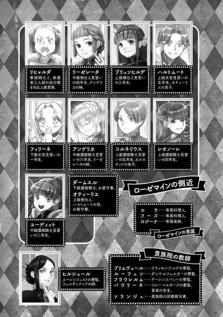

| 本好きの下剋上～司書になるためには手段を選んでいられません～第四部「貴族院の自称図書委員III」 | |
| 香月美夜 | |
| TOブックス (2018) | |
神殿への帰還、社交の日々、そして近づく下町の面々との別れ... 念願の図書館を守るためには手段を選んで入られません!? 貴族の学校を舞台に「下剋上」が加速するビブリア・ファンタジー最新刊！

イラスト：椎名 優 You Shiina
デザイン：ヴェイア Veia

プロローグ
今日も外は吹雪 だ。ギルは窓に打ちつける雪を見た。今はきっと冬の主 が大暴れしているに違いない。早く騎士団が倒してくれればいいのに......と思う。そうしたら晴れ間が出て、彼の主であるローゼマインの冬の好物、パルゥを採りに行ける。
「カイ、この箱も持っていってください。セリムはこの棚の紙を......」
指示を出すギルの吐息が、そのまま凍って落ちそうなくらいに真っ白だ。ローゼマイン工房には紙などの燃えやすい物が多く置かれているうえに、元々が物置だったため、暖炉 がない。工房の中は足先から凍りそうに冷えていた。軽くその場で足踏みしながら、ギルは時折指先に息を吹きかける。
「ギル、運ぶ物はこれで終わりですか？」
灰色神官のアヒムに声をかけられ、ギルはもう一度工房内を見回した。紙類も工具類も準備した物は全 て灰色神官達に運んでもらった。もう手仕事に使う道具は工房に残っていない。ギルは頷 くと、扉に鍵 をきっちりとかける。アヒムと二人、できる限りの早足で工房を後にした。この後は暖炉のある孤児院の食堂で作業だ。
「寒い中の監督、お疲れさまでした。ギル、担当はどうしますか？ そろそろ交代でしょうか？」
ギルが戻ったことに気付いたフリッツが、指示を一旦 中断して近付いてくる。この後の監督担当について問われたギルは少し考え込んだ。昨日まではギルが灰色神官達の監督をしていたが、そろそろ交代した方が良いかもしれない。ローゼマインへの報告を少しでも正確にするため、二人は適度に仕事を交代することを重視していた。二人の目で見ると、灰色神官達の仕事に対する姿勢や人間関係などで気付くところに違いが出るからだ。
「今日は私が製本作業を担当します。フリッツはカルタやリバーシの作業をお願いします」
作業の監督担当を決めると、フリッツは灰色神官達が作っている一角へ向かう。
ギルは製本作業をしている灰色巫女 達の方へ移動した。冬の終わりに城で行われる販売会までに製本作業を終わらせなければならない。年々販売会は重要性を増しているし、刊行数がどんどん増えている。冬の手仕事は大忙しだ。
「ほら、ディルク。ここをよく見て。紙と紙が綺麗 に重ならなきゃダメなのよ」
ローゼマインの側仕 えだったデリアが、手伝いたがるディルクにやり方を教えている。ディルクは去年の冬まで邪魔にならないように食堂の一角や一階にある子供部屋へ隔離 されていた。成長して大人の言うことを聞けるようになった最近では少しずつ仕事の手伝いを始めている。
......これもローゼマイン様に報告した方がいいかもな。
彼女は二人の生活を殊 の外 気にかけている。契約魔術に縛られて家族として会うことができない弟のカミルの成長をディルクに重ねて見ているからだ。
「あら、ギル。今日はこっちなの？ せっかくだからディルクの成長を見ていかない？ 上手にできるようになったんだから。ローゼマイン様にも報告してよ」
親馬鹿 ならぬ姉馬鹿のデリアがギルに気付いて手招きする。ギルは手近な席に座って、ディルクの奮闘を眺めた。黒に近い焦げ茶の目は真剣そのものだ。デリアに指摘 されたところに注意して丁寧に紙を重ねている。
「ディルクはもうちょっとしたら工房に出入りできそうだな。雪が完全に溶けたら森へ連れて行くこともできるんじゃないか」
「本当に？ 早く工房へ出入りできるようになりたいって言ってるの。楽しみね、ディルク」
昔馴染 みのデリアと話しているからだろうか。ギルの口調が何となく昔のものに戻った。けれど、デリアはその言葉遣 いを「神殿長の側仕えらしくない」と指摘することもない。ディルクはギルの言葉を聞いて、更に真剣に紙を重ねていった。
デリアはそんなディルクの様子に一度微笑 んだ後、重ねた紙をシュルシュルと糸で綴 じて製本していく。ギルも同じように製本作業を始めた。
「ねぇ、ギル。ローゼマイン様の様子はどうなの？」
作業の途中で不意にデリアがそう言った。視線は手元に集中したままの世間話のような雰囲気で。ギルは少しだけ彼女の横顔を見た後、「見回りに来ただろ？」と受け流した。ギルの答えが望む答えではなかったようで、デリアは少し唇を尖 らせる。
「孤児院に来たモニカの報告で、魔術具で何とか動けるくらいに弱ってるって聞いてたの。でも、孤児院の見回りに来た時は普通に動いていたでしょ？ 虚弱 だったから本当に回復したのか心配なのよ。変なところで頑張りすぎるところがあるし......」
青色巫女見習いだった頃に側仕えをしていたデリアは、モニカやニコラも知らない「マイン」を知っている。取り繕 わない姿と接していた分、鋭い。それに、ギル自身がデリアと同じような心配をしているせいで仲間意識が強くなる。
「まだ魔術具は外せないみたいだ。......それなのに、ローゼマイン様は奉納式 にも参加予定なんだ。城では貴族の付き合いをして、貴族院へ行って、やっと戻ってきたかと思ったら、神殿では神官長の手伝いや食事の声かけにも行ってる。そんなことを二年間も眠っていた病み上がりのローゼマイン様にさせるのか......って」
ギルの口からポツリと本音の不満が漏 れた。デリアが様子を探るようにギルを見る。
「......そんな状態でフランは何も指摘しないの？」
「フランもザームも神官長がいらっしゃるから大丈夫の一点張りさ。時々お前等は誰の側仕えなんだって言いたくなる」
神殿長室にいる側仕え達が揃 って神官長贔屓 なところに違和感 がある。ギルにとっては結構不愉快に思うところだ。でも、ローゼマインの行動を決めているフェルディナンドに対する不信感は神殿長室では言いにくい。フランやザームと険悪な雰囲気になるのも面倒に思えて、普段は胸の内に秘めている。けれど、ローゼマインを一番に考えてほしい。デリアならば賛同してくれると思ったせいか、言葉がつらつらと流れた。
「ふーん......。まぁ、フランは神官長の側仕えだったし、前から神官長の意見を最優先にするところはあったわよ。でもね......」
ギルの言葉を何度か頷いて聞き終えたデリアは、水色の目でギルを見た。静かに凪 いだ泉のような目だ。
「ローゼマイン様だけを大事に思うあまり周囲の忠告や思いを聞き入れなかったら、ギルもあたしと同じになるかもしれないわよ。あたしはディルクを危険に晒 すつもりなんてなかったもの」
ディルクだけを大事にしたくて、デリアはフラン達の注意を聞かずに前神殿長を頼った。その結果、肝心のディルクを命の危険に晒した。同じようにローゼマインに対して盲目的になりすぎるなと忠告されて、ギルは頬 を叩 かれたような衝撃を受けた。
「貴族社会のことはあたし達にはわからない。そんなにひどい体調でもローゼマイン様が神官長の提案を受け入れたなら、そうしなきゃいけない理由があったってことかもしれないでしょ？ ギルはグーテンベルクとして神殿を不在にする時間が他の側仕え達より長い分、ちゃんと周囲と話をした方がいいわ」
フフッと笑ったデリアの成長が今になって目に映る。体が成長し、仕事ができるようになったつもりでも自分の中身はまだ子供なのだとギルは感じた。
「今日はフランとモニカが付いているのか」
神殿の側仕え達の食事は下げ渡しになるが、必ずローゼマインに付いている者が必要なので全員で一緒に食べるわけではない。神殿長室から扉で隔 てられた奥には、物置と側仕え用の階段と筆頭側仕えの部屋がある。側仕えが交代で食事を摂 るのは筆頭側仕えの部屋だ。主が人を呼ぶためのベルを鳴らしたらすぐにわかるようになっている。
「そういえば、ギル。先程はデリアと何を話していたのですか？」
食事中にフリッツに問われ、ギルは少し考え込んだ。ザームがいるのに神官長の批判になりそうなことを言ってしまっても良いものだろうか。スープを飲むザームを見ると、ギルの視線に気付いたザームが少し警戒したように緑の目を光らせた。
「もしかしてデリアが何か怪しい動きをしていたのですか？」
前神殿長の側仕え見習いとして神官長とローゼマインを危険に晒したデリアのことを「罰が軽い」と思っている者は多い。それはギル自身も当時同じ気持ちだった。だが、今もデリアを危険だとは考えていないし、孤児院から出られないという罰が軽いとも思っていない。
「デリアはローゼマイン様に感謝しているので、もうあんな危険なことはしません」
はっきりと言い切ると、ギルは「周囲と話をした方がいい」と言ったデリアの言葉を思い出した。質問したフリッツではなく、ザームに視線を向けて答える。
「二年間の眠りから目覚めたばかりなのに忙しそうなローゼマイン様をデリアは心配していただけです。あんなに弱っている体を魔術具で無理に動かす必要はないんじゃないか。今のようにローゼマイン様を頑張らせる必要があるのかって......私も同じ気持ちです」
デリアに指摘された今でも、ギルはフェルディナンドのやり方に対する不満が消えたわけではない。そんなギルの気持ちは言わなくてもザームに通じたのだろう。ザームが不快そうに少し眉 を寄せた。
「ギルは神官長のお言葉を信じられないのですか？ 神官長がいらっしゃらなければ......」
「神官長がローゼマイン様を助けてくれたことも、すごいこともわかっています」
ザームに全てを言わせず、ギルは首を横に振る。
「ならば、神官長にお任せしておけば間違いないこともわかるでしょう」
いつも通りのザームの言葉にギルは反感を覚えた。フェルディナンドに感謝もしているし、貴族の中では話のわかる方だということも知っている。けれど、病み上がりのローゼマインにあれほどの負荷をかけることが正しいとは思えない。
「回復を最優先させずに城や貴族院へ行かせるのは何故 ですか？ それは病み上がりのローゼマイン様にさせることなのですか？ ローゼマイン様がもう大丈夫だと笑っていても、私にはローゼマイン様の全く力が入っていなくてぐったりとした体と、恐怖に強張 った顔で辺りを見回していた姿の方が強く印象に残っているのです」
ギルは今まで溜 め込んでいたことを全て吐き出していく。ローゼマインを助けてくれたことに対する感謝と、積もっていく不満は別物なのだ。
「ギル、貴方 の気持ちはわかりますが、少し落ち着いてください」
フリッツからそう言われて、ギルは軽く唇を噛 んだ。落ち着くように言われたことで、何となく自分の意見を否定されたような気がしたのだ。ここには自分の味方がいないのではないか、そんなふうに感じた時にニコラが口を開いた。
「わたくしはギルの気持ちの方がよくわかります。神官長の魔術具で動けるようにしているだけで、ローゼマイン様はまだ自分で歩くことさえできません。お風呂でも魔術具を外せないのです」
ニコラはローゼマインのお風呂の世話をするので、目覚めた時にどれだけ体が動かなかったのか、それにローゼマインがどれだけ不安を感じていたのか、よく知っている。
「神官長のお手伝いや貴族のお付き合いも必要なのでしょうが、今は回復に専念してほしいです。沈んだローゼマイン様のお顔は見たくありませんから」
ニコラが同意してくれただけで、ギルはひどく安堵 した。自分以外にもローゼマインを一番に考えてくれている側仕えがいる、と。
二人の意見を聞いて少し考えていたザームが、何かに気付いたようにギルとニコラを見た。
「神官長もフランも私も、ローゼマイン様に少しでも早く回復してほしいと思っています。それは嘘 ではありません。本当にそう思っています。ですが、貴族社会で弱みを見せることはできません。それに対する意識が違うように思えます」
「どういう意味ですか？」
「ギルとニコラはローゼマイン様にしかお仕えしていないので、貴族の館に行ったことがないでしょう？ 本当の意味で貴族を知らないし、貴族社会を見たことがないのです。ローゼマイン様が貴族として生きていくための負担が少なくなるように、神官長は考えてくださっています」
ザームの言う通り、ギルもニコラも貴族の館に行ったことがない。直接顔を合わせる貴族は、神殿にやってきた貴族だけだ。貴族社会ではそうだと言われると、反論できない。自分達が間違っていたのかという気分になった。それが悔しくて、何か言い返せることがないかとギルは必死に考える。
「......ですが、ここ数日間は研究最優先で神官長が工房に籠 もっていて、ローゼマイン様が声をかけなければ食事を摂らないとか、出てこないとか迷惑をかけているのでしょう？ それは貴族社会に必要な負担なのですか？ 何より、自分でなければ救えないと神官長自身がおっしゃったのですから、ローゼマイン様の回復を最優先にしていただきたいです」
そんなことを指摘されると思わなかったというようにザームが緑の目を丸くした。噛みつける場所を見つけたギルは、一番言いたかったことを続ける。
「神官長がすごいことはわかるけれど、ザームはローゼマイン様の側仕えではありませんか。だから、私はもっとローゼマイン様を大事にしてほしいと思っているだけです」
勝ったという思いのまま、ギルは更に言葉を続けようとした。それをフリッツが手を上げて止める。
「ギル、ザームが一番に神官長の心配をするのは当然でしょう。厳密に言うと、ザームはローゼマイン様の側仕えではないのですよ。ローゼマイン様を最優先に考えてほしいと期待してはいけません」
フリッツがギルをなだめるような口調でそう言った。ギルだけではなくザームも驚いたようにフリッツを見た。穏やかに微笑んだフリッツが何を言い出したのかわからない。
「フリッツ、それはどういう意味ですか？ 私を侮辱 しているのでしょうか？」
「侮辱ではなく、事実を述べているだけです。それに、私はそれが悪いとは思っていませんし、説明すればギルやニコラにも納得できると思いますよ」
フリッツはそう言って昔の話を始めた。
「私とザームが以前にお仕えしていた主は、シキコーザ様というのですが、ひどく乱暴で感情的でお仕えするのが大変な方でした。それでも主がいるといないでは生活が大違いです。シキコーザ様が還俗 し、孤児院へ戻されたことでそれを知りました。当時の孤児院はひどかったでしょう？」
ギルは頷く。当時は孤児院から出られなかったので、その青色神官と直接の面識はない。でも、フリッツ達が孤児院へ戻された頃のことはよく覚えている。次々と孤児院に元側仕え達が増えて、生活が一気に苦しくなった時期だ。誰かに救われたいと思っていて、ローゼマインの側仕えとして召し上げられたことが嬉 しかった。
「私やギルやニコラを救ったのがローゼマイン様で、ザームを救ったのが神官長です。そして、ザームはローゼマイン様に側仕えが不足しているため、神官長に命じられて異動しました。ローゼマイン様にお仕えしていても、ザームの忠誠の先は神官長なのです。悪いことではなく、立場や考え方の基本が違うというだけのことです」
「そういうことですか......」
ニコラとザームもフリッツの言い分がわかったようだ。ギルにもすんなり理解ができた。ギルがグーテンベルクとして動く時にプランタン商会の言うことを聞くように、とローゼマインに命じられるのと同じようなものに違いない。そう考えると、ローゼマインの側仕えとして仕えることと、忠誠がフェルディナンドにあることがギルの中で両立する。
「それでも、神官長が工房に籠もるのはどうかと思いますが......」
ギルが唇を尖らせると、ニコラも同意しつつ苦笑する。ザームがフッと笑って「逆の立場で考えるとわかりやすいでしょう」と言った。
「仮に神官長が不在になり、ローゼマイン様が二年くらい読書もできずにずっと仕事漬 けで頑張ったとしましょう。その後、神官長がお戻りになって、ローゼマイン様が一日中読書をしたいとおっしゃったらギルはどうしますか？ 二年も頑張ったのだから数日間の読書くらいは許されてもいいだろうと思いませんか？」
ザームのたとえ話を聞いて、何故この時期に工房へ籠もるのかと憤慨 していたギルの気持ちが凪いでいく。今はローゼマインを救うために二年間ずっと一人で耐えてきたフェルディナンドが束 の間の休息を取っているだけなのだ。おそらくローゼマインもそれがわかっているから「また籠もっているのですか」と言いつつ、許容しているに違いない。
納得したギルを見て、フリッツが安堵したように微笑んだ。
「神官長に対する要望があるならば、元側仕えのザームやフランを通すと考慮される可能性は高まりますよ。例えばローゼマイン様の診察をしてから研究してほしい......とか」
ザームがクスリと笑って「提案してみましょう」と頷いた。
「では、今のローゼマイン様はプランタン商会との契約魔術の解消をすごく不安に思っています。その辺りを神官長がどのように考えているのか尋ねてください」
「わかりました。尋ねてみましょう」
笑って了承してくれたザームに感謝する。隠し部屋でルッツ達と話をしている時と、隠し部屋から出たローゼマインは違う。隠し部屋での彼女を見た者にしかわからないだろう。貴族として生きていくことで、彼女は自分の家族とグーテンベルク達を守っている。これ以上の無理はしなくていいと思うし、ルッツやベンノ達と話をしている時のようにローゼマインが取り繕わずに笑っていられる環境があってほしい。フランと違って「身分が変わったので仕方がありません」という一言で終わらせたくないのだ。下町の家に向かって「ただいま」と帰っていた時のような安心した笑顔を見せてほしいと思う。
......思うだけで、オレには何にもできないんだけどさ。
ギルは心の中で苦い思いを付け足した。せっかく頭を撫 でて褒 めてくれようとしたローゼマインをしょんぼりとさせてしまったことを思い出す。
ローゼマインが眠っている間、ギルは少しでも早く目を覚ましたくなるように新しい本を増やそうと思って印刷を頑張った。早く大人になりたい、一人前扱いされたいと思っていた。だからこそ、ザームやフランに子供扱いされると、「もうそんな年ではない」と言っていた。そのせいで頭を撫でようとしたローゼマインにも反射的に同じ言葉を返してしまったのだ。
慌 てて取り繕って跪 けば、ローゼマインは少しだけ寂しそうな声で褒めてくれた。
二年間の努力と成長を認めてくれたことが本当に嬉しくて、嬉しくて......胸が熱くなった。
あぁ、この優しい温 もりも最後だと思うと、ひどく寂しくて......馬鹿な反発をせずにもっと撫でて、褒めてもらえば良かったと思った。
同時に、撫でてくれる手が記憶にあるよりずっと小さく感じられて、泣きたくなった。
救われ、支えられ、見守られていた今までと違い、今度は自分がこの幼いままで不安そうな主を支えなければならないと思った。
契約魔術解消の話が出たことで、ルッツ達とローゼマインの繋 がりがなくなることを不安に思うのは、ギルも同じなのだ。初めて神殿を出た日のこと、マインの家まで送るために下町を一緒に歩いた思い出は自分の中に色濃く残っている。もう今はローゼマインが下町へ出向くこともない。あの頃の思い出が少しずつ薄れていくように感じることがある。
ギルが物思いにふけりながら食事を進めていたら、いつの間にか終わっていた。食器を片付け、孤児院へ回せるように準備する。神の恵みを運ぶのは、この後も食堂で手仕事をするギルとフリッツの役目だ。大きな鍋が置かれた重いワゴンを押していく。
「ギル、神官長に尋ねたところでおそらく契約魔術の解消は避けられないでしょう。解消になった時、ギルはどうしたいのですか？ 神官長がローゼマイン様に何をしてくださるかということより、ギルがどのように仕えるのかということが重要だと思いますよ」
フリッツに問われ、ギルは少し考えた。自分に何ができるのか。ローゼマインが何を望むのか。
「ルッツが手紙の仲立ちをすることでローゼマイン様と下町を繋いでいたように、今度は神殿にいる自分が下町とローゼマイン様を繋いでいきたいと思います」
「......それはいいですね。ローゼマイン様もプランタン商会も心強く思うでしょう」
せめて、新しい本を持っていった時の笑顔だけは変わらないように、貴族に変えられないように支えたい。ギルは自分の目標を見据え、ワゴンを握っている拳に力を入れた。
奉納式と城への帰還
二の鐘が鳴って朝食を摂っていると、アンゲリカがやってきた。
「アンゲリカ、何だか久し振りですね」
「ボニファティウス様の訓練があったのです。それから、両親にも呼び出されていました。でも、この後は神殿に泊まり込んでもいいと許可を得ました」
アンゲリカはまだ貴族院を卒業していないので、神殿の護衛は特別に許されている状態だ。泊まり込むことは許されていなくて、通うように言われていた。けれど、あまりにも吹雪が強くなっている中を通う方が危険なので、泊まれるように彼女の両親にお願いしていたのである。
「神殿業務が許されたので、同じように特例で冬の主討伐 にも参加できないかと師匠にお願いしてみたのですが、そちらは却下されました」
残念です、とアンゲリカが頬に手を当てて目を伏せる。憂 い顔の美少女の悩みが「強い敵と戦いたい」とは一見しただけではわかるまい。
三の鐘が鳴れば神官長室へ移動する。それがわたしにとって神殿の日常だ。
「神官長、三の鐘が鳴りました。お仕事の時間ですよ」
こうして工房に向かって声をかけるのも、「......わかった」という渋い返事と表情でフェルディナンドが出てくるのも、ここ数日で日常と化しつつある。
「わたくしが呼ぶのは一日一回ですから、そんなに怖い目をしないでくださいませ」
工房から出てきたフェルディナンドに睨 まれて、わたしはむむっと睨み返す。わたしも好きで声をかけているわけではない。工房に引き籠もってしまうと、鐘の音を完全に無視するのでわざわざお知らせしているだけだ。エックハルトはあまり何度も呼びかけすぎたせいで、声をかけてもシャットアウトされてしまっているらしい。
「わたくしに呼びかけられるのがお嫌でしたら、エックハルト兄様の声が聞こえるようにすればよろしいのではございませんか？」
「......君は一日一回しか来ないが、エックハルトは一日中声をかけてくるのだ。いつぞやのボニファティウス様を彷彿 とさせる」
「え？ おじい様が何かなさったのですか？」
わたしが二人の接点を思い出していると、フェルディナンドは「もう終わったことだ。思い出したくもない」とひどく苦い顔で首を横に振った。どうやらボニファティウスはフェルディナンドをうんざりさせるようなことをしていたらしい。
フェルディナンドを工房から出した後はお仕事の開始である。わたしはいつもの指定席に座って石板を取り出した。
「ローゼマイン様はいつも神殿でこのようなお仕事をされているのですか？」
初めて神殿でのお仕事風景を見たアンゲリカが信じられないと言わんばかりの顔で、わたしと積み上がる資料を見比べた。
「神殿の書類を処理しているのは神官長なのです。本当は神殿長であるわたくしがしなければならないことをお任せしています。わたくしにできるのは、計算のお手伝いをするくらいで、まだ書類の決裁 などは任せていただけません」
「......いいえ、これだけ計算をするなんて素晴らしいと思います」
座学が苦手で騎士になったアンゲリカは青い目を輝かせてわたしを見る。そんな中、フェルディナンドは次々と仕事を割り振った。神官長室にいる者には平等に仕事が与えられるのだ。
「エックハルトはこれ、ダームエルはあちらでこれを、アンゲリカはダームエルと一緒に......」
「わたくしは護衛騎士として扉を死守いたします」
息を呑 んだアンゲリカがビタッと扉に張りついた。「やっと貴族院の座学が終わったのに......」と目を潤 ませる様子を見て、フェルディナンドはあっさりアンゲリカを切り捨てた。
「そういえば落第ギリギリの問題児とボニファティウス様が言っていたな。無能に仕事をさせようとするだけ時間の無駄だ。始めるぞ」
ダームエルはアンゲリカが「無能」と切り捨てられたことを心配したのか、気遣うようにアンゲリカを見たが、当人は明らかにホッとした顔をしている。心配するだけ無駄だ。
神官長室にいながら一人だけ書類仕事をしていないアンゲリカは、表情を引き締めて扉の前に仁王立 ちになった。護衛仕事は完璧 にするつもりらしい。
皆が黙々と書類仕事をしているうちに四の鐘が鳴り、お昼ご飯の時間となる。
「神官長、きちんと食べてから工房に籠もってくださいね」
わたしがテーブルの上を片付けながら注意すると、フェルディナンドはじっとこちらを見た。
「いや、午後は君の体調を診察する」
「......え？」
「昨日の夕食時、それから本日の執務中の動きを見る限り、魔術具に頼りきりで回復が非常に遅い気がする。貴族院から戻ってきてから全く君の状態を診察していなかったことも指摘された。......今の君の顔色から考えると、非常に良くない状況ではないか？」
「そ、そんなことはございませんよ？」
何とか誤魔化 したいが、研究から一度目を離してしまったフェルディナンドを誤魔化せるはずがない。わずかに唇の端を上げる彼の目が心まで読むようにじっと見てくる。
......まずい。怒られる。何もしていなかったことがバレちゃう。
わたしは周囲に助けを求めてみるが、ダームエルとアンゲリカには目を逸 らされ、フランには「良くない状況とはどういうことでしょう？」とちょっとだけひんやり感のする笑顔で問われてしまった。フェルディナンドの全面的な味方であるエックハルトでは、わたしの味方になってくれそうにない。味方がいない。ピンチだ。
「フラン、午後に行く」
「かしこまりました。お待ちしております」
......フラン、勝手に決めないで！ わたし、まだ返事していないよ!?
おーい、と心の中で反論しても誰も聞いていない。フェルディナンドの側仕えは「神官長の研究が一段落したのでしょう」と和 やかに喜び合っている。
「では、ローゼマイン。部屋に戻って昼食を終えなさい」
味方を探しておろおろしているうちに、わたし抜きで午後の予定を決められてしまった。
「神官長は工房で研究をすると良いですよ。ほら、シュバルツとヴァイスの新しい衣装は急がなければなりませんし......」
「次の冬までに作れば良い、と君は言ったはずだ」
......あ、あぅ。そうだった。わたしのバカバカ！
「えーと、そうそう。ヒルシュール先生も魔術具を直してもらえるのを待ち構えていますよ」
「もう直した」
......え？ え？ もう？
「では、音楽の編曲はいかがでしょう？ こちらはわたくしが貴族院に戻るまでなので、お急ぎでお願いしたいのです。光の女神に捧 げる曲を......」
「明日の午後、君のフェシュピールの練習と共に行う。楽師を貴族院に残してきた今、君は練習から逃れようと考えているかもしれないからな」
......バレてる!?
「そのようなことはございませんわ。ほほほ......ほほ......」
「ローゼマイン、往生際 が悪い。本日の予定は決定した。早く部屋に戻って、昼食を摂りなさい。私が向かうまでに魔術具を外しておくように」
「......はい」
神官長室を出て、わたしはトボトボと神殿長室へ戻る。やっぱり誤魔化しきれなかった。午後に診察では、今から筋力トレーニングをしても絶対に間に合わないではないか。
「フラン、どうして勝手に予定を決めたのですか？」
わたしが八つ当たり気味に睨むと、フランは穏やかな微笑みを返してくれた。
「プランタン商会との面会が終わりましたし、奉納式までは予定がございません。なるべく早く診察していただいた方が良いではありませんか。私もローゼマイン様のお体の具合は気掛かりでしたから、神官長に診ていただけると安心できます」
貴族院へ向かう前の状態しかわからないので、今の状況を把握 しておきたいというフランに、わたしの側仕えは全員が「神官長にお任せしておけば大丈夫です」と賛成の意を示した。わたしのユレーヴェを作り、解毒をして二年間わたしの管理をしていたフェルディナンドをわたしよりも信頼しているように見える。完敗だ。わたしは口を噤 むしかない。
「神官長がご自身の研究のためのお時間をわざわざ割 いてくださるのです。ローゼマイン様がそれだけ心配なのでしょう。厳しいことをおっしゃいますが、お優しい方ですから」
フランが尊敬の眼差 しでフェルディナンドを褒める。
......違う、違う。優しさじゃないよ。わたしが、ヤバッ！ って思った時、悪い顔でニヤッとしたもん。フランは神官長に洗脳されてる！
エックハルトと側仕え達に懇願 されても、わたしの体力や筋力が回復するまでフェルディナンドを工房に籠もらせておけば良かったのだ。
......わたし、大失敗。天岩戸 、カムバーック！
昼食後、わたしは借りてきたオルドナンツでオティーリエにギーベ・ハルデンツェルとの面会をセッティングしてもらえるようにお願いした。それが終わると、モニカとニコラによって魔術具が外されていく。途端に体が重くなり、準備してもらっていた椅子にドスンとお尻が落ちた。
「ローゼマイン様!? 大丈夫ですか!? 」
「大丈夫ですよ。何ともありません」
「急に力が抜けて立てなくなったではありませんか。何ともないようには見えません」
ニコラとモニカが魔術具を手に持ったまま泣きそうな顔でわたしを覗 き込んでくる。軽く手を振って大丈夫だとアピールしたいけれど、すぐには手が動かない。わたしは集中して魔力を全身にまとわせ、身体強化をした。手を動かして振る。
「魔術具がなくなったので、すぐには動けなかっただけです。ほら、大丈夫でしょう？」
「......いきなりカクンとなったので驚きました。本当に大丈夫なのですか？」
わたしは立ち上がって普通に動けるところを見せる。ニコラとモニカがホッとしたように表情を緩めたので、普通に服を着てフェルディナンドを待っていた。
「ローゼマイン、身体強化の魔術は解きなさい」
入ってきた瞬間に全てを見抜かれた。フェルディナンドの溜息混じりの言葉にわたしはそっと視線を逸らす。いきなりバレていた。
「それとも、何か？ 身体強化を解除せざるを得ないほどの攻撃を受けたいということか？」
冷たい表情で静かにそう言われ、フェルディナンドの右手にシュタープが出現したのを見た瞬間、わたしは慌てて身体強化を解除した。同時に、魔剣シュティンルークを構えたアンゲリカがわたしとフェルディナンドの間に割って入る。
「神官長、いきなり暴力に訴えるなんてひどいですよ！」
わたしはアンゲリカの後ろから顔だけ出して非難したけれど、フェルディナンドはフンと鼻で笑っただけだった。
「人聞きが悪いことを言うな。今の言葉は、手間をかけさせるなという意味だ」
「そんな貴族の言い回しは聞いたことがございません！」
身体強化の魔術を解除したせいで立っているのが辛くなり、その場に座り込みながら反論する。シュティンルークを構えたままのアンゲリカもわたしに同意してコクコクと頷く。
「勉強が足りぬ」
やれやれと言うように頭を振ったフェルディナンドの言葉に、わたしの盾となっていたアンゲリカがハッとしたように目を見開いた。「確かにわたくしは不勉強です。そのような意味だとは存じませんでした」とすっと身を引く。
......ちょっと待って。あっさり放って行かないで。
アンゲリカにすがろうとしたわたしを見て、フェルディナンドは自分の背後を振り返った。
「エックハルト、貴族門の前の広場でアンゲリカと少し訓練をしてくると良い。アンゲリカもずっと部屋に詰 めていては体が鈍 るであろう？」
「よろしいのですか!? 」
「ここの護衛はダームエルがいれば良い。オルドナンツで呼ぶまで戻ってくるな」
アンゲリカは「はい！ かしこまりました」と喜んでエックハルトと出て行ってしまう。診察するような場所にこそ女性騎士が必要なのに出て行ってどうするのか。
......アンゲリカのバカバカ！ 簡単に操られすぎだよ！
「ふむ。私に躊躇 いなく剣を向ける程度には忠誠心はあるようだが、驚くくらいに考えなしだな。ローゼマイン、本当にアレが護衛騎士で大丈夫なのか？」
「......今までで一番不安になりました」
フェルディナンドの指示でわたしはフランに抱き上げられて椅子に座らされた。その後は言われるままに足を動かしたり、腕を動かしたりする。身体強化がないと辛い。
「まったく......。貴族院で全然訓練をしなかったな？」
「色々とあったので、毎日忙しかったのですよ」
「後半は毎日図書館に通っていたという報告だったが？」
「図書館への往復がわたくしの運動時間でした」
「不用意に隙 を見せない方が良い貴族院ならばともかく、こちらでは襲撃の危機がまずないので神殿にいる間はしっかり回復に努めると良い」
わたしはフェシュピールの練習の他に、魔術具を着けたままの奉納舞のお稽古 と魔術具を外してのリハビリが義務付けられてしまった。
「奉納式の時は大量の魔力を使うことになるので、身体強化を補佐するための魔術具は外した方が効率良く奉納できる。そのためにも少しは自力で動けるようになっておきなさい」
「魔術具なしで身体強化を使えば大丈夫です。ちょっと上手になったのですよ」
「大丈夫とは限らぬ。君は慣れていないからな」
診察が終わってからは、厳しいリハビリの毎日となった。フランを始めとしたわたしの側仕え達は、フェルディナンドに「ここで放置しておけば、ローゼマインは一生魔術具なしでは生きていけなくなる」などと真顔で言われ、わたしのリハビリに必死だ。側仕え達の心配と愛は嬉しいが、わたしは声を大にして言いたい。
......神官長は自分の研究時間が欲しいだけなんだよ、皆、気付いて！
わたしはフェルディナンドの作ったメニュー通りにリハビリする。魔術具を外して足を上げたり腕を動かしたりするだけだが、今まで魔術具任せで碌 に動かしてこなかったので、毎日ぐったりである。おまけに、フェルディナンドがフェシュピールの先生となったため、要求レベルがグンと上がった練習をさせられるようになった。
「うぅ、早く貴族院に帰りたいです。貴族院は図書館があって、こんなにたくさんの課題がなくて最高の環境でした」
「君が奔放 に振る舞う分、周囲が苦労するのだ。君が貴族院に戻るのは、領地対抗戦があるギリギリの時期だ。冬の社交界で少し貴族の社交について学ばせなければ危険すぎる」
「そんな、ひどい。......わたくしの図書館が」
落ち込むわたしにフェルディナンドが「もう少しひどい計画もある」と真顔で言った。
......何それ、怖いっ！
奉納式の朝は忙しい。身を清め、神殿長の儀式用の衣装に身を包み、冬の貴色 である赤と白の花の髪飾りを挿 して準備を整える。今日はすでに魔術具を外しているので、わたしは自分が動けるように身体強化の魔術を全身にかけている。身体強化のイメージはアレだ。バイクに乗っている人が着ているような全身をぴったりと覆 う革の......何と言ったか、ほら、全身タイツである。わたしは今魔力の全身タイツを着ている状態なのだ。
フェルディナンドが身体強化を覚えるための補助の魔術具と言っていた通り、ずっと魔術具を着けていたわたしは、体力や筋力の回復を犠牲にした分、身体強化が少し上達している。
「奉納式とは一体何をするのですか？」
そんなアンゲリカの質問に答えるのはダームエルだ。小聖杯に魔力を込めて、春の祈念式でエーレンフェストのギーベに配って回ると説明している。「アンゲリカの成績を上げ隊」で教師役だったダームエルは、アンゲリカに噛み砕いた説明をするのが上手い。
「ダームエルはすごいですね。騎士なのに、神官長のお仕事まで手伝えるのですから。まさかローゼマイン様の護衛騎士には計算能力まで必要とされるとは考えていませんでした」
アンゲリカが計算仕事を手伝うと、大体の場合は二度手間になるそうだ。「手伝わないのが最高のお手伝い」と両親に言われているらしい。
「アンゲリカはローゼマイン様を守るということに関しては全く躊躇いがない。それには感心している。私はフェルディナンド様に剣を向けるなど考えられなかったからな」
診察前にフェルディナンドがシュタープを出した時、ダームエルはいつもの脅 しの一種だと瞬時に理解して動かなかった。ある意味では護衛失格とも言える。主に武器が向けられているのだから、守るのが護衛の役目なのだ。
「アンゲリカは訓練におびき寄せられて離れなければ、満点の護衛だったのですけれど......」
「次回からは惑わされません」
キリッとした顔でアンゲリカが答えたが、その後、エックハルトとの訓練の様子やその強さについて楽しそうに話しているのを見れば、また簡単に釣られそうだ。
「神殿長、神官長がお呼びです」
灰色神官に呼ばれ、わたしは衣装の裾 を踏まないように気を付けて儀式の間へ移動する。儀式の間に入れるのは神官だけだ。護衛騎士は扉の前で待機することになる。エックハルトが待機していることで、フェルディナンドが中にいることがわかった。
儀式の間は祭壇 に供えられているお香の匂いで満ちていた。すでにカンフェルやフリターク、他二名の青色神官がフェルディナンドから配られた魔石を手に待っていた。
「神殿長、お元気そうなお姿を拝見 して安心いたしました」
フェルディナンドのお手伝いを任せられていたカンフェルとフリタークが心底ホッとしたような声でそう言った。青色神官達にここまで目覚めを喜ばれると思っていなかったので、わたしは少しばかり驚きながら笑顔で礼を言う。
「わたくしが不在の間、カンフェルとフリタークがずいぶんと頑張ってくれたと側仕え達から聞いています。助かりました」
青色神官達を労 い、わたしは祭壇に向かって歩く。一番前で跪くと、両手を床に敷かれた赤い布に当てた。
「......準備は良いか？ では、始めよう」
フェルディナンドの声に促 され、わたしは軽く息を吸って祈りの言葉を口にする。
「我は世界を創り給いし神々に祈りと感謝を捧げる者なり」
続いて後ろの五人が復唱し、低い声が儀式の間に朗々 と響いていく。
「高く亭亭 たる大空を司 る、最高神は闇と光の夫婦神 広く浩浩 たる大地を司る、五柱の大神 水の女神フリュートレーネ 火の神ライデンシャフト 風の女神シュツェーリア 土の女神ゲドゥルリーヒ 命の神エーヴィリーベ 息づく全ての生命に恩恵を与えし神々に敬意を表し その尊い神力の恩恵に報い奉 らんことを」
祈りの言葉を口にするうちに、するりと自分の中から魔力が流れていく。魔力を吸った赤い布がキラキラと光り、魔力が光の波となって祭壇の方へ流れていく。どちらも慣れた感覚、見慣れた光景になっていた。光の波はわたしの後ろからも次々と流れてきて、その勢いに乗るようにわたしの魔力が更に引き出される。
......のぉうっ！ 脱げるっ！
魔力がどんどん引き出され、薄くまとっている身体強化の魔術に必要な魔力まで一緒に流れていきそうになる。全身タイツが引っ張られていくような感覚にわたしはぎょぎょっと目を見開いた。いくら耐えようとしても、後ろからどんどんと流れてくる魔力の力が強くて抗 えない。身体強化を更に強めるために出した魔力は、強化に使われる前に勢い良く赤い布の上を流れていく。
......あ、あ、あぁっ!? 脱げた！
自分を覆っていた魔力が剥 がれて、赤い布の上を流れていった。想定外のビックリだ。
......儀式が終わったら身体強化の魔術をかけ直さなきゃ。
床にべちゃりと頬を付けながら、わたしは引き出されるままに魔力を流していた。
「もう良いだろう。ずいぶんと効率良く魔力が流れたようだ」
フェルディナンドの言葉で青色神官達がホッとしたように息を吐き、立ち上がったのがわかった。わたしはもう一度身体強化の魔術をかけようと自分に魔力を流す。けれど、赤い布についたままの手から魔力がずるんと流れていった。
「儀式は終わりだぞ」
フェルディナンドの呼びかけに、ぼてりとわたしの体はその場に倒れた。跪いて両手を床につけるという土下座状態だったので、横に転がっただけで大したダメージはない。けれど、わたしが倒れたことで同席していた青色神官達が慌て始める。
「騒ぐな。大したことではない。原因はわかっている」
フェルディナンドの静かで迫力のある一喝に儀式の間はシンと静まった。
「神殿長の側仕えを入れるので、其方 等 は退室せよ」
フェルディナンドは青色神官達を追い出し、わたしの側仕え達を呼びに行かせる。儀式の間に残っているのが二人だけになると、転がるわたしを見下ろして「だから、慣れておらぬ者には難しいと言ったではないか。馬鹿者」と言った。
「うぅ......。こんな状態で冷静にお説教しないでください」
「大事なことも忠告も、すぐに忘れてしまう君の記憶に残しておくためにはそれなりに衝撃的な状況や強烈な印象が必要であろう？ 状況によっては身体強化を使うことができなくなる。その程度は想定しておきなさい」
「神官長に言われた通り、真面目 に訓練して体力も筋力も付けるので助けてください」
「反省したか？」
「しました」
フェルディナンドに助け起こしてもらった後は、血相を変えてやってきたフランに渡される。
「身体強化の魔術を使えない状況になることを本人が想定してなかっただけだ。体調に別状はない。部屋に戻って魔術具を着ければ問題ないので心配はいらぬ」
「かしこまりました。......ローゼマイン様の大丈夫は全く当てになりませんね」
フランにしみじみとした口調でそう言われ、わたしはしょぼんと項垂 れた。
わたしが身体強化のためにどんどんと魔力を流したことで、小聖杯を満たす魔力は予想外に早く溜まったようだ。五日ほどの予定が三日で終了した。
奉納式で倒れたとは言っても、赤い布に手をついた状態では身体強化の魔術ができなかっただけだ。いつもと違って熱を出したわけでもない。診察したフェルディナンドに「少しは丈夫になっているのではないか」と言われ、わたしは自分の変化に気付いた。
「このまま元気な体を目指したいですね。何をしましょう？」
「いや、君が張り切ると碌なことがない。訓練をやりすぎて倒れる未来が見える」
過ぎたるは猶 及ばざるが如 し、という意味のことをフェルディナンドが滔々 と語る。身に覚えがあるわたしはおとなしくお説教を聞いていた。
「ここで訓練を続けられれば体のためには良かったのだろうが、社交に関してもう少し知らなければ貴族院に戻せないからな。仕方がない。城に戻るぞ」
その言葉に神殿から城へ移る準備が始められる。フェルディナンドはお仕事セットに加えて研究セットまで準備していた。ちょっと大きめのレッサーバスにしなければ荷物が載らない。
「半分以上は君の依頼だ。文句はあるまい」
シュバルツとヴァイスの資料、ヒルシュールから預かった魔術具、楽譜やフェシュピール、どれもこれも神殿に置いておいて困るのはわたしだ。レッサー君の車体が大きくなると吹雪に煽 られてふらふらするので、できるだけコンパクトな方が良いけれど仕方がない。
「吹雪で変な方向に飛んでいきそうになったら助けてくださいね」
「魔力を多く流せば良いのだから自力で付いてきなさい。これ以上の面倒をかけないように」
「うぐぅ、頑張ります」
......お母様にこの実態を教えてあげたい！ 神官長に騎士物語みたいな優しさや甘さはないんだよって！
そう思いながら猛吹雪の中を城へ戻る。ノルベルトが開けてくれた扉にレッサーバスごと飛び込むと、すぐさま扉は閉められた。
「おかえりなさいませ、ローゼマイン様」
ノルベルトがわたしの手を取り、下ろしてくれた。すでに指示がなされていたようで、下働きの者がわらわらと現れてレッサーバスの中から荷物を運び出していく。
「おかえりなさいませ。お待ちしておりました、ローゼマイン様。お部屋でゆっくりと印刷業のお話をいたしましょう」
側近達と一緒に城で出迎えてくれたのは、エルヴィーラだった。
お母様とハルデンツェルの印刷業
「では、急いで着替えましょうか。エルヴィーラ様がお待ちですから」
自室に戻ると、リヒャルダが早速上着を脱がせる。寒くないように色々と着込んでいたわたしは玉ねぎのように剥 かれていった。
「ローゼマイン様、お召し替えを終えたらエルヴィーラ様へのお土産が入った箱を持って本館の面会室へ向かいましょう。準備は整っています」
今日はエルヴィーラと余所 に出してはいけない本の話をすることになっている。そのため、側仕えとして付くのはオティーリエだけで、護衛はアンゲリカだけだ。オティーリエはエルヴィーラと仲が良く、個人的によく会っているお友達なのだそうだ。わたしが城に上がることになった時に、オティーリエに側仕えを頼んでくれたのはエルヴィーラだったらしい。
リヒャルダは部屋に残ってわたしが神殿から持ち帰った荷物の片付けをしなければならない。ヒルシュールから預かった荷物をわたしの部屋で管理するように、とフェルディナンドが言ったせいだ。
「リヒャルダ、こちらが処理済みで、こちらが未処理の荷物だそうです」
「大丈夫ですよ、姫様。札が付いているのでわかります」
「お待たせいたしました」
わたしが席に着くと、「ご家族に甘える時間も必要だろうと許可をいただきましたから、態度を崩されても構いませんよ」とオティーリエが教えてくれた。
準備されたお茶とお菓子を一口ずつ口にして見せ、お茶を味わったところで、本題へと入ることになる。目が合うと、くすりと笑ったエルヴィーラが漆黒 の目をキラキラと輝かせた。
「ローゼマイン、わたくしの本は読みまして？」
「いいえ、まだ全ては読めておりません。騎士物語のお話を一つだけです。城にいる日が丸一日もありませんでしたし、部屋でしか開いてはならないとお手紙にありましたから」
ちゃんと約束を守っていることをアピールしておく。エルヴィーラは満足そうに頷いた。
「きちんと守ってくれているならば、それで良いのです。外に出してはならない本ですからね」
「一応どのような内容か、パラパラと流し見をしましたけれど......お母様は良い絵師を見つけたのですね。挿絵 がすごかったです」
......神官長が三割増しキラキラで。
わたしが心の声を隠しながら微笑むと、エルヴィーラは嬉しそうに顔を輝かせた。
「ふふっ、そうでしょう？ わたくしが絵師を見つけて注文したのです。やはり恋物語には麗 しい絵が合いますから」
わたしが騎士物語でフェルディナンドをモデルにしたイラストをヴィルマに描いてもらったことで、お母様は恋愛系の話ばかりを集めた騎士物語を作る気になったらしい。
「でも、お母様が作られた本はフェルディナンド様から隠さなければならないので、広くは売れませんよね？ 収益が低くなると思うのですけれど、ギーベ・ハルデンツェルは許可を出してくださったのですか？」
「ローゼマインに贈った本はわたくしのお友達に特別にお譲りするための本です。ハルデンツェルの本として売り出した物は、別の絵師に挿絵を描かせたので全く問題ございません」
......内容は同じでイラスト違いってこと？ ギル達、もしかして、ものすごく面倒な仕事を緊急で頼まれたんじゃ？
最初の印刷はエルヴィーラとの意見を調節するため、ローゼマイン工房で引き受けたはずだ。痕跡 を全く残さずに失敗作も何もかも全て引き取って行かれたと報告を受けたが、二種類の挿絵があって苦労したとは聞いていない。
「工房からの報告でも二種類の挿絵があったという報告は受けておりませんけれど......」
「決して他に漏らしてはならない、とわたくしがプランタン商会に申し付けたのです。どこまで守れるかと思っていたのですけれど、ローゼマイン工房の者は優秀ですわね」
エルヴィーラがお茶を飲みながら満足そうに微笑んだ。
「プランタン商会が顧客の秘密をしっかり守れるところは確認していましたが、神殿にある工房の者がフェルディナンド様に報告せず、どの程度の秘密が守れるのかわかりませんでした。けれど、ローゼマインにも報告しなかったのですね。安心いたしました」
良い部下を持っているとエルヴィーラが褒めてくれる。
「あの本の存在がフェルディナンド様に知られたら、ハルデンツェルの印刷業が頓挫 するかもしれませんもの。そんなことになったら、わたくし、お兄様にひどく叱 られますわ」
ハルデンツェルで印刷された恋物語がギーベの予想以上に売れていて、ギーベ・ハルデンツェルはこのまま印刷業を推し進めていくつもりなのだそうだ。
「わたくし、次はフェルディナンド様の貴族院時代のお話を書きたいと思っているのです。けれど、挿絵を変えたところで気付かれるのではないかと思うと、踏み出せなくて......」
「それは、さすがに気付かれると思いますよ。危険すぎます」
貴族院時代のフェルディナンド伝説には驚くようなエピソードがたくさんある。だが、それを本にまとめると、間違いなく本人にバレるだろう。
「フェルディナンド様については、貴族院でも話題になったことがございます。お茶会での話題に上ることもあるでしょうし、逆に、話題にすることを嫌がる方もいるかもしれませんから、情報を集めさせたのですけれど......お母様はご覧になりますか？」
わたしは「お母様へのお土産です」と持ってきた箱をオティーリエに出してもらった。この中には皆が集めてきたフェルディナンド伝説を、ローデリヒが一生懸命にまとめたものが入っている。エルヴィーラは「まぁ！ なんて素敵なお土産でしょう」と嬉しそうに箱の中身を取り出して、次々と目を通し始めた。
......わたしもお母様の本が読みたいなぁ。神官長の挿絵じゃなくていいから。
エルヴィーラは本当にフェルディナンド情報が好きなようで「あら、素材採集はこんなふうに語られているのですね？」「一番重要な恋物語が入っていないではありませんか」と一々コメントを付けながら情報を吟味 して、自分が知っていた話と知らなかった話に手早く手元の情報を分けていく。
「わたくしが知っているフェルディナンド様のお話はエックハルトから見た情報ばかりだったので、こうして他領で語られているお話を知るのも楽しいものですわね」
フェルディナンドが在学していた頃から時間が経過していること、人伝 に語られているので程よく誇大されていて、お話のネタにするにはちょうど良いらしい。
「こちらをまとめたのがローデリヒという一年生なのです」
「狩猟大会でヴィルフリート様を陥 れた旧ヴェローニカ派の中級貴族で間違いないかしら？」
「よくご存じですね、お母様」
まさかローデリヒを知っていると思わなかった。わたしが何度か瞬 きをしながら見つめると、エルヴィーラはカップを置き、困った子を見る目になった。
「ローゼマイン、危険な存在を覚えておかなくてどうします？」
ローデリヒ自身は危険ではない。認識を少しでも変えてほしくて、わたしは口を開いた。
「......親に言い含められただけでローデリヒに悪意はなかったのです」
「えぇ、そうでしょう。けれど、一番怖いのはそのように悪意なく不利益を運んでくる相手なのですよ。明確な敵、悪意があることを悟らせてくれる相手であれば、警戒は容易ですからね」
エルヴィーラは聞き分けのない子に言い聞かせるような顔で語る。
「こちらの勢力が大きくなり、利があることを悟れば自然と中級貴族や下級貴族は集まってきます。我が身を守るため、少しでも優勢な方に付こうとするのが彼等なりの処世術ですからね。その生き方を非難するつもりはありませんけれど、その分、信用も置けません」
身分の違いで扱いが大きく変わることから考えても、長い物に巻かれることは安全な生き方だ。旗頭 とならなければならない領主一族や上級貴族とは考え方が違うらしい。
「ローゼマイン、貴女 は利害よりも感情を優先させて物事を判断することがとても多いです。自分が気に入った下級貴族を側近に置きましたが、勢力図の変更で裏切りに遭 うのではないか、わたくしにはそれが心配でなりません」
「裏切りだなんて......ダームエルもフィリーネもよく仕えてくれています」
二人ともそういうタイプではない。特にダームエルなんて、命懸けでわたしを守ってくれた護衛騎士だ。裏切るタイプならば、とっくにわたしはこの世にいない。わたしがふるふると頭を横に振ると、エルヴィーラは「知っています」と頷いた。
「ダームエルとフィリーネの忠誠心は本物でしょう。そう判断できるだけの材料をわたくしは持っておりますから」
貴族院に入ってから側近に任じたフィリーネの忠誠心を本物と言えるだけの材料を持っていると言われ、わたしは目を丸くする。エルヴィーラは貴族の女性らしくニッコリと笑った。
「わたくしの情報網を甘く見てはなりませんよ」
「ローゼマイン様、エルヴィーラ様は優秀な文官だったのですよ」
オティーリエがそう言って笑いながら、エルヴィーラと視線を交わす。わたしは貴族院で文官見習い達が奮闘している様子を見て、集まってくる情報の整理をした。それによって、今更ながらお茶会が情報収集の場であることや、色々なところから色々な情報を集めて来られるエルヴィーラの優秀さを思い知った。
「ローゼマインがよほど粗雑 な扱いをしない限り、ダームエルやフィリーネの忠誠心が揺らぐことはないでしょう。ですが、他の中級貴族や下級貴族に通じると思ってはなりません」
「......わかりました」
エルヴィーラの食いつきが一番良いフェルディナンド伝説でローデリヒの頑張りを認めてもらって側近にしたかったのだが、簡単に信用して側近に入れるなと逆に釘 を刺されてしまった。
「それに、敵対派閥への報酬は同派閥の六割くらいから働きに応じて少しずつ上げていくのが妥当 なところですよ、ローゼマイン」
「え？」
「敵対する派閥の者にも報酬を出す公平性を見せつつ自分の派閥の者は優遇し、味方に付いた方が良いと思わせなければ取り込みはできません。扱いが同じでは派閥に属する意味がないのです。それに、敵と味方が同列に扱われれば、普通は良い気がしません。貴女は派閥に関する認識が甘いけれど、そういうものだと認識しなければ味方に不満を抱かせることになります」
貴族院でのわたしの言動がどこからどれだけ流れているのだろうか。ジルヴェスターからもフェルディナンドからもこのようなお説教はなかった。
「わたくしが貴族院のことを知っていることが不思議かしら？ 貴女が神殿に移動してから、リヒャルダの報告が上がったのですよ。寮監 のヒルシュールがほとんど不在で当てにならない以上、寮の管理人をもう一人置くか否かという話が上がっています」
「管理人、ですか？」
これまでエーレンフェストは他領からあまり関心を抱かれなかった。そのため、流行を発信しようとしたところで一年目はそれほど広がらないだろうと予想されていたらしい。ところが、わたしのせいで王族や上位の領主候補生、先生方など貴族院で最も影響力のあるところと予想外の関係が生まれてしまった。領主会議までに上位領地について少しでも多くの情報が必要だが、シュバルツとヴァイスの研究を始めてしまった寮監は全く当てにならない。
「ですから、貴族院の様子と貴女の行いを詳細に報告できる者が必要ではないかという意見が出ました。フェルディナンド様から」
......これが神官長の言ってた「もう少しひどい計画」!? つまり、わたし用の管理人って意味だよね!? 少しじゃなくて、とてもじゃない!?
のおおぉぉ、と頭を抱えているわたしの前で、エルヴィーラはローデリヒのまとめたフェルディナンド伝説へ視線を落とし、ほぅとうっとりした溜息を吐 いた。
「それにしても、貴族院ではこれほどフェルディナンド様の情報が残っているのですね」
「えぇ、わたくしも驚きました。情報を集めてきた者達によると、エーレンフェストより他領の方がフェルディナンド様についてよく知っている状態だったようです」
エーレンフェストでは神殿に入ったフェルディナンドについておおっぴらに語られることが少なかったようだ。ダームエルはフェルディナンドを尊敬していたが、今の学生達は知らない者がほとんどだった。フェルディナンド伝説を集めてきても、エーレンフェスト寮では半分以上が誇張か別人の話だろうと言われていたくらいだ。わたしも真偽が判別できなかった。
「どうしてこれだけ情報量に隔 たりがあるのでしょう？」
「フェルディナンド様の成績が良すぎたため、ヴェローニカ様のお怒りを買っていました。ですから、エーレンフェストでは誰もが口に出さなかったのですよ」
エルヴィーラが悲しげに目を伏せた。
ヴェローニカの実子ではないが、フェルディナンドは領主の子として洗礼式を受けた領主候補生だ。彼が洗礼式を行う前にヴェローニカの二人の娘はすでに他領へ嫁に出ていた。エーレンフェストに残る領主候補生は二人だけである。ジルヴェスターに何かあれば、自動的にフェルディナンドが次期領主の座に就くことになる。それでなくても、他領に名を轟 かせるほどの優秀なフェルディナンドと、いまいちやる気がなくて仕事の半分以上をフェルディナンドに任せている実子のジルヴェスターを比べれば、ヴェローニカの危機感はいや増しただろう。
「洗礼式の頃からずっとフェルディナンド様への当たりが厳しい方でした。ですが、先代領主が病に伏してからは優秀さを示せば示すほど、当たりがどんどんとひどくなっていきました。周囲の者も手が付けられない有様でしたよ。それでジルヴェスター様が神殿へ逃れるように勧めたのです」
そういえば、以前、父親が亡くなる少し前に神殿に入ったので、葬儀には親族として参加できなかったと聞いたことがある。わたしは親の死に目に会えなかったフェルディナンドのことを考えると、ヴェローニカの仕打ちがあまりにもひどいものにしか思えない。
「もう少し城にいられれば、親の死に目に会えたかもしれなかったのですよね。そう考えると、フェルディナンド様がお気の毒でなりません」
「......おそらく、会えたと思いますよ。フェルディナンド様が神殿へ入られて少し経 ってから、正式に公表されました。実際にはもう少し前にはるか高みへ向かわれたはずですから」
領主の葬儀は領主会議の後で行われるらしい。領主会議で報告され、次期領主が承認されて領地に戻ってから葬儀だそうだ。葬儀には近隣の領主や貴族がやってくるので、それまでは時を止める魔術を使って遺体を保存しておく。そのため、実際の死亡日と公にされる死亡日には違いがあるらしい。実際は会えたのではないか、とエルヴィーラは言った。
......本当にそうならいいんだけれど。
「今はフェルディナンド様が人目を憚 ることなく活躍されていらっしゃいます。それだけでわたくしは十分ですわ」
「......お母様はどうしてフェルディナンド様にそこまで入れ込むのですか？ 今はともかく、以前は表立って味方をするのも大変だったのではありませんか？」
それだけ疎 まれていたのならば、フェルディナンドの味方をするだけで間違いなくヴェローニカに睨まれたはずだ。
「説明した方が良いのかしら？ 別に秘密ではないけれど、ジルヴェスター様やヴィルフリート様との関係を考えると、わたくしの個人的な意見を聞かせるのは良くないでしょう？」
困ったわ、とエルヴィーラは頬に手を当てて首を傾 げる。そんな彼女の代わりにお茶を淹 れかえていたオティーリエが悲しげに目を伏せた。
「エルヴィーラ様もヴェローニカ様に疎まれていらっしゃったのですよ」
「え？」
「わたくしのお母様がヴェローニカ様にとって異母姉に当たる方でしたからね」
「お母様側のおばあ様が？」
洗礼式前に貴族の名前を覚えるために準備されていた資料は一覧表だった。それに、わたしが見た家系図はカルステッドの家系を中心にした物だったので、エルヴィーラの家系がどういうものかは全く知らなかった。でも、ヴェローニカとその異母兄姉が非常に仲が悪かったことは知っている。ヴェローニカの弟だった前神殿長とは死後の荷物の引き取りも拒否されるほどの確執 があったはずだ。まさかそれがエルヴィーラの親族だったとは思わなかった。
「四代目領主の子がわたくしのおじい様です。おじい様にアーレンスバッハの姫君ガブリエーレ様が輿入 れしたことが、今起こっている騒動の最初の原因だと思っています」
ガブリエーレは領地対抗戦にやってきたエルヴィーラの祖父に優しくされて惚 れ込んだらしい。彼女は大領地の領主候補生としては魔力が少なかった。けれど、当時のエーレンフェストは現在より影響力の低い領地。ならば、大領地の姫としてありがたがってくれるはずだ、と父親の権力にすがって輿入れしてきたそうだ。すでに第一夫人で二人の子がいたエルヴィーラの祖母を第二夫人へと押し退 ける形で。
四代目領主は領内で最大の勢力を誇るライゼガング伯爵 の娘を第二夫人へ落とすことと、アーレンスバッハの影響力が増して騒動が起こることを懸念 した。そのため、エルヴィーラの祖父を次期領主の候補から外してグレッシェル伯爵とし、ボニファティウスの父を領主に就任させた。ボニファティウスへライゼガングの娘を輿入れさせ、伯爵の不満を抑えたらしい。
......うぐぅ。話だけじゃよくわからないから家系図を描いてみたけど、複雑すぎて頭がこんがらがってきた。血縁関係がぐっちゃぐっちゃだよ。
そんなところに嫁 いできたガブリエーレは「このような田舎では住みにくい」とずっとアーレンスバッハに帰りたがっていたそうだ。そして、三人目の子を生 した後、産後の肥立 ちが悪く、幼い子供を残して亡くなったそうだ。
残された一人目の子は男で、全ての子の中で最も魔力が高かった。アーレンスバッハの後押しもあったため、グレッシェル伯爵の跡取りと目 された。二人目の子がヴェローニカで、エーレンフェストでは群を抜く魔力の豊富さだった。そのため、次期領主の第一夫人となれるように教育されることが決まる。体調が悪い中、姫が無理をして生んだ三人目の子は、上級貴族としては魔力が低すぎた。母方の親族であるアーレンスバッハに後ろ盾や引き取りを頼めるわけもなく、神殿へ送られることになったそうだ。
それから数年後、一人目の男の子が亡くなった。ヴェローニカは神殿に送られてしまった同母の弟と頻繁 に連絡を取り、溺愛 して、依存し合って育つことになったらしい。
「六代目領主の第一夫人になったヴェローニカ様は、異母兄姉に嫌がらせをするようになりました。年上の兄姉よりその子供である甥 や姪 の方が標的にしやすかったのでしょう。わたくしやお兄様は様々なやり方で厳しく当たられました」
ギーベ・ハルデンツェルの子であるため、普段はそれほどあからさまではなかったけれど、女性ばかりのお茶会に誘われると、何とも言えない数々の嫌がらせをされたらしい。
「わたくしのおじい様はその状態を憂い、わたくしをカルステッド様と婚約させることで孤立から守ろうとしてくださったのです」
だからこそ、エルヴィーラはヴェローニカに疎まれている者ばかりで集まる派閥を作り、フレーベルタークから嫁いできて姑 にいびられるフロレンツィアを擁護 し、愛人の子として迫害されるフェルディナンドを庇 おうと奮闘したそうだ。
「先代がはるか高みに向かわれてからは、お兄様が治めるハルデンツェルへの対応が厳しくなりました。ハルデンツェルはエーレンフェストの中でも北にあるでしょう？ この辺りよりもずっと冬が厳しいのです。税が高くなるとそれが民の生死に関わります」
領地全体がカツカツ状態なので、どうしてもハルデンツェルだけを免除するわけにはいかない。全体への税が引き上げられる中、ハルデンツェルのダメージは他より大きかったらしい。
「ローゼマインのおかげで、お兄様は助かったと申しておりましたよ」
わたしが青色巫女見習いになったことで魔力の満ちた小聖杯が届くようになり、領地の生産量は向上した。更にヴェローニカと前神殿長の罪が摘発されて退けられ、フロレンツィアと実妹のエルヴィーラが率いる派閥が最大派閥となった。ハルデンツェルは息を吹き返したのだそうだ。
「それに、お兄様が半信半疑で協力してくださった本が予想以上に売れました。お兄様はもっとハルデンツェルで印刷を広げたいとお考えなのです」
「それはとても嬉しいですね」
ただ、当然のことだが、印刷には紙が必要だ。本来ならば植物紙工房も同時に作る予定だった。けれど、わたしが眠りについたことで植物紙の工房は新しく作られていないらしい。これはイルクナーの成功を知って、製紙業に手を伸ばしたがった他のギーベ達も同じだ。
「それに、販売についても契約魔術で縛られているのでしょう？」
わたしが結んだ商人の契約魔術は、エーレンフェストの街だけの契約だ。契約魔術の範囲は曖昧 で何が抵触するかわからない以上、プランタン商会を通じて売るしかない。本の数が少ない今はともかく、これから先ずっとこの状態では困る。そのためにも契約魔術の解消が求められているそうだ。それを聞いて、わたしは思わず膝 の上でぎゅっと拳を握った。
......ルッツやベンノさんと結んだ契約魔術を解消するなんて嫌だよ。
貴族街に連れ去られることがあっても少しでも関係が残るように、顔を合わせる機会を作るためにベンノが必死に考えてくれた。自分の身が危険になるかもしれないことを覚悟してルッツが結んでくれた契約魔術だ。解消なんてしたくない。そんな思いが表情にも出ていたのだろうか。エルヴィーラはわたしを慰 めるように微笑んだ。
「ローゼマイン、貴女はとても良い人の縁に守られていたようですね」
「......え？」
「プランタン商会はお兄様がいくら問い質 しても、詳しい契約内容はアウブ・エーレンフェストに問い合わせてほしい、と頑 なでした。神殿で過ごしていた時期のローゼマインと結んだもので、当時の貴女を守るために必要だったそうですね」
上級貴族に囲まれても、ベンノはわたしの過去が明らかになるかもしれない契約内容を口にはしなかったそうだ。嬉しくて、ベンノやルッツが誇らしくて、わたしは小さく頷く。
「ですが、貴女を守るためにはもうその契約では小さすぎるでしょう。本や印刷を広げていくために、今の貴女に合った新しい契約が必要なのではありませんか？」
「......新しい契約ですか？」
「そうです。契約がなくなっても、プランタン商会との関係が変わるわけではありません。今の貴女に合わせた新しい契約を結んではいかが？」
契約が変わったところで、繋がりが切れるわけではない。新しい契約を結び直せばいい。それはエルヴィーラの言う通りだ。
......でも、それはもうマインとルッツの契約じゃないんだよ。
誰にも言えない言葉の代わりに、わたしはそっと息を吐いた。
冬の社交
城で過ごすことになると、側仕えと後見人のフェルディナンドが必死に分けなければならないくらい大量の面会依頼が毎日届くようになった。どれもこれもが印刷業や製紙業に関わりたい貴族からの依頼だ。会っても良い貴族の判別がわたしにはできない。選別はフェルディナンド達に任せ、わたしはエルヴィーラに引っ張られるまま、フロレンツィアやシャルロッテと一緒にお茶会に出ることになった。そこでも印刷や魔力圧縮について尋ねられ、夫や一族の売り込みが来て、目が回りそうだった。
今回初めて知ったことだが、お茶会の後エルヴィーラとフロレンツィアはいつも反省会をしているらしい。お茶会で飛び交っていた話題や噂 を確認し合い、詳しく知りたいことについてまとめるのだ。わたしとシャルロッテも情報収集の勉強のために参加することになった。
「ローゼマイン、シャルロッテ。二人は誰のどのようなお話が気になりました？」
「わたくしはお姉様の話題が多いことに驚きました。去年とはずいぶん雰囲気が違います」
シャルロッテはすぐに答えたけれど、わたしはすぐには答えられない。まだ同席した貴族の顔と名前が一致しないくらいだ。
「わたくしは......そうですね。魔力圧縮の方法がずいぶんと話題になっていると思いました。かなり多くの希望者がいるようですけれど、調整はされているのでしょうか？」
「えぇ、後はローゼマインの承認があれば良い状態になっている者が何人もいますよ。ローゼマイン、ヴィルフリートや側近達の貴族院での行いはどうだったかしら？」
フロレンツィアはやはり息子のことが心配なのだろう。わたしは頑張って寮内をまとめようと奮闘していたことを告げておく。
「ヴィルフリート兄様の魔力圧縮方法の可否は、まだ決められません。従姉弟 のお茶会がどのようになるのかが大きな分かれ目になると思っています」
「心配だわ。ディートリンデ様だったかしら？ アーレンスバッハの領主候補生はゲオルギーネ様によく似た面差しで金髪に緑の瞳なのでしょう？ つまり、あの子を可愛 がっていたヴェローニカ様によく似ているということですもの」
わたしはヴェローニカに会ったことがないので知らなかったが、彼女は金髪に緑の瞳らしい。ディートリンデとの初対面でヴィルフリートが見せた懐かしそうな表情を思い出すと、フロレンツィアの言う通り不安が大きくなってくる。
「きっと大丈夫ですよ。ヴィルフリート兄様とはお茶会での話題について話し合いもしました。それに、フェルディナンド様にも質問書を書いているみたいですから」
わたしがフロレンツィアを慰めると、今度はエルヴィーラが悩ましげに眉を寄せる。
「わたくしが心配なのはランプレヒトのことですわ。アーレンスバッハの上級貴族との結婚許可が下りなかったでしょう？ 領地間の関係で仕方がなかったこととはいえ、その件でアーレンスバッハの領主候補生からヴィルフリート様が責められていなければ良いのですけれど」
ランプレヒトが貴族院に在学している時分はヴェローニカが健在で、アーレンスバッハとの交流が推奨 されていた。だが、時世の流れは変わった。領主からの許可が下りなかったのだから仕方がない。心変わりではないと相手に納得させるためには、誠意を尽くしておくことが必須だが、領地を跨 ぐ交際では最も穏便 な断り方らしい。
「アーレンスバッハはエーレンフェストより格が上ですし、彼女のご両親がランプレヒトとのお付き合いを快 く思っていないと伺 っていたので、アーレンスバッハが食い下がってきたことに驚きましたもの。次の領主会議は荒れそうですね」
「フレーベルタークのお兄様方も協力を要請してくるでしょうから、今から対策を練っておかなければなりません」
「領地間の取り引きに関する話し合いもあるでしょう？ ローゼマインが交流を持った王族に上位領地......情報が足りなすぎますわ」
......ごめんね。エーレンフェストにそこまで情報がないと思ってなかったし、わたしは養父様 に「流行を広げろ」って言われたから広げただけなんだよ。
「けれど、お姉様が目覚められて、魔力圧縮や印刷業のお話が進むことがわかったせいでしょうか、去年よりも派閥の勢いが一気に強くなった気がいたします」
「シャルロッテの言う通りです。こちらの派閥に入らなければ、魔力圧縮について知ることができないため、中級貴族や下級貴族が次々に派閥に入ろうと集まっています」
わたしは去年を知らないので比較できないが、グッと派閥の勢力が大きくなっているらしい。
「味方に付く旨 みを上手に見せることが大事なのですよ、ローゼマイン」
エルヴィーラがそう言ってニッコリと笑う。
こうして女のお茶会で揉 まれながら、情報収集とその整理、更に詳しい情報を集めるための文官への指示の出し方を教えられた。シャルロッテも来年は貴族院で同じようにしなければならないと言われ、真面目な顔で聴き入っている。わたしも姉として負けられない。
「ローゼマイン、貴族院のお茶会でもできるだけたくさんの情報を得て、このように報告してちょうだい。領主会議までにできるだけたくさんの情報が欲しいのです」
フロレンツィアの要望にわたしの頭の中では疑問符が飛び交った。
「養母様 、わたくしが戻るのは領地対抗戦の寸前だと伺っています。領地対抗戦は卒業式の前日ですよね？ お茶会をする余裕があるのでしょうか？」
フェルディナンドはわたしの社交スキルが低いのでギリギリまで貴族院には戻さないと言っていた。とても情報収集のためにお茶会をしている余裕はないと思う。
「情報収集のためにも領地対抗戦の準備のためにも、ローゼマインは早めに戻した方が良いのではなくて？ 領主候補生が必要な場面は多いではありませんか」
「でも、フェルディナンド様が難色を示していらっしゃるのよ。問題が起こるのでは？」
フロレンツィアとエルヴィーラが顔を見合わせ、同時にこめかみを押さえた。わたしの扱いに悩んでいる姿に、心の中でしっかり謝っておく。
......貴族の常識がない子でごめんね。次はうまくやるから！
教えてもらった通り頑張るんだと拳を握った途端、頭の隅で「君が張り切ると碌なことがない」というフェルディナンドの声が聞こえた気がした。
「ローゼマイン、春から秋の間にどれだけの工房を作ることができる？」
面会依頼の手紙の選別をある程度終えたらしいフェルディナンドに呼び出され、わたしは工房を増やすための質問を受けた。製紙業の工房開設の許可を求める貴族は多いが、実際に開設できる数は限られる。教師役として派遣できる人員がそれほど多くないせいだ。
「印刷工房は下町で印刷機の部品を全て作った上で、グーテンベルク達を移動させて設置し、技術供与をしなければなりません。今年は無理だと思います。春にはハルデンツェルへ行く予定ですし、グーテンベルクに新しい印刷機を作るための依頼をしていませんから」
印刷工房は事前にその土地の鍛冶 工房や木工工房、商業ギルドで受け入れ準備を整えてもらっておかなければどうしようもない。今年できるのは向かう順番を決めるくらいだ。
「印刷工房を作りたい貴族は後回しで、先に製紙工房を作りたい貴族と面会したいです」
「そちらは数が限られていないのか？」
「イルクナーのように一年腰を据えて特産品を作るのではなく、今の比率でフォリン紙の作り方を教えるだけならば、少し数が増やせるとは思います。もちろんプランタン商会と教師役の移動を考えると、それほど多くは増やせません」
製紙工房を作るためには、その土地にエーレンフェスト紙協会を作るためにもプランタン商会から一人は絶対に派遣しなければならないし、実際の工程を作ってみせる教師役も必要だ。プランタン商会から出せる人数はそれほど多くないし、教師役として出せる灰色神官も多くない。ハッセやイルクナーの工房から人員を出してもらっても、一年に三つの工房を開設するくらいしかできないだろう。
「余所との差別化のために特産品が欲しい貴族は多いのではないでしょうか」
「研究など各自でさせれば良い」
フェルディナンドはその方が楽しいではないかと考えているに違いない。
......マッドサイエンティストには理解できないかもしれないけれど、皆が研究好きとは限らないんですよね。
「君の言い分は理解した。早急に工房を増やすために、イルクナーからも教師役が出せるかどうか尋ねてみよう。これが最優先だな」
フェルディナンドの一言で、ギーベ・イルクナーとの面会が組まれることになった。
ギーベ・イルクナーとの面会が決まったので、わたしはダームエルと話をすることにした。盗聴防止の魔術具を借り、周囲に側仕えや他の護衛騎士がいる中でダームエルと向き合う。
「ダームエル、ブリギッテと会うのが辛いならば、護衛をお休みにしても良いですよ？」
「......仕事はします」
「大丈夫なのですか？ その、未練とか、あるのではありませんか？」
ブリギッテの名前に顔が強張ったのを見て尋ねると、ダームエルは軽く目を見開いた。
「ローゼマイン様、そんな言葉を一体どこで!? あぁ、女性方のお茶会ですか。ハァ......」
別にお茶会で知ったわけではないが、ダームエルは勝手に納得してしまった。わたしが返事を待っていると、しばらく言葉を探すように視線をさまよわせた後、口を開いた。
「未練というよりも、後悔があります。......私があまりにも考えなしだったせいで、ブリギッテに恥をかかせてしまいました。それをとても後悔しています」
ダームエルの口から聞く言葉はフェルディナンドから聞いた簡単な報告とは全く違う事情があるように聞こえた。
「身分が違うから、二人の結婚は難しかったとフェルディナンド様から伺いましたけれど、わたくしにはまだよくわからないのです。何がどう難しいのですか？」
「私も兄上に叱られるまでよくわかっていませんでした。上層部と周囲の見方が違うことをよく認識できていなかったのです」
ダームエルはあくまで護衛騎士を続け、ブリギッテと結婚してからも貴族街で暮らすつもりだった。わたしに失態を庇われ、引き上げてもらった以上、わたしからの解任がない限り、仕え続けるのが当然だと思っていた。
けれど、周囲が同じように考えるとは限らない。ダームエルの兄のヘンリックからすれば、イルクナーへ行かなかったのは、下級貴族である自分達が土地持ちの中級貴族と縁続きになれる神憑 り的幸運を自ら手放した愚かな行為にしか見えなかったらしい。
「兄上には、ブリギッテ嬢を娶 るなど何と無謀な......と言われました。ギーベの妹を満足させられる生活を私は知りません。何より私がイルクナーへ婿 に行けば、私は中級貴族に上がれますが、ブリギッテが私の嫁となれば、彼女は下級貴族に下がるのです」
ダームエルはブリギッテが下級貴族になることに関して深く考えていなかったらしい。ヘンリックは一々例を挙げて説明してくれたそうだ。中級貴族から下級貴族になれば、ブリギッテは友人や家族などの繋がりがあった全ての者と付き合い方を変えなければならない。下級貴族としての社交を覚えなければならないし、生まれた子供も下級貴族として扱われる。
「......それは、ブリギッテへの負担が大きいですね」
それまで対等だった家族との間に身分差ができるという状況を思い浮かべて、わたしは唇を噛んだ。自分の前に家族が跪き、丁寧な言葉を使って、別人に対するように別れの言葉を告げられたあの時を思い出す。
「それにイルクナーはブリギッテの婚約解消を発端にして、元婚約者からの嫌がらせがあり、共にイルクナーを支えてくれる代官となれる下級貴族が当時はほとんどいない状態だったそうです。ギーベ・イルクナー自ら土地を飛び回っている状態だと聞きましたが、私にはそれがどのような状況なのか、よくわかっていませんでした」
神殿と騎士寮を往復し、実家に寄ることさえなかったダームエルは知らなかった。しかし、文官であるヘンリックにとってはよく知っている有名な話だったようだ。結婚を機にブリギッテがイルクナーへ戻り、兄を支えようとするのは当然だと見なされていたらしい。
「家族に相談することも容易にはできない状態で、ブリギッテが貴族街で下級貴族として生活できると思っているのか？ 私が護衛騎士を辞めて婿入りするのが普通だと言われ、私はブリギッテの生活がどのように変わるのか、全く考えていなかったことに気付いたのです」
護衛騎士は誇らしい役職だが、下級騎士であるダームエルには過分な地位でもある。実際、ダームエルはわたしから魔力圧縮について教えてもらい、魔力を伸ばしていることで妬 まれているそうで、中級騎士や上級騎士と入れ替えた方が良いという意見も出ているらしい。
「神殿時代からローゼマイン様を知っている私が護衛騎士から外されることはまずないのですが、本当に限られた者しかそのような事情を知りません。兄上はもちろん、ブリギッテも知らなかったのですから、彼女も私の婿入りを当然のことと考えていたのだと思います」
それぞれにとっての当然が、あまりにも違いすぎた、とダームエルが項垂れた。
「......身分違いとは、これほど大変なことなのですね。お互いに好きだと思っていれば、何とかなるものだと思っていました」
「お恥ずかしながら、私もです。魔力さえ釣り合えば何とかなると思っていました。考えが足りませんでした。こちらから求婚しておきながら、私がイルクナーへは行けない、とお断りしたわけですから」
......なんと！ 振ったのはダームエルだったのか。ごめんね。てっきりブリギッテに振られたとばかり思ってたよ。
「ダームエルにもその内に似合う人が現れますよ」
「ローゼマイン様の魔力圧縮でブリギッテに求婚できるほど魔力が伸びて、下級貴族で魔力の釣り合いそうな女性がほとんどいないのですが、それでもそうおっしゃいますか？」
じとーっとした目で見られて、わたしはそっと視線を逸らす。
「え？ え、えーと、これからは魔力圧縮で魔力の増えた下級貴族も出てくるはずです。若くて可愛い女の子に騒がれます。......きっと」
「相手が若すぎます。ローゼマイン様の同年代が適齢期になる頃には私は二十代半ばです」
カクンと項垂れるダームエルだが、貴族ならばそれくらいの年の差は珍しくないと聞いている。頑張れば大丈夫だ。頑張るのは、ダームエルだけれど。
「その頃までには魔力を高めて、お金も貯 めて、大人の男の魅力で何とか......してください。わたくしは精一杯応援します」
「ブリギッテに良縁を見つけたように、私にも紹介してくれるのではないのですか!? 」
あまりに可哀想 になったので「お母様にお願いしてあげましょうか？」と尋ねると、ダームエルは「ぜひお願いします」と食らいついた。今度、お母様に頼んでみようと思う。
ギーベ・イルクナーとの面会当日、わたしはフェルディナンドや側仕え、ダームエルを含む護衛騎士と一緒に面会用の部屋に入った。ギーベ・イルクナー夫妻とブリギッテ夫妻が一緒にいる。結婚したせいだろうか、ブリギッテの雰囲気は以前よりずっと柔らかく、女性らしくなっていた。ふわりと浮かんでいる笑みが幸せそうでホッとする。
この中で唯一の初対面であるブリギッテの夫が進み出て、わたしの前に跪いた。
「ローゼマイン様、命の神エーヴィリーベの厳しき選別を受けた類稀 なる出会いに、祝福を祈ることをお許しください」
「許します」
「ブリギッテの夫で、ヴィクトアと申します。お会いできて光栄です」
ヴィクトアは穏やかな物腰で、見るからに文官という雰囲気の人だった。文官が明らかに不足していたイルクナーにとっては必要な人物だろう。ギーベ・イルクナーやブリギッテと並んでいても、雰囲気が綺麗にまとまって見えるのでよく合う人なのだと思う。
......よく見つけてきたな。さすがお母様。
ほぅほぅと感心しながらヴィクトアを見ていると、ギーベ・イルクナーの後ろで書字板を構えている者に見覚えがあることに気付いた。少し雰囲気が変わっているが、元灰色神官のフォルクだ。まさか城でフォルクと会えるとはこれっぽっちも考えていなかった。わたしが驚きに目を見張ると、視線に気付いたフォルクは懐かしそうな嬉しそうな笑みで応えてくれた。この場でフォルクに話しかけるわけにもいかないので、わたしはブリギッテへ視線を移す。
「ご無沙汰 いたしております、ローゼマイン様」
「ブリギッテも元気そうで嬉しく思います」
「ローゼマイン様のお目覚めを待てなかったことだけが心残りでございました」
ブリギッテとしては婚約だけして、わたしの目覚めを待ってから結婚したかったそうだ。だが、なるべく早く結婚して人手をイルクナーへ入れるようにエルヴィーラから提案されたらしい。商売敵がいないうちにできるだけ販路を開拓し、売り込んでおいた方が良い。ハルデンツェルで印刷が始まるまでにイルクナーでできるだけ紙を作ってほしいと言われたそうだ。
「結婚だけはしたものの、新婚生活どころではなく、エルヴィーラ様とプランタン商会から次々と商品の催促 が来て、イルクナーでは嬉しい悲鳴を上げていました」
ブリギッテの言葉にヴィクトアが表情を緩めて頷く。
「ローゼマイン様が目覚めて、各地に工房ができるようになるとイルクナーの優位性が失われるので、新しい紙の開発にも力を入れております」
「ローゼマイン様の後援と製紙工房のおかげで下級貴族も戻ってきて、領地経営がずいぶんと楽になりました。心からお礼申し上げます」
ギーベ・イルクナー夫妻がそう言って、わたしの前に跪いた。
「ローゼマイン様にこちらをお納めしたく存じます。新しい紙でございます。イルクナーではフォリンよりもよく採れる素材、リンファイから作られました。プランタン商会が欲していたロウ原紙になるかもしれません。こちらの分は研究にお使いください」
向こうが透けて見えるような薄い薄い紙を重ねた物が、イルクナー特産のつるりとした硬い紙でぐしゃぐしゃにならないように包まれている。丁寧に開いて、一枚だけを摘 まんで持ち上げた。わたしが寝ている間に職人達の腕前も上がったようだ。薄い紙の仕上がりに、わたしは笑み崩れていく。これでロウ原紙ができれば、これまではトロンベ紙を使うしかなかったロウ原紙の値段をグッと下げられるだろう。当然、印刷の価格が下げられる。
......本がちょっと安くなるよ！ ばんざーい！
「ありがとう存じます。早速工房でロウ原紙として使用できるかどうか、研究させてみますね」
わたしが頬擦 りするように新しい紙を堪能 していると、ブリギッテが少し声を潜めた。
「ローゼマイン様、こちらは役立つかどうかわからない情報なのですけれど、魔木 であるナンセーブから作られた紙が、まるで魔術具のようなのです」
「魔木から紙を作ると魔木の性質を引き継ぐことがあります。何か発見したのですか？」
トロンベ紙ならば燃えにくいという例は出しにくかったので、わたしは言葉を濁 して問いかけた。ブリギッテによると、工房では失敗作を破って煮詰め、再生紙を作っているそうだ。そんな中、ナンセーブ紙も同じように破ったところ、バラバラになったナンセーブ紙がズリズリと動いて一番大きな紙片のところへ集まってきたらしい。
「ローゼマイン様やフェルディナンド様ならば、何か相応 しい使い道が思い浮かぶかもしれないと思ったので、ご報告させていただきました」
「その紙を買おう。今こちらに持って来ている分はあるか？」
ブリギッテの報告に反応したのは、まだまだ研究熱が冷めきってはいないフェルディナンドだった。値段も聞かずに即決である。
「見本のために十枚ほど持参しておりますが、売買はプランタン商会を通すことになっています。ですから、お渡しできるのは春先になります」
「ふむ。......プランタン商会は近々アウブ・エーレンフェストに呼ばれることになっている。その時に売買できるように交渉しよう。日取りが決まったら連絡する」
春まで待てないのかとわたしは思ったけれど、ギーベ・イルクナーはナンセーブ紙が売れることがわかって嬉しいようだ。微笑む彼を見ていたフェルディナンドがすっと表情を引き締めた。同時に、ヴィクトアが姿勢を正し、フォルクが書字板と鉄筆を持ち直す。
「ギーベ・イルクナー。ローゼマインが目覚めたため、これからエーレンフェストでは製紙業を広げていくことになる。そのため、イルクナーに派遣したように、プランタン商会の者と神殿の工房から灰色神官を派遣する予定だ。しかし、数が足りぬ。イルクナーから紙の作り方を教える技術者を三、四名出してほしい」
「それは......とても難しい要求です、フェルディナンド様」
答えたのはギーベ・イルクナーではなくヴィクトアだった。彼はイルクナーが製紙を一手に担 っていて、要求されている量に対して人手が足りていない状況であることを説明する。同時に、わざわざライバルを増やすために協力することに難色を示した。それをギーベが遮 った。
「ヴィクトア、其方の言い分は間違っていないが、イルクナーはローゼマイン様から知識と技術の供与を得たから今があるのだ。私はローゼマイン様が協力をお望みならば、できる限り引き受ける覚悟がある。ローゼマイン様、どうぞ詳しくお話しください」
ギーベ・イルクナーが微笑んで促す。ブリギッテも兄に同調するように頷いた。受け入れようとしてくれることが嬉しくて、わたしは温かい気持ちになる。
「製紙工房を増やしたいのですが、いくつもの土地に一度に派遣できるほどの人数はいません。そのためにイルクナーの技術者を借りたいと思っています。ですが、一年間灰色神官達を貸し出してその土地特有の紙について研究したイルクナーと違い、他の土地で教えるのはフォリン紙の作り方だけです。春から秋の間に数カ所回ってもらうので、一カ所に長期間滞在する予定はありませんし、他の紙の作り方を教える必要はありません」
わたしの説明にフェルディナンドが付け加える。
「これから先の中央との取り引きを見据え、製紙工房の数を増やすことを最優先に考えている。土地の素材を使って新しい紙を作ることは、それぞれに考えてもらうつもりだ。ヴィクトアが懸念しているイルクナーの優位性はしばらく揺らがないと思われる」
優位性の保証をされてヴィクトアの表情が和らいだ。
「一年間ローゼマイン様より灰色神官が派遣されたイルクナーがいかに優遇されていたのか、よくわかりました。これからのエーレンフェストのため、できるかぎり協力いたします」
詳しくはナンセーブ紙の買い取りの時にプランタン商会を交えて話し合うことになった。
......また貴族に囲まれることになるけど、ベンノさん、大丈夫かな？
そんなことを考えていると、扉のところで護衛をしていたダームエルがリヒャルダのところへ表情を厳しくして歩き始めた。何か伝言があったようだ。彼の言葉を聞いたリヒャルダが眉を吊 り上げて目を見張った後、フェルディナンドに近付く。
「会合中、失礼いたします。冬の主が現れたと騎士団から連絡が入ったようです」
リヒャルダの言葉にザッと音を立ててフェルディナンドが立ち上がった。ダームエル以外の護衛騎士達に緊張が走る。自分が知っている冬の主の討伐を思い返した。冬の主との戦いにはカルステッドやエックハルト達、わたしの家族が赴 くのだ。少しでも楽になるならば祝福を与えたい。わたしはフェルディナンドを見上げた。
「フェルディナンド様、わたくしの祝福は必要ですか？」
「あると助かる。ギーベ・イルクナー、悪いが、今回の会合は以上とする」
「はい。これ以上お時間を取らせるわけには参りません。我々は失礼いたします」
ギーベ夫妻が立ち上がる。ヴィクトアが苦笑気味に軽くブリギッテの肩を叩いた。
「......険しい顔になっているが、もうブリギッテは騎士ではないだろう？」
「馴染みの深い顔に囲まれたせいで錯覚 してしまったようです」
ヴィクトアの指摘にブリギッテが恥ずかしげな、そして、寂しげな笑みを浮かべた。
「お邪魔にならないように失礼いたします。皆様のご武運をお祈りしております」
ギーベ・イルクナー達と一緒に歩き出すフォルクの背中に、わたしは思わず声をかける。
「フォルク」
声をかけられるとは思っていなかったようで、フォルクが驚きに満ちた表情で振り返った。
「奥様と仲良くしていますか？ フォルクはイルクナーで幸せになれましたか？ わたくし、それが気掛かりだったのです」
わたしにとってフォルクは、初めて余所へ買われていった灰色神官だ。それも、労働力としてではなく、結婚相手として見込まれて。結婚も家庭も知らない灰色神官が進んだ道がどうなったのか、わたしは気になって仕方がない。咎 めるようなフェルディナンドの視線を感じながらわたしが問いかけると、フォルクはわたしの前で丁寧に跪いた。
「ローゼマイン様のお言葉を噛みしめ、何事に関しても我慢するのではなく、よく話し合い、譲り合いができるようにカーヤと努力を重ねております。ローゼマイン様が眠りにつかれていた間に、子にも恵まれ、私は家族という存在を初めて知りました。毎日の小さな幸せを感じる度 に、幸せへの道を示してくださったローゼマイン様に心から感謝しております」
そう述べるフォルクの顔は誇らしげで、主に仕える灰色神官の顔ではなく、家族を支えるお父さんの顔になっていた。
吹雪の終わりと呼び出された商人達
「ダームエルは討伐に向かう準備を。準備が終わったらこの部屋に集合し、騎士団の訓練場へ向かう。ローゼマインはここで待機だ！」
冬の主の討伐に向かうのは成人した騎士ばかりだ。見習いは連れて行ってもらえない。神殿への同行を許されたアンゲリカも今回は留守番である。
わたしは護衛騎士見習い達と一緒に待機を命じられ、ギーベ・イルクナー達が去った部屋で座り直した。リヒャルダはすぐさまわたしの防寒具を取りに行く。
「貴族院の騎士見習い達を見学に連れて行ければ、良い勉強になるのでしょうけれど......」
「そのような危険なことには許可が下りませんよ、姫様」
「そうですよね。余計なお荷物を抱えていては騎士団の皆様の負担にしかなりませんもの」
連携が碌にとれていない騎士見習い達に騎士団の実戦を見せるのは勉強になるが、あの激しい戦いの中で邪魔にしかならない見習いなど連れて行けるはずがない。
......せめて、ビデオカメラでもあれば良かったんだけど。
ダームエルとフェルディナンドが鎧 とマントを着けて戻ってきた。
「待たせたな。騎士団の訓練場へ行くぞ」
わたしはリヒャルダと護衛騎士見習い達をレッサーバスに乗せて、フェルディナンドとダームエルのマントを見失わないように猛吹雪の中を駆ける。
到着した訓練場には、すでに騎士がずらりと揃っていた。カルステッドもエックハルトもランプレヒトも並んでいる。レッサーバスの登場に目を見張った彼等に小さく手を振ってみた。
「待たせた」
フェルディナンドの言葉にざっと全員が跪いた。わたしも騎獣 から降りて彼の隣に並ぶ。
「エーレンフェストの聖女が神に祈りを捧げ、我等に祝福を授けてくれるそうだ」
跪いたままの騎士達の前へ進み出ると、わたしはシュタープを出して高く手を上げた。これだけの人数に祝福が行き渡るように、と魔力を込めながら武勇の神へ祈りを捧げる。
「火の神ライデンシャフトが眷属 、武勇の神アングリーフの御加護が皆にありますように」
見慣れた青の光がシュタープから飛び出して騎士団の上に降り注ぐ。人数が多いので思ったよりも魔力を使ったけれど、前回のシュネティルムとの戦いよりは疲労感が少ない。やはり、ユレーヴェで魔力の塊が溶けたため魔力が増えているようだ。
「聖女の祝福に感謝する。これから討伐が終わるまでは北の離れから出ぬように。護衛騎士見習いはよく監視しておきなさい。コルネリウス、良いな？ リヒャルダ、留守を頼む」
「はっ！」
「承知しております、フェルディナンド坊ちゃま」
先に城へ戻れと言われ、わたしはリヒャルダと一緒にレッサーバスに乗り込んだ。城へ戻るには護衛騎士見習い達の先導がいる。コルネリウスとアンゲリカとレオノーレのマントを目印に駆け出すと、背後で「出撃準備！」という声がした。
騎士団の大半が討伐に向かうと護衛の数が減るため、討伐完了までわたしやシャルロッテは結界のある北の離れから出ることを禁じられる。北の離れにいる分には問題ないので、わたしは読書をしたりシャルロッテとお茶をしたり......多分、目覚めてから一番のんびりとした気分で過ごしていた。
今もシャルロッテとお茶をしている。「せっかく貴族院から戻っていらしたのに、すぐに神殿へ向かわれたでしょう？ その後は社交に忙しかったので、お姉様と二人だけのお茶会がしたいです」なんて可愛いことを言われたら断れるわけがない。よく考えたらシャルロッテと二人だけのお茶会なんて、ヴィルフリートに邪魔された二年前以来である。
「討伐が終わるまでの数日間はお父様もお母様もお部屋にいてくださいますから、わたくし、昔は冬の主の討伐が始まるのが楽しみでした」
冬の社交で忙しくする両親とゆっくり過ごせる貴重な数日間だったらしい。シャルロッテからそんな思い出話を聞いた。思い出話にメルヒオールの話はよく出てくるけれど、年子なのにヴィルフリートの話がほとんどない。ヴェローニカの生活の場である東の離れで育ったせいだ。
「兄妹 でこれだけ違うのは寂しいですね」
「......わたくしはそれが当然だったので、あまり寂しいとは感じませんでした。ただ、わたくしには厳しいおばあ様がお兄様にはとてもお優しいので、ひどく羨 ましかったです」
フロレンツィアに似ているシャルロッテに、ヴェローニカは厳しい態度だったらしい。わたしの昔話は神殿で育ったことになっているので、碌なことが喋 れない。母親の顔は知らず、カルステッドのお願いによってフェルディナンドに面倒を見てもらったことになっている。何を言ってもボロが出そうで、設定を思い出しながら言葉少なに答えていると、思い出したくない辛い話題のようだと察したシャルロッテが話題を変えてくれた。
「神殿の話はまた今度にしましょう。それより、お姉様は領主になったらどうしたいですか？」
「わたくしは領主にはなりませんよ？」
「わたくしは先生からの課題で、領主となったらどのように領地を治めていきたいかと問われたのです。お姉様ならばどのように答えられるのか、ちょっと伺ってみたいと思いまして......」
子供同士で「大きくなったら何になる？」と将来の夢を話し合うような感じだろうか。ふむふむとシャルロッテの話を聞いていて、わたしはそう考えた。
......わたしが治めるならば、どういう領地にするかは決まっている！
「わたくしが領主になったら本でいっぱいの領地にします。印刷工房がたくさんあって、各地から印刷してほしい原稿が次々と集まってくる本の都です。毎日、毎月、どこかの工房で新しい本が生み出される幸せの領地。領主への献本を義務付けるので、わたくしは真っ先に新しい本を全て手に入れられるのです。図書館をどんどんと拡張したり、建設したりしなければならないくらいに本が増えて、領民にも文字を教えて読書の楽しみを広く普及させ、皆が好きなように本が読める領地......あぁ、なんて素敵！ なんて幸せ！ それがわたくしの理想郷です」
......はぅっ!? まずい！ ドン引きされた！
シャルロッテが呆気 にとられた顔でわたしを見ている。ちょっと熱が籠もりすぎたみたいだ。
「も、もちろん夢ですからね。すぐに実現できるとは思っておりませんよ。......現実にするための努力は怠 らないつもりですけれど」
「お姉様は本当に本がお好きなのですね」
クスクスと笑うシャルロッテは「仕方のないお姉様」という感じの生温かい笑顔になっている。護衛騎士見習いや側仕え達も笑いを堪 えているような顔になっているし、リヒャルダは完全に呆 れた顔になっていた。
......あああぁぁぁ、失敗した。もっとカッコいい回答にするべきだったよ！ カッコいい回答なんて全く思い浮かばないけどね！ 誰か模範解答、プリーズ！
ちょっと恥ずかしい思いをした後はお茶をしながら、貴族院での成績向上委員会の活動について話をしたり、シャルロッテから今年の子供部屋の様子を聞いたりして過ごす。
シャルロッテと一緒にすればわたしが張り切ることを悟ったリヒャルダによって、フェシュピールや花嫁修業としてのレース編みや刺繍 の練習を二人で行うように手配された。周囲から良いように操られているが、仕方がない。わたしはシャルロッテから「お姉様、素敵です」と思われたいのだ。
本が読みたいと思いながらチクチクと花の刺繍をしていると、麗乃 時代を思い出す。母親に「さぁさぁ、やるわよ。本を閉じて！」と言われて刺繍をやらされたものだ。基本的に服は買ってくる物だし、プリントされた生地があってミシンでも刺繍ができるのに、わざわざこんなことをしなくても、と思っていた記憶が蘇 る。
......何の役に立つのかと思っていたおかんアートがこんなにお役立ちだったとは。
優雅 とも退屈とも言える日々が数日間続いた後、冬の主討伐は終わったようだ。晴れ間が広がっていくのが目に見えてわかった。疲れ切った様子の騎士達が帰還し、交代で休日が与えられているとコルネリウスから聞き、更に数日が過ぎる。
皆が通常に戻る頃には動き出せるように、わたしはプランタン商会向けに手紙を書いた。ギーベ・イルクナーに協力してもらえること、印刷工房は今年ハルデンツェルに作るだけで、来年には他の土地にも増やせるようにグーテンベルク達に準備させること、印刷工房を増やすうえでの下準備についての資料が欲しいこと、フェルディナンドがイルクナーのナンセーブ紙を欲しがっていることなどだ。城への招待状と一緒に届けてもらえるように文官に頼んでほしいとリヒャルダに渡す。
ついでに、ジルヴェスターにも神殿での話し合いの内容とギーベ・イルクナーとの面会の結果を記した報告書を出しておいた。フェルディナンドから報告されていると思うが、報連相 をしろと言われたし、フェルディナンドの報告と商人寄りの視点になるわたしの報告が違う可能性もある。それに、話し合いのために呼ばれるといっても、平民であるベンノ達が直答を許されることは多分ない。基本的に命じられるだけならば、予 めどの程度のことができるのか、無茶振りしすぎないようにジルヴェスターに話を通しておいた方が良いだろう。
......ここで養父様がいつもの勢いで無茶振りしてベンノさん達が失敗したら、商人の失敗じゃなくて、エーレンフェストの失敗になっちゃうからね。
失敗した商人のトップの首だけ挿 げ替えたり、店を潰 して新しいところに任せたりすれば良かったこれまでとは違う。王族やクラッセンブルクを相手に失敗すれば、挿げ替えられるトップの首は商人ではなく、ジルヴェスターだ。
......おおぅ、怖い、怖い。
騎士達が全員復帰し、城での日常が戻ってきた。本館への出入りが許されたのは、わたしが騎士団への祝福を与えてから一週間が過ぎた頃だ。
報告書に関することで、わたしは領主執務室に呼び出された。
「ローゼマイン、其方、社交は皆で頭を抱えるような有様だが、商業関係は本当に強いのだな」
「人には得手不得手がございますからね」
......下町みたいにポンポンと言い合える方が気楽なんだよね。貴族の社交、難しいんだよ。
言い回しが遠回しすぎて、未 だに意味がわからないことやちょっとずれて受け取っていることがある。お茶会の反省会でエルヴィーラ達と話をして、自分が斜め上の解釈 をしていることがちょこちょことあることに気付いたのだ。お互いが遠回しな言い方をするので、解釈がずれたままでも会話だけは違和感なく成立してしまうところが恐ろしい。
「取引先として契約できる領地は二つまで。これ以上は増やせないのか？」
「リンシャンと髪飾りはエーレンフェストで流行 り始めたので、いくつか工房を増やしたそうですが、大領地との契約になった場合、お客様がどれだけ増えるのかわからないのです」
一応貴族院の学生の比率からだいたいを予想してもらっているが、契約する領地が少なく、基本的に品薄な商品ならば、商機と見て多めに確保したがる商人が多くなる。
「商品を不足させて、契約した相手に不満を抱かせては元も子もございません。それに、植物紙に関しては契約魔術の縛りがあったため、工房が増えておりません。あまり急激に取り引き相手が増えると......領主間での契約を反故 にすることになりませんか？」
「アウブ・エーレンフェストが次の領主会議で責められると思います」というわたしの心の声はきっちりと届いたらしい。ジルヴェスターはもちろん、領主会議に同行することになるだろう文官達が納得の顔で頷いた。
「契約相手を厳選する理由は理解した。もう一つ、こちらの......実際に物をやりとりするのは商人なので、領主会議のための情報収集場所に下町も加えた方が良いという案だが......」
ジルヴェスターが少し言葉を切って、言いにくそうにわたしを見た。
「其方の報告書に書いてあった通りだと私も思う。だが、文官は商人に命じれば彼等はその通りに動く。今までそれで困ったことはなかったと言って、下町からの情報収集を渋るのだ」
「......自ら好んで下町に向かうような文官は、かなり特殊ですからね」
嬉々 として下町へ行く文官は、寡聞 にして一人しか知らない。領主を含めて良いならば貴族としては二人だ。臭 くて汚いから貴族が立ち寄りたがらないことは、わたしも理解できる。
「では、下町で情報収集をするためにも、なるべく早く下町の整備を官の主導で行った方が良いと思います。ローゼマイン工房に出入りする商人達から話を聞いたところ、エーレンフェストの下町は他領の商人から見ると、汚くて魅力に乏しいそうですから」
「余所の下町は美しいのか？」
下町は汚いもの。平民が住む場所だから仕方がない。そんな意識でいたのだろうジルヴェスターが怪訝 な顔になる。それはジルヴェスターの側に控えている文官達も同じだった。
「わたくしは他領を訪れたことがないので存じません。けれど、余所の町も回る旅商人の話です。完全に間違いではないと思いますよ」
「......ふむ」
「今までは他領の貴族や商人が訪れること自体が少なく、エーレンフェストの状態を知っている者ばかりだったでしょう。けれど、これから中央やクラッセンブルクからの商人が訪れると、エーレンフェストがどのように思われるのか......」
貴族街がある領主のお膝元がこれでは、と商品の評価まで下がるかもしれない、と訴えてみるが、文官達にはピンと来ないようだ。
「下町と貴族街は違います。今まで通り、貴族は貴族街で持て成すようにすれば良いではございませんか、ローゼマイン様」
当然の顔でそう言った文官と違って、実際の下町を歩いて見て回った経験があるジルヴェスターにはわたしの言いたいことがわかったのだろう。ニィッと唇の端を上げながら文官達を見回した。
「訪問を約束したのに出迎える側仕えは身なりを整えていない。約束した品物も十分な量が準備できていない。庭から玄関、廊下が泥だらけの状態で客人を出迎える。其方が客ならば、そのような屋敷や側仕えを管理する主のことをどう思う？ 面会する部屋が整い、主だけが身綺麗ならば、主は正しく評価されるか？ ローゼマインはそう言っているのだ」
ジルヴェスターの的確なたとえに、文官達が表情を引き締めた。他領から来た者が貴族街に入るまでには下町を通る。この街の者は貴族街と下町を分けて呼び、完全に切り離された場所だと考えているけれど、余所から見れば一括 りでエーレンフェストの街だ。
「よくわかりました。早急に美しく整える必要がございますね」
......うんうん。わかってくれて良かったよ。
「一度平民を全員追い出して、下町を作り直す必要がございませんか？」
......え？ ちょっと待って。今なんて？
「魔力にそれほど余裕がない。故に、下町の作り直しは厳しいぞ。とりあえず、どのように作り変えるか、設計してみるか？」
......ヤバい。養父様と文官に任せたら、街の整備も何か危険な気配がする！
「待ってください。平民に給与を与えて汚物の汲 み取りをさせるとか、掃除をさせるとか、手洗いや水浴を義務化して身なりを整えさせるとか、できそうな範囲から始めましょう」
「そうだな。ローゼマインの言うように、下町のために大改造できるほどの余力はない。魔力不足には困ったものだ」
......いや、わたし、魔力の話なんてしてないよね？
エーレンフェストが魔力不足のおかげで、劇的で突発的すぎる下町ビフォーアフターを回避して、コツコツと改善していく方向で話は収まった。ホッと安堵の息を吐く。ちょっとした提案がこんな展開になるなんて全く考えていなかった。
......危うくハッセの小神殿の二の舞になるところだったよ。危ない、危ない。
文官達にも下町まで含めてエーレンフェストだという意識を持ってもらうことに少し成功したように思えた日から数日後。三の鐘に商人達がやってくることになった。事前にプランタン商会からの資料を受け取り、目を通した上でアウブに謁見 したいということで、プランタン商会だけは午前から城に上がっていて、他は午後からやってくることになっている。
「ローゼマイン、事前の会合にも文官が数名、同席することになった。君がどのように商人とやりとりしているのか、見ておきたいそうだ」
フェルディナンドによると、下町から情報収集することが必要だとわかったけれど、今まで命令しかしていないので、どのように対応すれば良いのかわからないらしい。
「幼い君が商人の良いように操られていないか、確認する意味もあると思われる。断る方が不自然なので承諾 しておいた。だから、表情の変化、感情の抑制には重々注意しなさい」
フェルディナンドは周囲には聞こえないくらいの小さな声で呟 く。
「下町は君の最大の弱点だ。そこに触れられれば、君がどのように暴走するのか予想できない。君がプランタン商会との繋がりを重視して契約魔術を解消したくないようだと、エルヴィーラが気付いたように、関係性を悟らせるな。......彼等を危険に晒すことになる」
君に悪感情を持っている相手が弱点を知ればどうするのか、予想はできるだろう？ と問われ、わたしはコクリと頷いた。
「神殿に戻るまでは、絶対に感情を抑えこむように」
「......はい」
わたしとフェルディナンドは自分達の側近を連れて、プランタン商会の三人が待っている部屋に入る。彼等だけではなく、すでに文官が四人、並んでいた。ギーベ・イルクナーとヴィクトアは椅子に座って待っている。
長々しい挨拶を終え、わたしはプランタン商会から頼んであった資料を受け取って目を通す。その間に、プランタン商会を通して、フェルディナンドはナンセーブ紙を購入していた。
ベンノの資料にはハルデンツェルでの下準備や自分が工房を開設した時の段取りが丁寧 に書かれていた。この几帳面 な字はマルクの物だ。これを印刷してギーベ達に配れば、それぞれの土地で必要な準備を整えてくれるだろう。
「プランタン商会の資料のおかげで、次の印刷工房の開設をどこにするのか決められそうですし、製紙工房をどのように準備すれば良いのかよくわかります。助かりました」
「ローゼマイン様のお役に立てて何よりです」
「グーテンベルクの移動は、ハルデンツェルの春の祈念式に合わせて行います。そして、製紙工房を各地へ作るため、準備ができた工房へ教師役の職人を三名と、エーレンフェスト紙協会を作るための人員を手配することになります。イルクナー、ハッセ、孤児院から各三名が教師役として出ることになるのですが、プランタン商会は大丈夫ですか？」
製紙工房は工房や道具の準備が整ってから、教師役を差し向けることになる。簀桁 を作ったり、道具や職人を揃えたりするのはすぐにはできない。おそらくハルデンツェルから戻ってきた後で製紙工房へ向かうことになるはずだ。
「大丈夫です。ご配慮いただき嬉しく存じます」
その後、わたしは資料にあった生産できる量から、契約する領地を二つにしてもらうように要請したことを伝える。文官達の真剣な視線を感じながら、わたしはベンノと打ち合わせる。手紙で伝えていたこともあり、スムーズに伝達はできた。ベンノが言いにくそうに「契約魔術は解消されますか？」と言うまでは。
「はい。産業をエーレンフェスト全体に広げ、他領へ販売しなければならないことを考えると、現状にそぐわない契約になりますから。アウブもそのようにお考えです」
顔が固まらないように注意して、わたしはニコリと笑って見せた。
最初に結んだ契約は間違いなく破棄される。領地の産業として育てていこうという時に、工房の設置に領主ではなくわたしの許可が必要で、販売はルッツのいるプランタン商会を通さなければならないようでは、多くの人が困るのだ。だから、契約破棄の代わりに支払われる金額とこれから先のプランタン商会の扱いについて話をする。
「アウブ・エーレンフェストのご配慮には感謝の念に堪 えません」
「これから先のプランタン商会に期待していらっしゃるのですよ」
ベンノの背後に控えているルッツの顔には感情が浮かんでいない。いつの間にか身に付けていた商人の愛想笑いでわたしを見ていた。
グスタフやオットー達も加わった午後からの話し合いはとても簡単に終わった。これまでに打ち合わせた内容を確認するのみの話し合いである。直答を許されない商人達は決定事項として文官達の話を聞くだけだ。それでも、先に打ち合わせができ、商人側の意見が通じているという点で今までとは全く違ったようだ。貴族特有の無茶振りではなく、可能な範囲の命令となっている。
「では、こちらにサインを」
最後に出されたのは、契約魔術を解除するための羊皮紙だ。契約魔術の番号が二つとそれを解除するという簡潔な文章だけが書いてある。契約した時と同じように名を記し、血判 を押していく。ベンノとルッツの後、わたしだけは文官から魔力でサインできるペンを与えられ、名を記した。契約した時の名前マインではなく、ローゼマインと。
わたしがサインを終えると、羊皮紙 は金色の炎に包まれて燃え始めた。ほんの数秒でマインとルッツとベンノの契約は呆気なく燃えてなくなった。
細い繋がりがプツンプツンと切れていくようで、大事な拠 り所が離れていくようで、自分の心が何とも言えない不安に揺れる。「契約がなくなっても、繋がりは変わらないよね？」とベンノとルッツに問いかけたい。「変わらない」という確かな答えが欲しくて仕方がない。神殿に戻るまでは感情を抑えろと言われたことを思い出し、わたしはぐっとお腹 に力を入れる。
「ふむ。これで問題なく製紙業や印刷業が広げられるな」
「工房開設の停滞となっていた原因がなくなりましたからね」
安堵する領主とそれに同意する文官達の声が、わたしの耳にはものすごく耳障りに響いた。
わたしが帰る場所
契約魔術が解消された後、アウブ・エーレンフェストが主導で製紙業や印刷業を広げられるようにするための新しい契約魔術が交わされることになった。代替わりしても製紙や印刷に関する事業を領主が扱えるように、ジルヴェスター個人ではなく、アウブとして契約する。同じく、ベンノも代替わりを見据えてプランタン商会として契約する。領主の養女であり、実質的に印刷業を広げていくことになるわたしは、個人名で契約に名を連ね、利益が入るようになっているが、プランタン商会のダプラ見習いでしかないルッツは今回の契約には名を連ねない。
新しい契約でわたしがこれまで持っていた製紙工房を決める権利やルッツが持っていた売る権利をアウブ・エーレンフェストが買い取った形になり、プランタン商会にはこれからも製紙や印刷に関する利益の一部が流れていく契約だ。もちろん今までのような割合ではないし、売買は他の商会でも取り扱えるようになった。
「......プランタン商会、これで問題はないな？」
差し出された新しい契約魔術の紙を睨むようにじっと見つめていたベンノが頷いた。
「アウブ・エーレンフェストのご配慮と破格の扱い、感謝の念に堪えません」
これまで事業を興 してきたプランタン商会とわたしに最大限配慮したという新しい契約内容にベンノは感謝の意を示している。新しい契約からルッツが外されている時点で、わたしにとっては破格でも何でもない。
ベンノがサインして血判を押した後、わたしも同意を示すサインをして、最後に文官から契約魔術の紙を受け取ったアウブ・エーレンフェストがサインする。金色の炎で包まれた契約魔術により、新しい契約がなされた。けれど、そこにルッツの名がない。新しい契約で新しい繋がりを作っていけば良いとエルヴィーラは言ったけれど、新しい繋がりなんてできなかった。ずっと一緒にやってきたのに、ルッツとの距離がものすごく離れてしまったことを目の前に突き付けられたようで心が冷たくなっていく。
......ルッツにぎゅーってしたいな。
変わらないという安心が欲しい。触れ合いとか、温もりとか、貴族となった今では得られないものが、切実に欲しい。
......おうちに帰りたいよ。
契約魔術が終わった後、下町の整備について文官が話し始める。一気に創造魔術で作り変えるのが一番早いが、下町にそれだけの魔力を回せる余力がないため人力で何とかするように、と回りくどい言葉で言った。
「アウブのお手を煩 わせるなど、とんでもございません。こちらで手配させていただきます」
一気に下町を作り変えるという発言にギルド長とベンノが真っ青になって辞退した。それはそうだろう。ギルド長とベンノはハッセの小神殿が魔術で建つ様子を見ている。あの調子で下町をいじられるなんて考えるだけで恐ろしい。わたしは文官と商人達の間に入って口を開いた。
「下町の整備に関する予算の編成は、文官に命じてわたくしが手配いたします。実際に事に当たるのは下町の者ですから、グスタフに統括 を任せます。人通りの多い西門から東門への大通り周辺から始めてください。後日どのように下町を美化していくか話し合いましょう」
「ローゼマイン様の仰 せのままに」
商人達がわたしの言葉に首 を垂れる。明らかにホッとした声をしていた。
事前に決められていた話し合いが終わると、「解散するように」と告げられ、商人達は部屋から出される。謁見室を出て行く彼等の動きに迷いはない。わたしは皆の動きをじっと見ていたけれど、ルッツは一度もこちらを見なかった。
商人達との話し合いが終わると、わたしはすぐに領主の執務室に呼ばれた。首脳陣と何人もの文官達に囲まれ、本日の話し合いの結果について、その場にはいなかったエルヴィーラ達に向けて文官が報告をする。
「ご要望通り、新しい契約書ではプランタン商会に最大限の配慮をさせていただきました」
権利を買い取って終了にするのが普通の扱いらしい。ほんの一部とはいえ、これから先も利益を与え続けるのだ。できて数年しか経っていない新興の商会に。ローゼマイン様がご贔屓にしている商会でなければ、このような契約内容にはしませんでした、と遠回しに言った文官にイラッとした。新しい技術を生み出す苦労も知らず、何もなかったわたし達にベンノが与えてくれた援助の数々も知らず、ただの依怙 贔屓のような言われ方に、わたしは思わず眉間 に皺 を刻んだ。
「ローゼマイン」
フェルディナンドがハッとしたように軽く手を動かし、抑えろと指示を出す。ゆっくりと息を吸って吐き、わたしはニッコリと極上の愛想笑いをしてみせた。
「先程プランタン商会と交わした契約は、製紙業と印刷業に関する、製造、販売の契約ですから、技術供与は含まれておりませんよね？」
「......ローゼマイン？」
「これから先、わたくしがローゼマイン工房から教師役を派遣し、エーレンフェスト紙協会や印刷協会の設立をプランタン商会にお願いすることで、工房が開設されていきます。その際の技術供与に関してはわたくしが金額を決めて、ギーベから回収いたします。そして、その中からプランタン商会や教師役として協力してくれるイルクナーに相応の金額を支払います」
わたしの突然の発言に皆が目を丸くした。ジルヴェスターが不思議そうに目を瞬く。
「いきなりどうした？ 一体、何故そのようなことを？」
「これまでの話し合いの状況から考えても、契約内容にないという理由でプランタン商会や職人に相応の礼も技術料も支払われそうにありませんもの。春から秋に従業員を何人も割かなければならない新事業に参加しつつ、これまでと同じだけの仕事をこなさなければならない商人や職人の大変さが、貴族の文官に理解できるとはとても思えないのです」
慈善事業ではなく、領主から発注される大型事業のはずだ。だが、きちんとそれだけの予算が割かれ、グーテンベルク達がしっかり仕事のできる状況を作ってくれるとは思えない。貴族特有の無茶振りで、貴重な職人達が潰される未来しか見えないのだ。
「平民と貴族は違いますから」
事業に対する理解が足りないので貴方達に任せられません、というわたしの言葉を文官はちょっとずれて解釈したらしい。わたしは心の中で「完全失格」の烙印 を押した。
「そうですね。端 から理解する気がない者に、わたくしの重要な事業を任せることなどできません。印刷業や製紙業に関わることができる文官はわたくしが育てます」
わたしの笑顔の宣言にフェルディナンドが目を剥いた。
「ローゼマイン、少し落ち着きなさい。それは君が勝手に決めることではない」
アウブ・エーレンフェストが主導で行う事業となったのだから、わたしの言葉は越権 で不敬でしかないだろう。だが、不敬だろうが、何だろうが、プランタン商会やグーテンベルクが使い潰されるような事態は許しがたい。
「わたくしが決めなければ誰が決めるのですか？ 製紙業と印刷業について知識を得て、職人や商会と足並みを揃えて、ここまで育った事業を更に発展させることができる文官がどれだけいるのでしょう？ 二年間わたくしが寝ている間にフェルディナンド様が育ててくださったのですか？ それとも、アウブ・エーレンフェストが？ 新しい事業として展開するつもりならば、文官を育てるくらいはできているのでしょう？ いるならば、わたくしが育てる必要などないのです」
......ここにいる文官のレベルを見れば、察するのは簡単ですけどね。
わたしの心の声はダダ漏れだったようだ。二年間フェルディナンドに任せきりで製紙業や印刷業に手を付けていないジルヴェスターは視線を逸らし、フェルディナンドがこめかみを押さえて唸 るような声を出した。
「......この二年間でユストクスがある程度把握しているはずだ」
「では、ユストクスを中心に文官を育てます」
ユストクスは情報収集に命を懸けるような変人だが、下町への忌避 感は少ないし、新しいことが好きだ。新事業への適性は高いだろう。意外と良い人材かもしれないとわたしが笑顔で頷くと、フェルディナンドが「駄目だ」と首を横に振った。
「あれは使い勝手が良いのだ。君に取られるのは困る」
「ローゼマイン、ユストクスはフェルディナンドの側近だ。勝手に使ってはならぬ。事業にはここにいる文官を使えば良かろう」
好きに使って良いぞとジルヴェスターは言ったが、お断りだ。能無しは必要ない。
「アウブ・エーレンフェスト、製紙業と印刷業は、わたくしがこれまでずっと携 わり、育ててきた大事な事業です。紙を作るのも、印刷をするのも、そのための道具を作るのも、大勢の平民の仕事であり、今まで貴族など関わらなくてもできていました。プランタン商会の重要性も職人の貴重性も理解せず、無茶振りして責任を押しつけ、潰すしか能がなさそうな文官に任せるつもりなど、これっぽっちもないのです」
「つまり、ここにいる文官では駄目だということか？」
「はい。人材不足は重々承知していますが、せめて、もう少し見所がある者が欲しいです」
神殿への出入りを忌避しない者、平民と普通に話ができる者、新しい事業に関心を持っている者、とわたしが必要な資質を述べていくと、ジルヴェスターが頭を抱えた。
「それは今までの文官に必要とされている能力とは全く関係がないな」
「当たり前です。今までの文官では平民との事業などできるわけがございません。アウブにとっての有能とわたくしにとっての有能は別物です」
わたしの言葉にジルヴェスターは「なるほど」と頷いて腕を組んだ。
「......わかった。製紙業、印刷業に関わる人材育成はローゼマインに任せる。エーレンフェスト内で其方が一番詳しいのは間違いないし、望まれる資質が私には理解不能だからな」
「少しよろしいでしょうか？」
じっと話を聞いていたエルヴィーラが頬に手を当てて、口を開いた。
「ギーベが代官として使っている下級や中級の文官達を育てるのはどうかしら？」
思わぬ提案を耳にして、皆が一斉にエルヴィーラへと視線を向けた。ここにいるのはほとんどが貴族街で生まれ育った貴族ばかりだ。ギーベ・ハルデンツェルの娘として育ったエルヴィーラ以外は土地持ちの貴族がいないと言っても間違いではない。
「貴族街で育った貴族に比べると平民と接する機会も多いですし、新しい事業で自分達の土地を潤 すことができるとなれば、真剣に事業について学ぶと思いますよ」
「......それは良い案ですね。検討材料にさせていただきます」
良い案かもしれないが、各地のギーベから技術供与のお金を取るのが難しくなるかもしれない。文官の資質としては良いかもしれないので要検討だ。ベンノに相談してみよう。
その夜、夢を見た。長い長い、先が見えない平坦 な道をぽてぽてと歩いていく夢だ。空には北極星みたいに光っている星があって、わたしはそれを目指して歩いているのだ。
最初は一人だった。そこに家族が増えて、ルッツが増えて、ベンノやマルクも増えて、どんどんにぎやかになっていく。ルッツに背負ってもらったり、父さんに肩車してもらったり、ベンノやマルクに抱き上げられたりして、わたしも一緒に歩いていた。皆くだらない話をして笑っている。
途中でフランやギルが増えて、フェルディナンドもいつの間にかいた。その頃には、足元に少し草が生えていた。踏んで歩けるくらいの柔らかな草だ。家族やルッツと代わる代わる手を繋いでいるけれど、どんどんと草が伸びてきて歩きにくくなってくる。邪魔な草だなとわたしが唇を尖らせながら足元を見たら、いつのまにか家族やルッツ達と道が分かれていた。それでも歩いていく方向は同じだし、一緒にお話ししながら歩いていけるので、わたしは変わらず星を目指して歩く。
......ちょっと遠くなりすぎだよ。
まだ手は繋いでいるけれど、少しずつ、少しずつ距離が離れ、皆の歩くスピードがどんどんと速くなっていく。草に足を取られそうになりながら、わたしは必死に足を動かす。
......待って。待って。置いていかないで！
歩けば歩くほど道が離れていく。皆は笑顔で楽しそうなのに、わたしが遅れていることに気付いてくれない。いつの間にか手も離れていて、わたしは一人になっていた。
......父さん、母さん、トゥーリ、待って！ ルッツ、ルッツ、置いていかないでよ！
自分の背丈ほどになった草を掻 き分けて、皆を捜して泣きながら道を進んでいるところで、誰かが「姫様」とわたしを呼んだ。
「......リヒャルダ？」
揺さぶられてビクッとして目を覚ますと、リヒャルダが心配そうに覗き込んでいるのが見えた。夢を見ながら泣いていたようだ。枕が冷たい。
ゆっくりと体を起こして目元を拭う。夢の情景を振り払いたくて、何度か頭を振った。それでも、脳裏 に焼きついているように夢の情景が消えてくれない。
「姫様、ずいぶんとうなされておりましたが、大丈夫ですか？」
全然大丈夫ではなかった。頭の奥が痺 れるようにじんじんとしていて、自分の中の魔力が煮立って熱くなっているように感じる。けれど、寒くて堪 らない。
「リヒャルダ、フェルディナンド様に帰りたいと伝えてください」
「......かしこまりました」
朝早いことも気にせずに、リヒャルダがすぐにオルドナンツを飛ばしてくれた。
わたしは顔を洗って着替えさせてもらい、朝食を摂る。朝食の途中で、フェルディナンドからオルドナンツが戻ってきた。白い鳥はフェルディナンドの声で同じ内容を三回繰り返す。
「ローゼマイン、リヒャルダからの要請を聞いたが、今日はギーベ・ハルデンツェルとの面会予定が入っている。面会の後まで我慢できそうか？」
我慢できると思えない。ギーベ・ハルデンツェルは印刷事業を広げる中、契約魔術で製紙工房が作れなかった人だ。今の状態で「契約魔術が解消されて良かった」なんて言われたら、わたしはもう感情を抑えられる自信がない。
「ローゼマインです。問題を起こす前に一人で帰ります」
わたしが返事すると、今度はすぐにフェルディナンドから溜息混じりの返事が届いた。
「面会の断りを入れてから迎えに行く。勝手な行動はせずに支度 して待っていなさい」
まだ待たなければいけないのか、とわたしはグッと奥歯を噛みしめる。そんなわたしの肩をリヒャルダが軽くポンポンと叩いた。
「さぁさぁ、姫様。急いで朝食を終えてくださいませ。フェルディナンド坊ちゃまのあのご様子では、すぐに迎えに来てくださいますよ。朝早くから呼び寄せておいて準備ができていないのか、と叱られたくはございませんでしょう？」
少しでも雰囲気を明るくしようとしてくれているリヒャルダの物言いに頷いて、朝食の続きに手を伸ばした。その間にオティーリエはわたしが神殿に戻るための準備をしてくれている。防寒具を揃え、護衛騎士達にオルドナンツで連絡している姿が見えた。
「今日は普段よりも一層お顔の色が悪くなっておりますからね。姫様は神殿の方が落ち着くのでしょう？ 少しゆっくりしていらっしゃいませ」
少し悲しげにリヒャルダが笑った。
フェルディナンドが迎えに来てくれたのは、リヒャルダが言った通り、すぐだった。ぼんやりと朝食を摂っていたら叱られていたかもしれない。
「ローゼマイン、準備ができているならば、すぐに出るぞ」
準備といっても神殿にも生活用品が揃っているので、わたしが持って移動する荷物はそれほど多くない。今回はギーベ・イルクナーにいただいたリンファイ紙が一番大きな荷物だ。
「いってらっしゃいませ、ローゼマイン姫様」
フェルディナンドとエックハルトを先頭に、わたしのレッサーバスが続き、ダームエルとアンゲリカが後方の護衛につく。気が急 くままにスピードを上げて神殿へ戻ると、フランが出迎えに来てくれていた。
「おかえりなさいませ、ローゼマイン様」
わたしが騎獣から降りるよりも早く、騎獣を片付けたフェルディナンドがフランへ近付く。
「フラン、連絡は？」
「すでに終えております。他の側仕えは孤児院長室を整えに行きました」
「ずいぶんと溜め込んでいるようだ。余計な挨拶は省いて、直接隠し部屋へ案内するように」
「かしこまりました」
わたしが騎獣から降りると、フェルディナンドはわたしに革袋を一つ差し出した。
「ローゼマイン、この中に手を入れて、できるだけ魔力を抜いておきなさい。感情のままに魔力を爆発させて周囲を傷つけたくはないだろう？」
「恐れ入ります」
わたしはフェルディナンドから預かった革袋を持って、直接孤児院長室へ向かう。
「朝早くに神官長からお手紙が届き、側仕え一同、本当に驚いたのですよ」
フランが苦笑するようにそう言った。シュタープを持っていない相手にオルドナンツは使えない。フェルディナンドから鳥のように飛んでくる魔術具の手紙が神殿に届き、プランタン商会を呼び出しておくように、と命令されたらしい。
「ギルが大慌てで飛び出していきました。そろそろルッツを連れて戻ってくるでしょう」
暖炉に火がくべられたばかりなのだろう。普段使わない孤児院長室はまだ冷え切っていた。
「ここはまだ寒いですから、防寒具は外さないでくださいませ」
フランにそう言われ、わたしは防寒具を脱がないまま孤児院長室に入る。平民の青色巫女見習いだった頃と変わらない部屋に半分安堵したけれど、もう半分は確実にできてしまっている距離を見せつけられて、あの夢が正夢になる気がして不安がいや増した。
「ローゼマイン様とダームエル様は隠し部屋の方でお待ちください。アンゲリカ様は扉の前で護衛をお願いいたします」
「任せてください。フランの采配 は完璧です」
商人との難しい話し合いの場はダームエルに任せる方が確実ですから、とアンゲリカは嬉々として孤児院長室の戸口に立った。「頭を使うことはできないよ」というアンゲリカのアピールに、フェルディナンドとよく似ているフランは頭を抱えるかと思っていたが、そうではなかった。フランにとってはブリギッテよりも付き合いやすい相手なのか、それほどの緊張感も見せずにアンゲリカに対応している。
ダームエルが「久し振りにあの光景を見ることになるのですか」と呟きながら階段を上がるのを無視して、わたしは隠し部屋へ入る。わたしの側仕えは入れるようになっているため急いで掃除がされたようで、すでに整えられていた。
ルッツが入ってこられるように隠し部屋の扉は大きく開いたままにして、フランはわたしに椅子を勧める。心配そうにわたしの顔を覗き込んだフランが困惑の表情を浮かべた。
「神官長の革袋を使われてはいかがですか？ 少しお目の色が不安定になっておられます」
目の色が変わるのは、魔力が暴走する時が多い。フランの指摘にわたしは慌ててフェルディナンドからもらった革袋に手を突っ込んだ。小さな丸い物がたくさん入っているのが感触でわかった。すぐさま魔力がずわっと吸われていく。
......何が入っているんだろう？
中を覗くと、黒い魔石がいくつか見えた。一部が金色の粉になっている。どうやらわたしの暴走を抑えつつ、素材回収するつもりのようだ。このフェルディナンドの用意周到な無駄のなさに腹が立つのはわたしだけだろうか。
「ルッツを連れて参りました！」
ギルが孤児院長室に飛び込んできた。全速力で走ってきたのか、声が少し切れ切れだ。
「ギル、ローゼマイン様は隠し部屋にいらっしゃいます。ルッツをこちらに案内してください」
「かしこまりました」
二人が階段を上がってくる足音が聞こえる。ここ最近は落ち着いた動きを見せていた二人の足音が速くて少し乱れていた。
「ルッツ、朝早くからご足労いただきありがとうございます。後はよろしくお願いいたします」
フランはルッツを入れると、さっさと扉を閉める。完全に閉まるのを待てず、わたしはガタッと立ち上がった。ギルもルッツも全速力で走ってきてくれたのだろう、肩を上下に大きく動かして、荒い息を吐いている。そこにわたしは飛びつこうと駆け出した。
「ルッツ、ルッツ、ルッツ！」
飛びつこうとした瞬間、ルッツにガシッと肩をつかまれて阻止 される。
「なんで止めるの!? ダメなの!? 」
「違う。まだ息が苦しい。せめて、勢いよくぶつかってくるのは勘弁 してくれ」
一度足を止めたわたしをルッツが抱きしめるようにして「落ち着け」と軽く背中を叩いた。その慣れた仕草に不安が解けて、体の力が抜けていく。わたしはルッツの背中に腕を回して、ほぅ、とゆっくり息を吐いた。
「ねぇ、ルッツ。契約魔術がなくなっても変わらない？」
「お前は変わるのか？」
ぽふぽふと頭を叩かれながら逆に問われて、わたしは即座に頭を横に振った。
「オレも一緒だ。契約魔術が消えちまったのは、ちょっと寂しいと思うけど、オレにとって大事なのは、お前が考えた物はオレが作るって約束の方だから。何も変わらない」
「そっか。そうだよね。良かった。今日はすごく嫌な夢を見てね。どうしても我慢できなくて、神殿に戻ってきたんだよ」
わたしの言葉にルッツがハァと疲れ切った溜息 を吐いた。
「おいおい、オレはお前の夢見が悪かったせいで、こんな朝早くから緊急事態だと呼び出されたのか......。そのくらい何とかできるヤツ、いないのかよ？」
「いたら、こんな事態になってないよ。不安と仕事は上乗せしてくれるけど、解消してくれる人なんていないもん」
「......そうか。まだまだ振り回されそうだな」
そう言ったルッツの顔もどこか安堵しているように見える。
「我慢の限界だったんだよ。今ルッツに甘えて元気が出たから、また頑張れる。ありがとね」
「ほどほどにしとけ。倒れるぞ」
ルッツが顔をしかめて、ぺちっとわたしの額を叩いた。まだ魔術具を外すことはできないけれど、意識をなくすような倒れ方をする回数は減っている。わたしはグッと胸を張った。
「ちょっと丈夫になってるはずだから、倒れなくなるよ。そのうち」
「なんだ、その不安にしかならない言葉は!? 」
「まだ回復中で、完全には回復していないってだけだから、わたしは大丈夫。トゥーリは？ トゥーリは大丈夫そう？ すごいお仕事任せることになっちゃったけど」
オットーもベンノも腹が据わった回答をくれたけれど、実際に作るトゥーリは大丈夫なのか。尋ねると、ルッツがトゥーリの口調を真似てちょっと高い声を出した。
「いくら何でも急すぎるでしょ！ バカバカバカ！......だってさ」
「おおぅ、ごめん、トゥーリ」
「あとは、せっかくの機会だし、絶対にすごいの作るから待っててって言ってたぞ」
ぷんすか怒りながらも丁寧に作ってくれるトゥーリが目に浮かんで、わたしは頬が緩んでいく。
......やっぱりウチのトゥーリ、マジ天使！
「ルッツ、ルッツ。わたしからもトゥーリに、大好きって伝えて」
「それは嫌だ」
即座に拒否されて「なんで!? 」と目を剥くと、ルッツはものすごく苦い顔になった。
「孤児院に行儀作法を習いに来ているうちに、周囲からトゥーリと付き合っているみたいに思われてるんだ。そんな中で、そんな伝言、オレは絶対に言いたくない」
「何よ、ルッツはトゥーリに不満があるの？ 噂でも喜べばいいじゃん。トゥーリだよ？」
わたしが唇を尖らせると、ルッツは眉間に皺を刻んで首を横に振った。
「嫌だ。余計な嫉妬 、買いたくねぇよ」
「嫉妬を買うの？ やっぱりトゥーリってもてもて？ さすがわたしのトゥーリ！ 美人になってるでしょ？ 会いたいなぁ」
わたしはまだ目覚めてからトゥーリの、ウチの家族の顔は一度も見ていない。
「髪飾りができた時には会えるだろ？ 手渡しして意見を聞きたいってトゥーリは言ってたぞ。後は、カミルがまたおもちゃを欲しいって言ってる」
「それはぜひとも作らなきゃね！ どんなおもちゃが良いかな？ 新しい絵本もいるよね？ 字を覚えるならカルタ？ インゴの工房に板を注文する？ イルクナーの紙を使ってみる？」
孤児院でよちよち歩きの赤ちゃんだったディルクが、採集に向かえそうな子供になっていたのだ。わたしが寝ている間にカミルも大きくなっているに違いない。わたしが四歳くらいの子が楽しめそうなおもちゃについて考えていると、ルッツが顔を引きつらせた。
「......ヤバい。もしかして失敗したか？ おい、お前が先に考えるのは製紙とか印刷の方だぞ。優先順位だけは間違うなよ」
「えぇ〜？ カミルが一番じゃダメ？」
「ダメに決まってるだろ！」
「うん、知ってる。言ってみただけ。......こういう掛け合いっていいよね。ホッとする」
へへっと笑っていると、隠し部屋の扉の魔石が光った。向こう側で開こうとしている者の存在があることを教えてくれる。ノックしても音は完全に遮断されるので、来訪者を知らせるために、魔石が光るようになっているのだ。
わたしがルッツから離れて居住まいを正したのを確認して、ギルが扉を開けるために動きだした。開いた扉の前にいたのは、フランとベンノとマルクだった。
「ローゼマイン様、プランタン商会のベンノ様とマルク様が到着なさいました」
......え？ なんで？
思わず首を傾げてしまったわたしを見て、フランが言いにくそうに少しだけ視線を下げる。
「緊急事態のためプランタン商会を呼び出すように、と神官長のお手紙にあったので、ルッツだけではなくプランタン商会に招集をかけたのです。申し訳ございません」
「......そう、ですか。フランのせいではないので、気に病まなくても良いですよ」
わたしはそっとフランに下がるように手で示し、緊急事態と聞いて顔色を変えてやってきたベンノとマルクを見上げた。
「一体何の緊急事態だ!? 」
扉が閉まると同時にベンノは唾 が飛ぶような勢いで尋ねてくる。その勢いに思わずルッツの後ろに隠れつつ、わたしは正直に答えた。「契約魔術が切れて不安だったところに夢見が悪かったので、ルッツに会いたかった」と。
「こんの......阿呆 がっ！」
「ぎゃうっ！ いだいいだいっ！」
目を吊り上げたベンノによってルッツの後ろから引っ張り出され、怒りの拳骨 で頭を高速ぐりぐりされる。もちろん怒声付きで止まる気配はない。止めてくれる人もいない。
「城での話し合いがあった翌日の緊急呼び出しだぞ！ すわ何事かと思えば、夢見が悪かった!? 緊急でも何でもないだろうが！」
「精神的にもうダメダメだったんです！ 魔力が暴走しそうだったから、神官長も緊急事態だって連絡したんだもんっ！」
「あ〜、そういえば、オレが到着した時は目の色がちょっと変だったもんな」
ルッツの言葉を聞いたベンノが頭をぐりぐりしていた手を止めた。そして、わたしの顔を覗き込み、ほっぺをぐにっと引っ張った上で、疲れ切った溜息を吐く。
「......もう落ち着いたのか？ だったら、帰るぞ」
「ちょっと待ってください。お話もしますよ。朝早くから呼びつけておいて、甘えるだけ甘えたらもういいよ、というわけにはいかないでしょ？」
ベンノ達が来ていた謁見の後、領主執務室で行われた話し合いについて、ざっと説明する。無茶振りでグーテンベルク達が潰されないように、わたしが文官育成の権利を手に入れたことを報告すると、マルクが「それは助かります」と笑みを濃くした。今すぐに印刷工房を作れ、というエルヴィーラとの交渉がとても大変だったらしい。
「頑張った？ 役に立った？ 褒めてください。さぁ！」
うふふんと胸を張った途端、顔をしかめたベンノからビシッとでこピンを食らった。
「あうちっ！......なんで!? 」
「褒めたら調子に乗って、暴走する気がしたからだ」
「そんな！ 怒る時は拳骨でぐりぐりして怒るんだから、褒める時はちゃんと褒めてくださいよ！ 頑張って痛い思いをするなんて変じゃないですか！」
「あー、わかった、わかった」
よしよしと棒読みのように言いながら、ベンノがやや力を込めて撫でるのはさっきのでこピン跡だ。地味に痛い。むぅっと頬を膨 らませて「扱いがひどいですよ、ベンノさんっ！」と文句を言うと、ルッツがやれやれというように力の抜けた笑みを浮かべる。
「お前さ、旦那様に文句を言ってるけど、顔がにやけてるぞ。どうせ、こんなやりとりも貴族の間じゃできないから嬉しいんだろ？」
ルッツに笑いながら指摘され、わたしは言葉に詰まる。その通りだ。こんなやりとりが懐かしくて嬉しい。にへっと笑っているとベンノとマルクが呆れたように頭を振った。
「それで、文官の話だが、誰をどう育成するんだ？」
「平民ともある程度話ができる人じゃなきゃ困るんですけど、わたし、仕事を任せられるような貴族の知り合いってほとんどいないんですよね。誰か心当たりありますか？」
わたしが尋ねると、ベンノとルッツが声を揃えて「ユストクス様でいいじゃないか」と言った。ユストクスは仕事が早く、ハルデンツェルの上級貴族達と違ってプランタン商会の意見を聞いてくれたそうだ。そのため、わたしが寝ている間も問題なく活動できたらしい。
「ユストクスは神官長の文官なので、貸し出せないって言われたんです」
フェルディナンドから許可が下りなかったのが悔やまれる。もう一度頼んでみようか、と考えていると、マルクが軽く手を挙げて発言した。
「我々よりギルド長の方が、話を通しやすくて人当たりが良い貴族を知っていると思われます。急成長を妬まれているプランタン商会が推薦 するより角も立たないのではないでしょうか」
そんなことを言って面倒をギルド長に回すつもりだな、とベンノが苦笑する。適材適所です、とマルクはいつもの笑顔でサラリと流した。
「じゃあ、ギルド長に候補を見繕ってほしいってお願いしてみてください。その中から何人か回してもらえるように養父様にお願いしてみます。それから、これはお母様の提案なんですけど、土地を持っている貴族の代官はどうでしょう？ 平民の生活も知っているし、自分の土地を潤すために猛勉強するだろうって言われたんです。ハルデンツェルではどんな感じでした？」
わたしはまだハルデンツェルに行ったことがないけれど、ルッツもベンノもグーテンベルク達と一緒に行っていたはずだ。代官という人は文官としてどうだったのだろうか。
「......ギーベ・ハルデンツェルに会ったのは、旦那様とダミアンだけで、オレ達はその配下の人に町を案内してもらったんだ。あの人は文官だったのかな？ ここと違って、多少貴族と平民の交流はあったぞ」
「上級貴族ではなく、中級、いや、下級貴族くらいの代官ならば、まだ話ができるか......？」
イルクナーは代官にできる貴族が不足していたことで、ギーベ・イルクナーが自ら製紙工房にも入ってきて、進度の確認までしていたらしい。イルクナーではかなり好きなように仕事をさせてもらえたが、ハルデンツェルではそうはいかなかったようだ。
「ハルデンツェルは少し祝福が減ると人が住むのも難しくなるような極寒の地で、身を寄せ合うようにして暮らしているところだからな。余所者に厳しいというか、なかなか意見を聞き入れてもらえないというか......。一度受け入れてくれたら、後は早かったんだが」
新しい仕事、新しいやり方を受け入れるのにずいぶんと時間がかかったそうだ。土地柄と言えばそれまでだが、仕事がなかなか進まないことに困ったらしい。
「......春になったら、ハルデンツェルに製紙工房も作るんだろうけどさ......」
ルッツがそう言いながら、うーんと腕を組んで唸った。
「どうかしたの？」
「ハルデンツェルって、イルクナーに比べると木が少ないんだよな。紙作りに向いている木があるかどうかもよくわからなかったんだ。製紙工房が欲しいのはわかるけど、エーレンフェストより北側に製紙工房がいくつかできたら、そこから買うようにした方が良い気がする。後は、できるだけハルデンツェルの南に工房を作るとかさ。お前から提案してみてくれないか？」
「わかった。任せて。それから、ベンノさん。グーテンベルクの滞在期間なんですけど......」
印刷業から家族の話、他にも別に重要でも何でもない話までして、すっきりしたわたしは笑顔でルッツ達と別れた。わたしから情報を得た三人も「完全に無駄足じゃなかったから許してやる」と笑って、プランタン商会へ帰っていった。
ギーベ・ハルデンツェルとの面会
「神官長が午後から顔を見せるように、と仰せでした」
わたしが神殿長室に戻るなりザームがそう言った。「神官長もローゼマイン様をご心配していらっしゃるのでしょう」と言われ、わたしは持たされていた革袋を見た。感謝を込めて、この中の魔石は全部金の砂に変えてあげた方がいいのだろうか。
「ローゼマイン様の顔色が戻られたようで、安心いたしました」
そう言って嬉しそうに微笑むモニカは、もう昼食の支度を始めている。自分で思っていた以上に長い時間ルッツ達と話し込んでいたようだ。
昼食の後は、神官長室だ。朝早くから予定を狂わせ、神殿に戻ることになったのだから怒られるかもしれない。わたしがびくびくしながら神官長室へ入ると、フェルディナンドは眉間に深い皺を刻んだまま、こちらをじろりと見た。ビクッとしてわたしはすぐさま謝る。
「神官長、ご迷惑をおかけして申し訳ありませんでした」
「まったくだ。......だが、気は済んだようだな」
「おかげさまで、不安要素もなくなって元気もたっぷり補充しました」
わたしの顔色を確認した後、フェルディナンドはわたしが持っている革袋を指差した。
「それは役に立ったのか？」
「ありがとう存じます。神官長の用意周到さに驚きました」
わたしはお礼を言って革袋を返す。受け取って中を確認したフェルディナンドが顔を引きつらせてこめかみを指先でトントンと叩く。
「......足りたようで何よりだ。それにしても、これだけ粉になるとは、一体どれだけ魔力と感情を溜め込んでいたのだ。城で感情を爆発させるようなことにならず良かったが、プランタン商会に頼らずとも、何とかできるように考えねばならぬな」
余計なことを考えられると困る。わたしはまだプランタン商会と繋がっていたい。
「大丈夫ですよ、神官長。元気になったので本を広げるためにこれからバリバリ頑張ります！」
「君が頑張ると過剰 になることが多いので、決められた範囲内で動けるようになりなさい」
「......うぐぅ。では、決められた範囲を教えてください」
そのままギーベ・ハルデンツェルとの面会に向けて打ち合わせを行う。契約魔術が解消されたので、製紙工房の開設を行う許可は領主が出すことになった。そのため、今回は顔合わせがメインだそうだ。わたしがギーベと話し合わなければならないのはグーテンベルク達の滞在期間である。先程のベンノとの話し合いで決まったことをフェルディナンドにも報告した。
神官長室での面談を終えた後は、エラを城に残して来てしまったので急いで城へ戻った。リヒャルダが「やっと時間が取れたのですから、もっとゆっくりしていてもよろしかったのですよ」と忙しいスケジュールに唇を尖らせつつ出迎えてくれた。でも、これ以上貴族社会から逃げるわけにもいかないと思っている。わたしは体調を心配してくれるシャルロッテと夕食を摂った。
二日後の午後にはギーベ・ハルデンツェルとの面会が行われること、それから、後見人であるフェルディナンドが同行することが決まる。お貴族様は忙しい。
上級貴族のための面会室は、今までの面会で使っていた部屋よりも少し豪華だった。タペストリーが色彩豊富で、家具も年季が入った良い物に見える。そんな部屋の中、ギーベ・ハルデンツェル夫妻とエルヴィーラが待っていた。
わたしとフェルディナンドが着席すると、ギーベ・ハルデンツェル夫妻が挨拶にやってきた。
「ローゼマイン様にやっと正式にご挨拶することができますね。命の神エーヴィリーベの厳しき選別を受けた類稀なる出会いに、祝福を祈ることをお許しください」
「許します」
......お母様とギーベ・ハルデンツェルって似てる。
深緑の髪の色も、黒の瞳もよく似ているように見える。愛想の良さそうな笑みを浮かべているけれど、眼光は鋭く、こちらをじっと観察しているのがわかった。跪いて挨拶をされているのに、わたしの方が気圧 されるというか、迫力があるというか、人の上に立って率いているのが一目でわかるようなどっしりとした雰囲気がある人だ。
「ハルデンツェルを代表してお礼を申し上げたいとずっと思っていたのです」
ギーベ・ハルデンツェル夫妻はわたしの洗礼式にカルステッドの館まで来てくれたが、挨拶を交わす前にヴィルフリートに引きずられてリタイア、お披露目 の時も祝福をやらかしてしまって早々に退散、その次の冬にはヴィルフリート達と固まって旧ヴェローニカ派の貴族とやり合っていたため、正式に接触しないまま終わっていたのである。
「......お礼と言われましても、わたくし、何かいたしましたか？」
エルヴィーラから聞いていた内容と同じことが語られた。わたしが青色巫女見習いとして奉納したことで魔力の満ちた小聖杯が届くようになった。そのため領地全体の生産量も上がり、少し楽になった。その少しが、ハルデンツェルにはとても大きいものだったそうだ。
エーレンフェスト内の地理の勉強で習ったことによると、ハルデンツェルは川が凍るほど寒い土地で、人々は身を寄せ合って暮らしているらしい。土地自体は広大だが、南の方に人口が集中していて、北の方はほとんど人がいないそうだ。何より大変なのは、ハルデンツェルに冬の主が現れる確率が高いということである。
「ローゼマイン様の祝福で、冬の主討伐も助かっていると討伐に参加したハルデンツェルの騎士からも報告を受けております」
「旗の色も戻りましたものね」
ギーベ・ハルデンツェル夫人が優しげな容貌 で笑みを深めた。この場合の旗の色が戻るというのは、首脳部がアーレンスバッハに染まりかけていたのを食い止めたということだろう。
「それに、ハルデンツェルは冬が長いので、印刷事業で助かっている者は多いのです」
その後はハルデンツェル視点でのグーテンベルクの活動について報告される。ルッツや灰色神官達は印刷工房として準備されていた工房に部品を持ち込んで、印刷機の組み立てと印刷の実演を行った。しかし、ハルデンツェルには文字を読める平民が全くいない。金属活字を組むのにも図柄を合わせるようなやり方だったので、非常に時間がかかったそうだ。
「エーレンフェストの職人が全員文字を読めることに驚きました。この冬はまだグーテンベルクに教えられた技術を自分のものにするので精一杯ですが、今後はハルデンツェルの民に文字を覚えさせなければならないようです。活字が上下逆でも気付かないのは困りますから」
「わたくしの孤児院ではカルタや絵本を使って皆で遊びながら覚えましたけれど、すぐに覚えるのが難しいようでしたら、しばらくは試し刷りされた文字の見直しをする校正作業を下級文官や文官見習いの仕事にしても良いかもしれませんね」
本は貴族に売る物なので、校正作業はローゼマイン工房でも最も気を遣うところなのだ。
「ローゼマイン様が育てたグーテンベルクは、まだ若いのに素晴らしい腕の持ち主が揃っているとハルデンツェルの職人達の間ではとても評価が高いです」
インク工房ではインクの作り方を、木工工房では印刷機に使われている木製部分の作り方を教えられた。春から秋までの滞在期間で、インクや木工に関しては何とかなりそうだったし、校正のために文官を付ければ印刷はできた。けれど、鍛冶工房は技術が足りなくて、金属活字や部品の数々でヨハンの合格が出なかったと聞いている。印刷のためには金属活字が作れるようにならないと困る。活字は印刷する間に意外と擦り減ったり欠けたりするのだ。
「春にはグーテンベルクから合格をもらうのだと鍛冶職人が一丸となって取り組んでいると報告を受けています」
「わたくしがグーテンベルク達から受けた報告では、ハルデンツェルで自分達が受け入れられたかどうかわからないとありましたけれど、そうでもなかったようで安心いたしました」
ハルデンツェルでは、グーテンベルク達への警戒心が最初の内はすごかったと聞いている。わたしはグーテンベルクからの報告や提案を述べた。
「ハルデンツェルは余所者が少なく、新しい物が生活に入ってくることが少ないので、職人達にも抵抗があったのでしょう。けれど、身内同士はとても結束が固く、一度受け入れたものは大事に守っていく土地柄です。印刷技術がもたらす恵みを理解した民は、ローゼマイン様から受けた恩、印刷技術等を忘れずに大事にするでしょう。グーテンベルクからの提案も一度ハルデンツェルで吟味してから答えを出したいと存じます」
「工房を作り、新しい事業を始めるのですから、ハルデンツェルにとっての最善をよく吟味してくださいませ。......それにしても、エーレンフェストの中でも、土地柄によって色々と違いがあるのですね。イルクナーとはかなり雰囲気に違いがありそうです」
わたしは祈念式でエーレンフェスト全体を回ったことがあるけれど、祝福を与えるほんの一時、祈念式の舞台に降り立っただけではそこまで雰囲気の違いなどわからなかった。
「春にはグーテンベルクと共にローゼマイン様にも足をお運びいただけると伺いました。その時にご覧ください。環境が厳しくとも、それに耐える我慢強さを誇るハルデンツェルの民を」
自分の民を誇るギーベ・ハルデンツェルの笑みに、自然とつられてわたしも笑みを浮かべる。厳しい環境からできるだけ民を守ろうとするギーベとギーベを中心に結束の強い民の姿が見える。イルクナーとは違うけれど、ハルデンツェルも良い土地なのだろうと思った。
「わたくしもハルデンツェルを訪れるのを楽しみにしております」
「ギーベ・ハルデンツェル、グーテンベルクを派遣できるのは、祈念式から夏の終わりまでだ」
フェルディナンドの言葉を聞いたギーベ・ハルデンツェルは、発言の意味を探るように腕を組んでわずかに眉を寄せた。フェルディナンドはこれからエーレンフェスト全体に印刷工房を広げていくこと、そのためにはグーテンベルクにも準備期間が必要なことを説明する。
「グーテンベルクの派遣を待つ土地はいくつもある。今回ハルデンツェルに再びグーテンベルクを派遣することを特別な待遇だと思ってほしい」
考えを巡らせるように、ギーベ・ハルデンツェルが軽く目を閉じる。そして、少しの沈黙の後、ゆっくりと目を開け、エルヴィーラによく似た漆黒の瞳でわたしを真 っ直 ぐに見つめた。
「ローゼマイン様、私は貴女がエーレンフェストの上層部にあることを非常に心強く感じております。エルヴィーラの娘ならば身内を大事にし、故郷を蔑 ろにすることはないでしょう」
「......あの、ギーベ・ハルデンツェル。褒められているようですけれど、わたくし、身内に甘いのでそこを直すようにフェルディナンド様やお母様に言われているのです」
身内を優遇しろと要求されているように聞こえて、わたしは困惑しながらフェルディナンドとエルヴィーラへ視線を移した。けれど、二人とも静かにギーベの次の言葉を待っているだけだ。わたしがもう一度ギーベに視線を戻すと、違うと頭を左右に動かしたギーベが漆黒の瞳を光らせた。
「そういう意味ではございません。これほど色々と新しいことを生み出すことができるのです。貴族院では他領からの誘惑も多くなることでしょう。それでも、ローゼマイン様が故郷を思い、家族を思い、エーレンフェストに留 まってくださることを願っております」
身内を優遇しろではなく、他領に出るなという意味だったらしい。また言葉の解釈がずれていたようだ。
わたしはそっと息を吐いた。ギーベには悪いけれど、家族を思えと言われて頭に浮かぶ顔は貴族ではない。下町の家族だ。契約魔術で禁じられた触れ合いの中、髪飾りの受け取りやハッセに向かう護衛とのやりとりなど、わずかに残っている細い細い繋がりは、わたしがエーレンフェストにいなければ成り立たない。わたしは家族がいる限り、この地から出るつもりはないのだ。
「......わたくしの家族がいるのはエーレンフェストですもの。アウブ・エーレンフェストからのご命令がない限り、わたくしの帰る場所はここです」
わたしがそう宣言すると、フッと安堵したようにギーベ・ハルデンツェルが表情を和らげる。同時に、フェルディナンドが眉間に深い皺を刻んだのが、視界の端に見えた。
貴族院へ戻る
ギーベ・ハルデンツェルとの面会の後、わたしは冬の社交界でフェルディナンドとリヒャルダが選ぶ貴族と面会したり、フロレンツィアの派閥のお茶会で情報収集をしたり、エルヴィーラ達が好きそうな恋愛系の本を作るため、覚えている話を書いたりして過ごしている。
昨日はシャルロッテと共に子供部屋へ行って、一年生の勉強についてモーリッツと話をした。地理や歴史は地図や年表を見る機会がないため、下級貴族が苦手としていた教科だ。これらも冬の子供部屋に取り込む話をして、今年の一年生のためにまとめた参考書を渡す。少しでも知っていることがあれば興味も広がるし、講義を受けるのがとても楽になると思う。
「ローゼマイン姫様、本日の午後、アウブ・エーレンフェストから面会予約が入りましたよ」
リヒャルダにそう言われたのは、朝食を終えた後だった。
「ずいぶんと急ですね。面会予約が当日の午後に入るなんて......」
「朝一番にヴィルフリート坊ちゃまから報告書が届いたので、姫様の意見が欲しいそうです」
貴族院で何かあったのだろうか。わたしは午後からの面会を了承すると、エルヴィーラに受けそうな恋愛小説の続きを書き始めた。
午後になり、昼食の後で領主執務室へ移動した。フェルディナンドも呼ばれていたようで、報告書らしき木札を読んでいる。
「ヴィルフリート兄様から報告書が届いたのですか？」
「あぁ、そうだ。報告書というよりローゼマインに戻ってほしいという嘆願書だな」
報告書をジルヴェスターが差し出してくれたので、わたしは目を通し始めた。
エーレンフェストの学生のほとんどが講義を終え、貴族院は本格的に社交のシーズンに入っているようだ。流行に関する問い合わせが多く、お茶会に招かれる回数が去年に比べると倍近くになるらしい。やはり女性は髪飾りにもリンシャンにも興味を引かれるようで、女性に囲まれるお茶会にヴィルフリートとその側近はかなり居心地の悪い思いをしているそうだ。
「女性ばかりのお茶会でしたらブリュンヒルデやリーゼレータを派遣すれば良いのに、何故ヴィルフリート兄様が向かうのでしょう？」
「......相手が君に向けたつもりで領主候補生宛ての招待を出していたならば、領主候補生のヴィルフリートが行くしかないからな」
「なるほど。ヴィルフリート兄様も大変ですね」
わたしが貴族院にいればわたしばかりがお茶会に招かれていたということだ。帰還命令が出ていて助かったかもしれない。その分ヴィルフリートが苦労しているが、頑張ってもらうしかないだろう。
「こちらの報告書はディッターについてだ」
フェルディナンドが回してくれた木札には、ダンケルフェルガーからのディッターの再戦を断り切れずに受けることになったことが書かれていた。だが、わたしの奇策がなく、主力であるアンゲリカとコルネリウスがいないため、あっという間に完敗したらしい。戦った後のルーフェンはひどくガッカリした顔で「ローゼマイン様はいつ戻るのか？」と聞いてきたそうだ。
......ルーフェン先生は絶対にわたしが騎士見習いじゃないことを忘れてるよね？
どうやらアーレンスバッハとフレーベルタークとの従姉弟会も終わったらしい。従姉弟会ではエーレンフェストが急激に成績を上げた理由、ランプレヒトが結婚を断った理由、新しい流行などについてディートリンデから質問攻めにあっていたようだ。
「これは、春の領主会議が大変そうだな」
「うむ。アーレンスバッハと旧ヴェローニカ派がどのように動くのかよく見ておかねばならぬ」
そして、他にはフレーベルタークのリュディガーから、それとなく遠回しにわたしの婚約者がいるかどうか問われ、ヴィルフリートの婚約者はディートリンデに問われたらしい。ヴィルフリートは、領主会議の頃にははっきりすると思うと答えを濁して終わらせたようだ。
「......もしかして、フレーベルタークからわたくしへの求婚が来るのでしょうか？」
麗乃時代を含めても初めての求婚ではなかろうか。おおぉ、と感動しつつ、木札を何度も読み返していると、フェルディナンドが溜息を吐きながらわたしから木札を取り上げた。
「明らかに魔力目当ての求婚だ。喜んでどうする？」
「フレーベルタークの図書室はどのくらいの蔵書があるのでしょうね？ エーレンフェストより多いのでしょうか？......うっ、べ、別に求婚をお受けしたいというわけではなく、純粋に蔵書数が気になるだけです。ついでに蔵書リストも気になりますね」
フェルディナンドが疑わしそうな目でじろりとわたしを睨んだ。
「君がこれから印刷すれば、簡単に引っくり返せる程度の差しかない」
「そうなのですか。では、養父様。ご縁がなかったということで、フレーベルタークから求婚が来てもお断りしておいてくださいませ」
「......ローゼマイン、其方、求婚が来た時に尋ねることがそれだけか!? 他にたくさんあるだろう!? 蔵書数で判断してどうする!? 」
ジルヴェスターが信じられないと言わんばかりに目を剥いて怒鳴ったが、フェルディナンドは「今更何を」と呟いてフンと鼻で笑っただけだった。態度はちょっと腹立たしいが、フェルディナンドの言う通りだ。図書室の蔵書数以上に大事なことなどあろうか。いや、ない。
「フレーベルタークの求婚よりも、君が見なければならない項目はこちらではないか」
フェルディナンドが報告書の一カ所を指差した。アナスタージウスから「まだか」と催促があり、エグランティーヌから「友人に紹介したい」とお茶会の打診が届いているらしい。
「......見なかったことにしてヴィルフリート兄様に全てお任せしてしまいたいですね」
アナスタージウスの催促は、わたしではなく髪飾りと新曲を待っているに違いないし、エグランティーヌの友人とのお茶会となれば、順位の高い領地の令嬢達が集うお茶会になる。ただでさえ、社交センスがないと言われて自信を失っているのに、これ以上失敗しそうなところへ乗り込んでいきたくない。わたしの呟きを拾ったジルヴェスターが軽く頷いて同意してくれた。
「気持ちはわかる。だが、名指しで誘われている以上、其方が出席せねばなるまい。すでに三回は不在で断っているようだからな。せめて、戻る日取りくらいは伝えてやらねば、断るヴィルフリートが大変すぎるぞ。フェルディナンド、ローゼマインはいつ戻す予定だ？」
フェルディナンドが皆の視線を受けてトントンとこめかみを軽く叩く。
「次の土の日だ。こちらでの情報収集はほぼ終えたようなので、その頃にはユストクスにも多少の余裕ができているだろう」
「何の余裕ですか？」
わたしが貴族院に戻る日とユストクスに一体何の関係があるのか。首を傾げてフェルディナンドを見上げると、彼より先にカルステッドが何とも言えない複雑な表情で口を開いた。
「トラウゴットの側仕えにユストクスを付けることになったのだ」
「......トラウゴットの側仕えは他にいましたよね？ 何故ユストクスが？ それ以前に、フェルディナンド様はトラウゴットならばユストクスを貸し出しても良いのですか？ わたくしには貸してくれなかったのに、どういうことですか？」
不満たっぷりに睨むと、「半分は君のせいであろう」とフェルディナンドに睨み返された。わたし達の睨み合いを遮るように、カルステッドが難しい顔で間に割って入った。
「ローゼマイン、トラウゴットは解任に近い辞任だったのだろう？」
カルステッドによると、休暇を得たリヒャルダが激怒状態でトラウゴットの両親の元へ駆けつけたそうだ。そして、両親を叱り飛ばした上で、一族の一大事だとボニファティウスやカルステッドも呼んで、トラウゴットの現状について一族会議をしたらしい。
「リヒャルダから話を聞いた父上が大変お怒りで......先日、講義を終えて戻ってきたトラウゴットはかなり厳しく叱られていた」
「......わたくし、他に影響がなるべく出ないように、辞任を選んでもらったのですけれど」
「解任に比べると表面上の影響は少ないが、全くないわけではないからな」
カルステッドはゆっくりとわたしの頭を撫でながらそう言った。
「それに、ローゼマインが言ったのだろう？ 神殿には寄越 すな。一族で何とかしろ、と。一族の結論として、トラウゴットには側仕えに一族の者を付けて、領主一族に仕えるという上級貴族の心構えを一から教え直すことになったのだ」
「......ユストクスは文官だと思うのですけれど、側仕えの仕事ができるのですか？」
文官と側仕えでは求められている能力が違う。情報収集が好きで、色々な情報をもたらすユストクスが文官として有能なのは知っているが、主を気遣って世話をする側仕えの仕事ができるのだろうか。わたしの疑問にジルヴェスターがニッと笑った。
「できるに決まっている。フェルディナンドが貴族院へ連れて行った側仕えはユストクスだぞ」
驚いてフェルディナンドを見上げると、フェルディナンドは「そうだ」と頷いた。
「今は文官としてしか使っていないが、ユストクスは私の側仕えでもある。リヒャルダに言われて側仕え見習いとなったが、貴族院で自分の興味が向くままに文官見習いの講義も取ったらしい。私に複数の講義を並行して取ることができると教えてくれたのは、ユストクスだ」
......フェルディナンド伝説の仕掛け人はユストクスだったんだ。
「ユストクスはトラウゴットの再教育、君の監視、貴族院における情報収集、エーレンフェストへの報告係を兼ねることになっている。よく見張っていなければ、情報収集しかしないが、今回はリヒャルダが君と共に貴族院へ向かうので大丈夫だろう」
「大忙しですけれど、ユストクスに文官見習いの教育も兼ねてもらって良いですか？」
「文官見習いの教育？」
ジルヴェスターが不思議そうに目を瞬 かせた。わたしはゆっくりと頷く。
「印刷や製紙業の文官をわたくしが育てるという話です。実際に平民と関わることになる下級や中級文官はこれから選ぶのですが、彼等を統括できる上級貴族の文官が必要でしょう？ それをわたくし、ヴィルフリート兄様、シャルロッテの文官見習いから育てようと思うのです。領地の新事業となる以上、将来の領主は関わりが必要ではありませんか？」
まだ誰が次期領主になるのかわからないので、洗礼式を終えた後はメルヒオールの文官も入れたい。わたしの提案に許可をくれた後、ジルヴェスターは少し考え込むように目を伏せた。
「悪くはないが、それでは見習いばかりだ。成人している上級文官がいなければ、まとまらぬと思うぞ。ローゼマインの意を汲んで貴族との調整ができる上級文官に心当たりはないか？」
ジルヴェスターがフェルディナンドへ視線を向けると、彼は「ローゼマインの意を汲むのが一番困難だな」と呟きながら視線をさまよわせる。思いつく者はいないようだ。
しばらくの沈黙の後、カルステッドがポンと手を打った。
「エルヴィーラはどうだ？ ローゼマインと上級貴族の間を仲立ちするのが大きな役割となるならば、適任だと思うのだが......」
「ふむ。ローゼマインが眠っている間もエルヴィーラは印刷業に多大な興味を示し、率先してハルデンツェルに取り込んだ。他の文官に比べると多少の知識もあるだろう。適任だな」
フェルディナンドの賛同する言葉が重なり、ジルヴェスターは目を輝かせた。
「打診してみるか」
「自分でも本を作っていたくらいなので、印刷は興味のある分野だろう。子供達も大きくなったので、文官仕事に復帰しても問題ないと思う」
皆の意見からエルヴィーラに印刷業や製紙業の統括を任せる方向で話が進み始めた。わたしはエルヴィーラが優秀な文官なのは知っているので、文官として働いてくれるようになるならば非常に心強い。ある意味では不安だけれど。
......お母様に任せたら「神官長の本を作り隊」の活動になりそうなんだよね。まぁ、いいか。
提案したのはカルステッドで、賛同したのはフェルディナンドで、許可を出したのはジルヴェスターだ。エルヴィーラには存分に腕を振るっていただこう。
「ユストクスの性格を考えると、文官見習いの教育については少々不安がある。だが、君の印刷関係の文官を育てるのに貸せる期間は今しかないな。仕事内容に盛り込んでおこう」
貴族院で社交をするため、わたしは次の土の日に出発することになった。フェルディナンドは神殿に戻るけれど、わたしは少しでも社交に慣れるため、城に残るように言われている。
......社交に慣れるためって言われても、フェルディナンド抜きで貴族との面会はないし、お母様達のお茶会も一段落したみたいなんだけど。
わたしは冬の子供部屋に行ったりシャルロッテと刺繍をしたりしながら、貴族院に出発するまでの日々を過ごしていた。
「あと三日ですわね。お姉様が貴族院へ戻られたら、また寂しくなりますわ」
「次はそれほど長い不在にはなりませんよ、シャルロッテ」
お茶会のために一週間、その後に行われる領地対抗戦と卒業式で貴族院の一年生は終わりになる。次の滞在は二週間あるかないかだ。
「来年のシャルロッテのために、できるだけエーレンフェストの順位を上げておきますからね」
「お姉様は体を休めることを最優先にしてくださいませ。それに、わたくしのためと言うならば、少しはわたくしが活躍できる場も残しておいてくださいな」
お兄様とお姉様に見せ場を全部取られそうです、とシャルロッテが頬を膨らませた。一年で成績を上げすぎると、次に入るシャルロッテのハードルが高くなりすぎるらしい。
......シャルロッテのための見せ場を作る、か。あんまり考えたことがなかったかも。
シャルロッテと刺繍の練習をしている途中でオルドナンツが飛んできた。オルドナンツはフェルディナンドの声で三回同じ伝言を述べる。
「ギルベルタ商会から例の髪飾りが仕上がったと連絡が入った。まず、君の意見を聞きたいそうだ。明日の午後に持ってくるように伝えてあるので、君も神殿に一度戻るように」
......トゥーリに会える！
黄色い魔石に戻ったオルドナンツをシュタープで軽く叩き、わたしは勝手に弾みそうになる声をなるべく抑えて「かしこまりました」とオルドナンツを飛ばした。
わたしの側でオルドナンツの伝言を聞いていたオティーリエは、エラに神殿へ戻る準備をするように伝えに行き、リヒャルダは防寒具を始め、神殿に戻る準備を手早く始める。
「ギルベルタ商会の髪飾りならば、城へ届けさせればよろしいでしょうに。姫様を神殿へ戻らせるなんてフェルディナンド坊ちゃまにしては気が利かないこと」
リヒャルダは不満そうだが、これはフェルディナンドが気を利かせた結果だ。トゥーリはまだ城に上がれないのだから。わたしはギルベルタ商会ではなく、トゥーリに会いたいのだ。
「わたくしが王族から依頼を受けた髪飾りですもの。アウブ・エーレンフェストに見せる前に一度見ておいて、問題があるようならば手直ししてもらわなければならないのです」
「姫様は仕事を抱え込みすぎですよ」
「そうですわ。お姉様はまだ調子が良くないのでしょう？」
シャルロッテが刺繍の手を止め、道具を側仕えに渡しながら、咎めるようにわたしを見る。
「心配してくれてありがとう存じます、シャルロッテ、リヒャルダ。髪飾りを確認したら、明日にはまた城へ戻ってきます。土の日には貴族院に出発ですもの。リヒャルダはこちらで準備をよろしくお願いしますね。フェルディナンド様から預かった荷物がたくさんあるでしょう？ 多分神殿に戻れば、また増えますから」
ヒルシュールに届ける資料や魔術具が神殿の工房で大量に作られているに違いない。今までにフェルディナンドが城へ持ち込んだ荷物を思い出したのか、リヒャルダが小さく笑った。
「えぇ、お任せくださいませ。準備しておきますよ」
護衛騎士達を連れて玄関へ向かう。リヒャルダから連絡を受けていたらしいノルベルトが下働き達に指示を出しているのが見えた。
わたしは自分の護衛騎士の顔をぐるりと見回す。
「コルネリウス、レオノーレ。土の日には貴族院へ戻るので準備を整えておいてくださいね」
「かしこまりました、ローゼマイン様」
わたしはダームエルとアンゲリカに先導されて神殿へ戻った。
やっとトゥーリと会える機会が巡ってきたのに、何故かフェルディナンドが同席することになった。王族の依頼なので、わたしだけには任せておけないということだろうか。
......せっかくトゥーリに会えるのに、神官長のお邪魔虫。
無表情の厳しい物言いのフェルディナンドにトゥーリが怖い思いをしたら大変だ。ここはわたしがしっかりと防波堤の役目をしたいと思う。そんな決意を胸に、わたしは準備されていた孤児院長室でフランのお茶に満足そうなフェルディナンドをできるだけ怖い顔で睨んだ。
「......何だ、その不満そうな顔は？」
「不満もありますけれど、これは大きな決意を秘めた顔ですよ」
「警戒心と敵意しか感じない。感情を抑えられるようになれ、と何度も言っているであろう」
ぐにっと頬をつねられた瞬間、わたしのできるだけ怖い顔はすぐさま霧散 して半べそになった。フェルディナンドはベンノと違って手加減 してくれないので本気で痛いのだ。
これ以上つねられないように頬を押さえて隠していると、一階から到着したというギルの声が聞こえてきた。階段を上がる足音が聞こえ、段々と近付いてくる。
「神官長、ギルベルタ商会の後を継いだオットーとローゼマイン様の専属職人のトゥーリでございます」
皆を先導してきたベンノが初対面になるフェルディナンドに紹介すると、二人が前に出てきて跪いた。
「命の神エーヴィリーベの厳しき選別を受けた類稀なる出会いに、祝福を賜 らんことを」
「心よりの祝福を与えよう。命の神エーヴィリーベの導きがギルベルタ商会にもたらされんことを」
フェルディナンドが祝福を与えると、オットーとトゥーリが立ち上がる。
「ローゼマイン様のお元気そうなお姿を拝見できて嬉しく存じます」
トゥーリは十二歳なのにビックリするくらい大人の雰囲気になっていた。髪の色と三つ編みは昔と同じだ。けれど、ギルベルタ商会の見習い服を身に着けて静かに歩く姿には森で走り回っていた頃の元気な雰囲気はない。昔から発育が良い方だったが、わたしが寝ている二年間で手足がすらりと伸びて、胸の膨らみも見える。顔立ちに面影を残しているが、幼さが消えて母さんに似てきた。立ち居振る舞いにも、言葉遣いにも、貴族に対する礼にも、わたしの知るトゥーリがいなかった。
二年間の空白を見せつけられて衝撃を受けていると、顔を上げたトゥーリはわたしを見て、懐かしそうに嬉しそうに青い瞳を細めた。「久しぶりだね。会いたかったよ」と雄弁に物語っている。トゥーリの目に籠もった愛情は見慣れたもので、一瞬で体の強張りが解けていく。
「こちらがご依頼の品になります」
ベンノの声に促されたトゥーリが丁寧に木箱を開けた。商品を丁寧に扱う指の動きも二年前と違って、ぎこちなさは欠片 もない。とても慣れた仕草になっている。
取り出された髪飾りは、土の女神ゲドゥルリーヒの貴色である温かみのある赤のコラレーリエだ。大輪の花の周囲を白の小花が取り囲み、春の訪れを感じさせる若葉の緑が蔓 のように流れている。糸の時点から工夫がされているようで、花弁 が優美に曲線を描いていた。その周囲をレースが飾って繊細な華やぎを加えている。今までトゥーリが作った髪飾りの中で間違いなく最高の出来栄えだ。エグランティーヌが飾ったところが容易に想像できる。あの綺麗な金髪によく映えるだろう。
「......素敵」
わたしがうっとりとした感嘆の息を漏らすと、フェルディナンドも満足そうに頷いた。
「あぁ、これならば問題なかろう。よくやった、ギルベルタ商会」
普段は怖い顔をしているフェルディナンドからの率直な褒め言葉で、緊張していたトゥーリの顔に安堵と満足の笑みが広がっていく。
「とても良い出来です。これならば依頼されたアナスタージウス王子も、贈られるエグランティーヌ様も喜んでくださるでしょう。ずいぶんと腕を上げたのですね。驚きました」
「恐れ入ります。それから、こちらはローゼマイン様にお納めしたく存じます」
トゥーリが差し出したのは、わたしのために作られた春の髪飾りらしい。わたしはすぐさま購入を決定し、いつものように少し体の位置をずらした。
「つけてくださる？」
トゥーリはフェルディナンドの様子を気にしながら近付いてきた。そして、今つけている髪飾りをそっと外した後、新しい髪飾りをつけてくれる。少し乱れて肩にかかっていたわたしの髪を指先で整えながら背中へ流してくれた。
「似合うかしら？」
「わたくしがローゼマイン様のために作った髪飾りですもの。とてもよくお似合いですよ」
すました顔の中に悪戯 っぽく光る目がある。わたしはトゥーリと視線を交わして笑う。そんなわたし達のやりとりをフェルディナンドは無表情で静かに見ていた。
髪飾りを受け取ると、すぐに貴族院へ戻る日がやってきた。
「ローゼマインが暴走しそうならば、全力で止めるように」
注意を受けたわたしの護衛騎士達が一足先に転移陣へ乗り込み、姿を消した。わたしはリヒャルダと一緒に移動だ。先にエグランティーヌへの髪飾りと光の女神に捧げる曲、試供品として小分けにされたリンシャン、ヒルシュールへのお土産など大量の荷物が送られる。
「領地対抗戦は我々も観戦に向かう。何に関しても程々に。やりすぎ注意だ。良いな？」
「わかっています、養父様。来年、シャルロッテが活躍できる見せ場を作るために、余裕を残しておいた方が良いのですよね？」
「ローゼマイン、其方はシャルロッテの味方か!? 」
ジルヴェスターが大きく目を見開いて、素 っ頓狂 な声を出した。
「......意味がよくわかりませんけれど、わたくしがシャルロッテの味方をするのは当然でしょう？ わたくしはシャルロッテのお姉様ですから」
うふふんとわたしが胸を張ると、ジルヴェスターは何故か頭を抱えた。何やら呻 いている彼の肩をフェルディナンドが軽く叩き、諦 めと呆れの混じった目でわたしを見る。
「考え込むだけ無駄だ。ローゼマインは何も考えていない」
「失礼な。わたくしはシャルロッテの素敵なお姉様になることを考えて、日々努力しているのです」
「あぁ、君はシャルロッテのために頑張ると良い。それ以上余計なことを考えるな。それから、ユストクスには情報を集めるように申し渡してある。できるだけお茶会に同行させるように」
ハルトムート達、男の文官を連れて行けるお茶会はそれほど多くない。女の子達の内緒話が交わされるお茶会は男子禁制であることが多いのだ。
「ユストクスをお茶会に同行ですか？ それはつまり......」
「......皆まで言うな。その通りだ」
女装させて連れて行け、と言われているらしい。トラウゴットではなく、わたしがユストクスを連れて歩けば女装癖のある側近を連れていると言われるのはわたしではなかろうか。
「ヒルシュール先生といい、ユストクスといい、エーレンフェストが変わり者の集まりのように思われません？ わたくし、仲間だと思われるかもしれませんが、大丈夫でしょうか？」
わたしまで変人扱いされたらどうしようと考えていると、フェルディナンドもジルヴェスターもカルステッドも微妙な顔になった。
「......自覚がないというのは幸せなことかもしれぬな」
「はい？」
尋ね返したけれど、フェルディナンドに「早く行け」と軽く手を振って追い払われる。
納得できないまま転移陣にいるリヒャルダの隣に立つと、魔力が動く感触がした。
社交週間の始まり
「遅いではないか、ローゼマイン！」
貴族院の寮ではヴィルフリートが仁王立ちで手を腰に当て待ち構えていた。わたしが城へ帰還した時のジルヴェスターと似たような格好で、似たようなことを言っている。よく似た親子だ。
「ただいま戻りました、ヴィルフリート兄様。......けれど、帰還日程を決められたのはアウブ・エーレンフェストとフェルディナンド様ですから、わたくしに怒られても困ります」
「だが、其方がいないせいで、こちらは本当に大変だったのだ！」
本格的な社交のシーズンに入り、お茶会の招きが例年とは比べ物にならないくらいに増えたそうだ。どうしても断れない上位領地が相手のお茶会には、ヴィルフリートが出席して当たり障りのない答えを返していたらしい。加えるならば、それぞれの階級や役職での集まりも例年より誘いが多く、エーレンフェストに対する質問が多かったようだ。
お茶会が増えたことも大変だったようだが、周囲からの注目が増えたことで、似たような順位にある領地からの探りや嫌味がひどいものだったらしい。これまであまり注目されることがなかったエーレンフェストの学生達は対処方法がわからず、右往左往していたそうだ。
本来ならば、その対処を手伝って助言を与える役目を持っている寮監ヒルシュールは、研究室に籠もりきりで出てこない。エーレンフェストに質問書を送ってみても、答えが戻ってくるまでにタイムラグがある。孤立無援の気分だったとヴィルフリートは訴える。
......気持ちはわかるよ。でも、それって、わたしだけのせいじゃないよね？ どちらかというとヒルシュール先生のせいじゃない？
「其方がアナスタージウス王子やクラッセンブルクと交流など持つから......」
「わたくしも好んで交流を持とうとしたわけではありません。お招きされたら向かうしかないではありませんか。ヴィルフリート兄様はお断りできるのですか？」
「できないから困っていたのだ！」
今はわたしの戻りがいつになるのかを伝えて、上位領地との社交は一時停止している状態らしい。自分がどれだけ大変だったのか必死に伝えるヴィルフリートにリヒャルダが苦笑する。
「ヴィルフリート坊ちゃま、お話しするのでしたら、このような立ち話ではなく、お部屋でなさったらいかがです、他の皆も姫様にお話ししたいことがたくさんあるのではございませんか？」
「そうです！ わたくし、ローゼマイン様にお話しすることがたくさんあるのです」
わたしの側近の騎士見習いとしては唯一貴族院に居残り組だったユーディットが「おかえりなさいませ」と前に出てきた。ユーディットは講義を終えたらすぐにエーレンフェストに戻って護衛任務に就こうと思っていたのに、ダンケルフェルガーからディッター勝負の再戦を挑まれ、わたしの側近として貴族院の社交に巻き込まれ、戻れなくなったらしい。
「わたくし、きちんと合格したのですよ！ それなのにエーレンフェストに戻る許可が下りず、ローゼマイン様の護衛任務に就くことができなかったのです。ダメな子だったわけではありません」
ユーディットが切々と訴えるのを横目で見ていたヴィルフリートが軽く肩を竦 めた。
「......エーレンフェストに帰せるわけがなかろう」
問い合わせやお茶会の誘いが急激に増え、人数が少ないエーレンフェストは全員で対応に当たらなければならない事態になっていたそうだ。そのため、全員がなるべく早く講義を終える必要があり、急 き立てられるように皆が果敢に試験に挑み、講義を終えたらしい。
「ほらほら、長いお話は多目的ホールでおやりなさい。姫様の体調を最優先に考えなければ、倒れられると更に大変なことになりますよ。わたくしは荷物の整理に参りますからね」
リヒャルダがヴィルフリートの背を押して促し、部屋へ向かう。リヒャルダが階段を上がっていくのを何となく見送っていると、彼女とすれ違って誰かが降りてくるのがわかった。茶色の瞳が生き生きとして、実に楽しげな表情のユストクスだ。半ば引きずられているような状態のげんなりとしたトラウゴットも一緒である。
「ご無沙汰いたしております、ローゼマイン姫様」
「プランタン商会からユストクスにとても世話になったと聞きました。二年間、色々と骨を折ってくださったのですってね。助かりました。これからもよろしくお願いしますね」
「いつも姫様には得難い経験をさせていただいています。期待に添えるよう尽力しましょう」
ユストクスと話している間、トラウゴットは何と言えば良いのかわからないというような表情で視線をふらふらとさまよわせ、最終的には目を伏せた。自信たっぷりで楽しそうだった表情が完全に沈んだものになっている。エーレンフェストで親族からかなり叱られたようだ。
何と声をかけたものかとわたしが考えていると、ユストクスが肘 でトラウゴットをドンと突いた。素早い動きだった上に、トラウゴットの口から「ぐっ」と声が漏れたところから察するに、かなり痛いポイントに入ったようだ。痛みに呻く様子を完全に無視し、ユストクスは人当たりの良い笑顔を消し去った。別人のような冷たい表情でトラウゴットを睨む。
「トラウゴット、其方、姫様に申し上げることがあるだろう。何をぼんやりしているのだ？」
奥歯を噛みしめ、脇腹を庇うようにしてトラウゴットがゆっくりとわたしの前に跪いた。
「......私の浅はかな考えで、ローゼマイン様には大変失礼いたしました。本当に申し訳ございません。心から謝罪いたします」
わたしがトラウゴットの謝罪を受け入れようと口を開きかけた瞬間、ユストクスが茶色の瞳をすっと細めてわたしを制した。
「トラウゴットに許しの言葉は必要ございません、ローゼマイン姫様。この者は簡単に許されてはならないことをしたのです」
ユストクスの言葉にわたしの周囲にいた側近達が頷いた。反射的に「もういいよ」と言いかけたわたしは、先回りして止めてくれたユストクスに心の中で感謝する。
「さて、姫様、先日フェルディナンド様から文官教育も合わせて行うように、と申しつけられましたが、一体どのような教育を行えばよろしいのでしょうか？」
「わたくしはこれからの印刷業を担っていく人材を育てたいのです。そのためには平民と接することができる者が必要なのですけれど、平民との交渉で気を付けることやどのように事業を進めていくのか......。それ以前に、見習い達は文官として使えるのか見極めてほしいです」
わたしはユストクスに文官教育について話をしながら多目的ホールへ入った。側仕えであるユストクスがわたしと話をして、その後ろをトラウゴットがついて来るのだから、この二人は主従が完全に逆転している。一族から監視役として付けられているため、トラウゴットは文句も言えないのだろう。もしくは、文句を言ってすでに凹 まされた後かもしれない。
「おかえりなさいませ、ローゼマイン様。心からお戻りをお待ちしておりました」
多目的ホールに入ると、寮内の学生達が表情を輝かせて出迎えてくれた。ヴィルフリートが言う通り、今年の社交は非常に大変だったようだ。
「ただいま戻りました、皆。大変だったとヴィルフリート兄様に伺ったのですが、わたくしがエーレンフェストに戻ってからどのようなことがあったのか教えてくださいませ」
わたしは神殿で報告を聞く時のように、学年も派閥も関係なく順番に話を聞いていく。
「実は、他領の領主候補生を招くお茶会の開催が未だにできておりません。奉納式のために領地に戻らなければならない領主候補生は他にいないので仕方がないのですが......」
わたしという女性の領主候補生がいるのに、上級貴族がお茶会を開いて他領の領主候補生を招くのは、他領を軽んじていることになるらしい。領主候補生が不在だった去年ならば、上級貴族の女子生徒がエーレンフェスト主催のお茶会を開いていたけれど、それができなかったため、領主候補生を相手にした社交が滞っているそうだ。
「......ヴィルフリート兄様がお茶会を開催すれば良かったのではございませんか？」
「お茶会を開くのは基本的に女性の仕事なので詳しくないし、私には男の社交もあったのだ。招かれた上位領地のお茶会に参加するだけで精一杯だった」
なんと男性は小さな狩猟 大会をこなしたり、ゲヴィンネンのような貴族間で行われているゲーム大会を開催したりして自分の実力を示しながら語り合って情報交換をするのが社交になるらしい。そこでもお茶やお菓子は提供されれば話題にはなるが、女性ばかりのお茶会とは違って、あくまでも添え物なのだそうだ。ヴィルフリートは断れない上位領地の女性ばかりのお茶会に参加しつつ、男性側の社交にも顔を出さなければならなかったらしい。
「皆、大変だったのですね。では、これから社交をこなしていかなければなりませんね。わたくしが一番にしなければならないことは......まず、図書館へ行ってシュバルツとヴァイスの魔力供給を行うことで、次は......」
皆の話を聞き終えて、わたしがそう発言すると、周囲が一斉に目を尖らせて口を開いた。
「待て。どうしてそうなる？ アナスタージウス王子との面会予約が最優先だ」
「クラッセンブルクからも帰還を知らせてほしいと言われていますよ」
「他の上位領地からも問い合わせが多いのに図書館ですか!? 」
「ローゼマイン様の帰還日を知ったルーフェン先生からディッター再戦の申し込みも......」
「エーレンフェストが主催で、他領の領主候補生をお招きするお茶会を領地対抗戦までに一度は開催しなければなりませんわ。時間がございません」
図書館に向かう前にやるべきことを次々と並べられて、わたしは気が遠くなるのを感じた。これを全て領地対抗戦と卒業式が行われる日までに終えろというのは、過密スケジュールにも程があると思う。わたしはリヒャルダに相談しようとして振り返り、荷物の片付けに行っていることを思い出した。多目的ホールを見回したが、自分がすぐに相談できそうな相手がユストクスしかいない。
......ちょっと不安だけど、あの神官長の側近で、ルッツやベンノさんも優秀だと言ってたんだもん。助言してもらっても大丈夫だよね？
「ユストクス」
トラウゴットの背後に控えていたユストクスが少し驚いた顔になった。指名されると思わなかったのだろう。しかし、彼はすぐにわたしの前に跪いて「何でしょう、姫様」と頭を垂れる。
「わたくしが一番にしなければならないことはどれかしら？ フェルディナンド様ならば、どのように片付けていくと思いますか？」
「私が発言してもよろしいのですか？」
「頼るべき寮監がいないのです。今はトラウゴットの側仕えではなく、フェルディナンド様の文官として助言をいただけませんか？」
「かしこまりました。姫様の仰せの通りに。文官見習い、これからの予定を」
ユストクスはハルトムートが持っている予定表を覗き込み、目を伏せてしばらく考える。
「先に確認しておかなければならないのは、これからの社交にどれだけの人数を動員できるかです。領地対抗戦の準備は終えているのですか？」
寮にいなかったわたしは答えを求めて視線をぐるりと周囲に向けた。ヴィルフリートやその側近、それから、ユストクスの間近にいるハルトムートは困ったように眉を動かす。
「......いや、正直なところ、それどころではなかったのだ」
「多少は進めておりましたが、まだ準備を終えていると言えるような状況ではございません」
ユストクスは指を折って日数を数え、「かなり時間的に厳しいな」と小さく呟いた。
「では、姫様と側近以外の者には、他領のアウブもご覧になる領地対抗戦の準備を最優先にしていただきましょう。ヴィルフリート様とその側近が中心となり、準備を進めてください」
ヴィルフリートとその側近が大きく頷くのを見て、ユストクスはわたしに視線を戻した。
「姫様はこれまで滞っていた社交が最優先です。まず、王子に面会依頼を。それから、問い合わせのあった上位領地に帰還を知らせるオルドナンツを飛ばし、お茶会の開催も知らせてください。王子の面会日が決定次第、エーレンフェストが主催で開くお茶会の日程を決めて、全領地に向けて招待状を出します。できるだけ多くの領地の者にお茶会へ参加してもらうことで、一度に社交の大半を終わらせましょう」
まとめて終わらせてしまえと言われて、かなり気が楽になった。これならば少しくらいは図書館に行く時間が取れるはずだ。
「合間を見て、姫様には図書館へ魔力供給のために向かっていただきます。当然ですが、魔術具に魔力を供給するだけで読書の時間はございません」
「うっ......」
「お茶会を開催することを決めても、上位領地から呼び出しがあるかもしれません。それに、領地対抗戦の準備に割ける人数を考えても、側近を何人も連れて図書館に籠もるような余裕はエーレンフェストにはないのです。おわかりいただけますね？」
「......はい」
わたしが図書館に行こうと思えば、側近を何人も引き連れて行動する大所帯になる。一人でひょいひょいと身軽に行けない。簡単に図書館の禁止をしたユストクスをヴィルフリートが目を丸くして見る。そして、「大丈夫か」と言いたそうな不安な顔でわたしを見た。さすがにこれだけ大変な状況で図書館通いを我慢するくらいはできる。
......寮で読むための本は持ってきてるから平気だもん。図書館に引き籠もりたかったけどね。
「ユストクス、ダンケルフェルガーからの再戦の申し込みはどうする？」
ヴィルフリートの質問にユストクスが軽く片眉を上げた。
「そのようなものは考慮に値しません。当然断ります。ローゼマイン様に申し込みをされるなど、ルーフェン先生は何か勘違いしていませんか？ フェルディナンド様と違って、姫様は騎士見習いでもなければディッターに出ることもできない一年生です。昔と違い、今のディッターは騎士見習いの競技ですから、お断りすれば良いでしょう。幸い、領地対抗戦がすぐにあるのです」
ルーフェンと同世代のユストクスはキッパリと「再戦など必要ない」と言い切った。その言い分は全くの正論だと思うが、上位領地からの申し出を断るのは大変だったはずだ。
「ダンケルフェルガーからの申し出ですよ。一体どのように断るのですか？」
「ヒルシュール先生に任せます。そのための寮監ですし、あの方はフェルディナンド様の学生時代からルーフェンの申し出を断ることに慣れているので問題ありません」
......そういえば、ユストクスは神官長の側仕えだったよね。
「だが、ヒルシュール先生にどのように頼むのだ？ 全く研究室から出てこないのだぞ」
不安そうなヴィルフリートの問いかけに、ユストクスはあっさりと答えを出した。
「フェルディナンド様からのお土産を交換条件にしながら頼めばよく働いてくれますよ。ヒルシュール先生は中央に入れる実力があるので、使い方次第ではとても有能な人材です」
フェルディナンドの学生時代にも再三ディッター勝負の申し込みがあり、研究助手としてフェルディナンドを使いたいヒルシュールとディッターをしたいルーフェンの間でお断り合戦が開催されていたらしい。ヒルシュールに任せておけば問題ないそうだ。
「......何だかユストクスがとても頼もしく見えます」
「おや、今までの評価はどうだったのでしょう？」
......興味の赴くままに突っ走り、女装してでも情報収集する変人だと思っていました。
わたしの心の声が聞こえたように、ユストクスはおどけた表情で「情報収集が私の仕事なのですが」と呟いた。わたしは今までユストクスの情報収集を、仕事でもあるけれど、完全に趣味だと思っていた。正直有能さにビックリである。どんな変人でもユストクスがフェルディナンドの側近として重用されている事実をなめていた。
「では、姫様方は別室で王子への面会予約と、主催するお茶会について話し合ってください」
ユストクスの言葉にリーゼレータが話し合い用の会議室を押さえるために多目的ホールを出て行った。ユストクスはヴィルフリート達へ視線を向ける。
「他はヴィルフリート様の側近を中心に騎士、文官、側仕えに分かれて領地対抗戦について話し合ってください。もう時間がないので無駄のないよう、よく考えて行動するように」
フェルディナンドのような言葉で締めくくったユストクスの指示に従い、全員が動き始める。明確な指示を出してくれる大人がいることがこれほど心強いとは思わなかった。
部屋の準備が整ったとリーゼレータが呼びに来た時には、騎士見習い、文官見習い、側仕え見習いに分かれて領地対抗戦の話し合いが始まっていた。文化祭や体育祭の準備のような盛り上がり方を横目で見ながら多目的ホールから出ると、わたしは近くの会議室へ移動する。
「全ての領地を一度にお招きしようと思うと、当初の予定よりかなり大規模になりますね。当日はヴィルフリート様にもお手伝いいただかなければ、他の学生達とほとんど面識がないローゼマイン様だけでは大変だと思います」
「当日だけのお手伝いならば、引き受けてくださるでしょう」
荷物の片付けを終えたリヒャルダが部屋に入ってくると、王族に失礼がない言葉かどうか相談した上で、アナスタージウスに帰還の報告と髪飾りの納品のため面会予約を取りたいと告げたオルドナンツを飛ばした。
返事を待っている間に、ハルトムートとフィリーネにエーレンフェストの新しい事業である印刷業をわたしとエルヴィーラが中心になって進めていくことを告げる。そのためにユストクスが文官見習い達を鍛えてくれることになっていると伝えた。
「新しい事業ですから、次代のアウブとなる者が関われるように、ヴィルフリート兄様、シャルロッテ、メルヒオール、そして、わたくしの文官見習いが、ギーベから送られてくる文官や平民とこれまで付き合いのあった文官達をまとめて進めていくことになりました」
「......ローゼマイン様、わたくしがそのような大事業に関わるのですか？」
青ざめた顔で話を聞いていた下級貴族のフィリーネが怖 じ気 付いたような声を出した。若葉のような緑の瞳が不安に揺れている。そういえばダームエルも下級貴族ながらわたしの護衛騎士となり、魔力が伸びていることで周囲からの嫉妬が多いと言っていた。フィリーネも同じように大変な思いをすることになるはずだ。
「印刷業に関わるのが怖ければ、他の部署を斡旋 してもらえるようにお願いしますよ」
「......いいえ。わたくし、ローゼマイン様と本を作ると決めたのです。自分の誓いに背 くようなことは決していたしません」
グッと握った拳がまだ不安そうに小刻みに揺れている。けれど、フィリーネはハッキリとした口調でそう言った。頑張ろうと決意している姿に、思わず顔が緩んでいく。
「ハルトムート、わたくしも気を付けますけれど、フィリーネが文官達の間であまり嫌な思いをしないように目を配ってあげてください」
「かしこまりました」
ハルトムートとフィリーネの二人を、これから印刷業を広げていくための腹心として育てていくこと、そのためにも短い期間だけれどユストクスから文官仕事を学ぶように、と告げていると、オルドナンツが戻ってきた。
白い鳥は「エグランティーヌに少しでも早く髪飾りを贈りたいので明日の五の鐘に来い」とアナスタージウスの声で三回告げて黄色の魔石に戻る。わたしは了承の返事を送り、ブリュンヒルデとリーゼレータへ視線を向けた。
「アナスタージウス王子との面会が明日ならば、お茶会はいつ開催できるかしら？ それに合わせて皆様に招待状をお出ししなければならないでしょう？」
「五日、いえ、四日後ならば可能ですわ。お茶会を少しでも早く終えた方が良いと思うのです。わたくし達はもちろん、お客様も同じように領地対抗戦の準備がございますから。......それに、アンゲリカは卒業式の準備もあるでしょう？」
ブリュンヒルデがアンゲリカに視線を向けると、リーゼレータも同意するように大きく頷いた。けれど、卒業する当の本人は不思議そうに首を傾げただけだった。
「衣装は持参しましたから、これ以上の準備は特に必要ないと思います」
アンゲリカの答えに、ブリュンヒルデが目を吊り上げた。
「晴れ舞台のために今から少しでも磨 きをかけないでどうします!? アンゲリカはせっかく美しい外見をしているのですから、リンシャンや髪飾りで美しく装ってエーレンフェストの流行を広げなければなりません」
「お姉様、髪型や化粧に関してまだ決めていないことがたくさんあるとお父様やお母様から伺っていますよ。神殿での護衛任務を盾に、話し合いから逃げ出したのでしょう？」
リーゼレータの指摘にアンゲリカは悲しそうな顔でほんの少し目を伏せた。長い睫毛 が目元に影を落とし、ひどく傷ついた美少女の絵面になっているが、これはとても面倒くさい時の顔だ。わたしもかなり見分けがつくようになってきた。当然、妹であるリーゼレータもアンゲリカの表情に気が付いているようで、呆れた顔をした後に仕方がなさそうに微笑んだ。
「髪型などに関しては、お姉様に似合うものをわたくしが選んで決めますから、せめて、当日はおとなしく身を任せてくださいませ」
「リーゼレータがそこまで言うのならば仕方がありません。当日はおとなしくします」
本当に悲しそうな表情でアンゲリカが頷いた。まるで意に染まない政略結婚に身を任せる姫君のように憂鬱 な顔をしているが、単に面倒がっているだけだ。ちなみに、正装は面倒がるけれど、護衛騎士として身に着けている騎士装束を魔石で強化したり、マントに魔法陣の刺繍をしたりすることには全力投球している。
「お姉様が戦力強化以外の目的で身を飾ることを好まないことは知っていますけれど、卒業式の姿がおざなりではエスコートしてくださるお相手の方まで恥をかくではありませんか」
わたしはエスコートのお相手という言葉に何度か目を瞬き、アンゲリカを見た。「お父様」や「叔父 様」という言葉ではなかった。つまり、誰かきちんと相手がいるということだ。
「アンゲリカのエスコートはどなたですか？ 親族ではないのでしょう？」
「え？ ローゼマイン様はご存じないのですか？......お姉様も、どなたもご報告していらっしゃらないのですか？」
「わたくし、聞いておりませんけれど......」
リーゼレータはわたし、アンゲリカ、周囲を順番に見回す。当人が他人事のような顔で首を傾げたのを見て、ものすごく困ったように眉尻を下げた後、取り繕うような笑みを浮かべた。
「まだどなたもご存じないようですから、当日のお楽しみにいたしましょう」
......アンゲリカの相手って誰だろう？ すごく気になるんだけど。
領地対抗戦の準備とユストクス
「本日、姫様にはユストクスが同行すると伺っておりますけれど、いくらジルヴェスター様やフェルディナンド坊ちゃまのご命令とはいえ、姫様は本当によろしいのですか？」
朝起きると同時にリヒャルダが非常に険しい顔でそんな質問をしてきた。今日一日、わたしはトラウゴットと側仕えを交換することになっている。わたしに自分の息子が女装して側仕えとして付くと言われれば、リヒャルダは非常に頭の痛い思いをしていると思う。
「不安は少々ありますけれど、わたくしやヴィルフリート兄様からの情報では全く足りていないようですから仕方がありません。それに、ユストクスはフェルディナンド様の推薦ですもの。失敗はしないと信じております」
......あと、ものすごく心配してくれているリヒャルダには悪いんだけど、ちょっと怖いもの見たさというか、ユストクスの女装に興味があるんだよね。
今日は午前中に図書館へ行ってシュバルツとヴァイスに魔力供給をし、午後からはアナスタージウスと面会する予定になっている。そこにユストクスが女装し、わたしの側仕えとして同行するのだ。その間、リヒャルダはトラウゴットの側仕えとして仕事をすることになる。
「ユストクスは自分好みの仕事を優先させるので、トラウゴットの世話が一番後回しになっているでしょう。側仕えとしてユストクスがどの程度の仕事をしているのか確認しなければ」
重箱の隅を突 くようなチェックをするのだろう。リヒャルダが黒い瞳を光らせた。
朝食後は図書館の開館時間まで、多目的ホールで領地対抗戦の話し合いだ。領地対抗戦は麗乃時代の文化祭と体育祭と就職説明会を足したような催しである。中央の王族、アウブ達、学生の保護者に対して学生達が自分の得意なものをアピールする。恋人の両親に結婚の許しを得るために良いところを見せようとして空回りする者もいたり、学生達のアピールの場なのに自分の研究発表の場にしてしまう先生がいたり、毎年様々なハプニングがあるらしい。
騎士見習い達にとってはディッター勝負の場だ。先生が魔術で出す魔物を少しでも速く倒すことを競う。これは一目で勝敗がわかるし、それぞれの活躍がわかりやすくて派手なので、領地対抗戦の花形競技らしい。
選手の選抜ができるほどの人数を抱える大領地と、全員が出場することになる小領地では最初からかなり能力が違う。だが、それもまた領地の力だ。人数的に考えると、エーレンフェストはどちらかというと小領地に近い中領地だ。土地は広くても人口は少ない方で、人数の不足を実力で補わなければならない。これまでの騎士見習い達を見る限りではその実力もまだまだ微妙......もとい、成長の余地がたっぷりある。これから魔力圧縮で魔力を伸ばし、魔物達について勉強し、陣形や連携の訓練をすることで、順位を上げられるはずだ。
「今年は魔物の弱点や過去の戦績などを研究したレオノーレの指示の下、アンゲリカと私が中心になって攻めます。残念ながら、まだまだ連携と言えるだけの動きは取れません」
コルネリウスの言葉にアンゲリカが頷いた。ダンケルフェルガーと戦って、連携の大切さを知ったけれど、その練習はまだ始められたばかりだ。春からはボニファティウスが見習い達を鍛えてくれると言っていたので、来年はかなりマシになるだろう。
「わたくし、ディッターの前に騎士見習い達へ武勇の神の祝福を贈るつもりなのですけれど、これは卑怯 という扱いになりますか？」
「ローゼマイン様の祝福はエーレンフェストが使える貴重な策略です。出発前の寮でディッター勝利のために祈ってくださるならば、これ以上心強いことはありません」
レオノーレの「寮で」という言葉から察するに、他領に見られなかったらいいんじゃない？ という黒に近い灰色レベルのずるい裏技のようだ。
......ダンケルフェルガーにも悪辣 って言われてるし、まぁ、いいか。
文官見習いにとっては魔術具や薬の改良や発明など自分達の研究成果を発表する場になる。作り上げた実物や研究結果をまとめた資料を手に、自分の技術を中央に売り込むそうだ。フェルディナンドはここで自作の魔術具を発表し、中央に買い取ってもらって荒稼ぎしたらしい。彼の卒業以来、もう何年もエーレンフェストはヒルシュールの研究発表の場になっているそうだ。
「ハルトムートは何か出品するのですか？」
「私はローゼマイン様の研究をしているのですが、まだ発表できるほどの結論がございません」
......今、何か恐ろしい言葉が聞こえた気がしたんですけど、空耳？
「正確には、貴族院で学んで使っている魔術と、ローゼマイン様が使われている祝福や加護の違いについての研究です。貴族院ではシュタープを得てから神の加護を扱えるようになりますが、ローゼマイン様はシュタープがなくても神の加護を扱うことができたのでしょう？」
「祝福は挨拶でも扱うではありませんか」
シュタープなんてなくても、皆が洗礼式で魔力を放出するための魔石をもらえば祝福を行うことはできる。わたしの言葉にハルトムートが橙 の目を見張った。
「魔力を出すだけの祝福ではなく、神の名の下に祈りを捧げ、効力のある加護を得ることです。私にとってその二つは別物なのですが、ローゼマイン様にとっては同じ物なのですね」
新しい発見ですとハルトムートが嬉しそうに言ったけれど、わたしにとっても新発見だった。わたしにとっては全部神に祈りを捧げたものだ。挨拶も神殿での祝福も神の加護も全部神の名前を口にして魔力を放出する。違いがあると思わなかった。
......あ〜、でも、魔力を勝手に引き出されるような感覚になる時と自分で頑張って魔力を込める時と色々違いはあるかも？ よくわからないから考えるのはヤメヤメ。
「とりあえずハルトムートはもう少し有意義な研究をした方が良いですよ」
「そうですね。来年は発表できる研究をいたします。ローゼマイン様の研究は一生かかっても完成しそうにありませんから、卒業してからじっくり取り掛かることにします」
ニコリと笑っている目が、わたしを捉えているのがわかる。
......やめて！ そんなのライフワークにしないで！
「あぁ、そういえばローゼマイン様。ヒルシュール先生の今年の研究発表は、シュバルツとヴァイスに関する研究がメインになるようですよ」
頭を抱えるわたしにフィリーネがそう教えてくれる。新しい衣装を作るためには色々と研究が必要らしい。エーレンフェストが一丸となって取り掛からなければならないことなので、ヒルシュールはそれをメイン研究にあげたそうだ。
「そのためにフェルディナンド様の資料が早急に欲しかったのでしょうね。昨日のヒルシュール先生には驚きましたもの」
フィリーネのしみじみとした口調にわたしは昨日の様子を思い出す。オルドナンツでわたしの帰還を知ったヒルシュールは、昨日の午後ものすごい勢いで寮へやってきた。鬼気 迫る表情で足早に近付いてくる様子は、とても弟子からのお土産を取りに来たとは思えなかった。
そんなヒルシュールに対応してくれたのはユストクスだ。シュバルツ達の研究資料と引き換えにディッター再戦のお断りをダンケルフェルガーに入れてもらい、以後、わたしに向けての再戦申し込みをしないように釘を刺してもらうことになった。資料を渡す時に「頼んだことが終わったと確認できたら、もう半分をお渡しします」とユストクスが言ったことで、ヒルシュールはすぐさま行動したようだ。その日の夕食前に残りの半分を取りに来た。彼女は嵐のようにやってきて資料の束を引っつかみ、嵐のように去っていった。
「まさか鐘一つ分の時間もかけずに交渉を終えると思いませんでしたね。ヒルシュール先生に研究以外でも有能な面があったとは初めて知りました」
呆然 とした顔でそう呟いたのはハルトムート。皆が深く頷いていた。
......それにしても、養父様といい、ヒルシュール先生といい、エーレンフェストはてっぺんにいる人が自分の興味のままにしか動かない土地柄なのかもしれないね。困ったものだ。
側仕え見習いにとっては来賓 の持て成しと流行発信の場になる。これまでのエーレンフェストは自分達の領地の保護者以外、ほとんどお客様の訪れがなかったそうだ。新しい物や注目される物がなければ、当然他領からの客は近寄らない。領地対抗戦の時間はそれほど長くないので、自然と自分の興味があるところや注目されていて人が集まっているところへ向かう。
保護者達やアウブ・エーレンフェスト夫妻でさえ、他領と交流を持つためにすぐに余所へと足を向ける。待っていても誰も来ないのだから行くしかないのだ。ブリュンヒルデはいくら持て成しの腕を磨いてもそれを活 かす場がないのが非常に悔しかったらしい。
今年はリンシャン、髪飾り、カトルカール、植物紙とアピールする物がたくさんあり、エーレンフェストがかなり注目を集めている。ブリュンヒルデは進級式の時のように全員の髪をリンシャンで磨き上げると張り切っていた。逆に、リーゼレータは「どれだけの来客があるのかわからなくて不安でなりません」と言っている。わたしとヴィルフリートという二人の領主候補生がいること、新しい流行が生まれたことが原因だ。「これまでと違っていくら準備しても準備万端にはならない気がする」とユストクスが言っていたらしい。自分達の手腕で収められる範囲内のハプニングならば良いけれど、手に余る事態になると去年よりもひどい結果になる可能性もあるそうだ。
「......あら？ どなたでしょう？」
不意に見慣れない女性が多目的ホールに入ってきた。リヒャルダによく似た風貌に見えるけれど、本物のリヒャルダはわたしの後ろにいる。別人だ。誰だろうと思った瞬間、勘弁してくれと言わんばかりに顔を覆ったトラウゴットが目に入った。思わず振り返って見上げると、リヒャルダが非常に嫌そうに顔をしかめている。
......これ、女装したユストクスだ！ すごい、ちゃんと上品そうなおば様に見えるよ！
一体誰だ、と訝 しげに注視する皆の間を縫 うようにして、その女性はゆったりと進み、優雅な仕草でわたしの前に跪いた。目の前にいるのは見慣れているユストクスではなく、肌の感じが若々しく見えるだけのリヒャルダによく似た中年女性だった。冬で寒いため誰もが首元の詰まった服を着ている。それで喉仏は完全に隠されているし、手袋まできっちりとはめているので、露出している肌は顔だけだ。元々ユストクスは中性的な顔立ちをしていたので、化粧をすると映える。色々と詰め物でもしているのか、リヒャルダよりもやや恰幅 が良く見えるけれど、パッと見た感じでは違和感がないのが怖い。髪の色は染めているのか、灰色の髪ではなく茶色っぽい色合いになっている。
「大変お待たせいたしました。いかがでしょう、姫様？」
「......ユストクスは声も変えられるのですか？」
「少し発声の仕方を変えれば良いのですよ」
声も響かせるところを変えると、女性らしい声が出せるらしい。仕草はしっかり女性を観察しているせいか、一人で練習しているのか、日ごろから女装していて慣れているのか非常に女性らしい。こう言うと褒めすぎかもしれないが、歌舞伎や能で女形 が女性らしい動きを研究して訓練し、普通の女性よりも一層女性らしい動きをするのに似ている。
「これで問題がなければ女性方のお茶会にもこの姿で参加させていただきたく存じます」
「今日一日、問題がないようでしたら構いません」
「では、この姿の時はわたくしのことをグードルーンとお呼びくださいませ」
「......グードルーン？」
わたしが首を傾げるのとトラウゴットが悲鳴を上げるのはほぼ同時だった。
「叔父上、お願いですから、その姿で母上の名前を名乗るのは止 めてください！ ユスティーナとかユスティーネとか、ご自分の名前に近い女性名があるではありませんか！」
「嫌だわ、トラウゴット。そのように取り乱して。それに、そのような自分の正体と繋がる名前を使うことしか考えられない浅はかさしか持っていないから其方は失敗するのですよ」
フフッと笑うユストクスの女装姿はどうやらトラウゴットの母親グードルーンによく似ているらしい。呆気にとられているだけではなく、ひどく複雑そうな顔をしている学生達はグードルーンを知っている者だろうか。
女装する叔父を側仕えとして付けられたトラウゴットが泣きそうな顔で「本当に勘弁してください」と頭を抱えている。これまでは彼に批判や軽蔑 の籠もっていた皆の視線が次第に同情混じりの生温かいものへ変化していった。「可哀想に......」という声が聞こえそうな視線だ。
......もしかして、トラウゴットに同情を集めるのも目的？ いや、ユストクスはそんなことまで考えていなさそうだね。
取り乱すトラウゴットと話をしていても全く女性らしさを失わないユストクスの女装姿にハルトムートが無茶振りをされたような困った顔でわたしを見た。
「......ローゼマイン様、あの、この女装というのは、側近として、文官として必要な技術なのでしょうか？ 大変不甲斐 ないことですが、私にはこのような技術はございません。ですが、ローゼマイン様が身に付けろとおっしゃるのでしたら、私は誠心誠意努力する所存です」
ユストクスから文官仕事を学べとは言ったけれど、女装技術を身に付けろと言った覚えはない。わたしは慌てて否定する。
「ハルトムートは女装などできなくても良いのです。自分が欲しい情報を得て来られるように女性の文官を教育するなり、協力し合うなり、やり方はあるでしょう。この女装はユストクスの趣味であって、わたしがハルトムートに求めている能力ではありません」
わたしの言葉に周囲の文官見習い達が明らかにホッとした顔になり、逆にユストクスは少し不満そうな顔になった。
「趣味ではございません、姫様。情報を得るために最も効率の良い方法です。自分の目と耳で確かな情報を得ようと思えば、確実で便利な技術ではありませんか」
「......効率が良い方法なのですか？」
「ハルトムート、流されてはなりませんよ！」
神妙な顔つきになって考え込み始めたハルトムートに危険なものを感じて、わたしは慌てて止めた。そんなわたしをユストクスが笑顔で止める。ハルトムートはもちろん、その場にいる学生達に向かって女装の有用性を語り始めた。
「姫様、流されるのではなく、本人が選ぶことですよ。他人の情報より自分の目や耳で得た情報の方が信頼性は高いと思えば、女装は技術と割り切って身に付け......」
「だまらっしゃい、ユストクス！ それ以上余計なことを言うのは許しません。前途明るいオティーリエの息子を妙な道に引きずり込むのではありませんっ！」
母親であるリヒャルダの雷が落ちて、ユストクスは「しまった」というように肩を竦めた。わたしの側仕えとしてギリギリまで我慢していたようだが、とうとう堪忍袋 の緒 が切れたらしい。リヒャルダの怒涛 のお説教が始まった。
ユストクスの外見がリヒャルダによく似ているので、まるでリヒャルダが二人いるみたいなのに、片方がお母さんの顔で、もう片方は悪戯をして怒られた息子の表情になっていて、ちょっとおかしくなる。
「フェルディナンド坊ちゃまやアウブ・エーレンフェストの命令ですから、仕方なく其方を姫様に付けるのです！ わたくしは不本意この上ありません！ その姿でエーレンフェストの評判を落とすようなことをしでかした時には、わたくしが処分する権限を預かっているのです。それを忘れないように。良いですね！」
「......重々承知しております、母上」
リヒャルダがユストクスを止めたことで、やっと図書館へ出発できるようになった。心配そうなリヒャルダと胃を押さえたトラウゴットに見送られ、わたしはユストクスならぬグードルーンと側近達を連れて図書館へ足を運ぶ。シュバルツとヴァイスに会うのも久し振りだ。
「ひめさま、きた」
「おかえり、ひめさま」
シュバルツとヴァイスがひょこひょこと近寄ってきて、「おかえり、おかえり」と周囲をぐるぐると回る。これほど歓迎されると嬉しい。わたしは二匹の額の魔石を撫でて魔力を供給しながら、図書館の中をぐるりと見回した。本棚の隙間が多くてすかすかだ。
「ソランジュ先生、何だかずいぶんと本棚が寂しい感じになっていますね」
「おかえりなさいませ、ローゼマイン様。最終試験が近くなってまいりましたからね。皆が必死なのでしょう。ここ最近は本棚に隙間が多いですけれど、キャレルの方はいっぱいです」
ソランジュが言う通り、わたしが知っている以前の図書館と違って、今日は利用者が非常に多い。私語はないけれど、それぞれが立てる音がさざ波のように絶えず聞こえてくる。どんどんと講義を終えていく同級生に焦りを感じるのだろうか、参考書とキャレルの確保が大変らしい。のんびりとした雰囲気はなく、試験前独特のぴりぴりとした緊張感が目に見えるようだ。
「本日読書をされるのでしたら、自室で行った方が良いかもしれませんね」
「実はわたくし、エーレンフェストに帰還していた時間が長すぎて、これから卒業式まで社交三昧と決められてしまいました。本当は図書館でゆっくりと読書をしたいのですけれど......」
「まぁ。社交は貴族院における大事な勉強の場です。ローゼマイン様ならば大丈夫ですよ」
クスクスと笑ってソランジュが励ましてくれる。その様子を見ていたグードルーンが少し考え込むように頬に手を当てて首を傾げた。
「一日に決められた社交を終えた後、休憩に読むのは構いませんよ。一冊借りて戻りましょう」
「グードルーン、よろしいのですか!? 」
......ユストクスは変人だけど、有能で良い人だ！
ぐぐんと好感度が上がるのがわかったのか、苦笑するようにグードルーンが唇の端を上げた。
「姫様の場合、少しのご褒美があった方がやる気も出るでしょうからね」
「出ました。では、早速本を探しに参りましょう」
「その時間はございません。シュバルツ、ヴァイス、姫様が今まで借りたことがない本の貸し出し手続きを一冊分、お願いいたします」
グードルーンはわたしの肩を押さえ、逃がさないというように捕まえる。手袋まではめて女らしくしていても、肩を押さえる力は男性のものだ。リヒャルダとは力加減が違う。予想外のごつごつした手の感触にわたしが驚いているうちに、シュバルツとヴァイスはひょこひょこと動き出した。
「わかった。いっさつ」
「かしだしのてつづきする」
わたしは貸し出し手続きを終えた本を持ってもらい、浮かれた気分で寮へ戻り始めた。しずしずと女性らしく歩くグードルーンの姿を見ていて、ふと以前に聞いた言葉を思い出す。
「グードルーン、開かずの書庫はどこですか？ いつだったか話をしてくれたでしょう？」
正確にはシュツェーリアの夜に眠気覚ましのために話してくれた情報だ。司書の数や蔵書数には変化があったけれど、開かずの書庫の存在には変わりなどないだろう。もしかしたら開かずの書庫が開いちゃった書庫になっているかもしれないが、わたしにとっては些細 なことだ。
「そのような話は聞いたことがありません。貴族院の話ですか？」
何とも謎を感じさせる「開かずの書庫」という言葉に、側近達も好奇心に満ちた目をグードルーンへ向けた。彼女は穏やかな笑みを浮かべて、ゆっくりと首を横に振る。
「場所は存じません。私の在学中に当時の司書が言っていたのです。王族以外の者には開けることができない書庫があるのだ、と」
「え？ 王族以外に開けることができないのでは、わたくしが入れないではありませんか！」
期待させておいてひどすぎる。わたしが頬を膨らませると、グードルーンが目を見張った。
「開かずの書庫なのに、姫様は入るおつもりだったのですか？」
「そこに本があるならば、読みたいと考えるのは当然ではありませんか」
「......姫様と同じ考えの者がどれだけいるでしょうね？」
グードルーンに首を傾げてそう言われ、わたしはひどく釈然としない気分になった。ユストクスはそこに欲しい情報があれば下町にだって乗り込むし、女装だって完璧にやってのけるのに、自分のことを棚に上げて「常識人です」というような顔をしている。知らない情報が載った本があるのに知りたいと思わないなんておかしい。
「グードルーンは開かずの書庫の中にどのような本があって、何が書かれているのか知りたいとは思わないのですか？」
「入ることができたならば、きっと知ることを望むと思います。けれど、王族以外は開けられないという時点で諦めますよ、普通は。潜り込もうと思えば何とかなるお茶会とは違います」
いきなり一般人のようなことを言いだしたグードルーンをちょっとだけ睨んでみる。
「グードルーン、それではまるでわたくしが普通ではないような言い方ですよ」
「姫様、もしかして全く自覚がございませんか？」
グードルーンから面白がっているようにも、真剣に心配しているようにも見える眼差しで見られて、わたしは少し言葉に詰まる。全く自覚がないわけではない。
「うっ......。す、少しはあります」
それは良かった、とグードルーンは笑顔で胸を撫で下ろしたけれど、「少しですか？」とコルネリウスは驚いたような声を出した。
......え？ 少しだよね？
王子と面会
五の鐘が鳴ると、アナスタージウスと面会だ。わたし達はリヒャルダが準備してくれていたお土産の数々を持って出発する。もちろん運ぶのは側仕えや文官達の仕事で、わたしは一生懸命に歩くのが仕事だ。優雅に美しく、そして、途中で気持ち悪くならないように体力の配分を忘れない。貴族院の中を歩いて移動するのは、わたしにとって結構大変なのである。
「グードルーン、フェルディナンド様も学生時代は王族のお招きを受けていたのですか？」
「そうですね。何度かお供したことがございます。フェルディナンド様は王子だけではなく、王女の招きも受けてフェシュピールの披露をされていました」
音楽の先生方のお茶会に招かれ、王女に気に入られて呼びつけられていたとグードルーンは教えてくれる。領主候補生でなければ専属楽師にしたいと望まれていたそうだ。
「誰しも似たような経験をするのですね」
「姫様、何やら誤解されていらっしゃるようなので訂正しておきますが、王族の自室に招かれるというのは、誰しもが経験するようなことではございません」
グードルーンは呆れたような顔でそう言ったけれど、わたしもフェルディナンドも招かれているし、アナスタージウスのあの言い方ではエグランティーヌも何度も招かれているはずなので、それほど珍しいことではないと思う。
「せっかくですから、今日はアナスタージウス王子に開かずの書庫について伺ってみましょう。場所を知っていれば開けてくださるかもしれません」
王族にしか開けられない書庫なら王族に頼んでみればいいじゃない、とわたしが素晴らしい思い付きを口にすると、グードルーンがぎょっとしたような顔でわたしを止めた。
「そのような質問はお止めくださいませ、姫様」
「何故です？ 王族にしか開けられない書庫のお話は王族に尋ねるのが一番早いでしょう？」
わたしが首を傾げると、グードルーンは言葉に詰まった後、深々と溜息を吐いた。
「ローゼマイン姫様、開かずの書庫は貴族院の不思議話の一つでございます。嘘か本当か、出所さえ不明な噂話です。王族の耳に入れるような話ではありません」
「......つまり、貴族院の七不思議のようなものですか？」
「何故七不思議なのですか？ あとの六不思議は何でしょう？」
学校の不思議話は七不思議と相場が決まっているが、理由も他の不思議もわたしは知らない。
「わたくしは存じませんけれど、グードルーンは他にも知っているでしょう？」
「わたくしが覚えている貴族院の不思議話は二十ほどあります」
「二十不思議......。多いですね」
「学生達が面白がって増やし、似たようなものは統合され、改変され、どんどん形を変えていくのです。開かずの書庫だけではなく、卒業式の夜に踊る神の像、時の女神が悪戯をする東屋 、ディッター勝負を始めるゲヴィンネン......いくつかは耳にしたことがございませんか？」
グードルーンが指折り数えていく不思議話についてコルネリウス達は顔を見合わせると、ゆっくりと首を横に振った。高学年のコルネリウス達が知らないということは、あまり話される話題ではないのかもしれない。その場にいた誰も知らないということに目を丸くしたグードルーンが「このようなところにも政変の影響が出るのかもしれませんね」と小さく呟いた。
「ローゼマイン様、ようこそいらっしゃいました。......本日はお顔の色がよろしいようですね」
アナスタージウスの筆頭側仕えのおじいちゃん、オスヴィンがわたしを見て安堵したように頬を緩ませた。そういえば、前にここでぶっ倒れた後は、一度も顔を見せておらず、お見舞いの返事と同時にエーレンフェストへの帰還報告をしたのだ。帰還命令が出たのは体調のせいだけではないが、内情を知らなければ王子に呼び出されて体調を崩したため、エーレンフェストに戻ったようにも見える。オスヴィンはずっと心配してくれていたのだろう。
「もう大丈夫です。アナスタージウス王子だけではなく、皆に心配をかけてしまったのですね」
オスヴィンに案内され、アナスタージウスが待っている部屋へ入る。来客を持て成すための椅子に座り、待ち構えていた王子がすぐさま席を勧めてくれた。
......あれ？ 何だか王子がキラキラしてる？
元々アナスタージウスの金髪は豪奢 なものだったが、艶 が増している。もしかしたらエグランティーヌから少しリンシャンを分けてもらったのだろうか。そんな邪推 をしてしまうくらい艶々だ。それに、見た目だけではなく、以前に呼びつけられた時とは違う。焦りやそわそわした感じが完全に払拭 され、どっしり構えているというか、自信たっぷりに見えた。穏やかな雰囲気さえ見えて、同じ顔の別人かと一瞬思うほど雰囲気が違う。
「ずいぶんと長かったな。待ちかねたぞ」
「申し訳ございませんでした。けれど、その甲斐あってエグランティーヌ様に捧げる髪飾りはとても良い品ができあがりましたよ」
今すぐに見せろと言うのかと思えば、アナスタージウスはグレイの目を嬉しげに緩めて、お土産の数々を側仕え同士がやりとりし始めたのを見遣 っただけだ。
「わたくしが不在の間に何かございましたか？」
「何かとは？」
「いえ、何だかずいぶんと雰囲気が変わって見えたので、エグランティーヌ様との関係に変化があったのか、と思ったのです」
男子三日会わざれば刮目 して見よ、という言葉が頭を回 った瞬間、余裕たっぷりの態度が崩れた。
「何だ。気になるのか？ 形 は幼くても女性というのは本当に恋愛の話が好きだな。......ふむ。其方の運んできた情報で一気に事が動き出したわけだから、少しくらいは教えてやっても良いぞ」
......ものすごく長くなりそうなので、結構です。
そう言いたかったが、口には出せなかった。アナスタージウスがキラリとグレイの瞳を輝かせ、「さぁ、聞きたいと言え」と無言で圧力をかけてきたからだ。ついでに、グードルーンまで「聞きたいです、姫様」と目配せを送ってくる。空気を読むしかなかった。
「とても気になりますわ。ほほほ......」
「では、教えてやろう。だが、教えられる部分だけだ。詳しく言えぬところが多いからな」
得意気に笑いながらアナスタージウスが口を開く。詳しくは言えないと言いつつ、誰かに言いたくて仕方がなかった顔をしている。
「其方と話をした後、私はエグランティーヌと二人で話をした。其方の忠告を聞き入れ、エグランティーヌの望みと自分の望みを確認するため、人を介さずに話し合ったのだ」
彼女の望みを聞きだしたアナスタージウスは、それから先の土の日や講義を終えてできた余暇を使って王城やクラッセンブルクへ動き回り、望みを叶 えるために奔走していたらしい。
「まだ発表されていないので詳しいことは言えぬが、エグランティーヌの喜ぶ顔は見られた。私が初めて見るような笑顔で、まさに光の女神と見紛 う美しさであった」
そう言いながら、アナスタージウスが表情を綻 ばせる。今まで見たことがないような優しい笑みで、全身からエグランティーヌへの愛 しさがダダ漏れだ。正直とても居た堪れない。これ以上の惚気 なんて聞きたくない。
「つまり、努力の甲斐あって、アナスタージウス王子は見事エグランティーヌ様のエスコートの座を射止めたのですね？」
「そうだ。先代のアウブ・クラッセンブルクを説得するのが一番大変だったな。本当に何度もエグランティーヌと足を運んで......あぁ、すまぬ。詳しいことは言えぬことになっている」
......もう聞きたくないです。
誰かに喋りたくて仕方がなさそうなアナスタージウスだが、エグランティーヌのエスコートができるならそれでいい。髪飾りが無駄にならなかったし、この二人がうまくいったのならば、エーレンフェストに損はないだろう。
「では、エグランティーヌ様のために準備した髪飾りをご覧くださいませ。わたくしの専属が腕によりをかけて作った最高傑作ですよ」
強引 に話を打ち切って、わたしはグードルーンへ目配せして髪飾りを持ってきてくれるようにお願いする。音を立てないように配慮してテーブルに置かれた木の箱を丁寧にそっと開けて、わたしは髪飾りがアナスタージウスからよく見えるように箱の方向を変えて差し出した。
「こちらがコラレーリエの髪飾りです。エグランティーヌ様によく似合う雰囲気に仕上がったと思うのですけれど、いかがでしょう？」
エグランティーヌの好きなコラレーリエという百合に似た花の飾りだ。大輪の花を春の訪れを感じさせる白い小花と緑の葉が彩っていて、周囲を飾るレースが繊細な華やぎを加えている。卒業式の日にエグランティーヌが着る衣装がゲドゥルリーヒの赤だと聞いていたので、それに合わせた色になっている。花芯 に近いところはややオレンジがかった赤で、花弁の先に向かうほど赤くなっていくという手の込みようだ。
箱から髪飾りを取り出したアナスタージウスが目を細めて検分し始めた。グレイの瞳が真剣な光を帯びて、髪飾りを様々な角度から見つめている。トゥーリの作った髪飾りは王族のお眼鏡に適 うのだろうか。わたしは緊張にコクリと唾を呑み込みながら評価の言葉を待った。
「其方がつけている飾りよりもずいぶんと豪華だな」
「わたくしの髪飾りは普段使いの物です。成人を迎える卒業式に飾る、正装に合わせた物とはまた違います。それに、今のわたくしにその髪飾りは似合いません。コラレーリエの花が豪華で大きすぎて負けてしまうでしょう。これはエグランティーヌ様のための飾りなのです。いかがですか？ お気に召しましたか？」
「あぁ。この飾りならば、素晴らしくエグランティーヌの美しさを引き立てるに違いない」
アナスタージウスは満足そうに頷いた。王族の口から「素晴らしい」という言葉が出たことにわたしは思わず満面の笑みを浮かべた。
......やったー！ トゥーリ、王子に素晴らしいって言ってもらえたよ！ わたしのトゥーリ、すごいよ！ あぁ、皆に自慢したい。
テーブルの下でグッと拳を握って湧き上がる興奮を堪えていると、アナスタージウスに「其方は少し表情を抑えろ」と言われた。慌てて頬を押さえてみるが、によっと口元が勝手に上がっていく。
オスヴィンが髪飾りを箱に戻し、丁寧に蓋をして持ち去っていく。彼と入れ替わるように、グードルーンがわたしの前に出てきて楽譜を置いた。「頭を切り替えろ」と指示するように目配せをされ、やっと興奮が収まってきた。
「こちらの光の女神に捧げる曲はいかがいたしましょう？ やはりわたくしからではなく、アナスタージウス王子からエグランティーヌ様に捧げられた方が良いと思うのですけれど......」
「そうだな。最初に言った通り、私が買い取ろう。オスヴィン」
オスヴィンが進み出てきて、グードルーンとやりとりを始める。その間、アナスタージウスは楽譜に目を通し、満足そうに頷いた。フェルディナンドとロジーナが編曲して、見事に作り直してあるのだ。問題はないと思う。
その後はエグランティーヌの可愛さや貴族院における些細な日常の話を交わして、面会を終了しようとした......ら、グードルーンに咳払 いをされた。
......まだ何かあったっけ？
グードルーンは王子には見えない角度でスカートに隠すようにして、手をチョキの形にした。それから指をぴくぴくと動かす。
......シュバルツとヴァイス！
そういえば、出発前に「領地対抗戦に図書館の魔術具に関する研究発表をしても良いのか、王子に尋ねてくださいませ」と言われていた。すっかり忘れていた。
「あの、アナスタージウス王子。最後に一つお伺いしたいのですけれど、領地対抗戦でエーレンフェストの文官達が図書館の魔術具、シュバルツとヴァイスについての研究発表をしたいそうです。王族の遺物に当たるのですが、発表しても問題ありませんか？」
「あぁ。特に問題はなかろう。何か新しい発見でもあったのか？」
わたしは「わかりません」と口を開きかけて、一度噤むとゆっくりと首を傾げた。
「詳しくはヒルシュール先生にお願いいたします。わたくし、エーレンフェストから戻ってまだ日が浅く、全てを見せていただいているわけではございませんから......」
「またヒルシュールか。エーレンフェストは寮監ではなく、学生の展示を増やした方が良いぞ」
呆れたようにそう言われた。その通りだ。わたしとしては言葉もない。
「来年はあっと驚くような研究発表を学生達からできるように全力を尽くします」
「......あまり期待はせずに待っておこう」
アナスタージウスから下がるように指示が出て、わたしは面会を終えた。
「わたくしを姫様に付けたフェルディナンド様のお心がよくわかる面会でした」
寮に戻ると同時に、グードルーンがこめかみを揉むようにしてそう言った。
「王子を相手に姫様が何を言い出すのか、どのように返事するのか、とてもハラハラいたしました。全く予想が付かない上に、事前に打ち合わせたはずのことも忘れてしまうようですから。姫様には社交をさせずになるべく隔離しておきたいとおっしゃっていたフェルディナンド様のお言葉を今、わたくしは噛みしめているところです」
無事に終わって良かったという思いが滲 み出ているグードルーンの声に、わたしはとても不安になってきた。
「......グードルーン、わたくしの社交はそれほどダメなのですか？」
「一見普通にこなせそうに見えるところが、一番困るのです。受け答えも大半は問題ありません。けれど、開かずの書庫の話を王族に向かってしようとしたり、事前の打ち合わせをうっかり忘れたり、姫様のなさる失敗は致命的なものに繋がる気がいたします。側近はかなり気を配らなければなりません。これから母上と交代してエーレンフェストに報告書を書くので、姫様の側近教育についてもフェルディナンド様に進言しておきましょう」
騎士見習い達はボニファティウスの教育を受けているのに、更に側近としてフェルディナンドの教育が入るようになるかもしれない。貴族院に広がっているフェルディナンド伝説を知ってしまった側近達はひくっと表情を引きつらせた。
「姫様、エーレンフェスト主催のお茶会の招待状に返事が戻ってきておりますよ」
交代したリヒャルダが手にしていたのは、招待状の返事だった。すでに話し合いをするための部屋が準備されていて、わたし達はすぐさま返事のチェックを始める。
全領地参加のお茶会になりそうだった。部屋の大きさの関係上、参加者は各領地代表者一名に限らせてもらったけれど、側仕えや護衛騎士が一緒なのだから大変な人数になる。
「これだけの人数、本当に大丈夫なのか？」
コルネリウスが心配そうな声を出すと、ブリュンヒルデが飴 色の瞳を強気に光らせた。
「領地対抗戦の前哨戦 だと思いましょう。各領地一名に限っているのですから、当日よりずっと楽なはずですわ。当日は他領のアウブ夫妻や貴族達、おそらくもっと多くの来客がいらっしゃいます。ユストクス様の言う通り、どれだけ準備していても足りないかもしれませんね」
「こちらの厨房 では作れる数に限度があるでしょう？ どうしましょうか？」
リーゼレータの言葉にわたしはうーんと考え込んだ。
「エーレンフェストに依頼書を送って、領地対抗戦の前日には城の厨房はもちろん、カトルカールを販売しているオトマール商会にも注文して、荷物として貴族院へ送っていただきましょう」
早めにエーレンフェストのジルヴェスター達に向けて依頼を出しておかなければ、どう考えても貴族院に送られている今の物資だけでは足りない。注文数や金額の計算を側仕えに任せ、わたしはどのようにして大量の人達を捌 くのか考えることにした。
そんな大規模なお茶会までの間にエグランティーヌからの呼び出しもあった。「アナスタージウスに贈られた髪飾りのつけ方を教えてほしい」という理由では行くしかない。
アナスタージウスが目を光らせている彼女のお茶会は男性禁止である。ハルトムートとコルネリウスはお留守番だが、ユストクスはグードルーンとなってついて来るらしい。グードルーンが同行することを知った時、ハルトムートが何か考え込み始めた。
......ハルトムートが変な道に突き進みませんように。
「お忙しい中、お呼び立てしてごめんなさい。でも、卒業式までに伺わなくてはなりませんから」
エグランティーヌは輝くような笑顔で出迎えてくれた。アナスタージウスではないが、本当に光の女神と見紛うような美しさだ。元々美しい少女だったのに、恋する乙女というか、愛されている女性特有の幸せそうな華やかさが加わって無敵状態になっている。
「このような見事な髪飾り、わたくしはとても嬉しかったです。けれど、またアナスタージウス王子が無理をおっしゃったのではないか、それがとても心配でした」
優しいエグランティーヌは王族の無茶振りではないか、と心配してくれていたようだ。わたしはニコリと笑って否定しておく。こちらから提案した機嫌取りで、無茶振りではない。
「わたくしがお勧めしたのです。エグランティーヌ様にとても似合うと思ったので......」
「まぁ。......では、つけ方を教えていただいてもよろしくて？」
髪飾りのつけ方をレクチャーするのに、わざわざ当日の衣装を着てくれることになった。髪飾りの色が合うのかどうか、エグランティーヌ自身も確認してみたかったらしい。
「どうかしら？」
「とても美しいです。アナスタージウス王子でなくても心を奪われるに違いありません」
豊かな金髪を成人らしく結い上げた首周りの白い肌を赤の衣装が引き立てていた。豪華な刺繍がされた長い袖を揺らしながら、彼女は普段と違って髪がない首元を気にしている。
「こちらの刺繍はクラッセンブルクの紋章ですか？」
「えぇ。刺繍の意匠はおじい様、いえ、養父様がずいぶんと口を挟んできましたの」
「孫娘であり、養女となったエグランティーヌ様の成人の衣装ですもの。思い入れがあるのでしょう。豪華な刺繍にもエグランティーヌ様は負けていませんよ。とてもよくお似合いです」
わたしは自分の側仕えがエグランティーヌの側仕えに髪飾りの挿し方を教えているのを耳にしながら衣装を褒める。髪飾りを挿されると、リンシャンで艶が出された金髪に大輪の赤の花が咲き誇り、春の訪れを感じさせる数種類の色が違う緑の葉がそれを取り巻き揺れた。どちらの色もエグランティーヌの金髪をより豪華に見せている。
「まぁ、なんて素敵なのでしょう」
「とてもよくお似合いですわ、エグランティーヌ姫様」
側仕え達の反応も上々だ。これならば卒業式でも注目の的だろう。エグランティーヌは褒められて嬉しそうにお礼を言った後、髪飾りに指で触れてわたしを振り返った。
「ローゼマイン様、この髪飾りをつけて舞っても落ちませんか？」
「少し舞ってみてください。舞の邪魔になるならば挿す位置を変えるか、髪の結い方を考えなければなりません。わたくしはいつも上から挿しているので、奉納舞のお稽古でも特に気になりませんが、横に挿すと舞う途中で落ちる可能性があります」
エグランティーヌがゆっくりと腕を上げ、その場でくるりと舞い始めた。小さく旋律 を口ずさんでいる。くるりと回れば、後れ毛が光を帯びてかすかに光り、彼女を彩る。柔らかな動きに合わせて長い袖が空気を孕 み、意志を持っているようにふわりと躍った。口元に浮かぶ小さな笑みからはエグランティーヌがいかに舞を大事に思っているのかよくわかる。
「......これで問題はなさそうですわ」
エグランティーヌが満足そうに笑ってそう言う。わたしは思わぬところでエグランティーヌの舞が見られて、とても嬉しかった。わたしはエグランティーヌの奉納舞のファンなのだ。
髪飾りの出来を喜んでもらい、お土産のリンシャンを一本こっそりと売れば、今回の訪問でやるべきことは終了だ。今回はちゃんと忘れずに言われたことができた、とわたしが拳を握っていると、エグランティーヌが盗聴防止の魔術具を出してきた。
「これで少しお話をしても良いかしら？」
「もちろんです」
一体何を言われるのか、とドキドキしながら、わたしは盗聴防止の魔術具を握る。
「わたくしが卒業式でアナスタージウス王子のエスコートを受けることができるようになったのは、ローゼマイン様のおかげですわ」
「アナスタージウス王子がとても努力したと伺っています」
「......それに間違いはございません。アナスタージウス王子は本当に頑張ってくださいました。王やジギスヴァルト王子、それから、おじい様のところへ何度も足を運んで、言葉を重ねてくださいました。千の愛の言葉より、そのお姿こそがわたくしの心を奪ったのです」
......盗聴防止の魔術具を用いて惚気ですか。
どうやらエグランティーヌは養父となっているおじい様、前アウブ・クラッセンブルクを真摯 に説得しているアナスタージウスの姿にときめいてしまったらしい。頬を赤らませてうっとりと目を潤ませているエグランティーヌは恋する乙女のオーラが溢 れていて、非常に愛らしくて魅力的だ。だが、わたしの想像力が貧困なせいだろう、おじいちゃんを必死に口説くアナスタージウスの姿しか思い浮かばない。ガッカリである。
......のおおおぉぉぉ、せっかくの美男美女なのに、心ときめくラブシーンにならないよ。
でも、エグランティーヌが幸せそうに笑っているので、それでいい。自分が政争の種になるかもしれないと思い詰めていた時の表情よりはずっと素敵だ。
「わたくし達の卒業後に関しては春の領主会議で正式に発表されますから、それまでは詳しいことを申し上げられないのですけれど、事態が好転したきっかけはローゼマイン様でした。わたくし、本当に感謝しているのですよ」
「エグランティーヌ様がお幸せそうで、わたくしも嬉しいです」
わたしが笑ってそう言うと、エグランティーヌはほんの少しだけ笑顔を曇らせた。
「ローゼマイン様は......もし、わたくし達が王座から遠のいたとしても、そのように祝福してくださるのかしら？」
王座を巡る問題に近付きすぎだと保護者達に叱られたことを思い出す。エグランティーヌが王座から離れられるならば好都合だ。わたしはグッと胸を張って答える。
「もちろんです。わたくしはエグランティーヌ様の味方をすると決めています。王座から遠ざかる分には全く問題ございません」
自信たっぷりに答えると、エグランティーヌは本気で驚いたように言葉を失った。
「......エグランティーヌ様、どうかなさいましたか？」
「いいえ。そのような答えが返ってくると思わなかったので驚いたのです。勝手なお答えをすると、アウブに叱られませんか？ 領地の方針を決める方にとっては王座に近付く方が良いでしょう？」
「元々エーレンフェストはどこにも属していない中立の領地ですから、むしろ、王族の継承問題に近付きすぎる方が叱られます」
軽やかに「まぁ！」と驚きの声を上げ、クスクスと笑ったエグランティーヌの表情からは曇りが拭 い取られ、穏やかな笑顔になっていく。
「ローゼマイン様は本当にエーレンフェストの聖女ですね。わたくし、救われた気がします」
「何かの助けになれたのならば、わたくしも光栄です」
......あれ？ わたし、何かしたっけ？
よくわからないまま、大量の惚気を聞かされてエグランティーヌとのお茶会は終わった。
「姫様を社交に出すのは危険すぎます」
読唇術 の心得があるらしいユストクスが寮に戻ると同時に頭を抱えていた。今日もフェルディナンドに報告書を書かねばならないと言っている。
「わたくし、何か悪いことをしてしまいましたか？」
「教育不足、認識の違い......姫様ご自身よりも周囲の問題でしょう。ご自分が危ない橋を渡っている自覚がないところが一番恐ろしく感じられました。早急に何とかしなければなりません」
ものすごく疲れた顔でユストクスはそう言った。読唇術の心得がない他の側近達はよくわからないというように首を傾げている。
......なんだかよくわかんないけど、ごめんなさい。
全領地のお茶会
「出席者をまとめました。ローゼマイン様は全員の名前と領地を覚えてくださいませ」
皆が集まる多目的ホールでリーゼレータが差し出してきたのは、エーレンフェスト主催のお茶会に出席する領主候補生、もしくは、代理の上級貴族の一覧表だ。領地名と参加者の名前と見た目の特徴、話題に上げられそうな個人の好みについて書かれている。
「こちらには各領地の特色や特産品などをまとめました。少しはお役に立てるでしょうか？」
フィリーネが更に資料を上に載せた。お茶会で得た情報をハルトムートとまとめたそうだ。
......うひぃ、これ、全部覚えるのか。
そう思ったが、側近達の好意を無下 にするなんてできない。一生懸命に覚えるしかないだろう。
「ローゼマイン様は社交をほとんどしないままに帰還したので大変ですね」
「当日はヴィルフリート兄様にもお手伝いいただける分、まだ助かっております。これがわたくしだけならば、本当に困ってしまったでしょう」
全ての領地に声をかけるので、こちらの主催者はわたしとヴィルフリートの連名になっている。ヴィルフリートが参加するためか、男性の領主候補生も参加表明しやすいようで、何人も男性の名前が一覧表に載っている。だが、この一覧表には写真がないので、全く顔が思い浮かばないところが大変だ。資料を渡されたわたしは一覧表を睨みつける。何とか招待客について覚えようと思うが、すでに息が詰まるような気分になっていた。
......えーと、クラッセンブルクがエグランティーヌ様でしょ。ダンケルフェルガーは......あれ？ レスティラウト様じゃないんだ。ハンネローレ様、一年生。ヤバ。同学年なのに全く顔が思い浮かばないよ。どんな子だっけ？ ドレヴァンヒェルは一年生のオルトヴィーン様じゃなくて、五年生のお姉様が来るのか。ほぅほぅ。
さっさと講義を終えてしまったせいもあるだろうけれど、わたしは同学年の領主候補生さえ全く覚えていない。ほんの少し覚えている領主候補生にも兄姉がいて、そちらが出席することになっている。ダンケルフェルガーが兄であるレスティラウトではなく、一年生のハンネローレを出してくるのは、わたしがレスティラウトに嫌われているせいかもしれない。
......ハンネローレ様とは友好的な関係が結べればいいんだけど。あ、ダンケルフェルガーの領主候補生だし、やっぱり好戦的でディッター、ディッターってうるさいかも？ うーん。
「ローゼマイン様、ヴィルフリート様。エーレンフェストから返答が来ました。領地対抗戦のためにそこまでの物資は出せないということです。現在出せるのはこれだけだそうですよ」
ユストクスがエーレンフェストからの返答を持ってやってきた。領地対抗戦のために物資の増援をお願いしていたのだが、限度が示されて戻ってきたようだ。
「何だと!? では、どうせよと言うのだ!? 」
ヴィルフリートは目を吊り上げて怒っているが、わたしは意外と頑張って援助してくれるんだなという感想を抱いた。領地対抗戦は毎年あるのだ。貴族院に向けて準備されている予算は決まっているはずなので、大幅な増加はできるはずがない。おそらく、これから先の商売や領主会議を見越して、ギリギリの増加をしてくれたに違いない。
「予想以上に頑張ってくれたではありませんか。ダメで元々、お願いしてみるものですね」
「ローゼマイン？ これでは全く足りないのだぞ」
「......砂糖がまだ高いから仕方がありませんよ。そう簡単に予算の増額などできないことを考えれば、ずいぶんと頑張ってくれています。後はこちらで何とかするしかありませんね」
砂糖はわたしが寝ている二年間に貴族間で多少流通するようになってきたけれど、まだ高い。それに、どちらかというと品薄になりやすい商品だ。領地対抗戦のために全てを出し切るようなことはできなくて当然である。
「だが、それでは領地対抗戦で客を満足させることなどできぬぞ」
「ヴィルフリート兄様、王族はどれだけの人数がご観覧するのか、ご存じですか？」
「確かイグナーツが調べていたはずだ」
ヴィルフリートの文官が資料を漁 り始めた。わたしはヴィルフリートに向き直る。
「ヴィルフリート兄様、王族とアウブ夫妻を持て成す分のカトルカールがあれば、ひとまずは良しとしましょう。それならば何とかなりそうですか？」
「うむ。王族とアウブ夫妻に限れば何とかなるだろうが、他の貴族はどうするつもりだ？」
「早い者勝ちにしましょう。先着順にして、なくなったところで終了です」
わたしの言葉にヴィルフリートが目の前で手を叩かれた猫のように深緑の目を見開く。
「う？ 先着順だと？ そのようなことが許されるのか？」
「許されようが許されまいが、無い袖は振れません。きっちりと持て成すのは王族とアウブ夫妻に限り、それ以外の貴族は席があれば持て成し、席がなくなればカトルカールのお土産を持ち帰っていただきます。それもなくなれば、来年またお待ちしておりますとお帰り願います」
「ローゼマイン姫様、さすがにそれでは他の貴族への失礼が過ぎます」
ユストクスからも却下された。身分順ということで、王族とアウブ夫妻を持て成すのは良いが、他領の貴族を丸ごと無視するのはダメらしい。卒業生の恋人の両親がやってくることもあるので、ある程度は受け入れなければならないそうだ。
「では、恋人の両親など、来訪が予測できる大事なお客様は、席やお土産を予約しておくのはいかがでしょう？ 当日ふらりと立ち寄る貴族は早い者勝ちにしましょう」
「それならば、少しは......」
ユストクスが納得の声を出したので、それで決定にする。どうせ数は足りないのだ。
「限られた中でどうするのが一番見栄えが良いのか、お客様に満足していただけるのか......。わたくしは貴族間の社交には疎いので、ヴィルフリート兄様にお願いいたしますね」
仕事を回すと、ヴィルフリートが「なぬ？」と嫌そうにわたしを見た。そんな嫌そうな顔をされても困る。わたしの提案は却下されるのだから貴族らしい代替案を出してほしいものだ。
「受け入れられる人数に限りがある以上、わたくしにはお断りするしか思いつかないのです。もちろん、来年の優先権を配布するとか、カトルカールを小さく切って試食だけでもしていただくとか、何か付けるつもりですけれど......」
「なるほど。少し考えてみよう」
寮では大規模お茶会と領地対抗戦の準備を並行しつつ、お茶会当日になった。エーレンフェストに与えられているお茶会用の部屋は地階にある厨房への階段に程近い一階の一室にある。お茶やお菓子の準備を楽に行うためだ。お客様が入ってくる扉は貴族院の中央棟と繋がっていて誰でも入れるけれど、寮と繋がる方の扉は玄関扉と同じで、寮生でなければ入れない。
側仕え達によって準備されているお茶会室に入り、不備がないか、お茶やお菓子が十分に準備されているのか確認して回る。その後、ヴィルフリートとお客様の分担について相談した。全領地が参加するので多くの客が来るのだ。わたしだけではとてもお茶会を回せない。
「クラッセンブルクとそのご学友はローゼマインに任せる。私は男性客と一年生の講義で顔馴染みの者、それから、いくつか顔を出したお茶会で顔馴染みになった者を優先して接待する」
「とても助かります、ヴィルフリート兄様」
文官見習い達がまとめてくれた情報が書かれた一覧表の確認をしているうちに三の鐘が鳴り始めた。これから各自が寮から出てやってくるので、わたし達も待ち構えていなければならない。皆がそれぞれの配置に動き始める。鐘が鳴り終わるよりも早くお客様がやってきたようだ。扉の向こうで来訪を知らせる小さなベルが鳴った。扉を開けるために待機している側仕え見習いが驚きの顔でこちらを振り返る。
「アーレンスバッハのディートリンデ様がいらっしゃいました」
早足で位置につく皆の前で扉が開けられた。一応準備は終わっているが、少し慌ただしい雰囲気が残っている。お茶会室をくるりと見回したディートリンデが少しばかり顔を赤らめると、恥ずかしそうに目を伏せて頬にそっと手を当てた。
「わたくし、楽しみでたまらなかったせいかしら？ 少し早すぎたようですわね。恥ずかしいわ。出直してきた方がよろしくて？」
そのまま楽しみで仕方がなかったと素直に受け取るべきか、約束の時間なのに支度が終わっていないの？ という嫌味に受け取るべきか、非常に悩む表情である。
「いいえ、ディートリンデ様。鐘が鳴るよりも早くおいでくださるほど楽しみにしてくださって嬉しゅうございます。ようこそおいでくださいました」
「えぇ。わたくし、ヴィルフリートに会えることを楽しみにしておりましたの」
......あ、嫌味だったっぽい。
わたしは即座にそう判断した。わたしに向けられる笑顔の中、深緑の目だけが笑っていない。ある意味とてもわかりやすい人だ。彼女の対応はヴィルフリートに任せよう。
「ディートリンデ様はヴィルフリート兄様にお会いしたかったそうですよ」
「従姉弟同士のお茶会とダンケルフェルガーが主催したお茶会でご一緒して以来ですわね」
「私も会えて嬉しいです、ディートリンデ様」
「あら、今日はずいぶんと畏 まった態度ですこと。この間のように気安く、と言いたいところですけれど、今日は大勢の方がいらっしゃいますものね」
ヴィルフリートが挨拶している間に、わたしは側仕え達にお茶やお菓子を準備するように指示を出した。準備のできた席へヴィルフリートがエスコートして連れていき、席を勧める。彼女の側仕えが食器やカトラリーを準備する中、ヴィルフリートがお茶やお菓子を一口ずつ食べて見せた。
「こちらはエーレンフェストで流行しているカトルカールで、今日は三種類を準備しました」
蜂蜜 入り、フェリジーネ入り、ルムトプフ入りだ。もちろんカトルカール以外の、例年通りのお菓子もいくつか準備はされている。
「これはローゼマインが考案したのです」
「まぁ。では、神殿で出されているお菓子ですの？ 素朴 な見た目ですけれど、味はとてもよろしいのですね」
「気に入ってもらえたようで嬉しいです」
......ちょ、得意そうに笑ってるけど、あれ、神殿育ちのわたしが考えるような貧相 なお菓子、って褒め言葉の間で嫌味を言われているんだよ。気付いて、ヴィルフリート兄様。
従姉弟同士のお茶会はとても平和に終わったとヴィルフリートは言った。だが、実はヴィルフリートが嫌味や意図を聞き流したり、気付かなかったりしただけで、大変な状態だったのではないだろうか。何だかとても心配になってきた。
ディートリンデを席に案内した後、続々とお客様が到着し始めた。ヴィルフリートと二人で入り口付近に立って挨拶し、席への案内は側仕え達に任せることになる。
「リュディガー様、ようこそおいでくださいました」
「お招きいただき嬉しいです、ローゼマイン様。一度ゆっくりとお話ししたいと思っていました。エーレンフェストとフレーベルタークは仲の良い領地で、我々も従兄妹 の関係に当たりますから」
リュディガーがニコリと微笑んだ。両親同士が兄弟姉妹のせいだろう。ヴィルフリートによく似た面差しをしている。馴染みのある顔だと親しみもわく。ついでに、体を屈 めて視線を合わせてくれるところも、基本的に見下ろされているわたしとしてはポイントが高い。
「わたくしは養女ですけれど、リュディガー様は従兄妹と認めてくださいますの？」
「できる限り仲良くしていきたいと思っています」
フロレンツィアのご実家ならば、わたしもできるだけフレーベルタークとは仲良くしておきたい。フフッと笑い合っている隣でヴィルフリートがまた別の客人を迎えていた。
「ハンネローレ様、ようこそいらっしゃいました」
「お招きありがとう存じます、ヴィルフリート様。わたくし、本当に今日を楽しみにしておりました。ローゼマイン様は......お忙しそうなので、後でまたご挨拶させていただきますね」
リュディガーと話しながらちらりと見た限り、ハンネローレは突然攻撃を仕掛けてきたレスティラウトの妹とは思えない、おとなしそうな少女だった。淡いピンクとも紫とも言えそうな色合いの髪を二つに分けて結っている。緊張しているのか、赤い瞳がおどおどと周囲を見渡す様子がうさぎのように見えた。
「ローゼマイン様、お茶会への招待、ありがとう存じます。今日こそはわたくしのお友達を紹介させてくださいませ」
エグランティーヌがお友達と一緒に入ってきた時には、半分以上の席が埋まっていた。最上級生のエグランティーヌのお友達だからだろうか。高学年の人が多い。
「こうして近くで見るとローゼマイン様は本当にお小さいのですね」
わたしを取り囲んでいる彼女達の目は小さい子を見て「可愛い」と言うノリに似ている気がする。もちろん領主候補生なのだからその笑顔の裏では色々と考えているのだろうけれど。
......わたしの見た目が小さいから好意的なのかな？ それとも、エグランティーヌ様の友人として紹介されたから？ わたし、皆にどんな対応をすれば正解なんだろう？
そんなことを考えつつ、わたしは後から来るお客様をヴィルフリートに任せて席を勧めていく。これも領地の順位だ。エグランティーヌの次に案内するのは、三位ドレヴァンヒェルの領主候補生アドルフィーネである。席を勧めると、彼女はニコリと微笑んだ。
「大変な毒を受けて二年もユレーヴェで眠っていたのでしょう？ それなのに、ローゼマイン様はとても優秀だと弟からも聞いていましてよ。本当は一年生同士ということで、弟が来たがったのですけれど、わたくし、どうしてもローゼマイン様にお会いしたかったのです」
......ごめんね。弟君がオルトヴィーン様ってことは知ってるけど、顔がわからないよ！
内心の叫びはおくびにも出さず、わたしはニコリと微笑んだ。
「オルトヴィーン様はヴィルフリート兄様と仲が良くて優秀な方だと伺っています」
社交シーズンも終わりを迎えようとしている現在、領主候補生や代わりとして出席する上級貴族は顔馴染みになっているようで、全員が揃った時にはすでに歓談が始まっていた。わたしはエグランティーヌとその学友に囲まれ、ヴィルフリートは自分の馴染みが多いところへ向かう。
「エーレンフェストのカトルカールは見た目こそ素朴ですけれど、とてもおいしいのです。アナスタージウス王子も好んでいらっしゃるのですよ」
エグランティーヌがカトルカールを紹介すると、数人はまるでその話題を待っていたというようにパッと顔を輝かせた。
「わたくし、先日のエグランティーヌ様のお茶会で少しいただきましたわ。フェリジーネの風味が良かったのです」
「あのカトルカールは先日ローゼマイン様がお持ちくださったものです。それに、わたくしの卒業式の髪飾りはアナスタージウス王子がエーレンフェストに頼んで作ってくださったものなのですよ。とても素敵に仕上がりましたの」
......エグランティーヌ様、すでにお友達に広げてくれていたんだ。マジ女神様。
わたしよりも勧め方が上手で影響力もある。見習いたいと思うが、なかなか難しそうだ。
「エグランティーヌ様の髪の艶が増して美しいのもエーレンフェストの影響でしょう？ 今日はエーレンフェストの女性の髪が普段よりも輝いていますもの」
そう、今日はリンシャンアピールのために進級式と同じく、リンシャンを皆で使った。持て成しに奔走する側仕え達の髪の毛が艶々なのである。
「ローゼマイン様の髪の艶は格別ですわ。少し触れてみてもよろしくて？」
「えぇ、どうぞ」
代わる代わる髪に触られ、艶を褒められ、羨ましがられて、リンシャンの取り引きをおねだりされる。けれど、この場では何も言ってはならないことになっている。
「残念ながら、取り引きはアウブの許可が必要なので、わたくしからは何も言えないのですけれど、試供品だけでもいかがですか？ ほんの少しお分けすることならばできます」
「まぁ、よろしいのですか？」
「数に限りがあるので、お友達優先ということになりますけれど......」
物で釣って友達になるのは、わたしの中ではお友達とは言えないけれど、領主候補生同士ならば利害が絡んでくるのは当然だ。エーレンフェストは順位が高いとは言えない中立の領地なのだから、友達になるメリットがなければ、近付いてきてもくれないだろう。影響力のあるエグランティーヌがいるうちに、わたしはなるべく他領の人達と誼 を結んでおかなければならない。
「わたくし、側仕えに準備させて、その後、他の方にもご挨拶して参りますね」
「これだけの人数が一堂に会するお茶会は大変ですもの。頑張ってくださいませ」
エグランティーヌとその学友のエールを受けて、わたしはその一団から抜け出した。ブリュンヒルデに目配せして、リンシャンの試供品を準備してもらう合図を送り、最初に挨拶しそこなった人達に挨拶して回る。
「皆様とは早くから誼を結びたいと考えていたのですが、エーレンフェストに帰還しなければならなかったため、このような時期にお茶会を開くことになって申し訳ございません。お忙しい時期にわざわざ足を運んでくださって嬉しく存じます」
「ローゼマイン様は領主の養女となられる前は神殿でお育ちだったのでしょう？ 今も神殿の儀式に参加しなければなりませんもの。わたくしは神殿など足を踏み入れたことがございませんから、どれほどのお仕事か存じませんけれど、とても大変ですわよね」
心配そうな眼差しでそう言ったディートリンデの言葉に周囲がざわりとざわめいた。わたしが領主の養女であることを知っていても、神殿育ちで今も神殿長をしていると知っている者はそれほど多くなかったようだ。ちらほらと「神殿育ち？」という声が聞こえた。その響きには軽蔑が籠もっていて、攻撃できる弱点を見つけたような目をしている者もいる。
......心配する言葉にかこつけて生い立ち暴露 ですか。嫌な感じ。
わたしはこれからも毎年奉納式のために帰還しなければならない。このまま「神殿育ち」という生い立ちを弱点にしておくと後々面倒なことになる。こうなったら受けて立つしかない。わたしはくるりと皆を見回し、ニコリと笑った。
「えぇ。ディートリンデ様のおっしゃる通り、わたくし、家庭の事情のため、神殿で育ちました。今、神殿の儀式に参加しているのはアウブの要請ですけれど。わたくしのような子供を聖女に仕立て上げ、儀式を行わなければならないほど、領地は魔力に困窮 しているのです。魔力に困ることなどない大領地を羨ましく存じます。ねぇ、ヴィルフリート兄様」
「うむ。私も神殿の行事に参加して、領地を魔力で満たしています。大変ですが、領地に魔力を満たすのは領主一族として大事な仕事で、遣り甲斐はあります。もちろん、領主候補生が動かなくても魔力が十分に満ちている大領地を羨ましく思う気持ちもございます」
ヴィルフリートの後押しを受け、わたしは「たくさんある魔力を分けていただきたいものです」と羨望 の眼差しをディートリンデに向けた。大領地だが順位を落としているアーレンスバッハへの皮肉は通じたらしい。彼女はムッとしたように眉を寄せて深緑の目に力を入れる。
「中小領地は厳しいところが多いですから、フレーベルタークも大領地を羨ましく思います」
リュディガーが穏やかな笑みを浮かべてそう言った。
「それほど困窮された状況でローゼマイン様は困っているフレーベルタークを助けてくださいました。我が領地ではエーレンフェストの聖女にとても感謝しているのです」
「そのように思ってくださって嬉しいです、リュディガー様」
「エーレンフェストとはこれからも助け合っていきたいと考えております」
......それって、これからもよろしくねってこと？ それとも、保護者達の間では却下された求婚話に繋がる言葉？
フレーベルタークの思惑がまだはっきりしない。感謝されているのはわかったけれど、これから先に何を求められているのかがわからない。リュディガーの言葉に明言は避けて、わたしはニコリと笑うに止 めておいた。
「今はどの領地も大変ですものね」
中小領地からはそんなふうに同意する言葉が上がった。平民育ちのわたしは全く実感がないけれど、他領の貴族達は実際に政変の煽りを受けて生活が激変したり、中央の変化を顕著 に感じていたりする者がほとんどだった。貴族院の様子さえずいぶんと変わっているとユストクスが言うくらいだ。ただ人数が減っただけのエーレンフェストに比べると、どこももっと影響を受けているらしい。
「ローゼマイン様は魔力に困窮しているとおっしゃいますが、エーレンフェストは成績も上げておりますし、新しい流行も広げているではありませんか」
「まずは魔力が必要ないところから頑張ろうと思ったのです。もちろん、魔力も頑張って上げていかなければなりませんけれど」
エーレンフェストの成績がグンと上がったのは魔力が必要のない座学だし、流行させたのは新しい魔術具などではなく、お菓子や装飾品だ。魔力が足りないので別のところで勝負しようとしているのだと説明すれば、納得の声が上がった。
「わたくし、ローゼマイン様の髪飾りはとても素敵だと思っておりましたの。そのように魔力以外でも領地のためにできることがございますのね。見習って、少し考えなければ......」
「おや。ローゼマイン様は魔力を使うところでも頑張っているではありませんか」
予想外の言葉にわたしは声のした方へ視線を向ける。領主候補生が不在のため、代わりに参加している上級貴族の男性が探るような目をしていた。
「一年生の私の妹が乗り込み型の騎獣を作っていたのですが、こちらもローゼマイン様が考えられたそうですね。どのようにしてそのような騎獣を考えられたのでしょう？」
「わたくし、元々体が弱くて、なるべく外気に当たらないように移動できるようにならないか、常々考えていました。ですから、乗り込める形になったのです」
嘘だ。取り繕った理由に感心している方々には悪いけれど、乗り物と言われて思い浮かぶのが車型しかなかっただけである。
「乗り込み型の騎獣は騎獣用の衣装に着替えることなく乗れますし、荷物を積み込むこともできます。女性には特に便利かもしれませんね。ただ、完全に乗り込むため、武器を使いにくくて騎士には向かない、とわたくしの護衛騎士は評しておりました」
ほぅ、と感心したような声が上がった。
「発想は素晴らしいですけれど、騎獣で寮監を襲ったと噂になっていたではありませんか。結局は誤解だったようですけれど、魔獣の姿を模していることが原因だったはずです。周囲の方は止めなかったのかしら？ それとも、ローゼマイン様はそのような恐ろしい魔獣を好んでいらっしゃるの？」
ディートリンデの言葉に周囲の視線がまたもやわたしに集まる。ここで「レッサー君は可愛いのです」と言っても、多分誰にも通じない。どうしようかと考えていると、少し考えていたヴィルフリートが何か思いついたように口を開いた。
「ローゼマインの騎獣は強さを重視した結果だと思われます。体が弱いせいで、強いものに憧れがあるのでしょう。ローゼマインは強さを好む傾向があります。人においても、騎士団長には好意的です。ボニファティウス様とかフェルディナンド様とかカルステッドとか......」
......え？ フォローのつもりかもしれないけど、違う。なんかずれてるよ、ヴィルフリート兄様！ わたし、いつ、強い人が好きなんて言った!?
そんなずれたフォローのどこに感じ入ったのか、演技なのか知らないけれど、ディートリンデはものすごく心配しているような憐 れみの満ちた目をわたしに向けた。
「そうでしたの。......弱い者が強さを求めるのは何となく理解できますけれど、女性ですから、強さよりも愛らしさを求めた方がよろしくてよ」
ディートリンデの言葉に頷く者もいれば、わたしをフォローしてくれる者もいる。
「ローゼマイン様が強さを求めるのならば、ダンケルフェルガーと気が合いそうですね。そうは思われませんか、ハンネローレ様？......おや、ハンネローレ様は？」
「お手水 のため、少し前に席を外したようです」
......ハンネローレ様にはまた挨拶しそこねたみたい。今日はなんか間が悪いな、わたし。
「準備が整いました、ローゼマイン様」
ブリュンヒルデに小さく声をかけられたので、わたしは挨拶を終わりにし、空いている席を見ながら自分の席に戻った。これからお友達にリンシャンの試供品を配るのだ。わたしが戻ると、わくわくとした期待に満ちた目に囲まれた。エーレンフェストの女性達やエグランティーヌの髪の艶が増しているのを目の当たりにして、リンシャンに関心を持っている女性が多いことがよくわかる。
ブリュンヒルデが苦笑しつつ差し出す小さな瓶を手にした時、視界の端にハンネローレが戻ってきた姿が映った。完全にすれ違っている。終わるまでに何とか一度は言葉を交わしたいものだ。そう考えながら、アドルフィーネを先頭に、領地の順位を間違えないように気を付けながら、わたしはエグランティーヌが紹介してくれた友人達に小瓶を配っていく。
「こちらをどうぞ。後で使い方を説明させますね」
「まぁ、ありがとう存じます」
配っていると、ヴィルフリートが相手をしている人達からも視線が向けられるのがわかった。けれど、何も言われないのをいいことにわたしは自分のお友達になってくれた人に配っていく。
「とても良い香りがするでしょう？ わたくしもとても気に入っているのです」
エグランティーヌの言葉に、小さな瓶のコルクのような蓋を開けて香りを楽しむ人達が感嘆の声を上げた。それぞれ好みはあるだろうが、今回は全てエグランティーヌと同じにしている。
「ブリュンヒルデ、皆様の側仕えに使い方を教えて差し上げてちょうだい」
「かしこまりました、ローゼマイン様」
ブリュンヒルデがお友達の側仕えを集めてリンシャンの使い方を教え始めると、試供品をもらっていない人達は我慢できないと言うように、こちらに向かって身を乗り出してきた。
「ローゼマイン様、それは何ですの？ とても良い香りがいたしますね」
「リンシャンといって、髪に艶を出すために使う物です。数に限りがございますので、今回はわたくしのお友達に配ろうと思っていたのです」
「あら、ヴィルフリート様のお友達には配りませんの？」
ディートリンデが軽く目を見張ってヴィルフリートを見た。周囲から視線を向けられたヴィルフリートが小さく笑いながらわたしの言葉を肯定する。
「リンシャンを考案したのはローゼマインですから。それに、女性と違って、私はそれほど髪の艶には興味がないので、このような美容に関する物は基本的にローゼマインに任せています」
それに同意するように男性客の何人かが小さく苦笑した。ヴィルフリートと同じでリンシャンに目の色を変える女性を理解できないと思っているに違いない。
「そうですの。......ローゼマイン様、わたくしにはいただけるのですよね？」
......はい？ どうしてそんなに自信たっぷりにもらえると思うの？
これはもしかしたら大領地の領主候補生から「こちらにも寄越せ」と命令されているのだろうか。予想外の展開にわたしは首を傾げ、どのように対処すれば良いのかわからずに戸惑う。
「嫌だわ、ディートリンデ様。ローゼマイン様はご自身のお友達に配るとおっしゃったではございませんか。貴女の先程からの言動はあまりお友達に対するものではなかったと思いますよ」
第一位のクラッセンブルクの領主候補生であるエグランティーヌが柔らかな笑顔で咎めると、先にリンシャンをもらったお友達がそれに同意するようにコクリと頷いた。
......あぁ、こんなふうに横暴な権力から守ってもらうために、中級、下級貴族は少しでも強い派閥に属して群れるのか。
アーレンスバッハの命令に下位のエーレンフェストは従わなければならない。けれど、より上位のクラッセンブルクが止めれば、アーレンスバッハは引き下がらなければならない。身内や保護者ではないエグランティーヌに庇われたことで、初めてわたしは中級、下級貴族の立場を実感した。同時に、彼等が自分の派閥のトップに求めるものを身を以 て知った。
......わたし、貴族院では上位領地となるべく仲良くできるように気を配って、エーレンフェストでは自分の派閥の中級、下級貴族を守っていかなきゃならないんだね。
しかし、エグランティーヌに口を挟まれてもディートリンデは諦めなかった。まるで自分が理不尽な扱いを受けたように一度深緑の目を見開き、何度か瞬いた後、「皆様からそのように見られるのは心外ですわ」と悲しそうに睫毛を震わせて目を伏せたのである。
「わたくし、いつも、いつもローゼマイン様を心配していますのよ。領地内の貴族に突然襲われて二年も眠ることになって大変な思いをした大事な従妹 ですもの」
......え？ え？ 大事な従妹？ 誰が誰の？
「他の方にとっては少しきつい物言いになってしまったかもしれませんけれど、それは身内の愛情というものです。ローゼマイン様はわかってくださっているはずですわ。ねぇ？」
......わかりません。これっぽっちもわかりません。
あまりにも見事に手のひらを返されて、わたしはぽかーんとしたまま、ディートリンデの熱弁を聞いていた。だが、ハッと我に返る。自分できっちりと否定しておかなければ、彼女の言い分が全て通ってしまうではないか。わたしは急いでディートリンデの言葉を否定した。
「初めて伺いました。以前、わたくし達は従姉妹 ではないとおっしゃったではありませんか」
「嫌だわ。わたくし、ローゼマイン様にも誤解されていたのですね。なんて悲しいこと」
ディートリンデがしょげると、顔立ちが整っているだけに周囲の男性陣は気まずそうな顔になって「不幸な誤解とすれ違い」でその場を終わらせようとする。逆に、その空気を察した女性陣は苛立 たしそうになった。わたしにしっかりしろと視線でエールを送ってくる。
「ローゼマイン様、全て誤解でしてよ。貴女はわたくしの大事な従妹ではありませんか」
周囲の女性から白けた目を向けられていても、ディートリンデはこの茶番を押し通すようだ。
......誤解じゃなくて理解だと思うけどね。でも、どうしよう？ この茶番にどうやって収拾 をつけたらいいんだろう？
貴族らしい収拾の仕方について困っていると、グードルーンがニコリと笑いながらブリュンヒルデの持っていた小瓶を持ってきた。
「姫様。では、従姉 のディートリンデ様にもリンシャンを差し上げればいかがでしょう？」
そっとわたしの手に小瓶を渡す。同時に「公衆の面前でアーレンスバッハの領主候補生の従妹という地位を買っておきなさい」と書かれた紙が手のひらに見えた。グードルーンの言葉通り、従妹の地位を買っておくのも悪くはないかもしれない。元々わたしは保身のためにリンシャンをお友達に配ることにしたのだから。
......言いたい放題に言われた後だし、とても癪 だけどね。
「ディートリンデ様がわたくしのことを大事な従妹だと考えてくださっていたとは存じませんでした。これからはぜひ従妹として仲良くしてくださいませ」
全領地の領主候補生を前に宣言すれば無下にはしにくいだろう。わたしはニコリと笑ってリンシャンの小瓶を差し出す。ディートリンデは受け取って嬉しそうに笑った。
「えぇ、これからも仲良くいたしましょう、ローゼマイン様」
ディートリンデに試供品を渡したことで、我も我もと他の女性達が試供品を欲しがった。ザッと人数を数えたところ、今、群がっている女性だけならば何とか間に合いそうだ。
試供品を配り終わって使い方の説明をした後は、エグランティーヌが卒業式でアナスタージウスのエスコートを受けることについて話が変わっていく。
「わたくしがアナスタージウス王子のエスコートを受けることになったのも、ローゼマイン様がご助力くださったからですのよ」
「そうでしたの？ 詳しく聞かせてくださいませ」
王族が誰のエスコートをするのかという話は政治的にとても重要なことのようで、女性ばかりではなく、男性客もエグランティーヌの話に耳を傾けている。
「それにしても、ローゼマイン様は社交が始まった時期にはすでにエーレンフェストへ帰還していらっしゃったのに、エグランティーヌ様と交流があったのですね」
「初めてのお茶会は音楽の先生方にお招きを受けた時でした。その後、帰還前にお茶会へお招きいただいたのです。わたくし、貴族院にいられる時期が限られておりますから、エグランティーヌ様に仲良くしていただけて、本当に心強く感じました」
随分と早い時期に社交を始めていらっしゃったのねと周囲は驚きの表情になっているが、ディートリンデは同情するように心配そうな表情になった。
「エグランティーヌ様はもうご卒業されるのですから、とても心細いでしょう？」
「まぁ、本当にディートリンデ様は心配性ですこと。それほどご心配いただかなくても、ローゼマイン様とわたくしはこれからも仲良くするとお約束いたしましたもの。ねぇ？」
エグランティーヌがディートリンデを牽制 しつつ、わたしに向かって微笑みかけてくれる。そんな女神の微笑にわたしも笑顔で頷いた。
「あの、ローゼマイン様......」
震えるような小さな声がかかって、わたしがそちらへ向くと、胸の前でぎゅっと手を握り、一大決心をしたような顔でダンケルフェルガーのハンネローレが立っていた。
「わたくし、ローゼマイン様に申し上げたいと思っていたことがございまして......」
......良かった。やっとご挨拶できるよ。
わたしは椅子から降ろしてもらってハンネローレの前に立った。どちらかというとハンネローレは小柄な方だろうけれど、わたしよりは確実に大きい。見上げればうさぎのような赤い瞳が潤んで揺れているのがわかった。
「わたくしもきちんとご挨拶しなければならないと思っていたのです。何だか今日はハンネローレ様とすれ違ってばかりでしたもの」
わたしは改めて挨拶をする。すると、戸惑ったようにハンネローレがわたしを見た後、調子を合わせるように挨拶をしてくれた。
......あれ？ ハンネローレ様は挨拶じゃなかったっぽい？ わたし、なんか失敗した？
不安になるわたしにハンネローレも不安そうな顔になって辺りを見回す。何が始まるのか、と好奇心に満ちた目がこちらに向かっているのがわかった。
「わたくし、ローゼマイン様にお兄様のことでお話があったのですけれど、このような場で申し上げることではございませんね。またの機会にいたしましょう」
......何だろう？ 何かレスティラウト様関連で無理難題でも出されるんだろうか？
ディッターで奇策を使って勝利し、ダンケルフェルガーがシュバルツ達の主になりたいという要求を退けて、再戦要求も寮監を通してお断りしたのだ。もしかしたら、人前では口にできないようなとんでもない無理難題を押しつけられるのかもしれない。
「それだけではなくて、わたくしとお友達になっていただけないかと思っていまして......」
もじもじとした様子でハンネローレがそう言った。わたしはブリュンヒルデへ視線を向ける。ブリュンヒルデが首を横に振るのを見て、わたしはざっと青ざめた。
......マジで無理難題だった！ まずい！ 試供品がもうない！ ハンネローレ様はヴィルフリート兄様達と話していたからリンシャンには興味がないと思ってたよ。どうしよう？
もしかしたら大領地にはこちらから持参しなければならなかったのだろうか。全て試供品を配ってしまった後になって、大領地に「試供品が欲しい」と言われても困る。大領地らしく最初に主張してほしいものだ。突然の無理難題にわたしは頭を抱えつつ、正直に述べる。
「ハンネローレ様、大変申し訳ないのですけれど、試供品はもう配り終えてしまったのです」
「......え？」
驚きに一度見開かれた目が伏せられ、ゆっくりと何度か頭が横に振られる。少し俯 いたことで他の人からは表情が見えなくなったかもしれないけれど、ハンネローレよりも背が低いわたしからは、その今にも泣きそうなほどにガッカリした顔が丸見えだ。
......のおおぉぉぉ！ めっちゃガッカリした顔をされた！ 助けて、ユストクス！
わたしが思わず振り返ると、ニコリと笑ったグードルーンが静かに歩いてきて、わたしの背後に立った。そっとわたしの肩を押さえて前へ向くように指示しつつ口を開く。
「ローゼマイン様、ハンネローレ様は図書館によくいらっしゃるとソランジュ先生より伺っております。お友達の証 しとして、姫様の本をお貸しするのはいかがでしょう？」
わたしが大きく目を見開いてグードルーンを振り返れば、間違いないというように一つ頷いた。一体いつの間にそんな情報をソランジュから得たのだろうかという疑問がほんの一瞬だけ頭を過 ったけれど、すぐさま大事な情報に塗りつぶされた。
「まぁ！ ハンネローレ様は本がお好きなのですか？」
「......え、えぇ、そうですね。嫌いではありませんわ」
顔を上げたハンネローレが頷いた。わざわざ図書館を訪れる領主候補生はほとんどいないのに、ハンネローレはよく図書館に行っているらしい。講義を終えた頃から図書館で読書をするようになったのならば、わたしがエーレンフェストに帰った後くらいからハンネローレは図書館に出没していたのだろう。そんなすれ違いがなければ、もっと早く仲良くなれていたはずだ。
......おおぉぉ！ 本好きのお姫様、発見！ これは仲良くしたい。ぜひとも仲良くなりたい。これは英知の女神メスティオノーラのお導きに違いない！ ひゃっほぅ！
もうその場で神に祈りを捧げたいくらいにテンションが上がり、体内を魔力が駆け巡っていくのを感じる。しかし、さすがにこれだけ領主候補生がいる中、神殿育ちを悪 しざまに言われた直後に神に祈りを捧げるのは躊躇われ、わたしは何とか我慢する。
「ハンネローレ様、わたくし、騎士物語をいくつか持っているのですけれど、戦いに重きを置いた物語と恋を中心にした物語のどちらがお好みでしょう？ ダンケルフェルガーの領主候補生ですから、やはり戦いに重きを置いた物語の方がお好みですか？」
「わたくしはどちらかというと恋を中心にした物語の方を好んでおります」
少し考え込んだ後、ハンネローレは控えめでおっとりとした口調でそう言った。内気そうな彼女が恋物語を楽しんでいる姿は、想像するだけでとても和む。
......ハンネローレ様はどっちも好きだけど、恋物語がお好き。ふむふむ。
ならば、エルヴィーラが書いた恋愛中心の騎士物語を貸してあげて、感想を聞きながら好みを探っていこう。一緒に本を作っても良いかもしれない。際限なく夢が膨らんでいく。
「では、すぐに届けさせますね。本が好きなお友達ができて、わたくし、とても嬉しいです」
わたしが満面に笑みを浮かべると、ホッとしたようにハンネローレも愛らしい笑みを浮かべた。そして、その後、ハッとしたように手を打った。
「あの、でしたら、わたくしからも代わりに何か本をお貸しいたします。ローゼマイン様はどのような本がお好みですの？」
......ちょ、どうしよう。ハンネローレ様は天使かもしれない。わたしに本を貸してくれる貴重な天使。英知の女神メスティオノーラの御使い。あぁ、友よ！
興奮と喜びに身を任せ、神に祈りを捧げようと手を上げかけた。その瞬間、肩に置かれていたグードルーンの手にグッと力が籠もった。「抑えろ」と言われているのがわかる。出口を求めて体内をぐるぐる回る魔力を何とか抑えつつ、わたしはハンネローレを見上げた。
「わたくし、本ならば何でも良いのですけれど、できればダンケルフェルガーに伝わっているような騎士物語や恋物語があれば拝読したいです」
「なるべく早く届けさせますね。どうぞ仲良くしてくださいませ、ローゼマイン様」
ほにゃっと嬉しそうに笑ったハンネローレが、祈りを捧げようと中途半端に上がっていたわたしの手を両手で取ってきゅっと握った。
......何、この姫様!? すごく可愛いんですけど！ 可愛い本好き。どうしよう、わたし、最高のお友達を見つけてしまった！
ハンネローレの可愛らしい仕草にわたしもへにゃっと相好 を崩す。
「こちらこそ、ぜひ仲良くしてくださいませ、ハンネローレ様。......あ......」
そこでわたしの意識が途切れた。
気が付いたら、わたしはベッドの中だった。馴染みのある感覚に、わたしは溜息を吐く。
「......久し振りにやっちゃったよ」
どうやら新しい素敵なお友達に興奮しすぎたようだ。祈りを捧げることも、魔石に魔力を移すこともできずに体内を巡っていた魔力量は、ユレーヴェで拡大されたはずの許容量をパパーンと超えてしまったらしい。
......回復したら、本を持ってハンネローレ様に謝りに行かなきゃ。
領地対抗戦
体内の魔力をきちんと圧縮して片付け、普通に動けるようになってから、わたしは枕元にあるサイドテーブルのベルへ手を伸ばす。もぞもぞと動く音に気が付いたのか、ベルを鳴らすよりも先にリヒャルダが天幕の中へ入ってきた。
「気が付かれたのですね、姫様。二日も目覚めず、本当に心配いたしました。腰の重いフェルディナンド坊ちゃまに何度もお願いして、やっと診察に来てくださることになったのですけれど......」
ユストクスが興奮しすぎてぶっ倒れたことをフェルディナンドに報告して指示を仰いだところ、空の魔石を押しつけた後は、体内の魔力が落ち着くまで放っておけ、という回答が来たそうだ。それで二日も眠っていたらしい自分の興奮具合に自分で呆れるしかない。同時に、何度も呼びつけられて嫌々フェルディナンドがこちらに来た時に、わたしがすでに目を覚ましていたらどうなるのか考えてみた。フェルディナンドの不機嫌極まりない顔が思い浮かび、お小言の嵐が想像できて、すぅっと血の気が引いていく。
「リヒャルダ、わたくし、もう一度気を失いたいです。できれば、フェルディナンド様がいらっしゃるまで」
「何をおっしゃるのですか、姫様。皆も心配しておりますよ。魔力が落ち着いているならば問題ないそうなので、夕食には食堂へ向かいましょう」
夕食の席に向かうと、皆が一斉にこちらを振り返った。
「ローゼマイン様！」
「やっと目が覚めたのか。叔父上は心配いらぬと返事をくれたが、さすがに心配したぞ」
「お茶会はどうなったのでしょう？」
夕食を摂りながら、わたしは尋ねる。お茶会にはグードルーンが付いていたため、リヒャルダは裏方で指示を出したり、わたしの世話に奔走したりしていた。お茶会の最後について詳しいことを知らないらしい。正確には「その場にいた者に確認なさいませ」と言われた。
「主催者がぶっ倒れたのに、そのまま呑気 にお茶とお喋りを楽しめるわけがなかろう」
出席した領主候補生とその側近達にわたしの虚弱さが露呈 した。おまけに、不用意に触ったら倒れるという認識を植えつけ、お茶会は即座に解散となったそうだ。
「最も大変だったのは、手を握ったら倒れられてしまったハンネローレ様だ。後でしっかりと謝っておけ。必死に堪えていたが、泣いていたぞ」
ハンネローレはもうどうして良いのかわからなくてパニック状態になってしまったようだ。同じようにトラウマ持ちのヴィルフリートがハンネローレ達を必死に慰めたらしい。
洗礼式の時に手を繋いで走ったら、わたしの意識が途切れて血みどろにしたこと。雪合戦で数個の雪玉に当たって気を失って、学友や周囲を警戒していた騎士達が全員真っ青になったことなどを語ったそうだ。わたしの虚弱伝説は多い。
「周囲の者には本当に衝撃的だが、意識が戻るとローゼマイン本人は平然としている。だから、気に病まないでほしい、と何度も言ったのだ。其方の側近達もハンネローレ様の責任ではございませんからお気になさらずと言っていた。だが、ただの慰めと感じたようだ」
そう簡単に立ち直れるような衝撃ではなかったようで、ハンネローレは「わたくしのせいかもしれません」と肩を落としていたらしい。
「だから、ダンケルフェルガーの寮まで私が送っていった。レスティラウト様にもお茶会での出来事を説明して、ハンネローレ様を驚かせたことを丁重に詫 びてきたからな」
宝盗 りディッターで対戦した直後のお茶会だ。わたしのことを悪辣だとか聖女とは認めないと言っていたレスティラウトはものすごい目でヴィルフリート達を睨んだらしい。
「うぅ......。皆様には大変ご迷惑をおかけいたしました」
「其方が丸二日も意識を取り戻さないとは思わなかった。もう明日は領地対抗戦だぞ。......それにしても、今回は一体何故倒れたのだ？ 特に何もしていなかったと思うが......」
ヴィルフリートの質問に「本好きで可愛らしいハンネローレ様に興奮しすぎて倒れました」と答えようとして、はたと気付いた。
......何か、わたし、変態っぽくない？ もうちょっと取り繕った方が良いかも。うーん、お友達になれたことに興奮して？ いやいや、お友達になったことが嬉しすぎて？
聞こえが良い答えに悩んでいると、背筋が凍るような低い美声が上の方から降ってきた。
「君が倒れた理由については、私もぜひ詳しく聞かせてもらいたいものだ」
「フェ、フェルディナンド様!? 」
思わず声が裏返り、心臓が縮み上がる。バッと振り返ると、フェルディナンドが苛立ちの籠もった目でわたしを見下ろしていた。その後ろには護衛騎士としてエックハルトもいる。フェルディナンドの薄い金色の瞳が「この忙しい中、一体何をやらかした？」と雄弁に物語っていた。
「何度もリヒャルダに呼ばれて仕方なく来てみれば、ずいぶんと元気そうではないか」
「姫様は夕食前に目覚めたところなのです」
リヒャルダの取りなしにフェルディナンドは冷たい笑顔からいつも通りの無表情になった。
「とりあえず詳しい話を聞くので来なさい」
「あの、でも、明日が領地対抗戦ですから、わたくし、色々と準備がございまして......」
お小言は後回しにしてほしいと遠回しに同行を拒否すると、フェルディナンドは食堂の中をくるりと見回して淡々とした声で告げた。
「領地対抗戦の心配をする必要はない。君は欠席と決まっている」
「......え？」
「ローゼマインは領地対抗戦には出さぬ。これはアウブの決定だ。それについても話をする。側仕えはリヒャルダとユストクスだけで良い。ローゼマインの側近は明日の準備をしなさい」
フェルディナンドの宣言に呆然としたまま、わたしはリヒャルダに背中を押されるようにして話し合い用の個室へ向かった。エックハルトが扉の前に立ち、中へ入ったのは、わたしとフェルディナンド、そして、ユストクスとリヒャルダの四人だった。
「お話の前に姫様の具合を確認してくださいませ、フェルディナンド坊ちゃま」
「わかっている。来なさい、ローゼマイン」
わたしはのっそりと椅子に座ったフェルディナンドの前へ歩いていく。完全にわたしの主治医だ。フェルディナンドは首筋に触れたり、手首に触れたりして、何やら色々と調べ始めた。
「魔力はすでに落ち着いているようだな。何が起こったのか、自分でわかるか？ ユストクスの報告では、本の貸し借りに興奮したのではないかと推測がされている」
「......大体合っています」
わたしは初めての本好きのお友達に興奮したのだ。ここは元々本が希少で高価な物なので、読書を嗜 む習慣のある者が少ない。本が好きで、気軽にお友達付き合いができるくらいには家格が釣り合っていて、同じ年の女の子なんてこの先見つかる気がしない。ハンネローレはわたしにとって、これから絶対に離してはならないお友達なのである。
「本好きのお友達に興奮して、お祈りを捧げかけて、ユストクスに止められました。さすがにお茶会でお祈りと祝福はダメだと思って我慢したのです。必死で我慢したのですけれど、すでに奥の方で解放されてしまった魔力が、こう、ぐるぐるっと体の中を駆け巡って、あ、と思った時には目の前が真っ暗になっていました」
「許容量を超えたようだな。おおよそ予想通りだ。これだけ魔力が落ち着いているのだから、そちらは問題なかろう。問題なのは君の友人関係だな。一体どのような人物だ？」
フェルディナンドがじろりとわたしを見た。わたしはハンネローレのことを思い出す。
「ダンケルフェルガーの領主候補生のハンネローレ様です。『うさぎ』のように可愛らしくて、本好きのお姫様なのです。今度本の貸し借りをする約束をしました。わたくし、お友達と本のお話ができるのですよ！ あぁ、楽しみすぎます！」
「興奮しすぎだ、この馬鹿者」
わたしをグイッと引き寄せ、べちっと額に魔石を押しつけたフェルディナンドがひどく面倒くさそうにそう言いながら、魔石をすぐに別の物に替えた。
「君はその友人に近付かぬ方が良いのではないか？ また意識を失いそうだ」
どうやらかなり興奮状態にあるらしい。あっという間に色を変えていく魔石を見て、「あ」と声を出すと、リヒャルダが「処置なし」と言いたそうな顔で頭を横に振った。
「姫様が倒れられたため、ハンネローレ様は非常にお困りになっておられたのでしょう？ あまり近付くのはお相手のためにも控えられた方が良いかもしれませんね」
「......なるべく興奮しないようにいたしますから、そんなひどいことをおっしゃらないでくださいませ。初めての本好きなお友達ですのに」
「もしかして、今まで本が好きな友人はいなかったのか？」
麗乃時代には方向性は違うけれど、それぞれ濃い趣味を持つ、変わった友人が数人いた。けれど、マイン、それから、ローゼマインになってからはいない。ずっと一緒に本作りをしているルッツでさえ本好きの友達ではない。彼にとって本は商品で、読書を楽しむ物ではないのだから。
「こちらで生活するようになって本が好きなお友達は初めてです。本が高価すぎて、貴族でも何冊も持っている方は少ないではございませんか」
フィリーネも本をきっかけに仲良くなったけれど、下級貴族と領主候補生は違う。同じ目線で語り合って、本の貸し借りをすることはできない。側近として自分の側に取り込む以上のお付き合いにはならないのだ。フィリーネにとってわたしは粗相できない相手である。周囲の反応を見ながら一定以上は近付かない。あくまで主従としてのお付き合いだ。
「けれど、ハンネローレ様はダンケルフェルガーの領主候補生ですもの。きっとたくさん本を持っているに違いありません。わたくしもハンネローレ様に同じだけお貸しできるように次々と本を作らなければならないのです」
「しばらくは全く落ち着けそうにないな。リヒャルダ、ローゼマインの魔力が溢れすぎないように、興奮する度に魔石で吸い取ると良い」
コトリと音を立てて机の上に置かれた革袋の形が魔石の形を浮き立たせる。中には大きめの魔石が三個入っているのがわかった。
「それはそうと、フェルディナンド様。何故わたくしは領地対抗戦に欠席が決まっているのですか？ もう体調は大丈夫です」
「ユストクスの報告を読んで、君が面倒事を起こす前に隔離しておいた方が良いとアウブは判断した。領地対抗戦には他領のアウブはもちろん、王族もいらっしゃる。君自身が開催したお茶会で派手に倒れたのだ。そのまま寝ていた方が、周囲にとって面倒が少ない」
領地対抗戦は麗乃時代の学校生活でたとえるならば学園祭のようなものだ。皆が楽しみにしている一番の大きな行事である。それに出席するなとはひどい。わたしの不満が顔に出ていたのだろう。フェルディナンドは仕方がなさそうな顔で腕を組んでわたしを見た。
「ローゼマイン、領地対抗戦は領主会議の前哨戦でもある。正直なところ、不確定要素が多くて社交に不安のある君を出したくない。もう少し社交技術と体力を身に付けてからにしてほしいのだ。他領のアウブに話しかけられて、そつなく対応できる自信はあるのか？ お茶会のように突然倒れることなく最後まで意識を保っていられるか？」
フェルディナンドの薄い金色の瞳で静かに見据えられ、わたしはうっと息を呑んだ。そつなくこなす自信などあるわけがない。この間もユストクスが頭を抱えていたのを見たところだ。
「......わたくしの社交はそれほどひどいのですか？」
「大体はできているとユストクスは言った。表面上を取り繕う社交はできる。だが、時々、どうしてその方向に向かうのか理解できないと言いたくなるような言動が飛び出してくるそうだ。それは君が全く違う常識、基盤で動くからだろう」
相変わらずわたしはこちらの常識からずれているらしい。けれど、正直なところ、どこがどのようにずれているのか、自分ではわからないのだ。ずれている箇所がわからないため、どこにどう気を付ければ良いのか理解できない。
「フェルディナンド坊ちゃま、姫様はこの小さい体でとても頑張っておられますよ。ユレーヴェに二年間も浸かっていたとは思えない程にとても優秀な成績を収め、奉納式もこなし、社交もしています。これ以上、病み上がりの姫様に何を望むのです？」
しょぼんと項垂れたわたしを庇うように、リヒャルダが前に出た。その様子を見ながら、フェルディナンドはいつも通りの無表情で「休息だ」と告げた。
「貴族院へ入る前に領主が要求したところをローゼマインは軽々と超えた。正確に言うならば、こちらの予想を超え過ぎた。王族と交流する予定はなかったし、上位領地とこれだけの繋がりができると思わなかった。この調子で明日の領地対抗戦に出て、王族や他領のアウブと不用意に繋がりを持たれては困る。これ以上は周囲の者がついていけぬのだ。故に、ローゼマインには王族や上位領地のアウブと接触することを控え、体を休めることを求める」
リヒャルダにそう言った後、フェルディナンドはわたしに視線を移す。
「お茶会で倒れるほど領地対抗戦の準備や社交で疲れたのではないか......。ユストクスからはそのような報告も受けた。君の体調を考え、ゆっくり休めるように本を数冊持参したのだが、君はどうしても領地対抗戦に出たいか？」
......本が数冊？ それって、つまり......。いやっふぅ！ 一日読書のお許しだ。
領地対抗戦への出席と、仮病で寮に引き籠もって読書三昧の一日を天秤 にかける。領地対抗戦と社交のために図書館への出入りさえ制限されていたわたしの答えなんて一つしかない。
「わたくし、まだ体調が良くないので、リヒャルダと寮でおとなしくしていた方が良いと心の底から思います。でも、わたくしの側近達はどうなるのでしょう？ 人手不足が予測されているので、全員領地対抗戦に出席させていただきたいです」
わたしが休めば、寮でわたしに付いている側近が必要になる。領地対抗戦は人も物資も足りていないので、これ以上は減らせない。
「私が君の監視役として寮に残るので、君の側近は必要ない。リヒャルダさえいれば一日くらいは何とかなるだろう」
......え？ 神官長の監視付き？ いらないですよ。
読書よりもお説教タイムになりそうで、わたしは何とか監視を外せないものか考える。
「フェルディナンド様は領地対抗戦を見にいらしたのではないのですか？ わたくしに構わず観戦してきてくださいませ」
「今回、私は君の後見人として、そして、上位領地との交渉の補佐をするために領地対抗戦を観戦する予定だったのだが、かなり面倒なことになっているようだな」
じろりと睨まれて、わたしはこてりと首を傾げた。何か面倒事があっただろうか。
「私に関する妙な伝説ができあがっているとユストクスが頭の痛くなるような内容を話してくれた。下手に私が領地対抗戦に姿を現すと大変なことになるのではないかと言われたのだが、君は一体何をした？」
......あぁ、フェルディナンド伝説か。
「何でもわたくしのせいにしないでくださいませ。ヒルシュール先生がわたくしをフェルディナンド様の弟子と言ったことで、学生時代のフェルディナンド様の行いが貴族院で語られるようになっただけです。事実だけではなく、何人もの行いが混じってとんでもない伝説になっていることは否定しませんけれど、わたくしは無関係です」
「お茶会でも話題になるからと、お話を集めさせたのは姫様だと伺っておりますが......」
「ユストクス、しーっ！」
慌てて黙らせようとするのと、わたしがフェルディナンドに睨まれるのはほぼ同時だった。
夜が明けて領地対抗戦当日。わたしにとっては久し振りの読書日。皆が早めの朝食を終え、各自の準備に大忙しだ。
厨房からはもう何日も甘い香りが漂ってきている。切り分けられたカトルカールが大量に準備されているのだ。エーレンフェストから次々と届く荷物も大半は領地対抗戦に使う物で、カトルカールが詰まった箱からは何ともおいしそうな甘い香りがしていた。側仕え見習い達が荷物を確認しては指示を出し、下働きの者達が荷物を運んでいく。ヴィルフリートは領地対抗戦が行われる競技場で指示を出しているようだ。
文官見習いはフェルディナンドとユストクスに展示発表の注意事項をもらい、真剣な顔で書き留めていく。「発表を放り出して、研究の話をしに寮へ飛び込んでくるので、ヒルシュール先生に私の存在を口外するな」というのが一番大事な注意事項だった。
騎士見習い達も魔物の弱点や攻め方をおさらいし、玄関扉とは違う扉から寮の外へ出て、エックハルトから多少のレクチャーを受けている。自分達の連携が全くなっていないと自覚している学生達は、自覚がない新人よりも扱いやすくて良いらしい。騎士団の新人教育を担っているエックハルトが満足そうに言っていた。教えを素直に受けることができるので、春からボニファティウスに鍛えられれば、来年にはぐっと伸びるそうだ。
「アウブ・エーレンフェストがいらっしゃいました！」
バタバタと準備をしているところへ領主夫妻を始め、卒業生の保護者が続々とやってきた。社交向けのきらびやかな衣装を着ていて、寮を素通りして対抗戦の行われる競技場へ向かう。皆が貴族院の卒業生であるため、案内も必要ないようだ。
「ローゼマイン、やっと目覚めたか。今日は一日寮で休んでおきなさい。まだ顔色が良くない」
「ご心配いただき、ありがとう存じます、養父様」
読書が予定されているのが嬉しくて普段よりも顔色は良いくらいだが、アウブ・エーレンフェストが「顔色が悪い」と言えば悪いのだ。わたしはお休みである。
「フェルディナンド、ローゼマインを頼む。二人とも寮から出ないように」
「かしこまりました」
観戦に向かう客人が通り過ぎて静かになったと思ったら、すぐに騎士見習い達が寮へ戻ってきた。この後は競技場で待機しておかなければならないそうだ。
「ローゼマイン様、祝福をお願いしても良いですか？」
「皆、跪いてください。武勇の神アングリーフの御加護を与えます」
最上級生のアンゲリカを先頭に、ザッと整列した騎士見習い達が跪いて静かに頭を垂れる。
わたしはシュタープを出すと、右手を掲げていつも通りに魔力を込めていく。
「火の神ライデンシャフトが眷属、武勇の神アングリーフの御加護が皆にありますように」
シュタープから飛び出した青い光が騎士見習い達に降り注いでいく。
「周囲を見て協力し合い、学んだことを少しでも活用してください。エーレンフェストにとって最良の成績を収められることを祈っております」
「はっ！」
皆が出かけてしまうと、わたしは一階の多目的ホールでフェルディナンドが差し入れてくれた本を読みながらのんびりと過ごす。文官見習いやユストクスがフェルディナンドの指示を仰ぐために、時折出入りする以外は静かなものだ。
フェルディナンドはユストクスがまとめている報告書はもちろん、ヴィルフリートやシャルロッテの文官見習いやハルトムート達がまとめている資料に目を通している。文官教育としてユストクスを通して出していた課題があったらしい。
三の鐘が鳴って、すぐに食堂から昼食のおいしそうな匂いが漂い始めた。しばらくすると、文官や側仕え達が代わる代わる昼食を摂りに戻ってくる。
「今年は大変ですよ、ローゼマイン様」
「エーレンフェストにこれだけのお客様がいらっしゃるのを初めて見ました」
昼食に戻ってきた学生達が興奮気味に領地対抗戦の様子を教えてくれる。シュバルツ達の研究には中央の研究者達が目を輝かせて寄ってきているそうだ。ヒルシュールは嬉々として説明して、まだ穴のあるところはどうなっているのかと予想を立てて盛り上がっているらしい。ついでに、わたしが考えた新しい騎獣としてシュミル型の騎獣も展示しているようだ。「騎獣服に着替えることなく乗れる」という謳 い文句で女性の目を引いているらしい。
「その場にいないのに、ローゼマイン様の名前が周囲に知れ渡っているように感じられました」
「ダンケルフェルガーの騎士団長もいらっしゃいましたよ。フェルディナンド様の愛弟子 という領主候補生はどこだ、と」
うぇ、と思ったのはわたしだけではなかったようだ。話を一緒に聞いていたフェルディナンドが心当たりのあるような微妙な顔になった。もしかしたら同世代の人で、フェルディナンドが悪辣な作戦でコテンパンにした人だろうか。
「観戦しなくて正解だったようだな」
「ローゼマイン様がまだ臥 せっているということで、クラッセンブルクやダンケルフェルガーの領主候補生がそれぞれの保護者と共にお見舞いの品を持ってきてくださいました。アウブ・エーレンフェストが必死に対処しておられます」
......わぉ、養父様、ファイト！
そうこうしているうちに、騎士見習い達が一斉に入ってきた。自分達の戦いが終わったそうだ。アンゲリカ以外はどの顔も晴れやかからは程遠い微妙な顔をして、わたしを見た。祝福を与えたのにダメだったのだろうか。
「コルネリウス兄様、ディッターの成績はいかがでした？」
「順位としてはまだまだですが、これまでの模擬戦と比べると最速で倒せました」
「それにしては晴れやかとは言えない顔ですね」
コルネリウスは騎士見習い達と顔を見合わせた後、言いにくそうに口を開く。
「対戦相手の魔獣がグリュンで、あれを騎獣として使っているのかと思うと、少し......」
「わたくし、グリュンを存じませんが、どのような魔獣だったのですか？」
「実に凶暴で臭い魔獣でした」
「......え？ 臭いのですか？」
ちょっと嫌かもしれない。わたしも顔をしかめていると、フェルディナンドの声が響いた。
「其方等。グリュンの話は今度にし、昼食を終えたら側仕え達の補佐をしろ。客が多すぎて断ることさえ儘 ならないと報告が入っている」
騎士見習い達はハッとしたように動き始めると、昼食を終えてすぐに飛び出していった。
少し食堂が落ち着いてきたので、わたしとフェルディナンドもリヒャルダの給仕で昼食だ。食べながらフェルディナンドが「君には悪いことをしたと思っている」と小さく零 した。
「何ですか？」
「今日の領地対抗戦に出席するのを禁じたことだ。表彰式にも出られぬわけだからな」
フェルディナンドによると、領地対抗戦の競技自体は五の鐘までには終わるそうだ。五の鐘が鳴った後に成績優秀者の発表があるらしい。
「一年生の最優秀は君だろうとヒルシュールの手紙にあった。本来ならば、王から直々にお褒めの言葉を賜り、皆の称賛を浴びるはずだったのだ。それをこちらの都合で欠席させた」
「......欠席で良かったです。王様とお話なんて今のわたくしにはできません」
全領地の領主夫妻や王族が列席した場で最優秀として表彰され、王と直接話をするなんて無理だ。今度こそどんな粗相をするか、考えただけで恐ろしい。
「来年は領地対抗戦に出られるようになれば良いが、君への教育方法を考えあぐねているところだ。君の常識や思考の基本が我々と異なるのをどうすれば良いのかわからぬ。私はこれまでも教えてきたつもりだからな」
「姫様は神殿でお育ちのため、貴族の常識に疎いところがございますが、そこは慣れるしかございません。年月の積み重ねが大事なのです」
給仕しているリヒャルダが穏やかに笑いながらそう言った。
「洗礼式を終え、領主の娘として一年半。その後、二年間を眠ってお過ごしになって貴族院へのご入学でしょう？ 神殿でお過ごしの時間を除いて考えると、姫様が貴族として過ごした時間はおそらく半年程ですもの。これからですよ」
細々したことをきっちりと覚えているフェルディナンドは、わたしが貴族として城で過ごした日数を指折り数え始めた。
「ふむ......。半年は超えるようだが、確かに城で貴族として過ごした時間はずいぶんと短いな。神殿でも教育はしていたので、それほど短いとは感じなかったが......」
「貴族しかいない城と、厳密に言えば貴族ではない者ばかりがいる神殿は違います。神殿で貴族の考え方は身に付きませんよ。貴族が坊ちゃましかいないのですから」
リヒャルダの指摘にフェルディナンドが「なるほど」と頷く。
「フェルディナンド坊ちゃまは性急に結果を求めますが、人が育つには時間がかかるものなのです。もう少しゆっくりなさいませ」
リヒャルダの言う通りだ。人が育つには時間がかかる。それに、城と神殿は違う。貴族がいないため、始終張り詰めていなければならないような緊張感はない。だから、フェルディナンドが新しく教育計画を立てると、神殿にいられる時間も短くなるのではないかと思う。
......嫌だな。
リヒャルダの指摘が正しいことも、社交の問題点を解消しなければならないことも理解しているが、わたしの安息の場が遠ざかることを考えれば憂鬱な気分になった。
アンゲリカの卒業式
領地対抗戦の翌日が卒業式である。領主夫妻は寮にあるそれぞれの部屋に泊まるが、他の保護者達は一旦エーレンフェストに戻らなければならない。
......道理で観戦に来ている人が少ないと思った。
魔力を使って連日転移するのは大変だ。中級、下級貴族の保護者は我が子の見せ場があると事前にわかっている場合や、結婚を希望する相手が他領の者である場合を除いて、領地対抗戦には来ないらしい。アンゲリカの父親は領地対抗戦のディッターより、明日の卒業式の剣舞を重視しているようで、明日はお休みをもらってやってくるらしい。ちなみに、アンゲリカの母親はフロレンツィアの側仕えなので、本日は主と貴族院へ来ていてディッター観戦をしたようだ。明日はお休みをもらえることになっているとリーゼレータが言っていた。
......本当に優秀な側仕え一家の中にアンゲリカ一人が騎士見習いなんだ。
卒業式は三の鐘から始まる。午前中は奉納舞や剣舞などの披露があり、中央神殿から神殿長がやってきて祝福を与えるそうだ。卒業式の一部として扱われているが、成人式だ。午後からは成人した卒業生が正装して講堂に集い、卒業式が行われる。
「明日もわたくしは寮でお留守番なのですよね？」
夕食を終えた多目的ホールでわたしはフェルディナンドにそう尋ねた。フェルディナンドも貴族院にお泊まりだと言っていたので、明日もわたしの監視係なのだろうと思っている。
「卒業式にやってくる重要人物の顔ぶれは今日と同じだ。出席しては今日休んだ意味が全くない。......寮で本を読んでいるのでは不満か？」
領地対抗戦を欠席して、卒業式だけ出席できるわけがないことはわかっているが、本番のエグランティーヌ様や練習場所が違うので全く見られなかったアンゲリカの剣舞は非常に気になる。たった一回限りだとわかっているから尚更 だ。
「読書は嬉しいのですけれど、わたくし、アンゲリカの剣舞やエグランティーヌ様の奉納舞が見たかったのです。せめて、『ビデオカメラ』があれば、良かったのですけれど......」
「何だ、それは？」
「剣舞や奉納舞を映しておいて、後から映像で見ることができる物なのです。......そうですね。ヒルシュール先生の講義で使っていた魔術具があったでしょう？ あのような感じで動きがついていても何度も見られる物と言えばわかりやすいでしょうか」
何と説明したものかと考えながら伝えると、フェルディナンドは少しだけ眉を上げた。
「映写の魔術具ならばヒルシュールが持っているはずだ。以前、講義用に作ったことがある。使用する際に魔力を馬鹿のように使うので、一度使っただけでお蔵入りだった。だが、君の魔力を魔石に移して稼働させれば剣舞と奉納舞だけならば何とかなるのではないか？」
「本当ですか!? 」
......ビデオカメラに相当する魔術具がすでにあったのか！
感動し、わたしが期待を込めてフェルディナンドを見上げると、彼はひどく苦い顔つきになってオルドナンツの魔石を手に取った。
「当面の問題は私が貴族院に来ているとヒルシュールに知られることだが、君をおとなしくさせておくためならば仕方があるまい。君はこちらの魔石に魔力を込めておきなさい。足りなかったら、途中で映像が切れるぞ」
そう言って魔石を出すと、フェルディナンドはヒルシュールに映写の魔術具を借りられないかとオルドナンツを飛ばした。わたしは喜んでバッテリー業務をやらせてもらう。魔石を握って、次々に魔力を込めていく。興奮で魔力が循環しているので簡単な作業だ。
......うふふん、ふふん。剣舞と奉納舞が見れる。
そろそろお返事が戻ってくるかなと思っていたら、オルドナンツの返事ではなく、ヒルシュール本人が魔術具と資料の束を抱えて寮へ飛び込んできた。
「フェルディナンド様、貴族院にいるならば、何故もっと早く連絡してくださらなかったのです!? わたくし、戻ってきた資料で話し合いたいことが山のようにあるのですよ！」
「そう言って領地対抗戦を放置しそうだったので、敢 えて連絡いたしませんでした。ご無沙汰しております、ヒルシュール先生。こちらの魔術具はまだ使えそうですか？」
フェルディナンドはヒルシュールの手にあった魔術具を取り上げて、いじり始めた。
「魔力がずいぶんと必要になると言って、放り出した魔術具を今更何に使われるのです？」
「明日の剣舞と奉納舞を撮影する必要性が出てきたのです。魔力はローゼマインが提供するので問題ありません。......あぁ、問題なく動きます。相変わらず魔術具の手入れはこまめになさっているようで感心いたしました。このくらいこまめに報告書をいただきたいものです」
自分に都合の良くない言葉はさらっと聞き流したようで、ヒルシュールはフェルディナンドに返事をせず、その場にざっと資料を広げ始めた。
「図書館の魔術具なのですけれど、本日の領地対抗戦で何人もの研究者の方々と討論をしていて出てきた予測の数々です。中央で王族の魔術具を研究していらっしゃる方がいて、同じような魔術具の構成から、この部分には命の神に関係する魔法陣が入るのではないかとおっしゃいました。ただ、その方が覚えていた魔法陣では上手くはまらなかったのです」
「ふぅむ、それは興味深いですね。一体どのような魔法陣でした？」
マッドサイエンティストの集いが盛り上がり始め、文官達は興味深そうに、しかし、さっぱり理解できないというような顔で二人を見ている。
わたしは魔石に魔力を込め終わると、その場をそっと退いた。わけがわからない魔法陣の話よりも、せっかくフェルディナンドが持ってきてくれた本が読みたい。自室に戻って本を読み、お風呂に入って就寝だ。
そして、次の朝。わたしが朝食を終えて多目的ホールに向かうと、昨夜と同じ状態で二人がまだ話し合っていて、書き散らした資料が増えていた。徹夜だったらしいエックハルトが、しかめ面で壁にもたれかかるようにして立っている。フェルディナンドの護衛騎士は徹夜の研究話にも付き合わなければならないようだ。もしかしたらこれが彼等の貴族院時代の日常風景だったのだろうか。
「おはようございます、フェルディナンド様、ヒルシュール先生。お二人ともまだお話をしていたのですか？ 朝食くらいは摂った方が良いのではございません？」
「あぁ、ローゼマイン。もう朝か。ヒルシュール先生、本日は卒業式です。このくらいで終わりにしておいた方が良いと思われます」
「......卒業式ですか。せっかく研究が良い感じに進みそうですのに」
本気で悔しそうなヒルシュールにフェルディナンドが呆れたような表情で頭を振った。
「今日くらいは我慢してください。私の後釜 がいないと以前嘆いておられましたが、有望な弟子は見つかったのですか？」
「えぇ。なかなか見つからなかったのですけれど、今年の二年生に有望な学生がいます。下級貴族に近い中級貴族で魔力が少ないことが惜しいのですけれど、その分、改良に関してとても優秀なのです」
フェルディナンドは発想や着眼点が天才的で、他にはない魔術具を数多く作り出していた。けれど、魔力が多いため、自分にしか使えないような発明品が多かったそうだ。新しい弟子になりそうな学生は、そんなフェルディナンドの魔術具をより少ない魔力で使えるようにできないか、研究することにはまっているらしい。
「わたくしはこうして語り合うことができ、新しい弟子を見つけ、懐かしく楽しい時間が戻ってきた気分で日々を過ごしております。フェルディナンド様は卒業される日にこれから退屈で鬱々とした生活を送ることになるとおっしゃいましたけれど、エーレンフェストに戻られてから少しでも楽しい時間がございましたか？」
ヒルシュールの表情が研究一筋のマッドサイエンティストから弟子を心配する師匠の顔になった。師匠の言葉に珍しくフェルディナンドが一瞬言葉に詰まり、ひどく懐かしそうな遠い目をした。それから、苦笑気味に答える。
「飽きることがない、退屈とは縁遠い時間を過ごしております」
「その言葉を聞いて少し安心いたしました。フェルディナンド様の新しい魔術具、研究成果、恋愛話、何でもわたくしは待っておりますからね」
ヒルシュールはそう言って資料をざざっと集めると、さっさと食堂へ向かった。朝食の後は卒業式の準備を急がねばならないそうだ。ヒルシュールと入れ替わるようにして、ユストクスが食堂から出てくる。
「フェルディナンド様はどうされますか？ やはり仮眠を優先されますか？」
「あぁ、二と半の鐘に起こしてほしい」
「かしこまりました。おやすみなさいませ。......エックハルトも少し仮眠を取った方が良いのではないか？ 私はトラウゴットに付いていたのでしっかり寝たが、久し振りにあの二人に付き合うのは大変だっただろう？」
エックハルトは恨めしそうにユストクスを睨んだ後、フェルディナンドの後を追っていく。
「ユストクスはどうして食堂から出てきたのですか？」
「あぁ、トラウゴットの給仕をしているとヒルシュール先生が入ってきたので、やっと研究話がお開きになったことがわかったのです」
「......では、トラウゴットは食事の途中で放置されているのではなくて？」
「仕方がありません。トラウゴットよりフェルディナンド様が重要で優先されるべきですから」
ユストクスは当然の顔でニコリと笑うと、食堂に戻っていく。
「一人しか同行してはいけない自分の側仕えが他者を優先させるなんて......。食事もお風呂もフェルディナンド様の都合で後回しにされるトラウゴット様が少し可哀想になってきました」
ユーディットが自分のルールで自由に動くユストクスの背中を見ながら呟いた。
朝食を終えた学生達が少しずつ多目的ホールへと集まり始める頃、卒業生の親も転移陣でやってくる。彼等が転移の間を出ると、待ち構えている側仕え見習い達がそれぞれの子供の自室へ案内していく。子供達の卒業式の準備を手伝わなければならないからだ。不備がないか親の目で確認しなければならないと言う方が適切だろうか。
「お父様、お母様」
「ローゼマイン様、ご無沙汰しております。この度は......」
アンゲリカの両親は、声をかけた娘のリーゼレータよりも先にわたしに目を留めた。真っ直ぐにこちらへ来て挨拶しようとする。わたしは軽く手を振って二人の挨拶を遮った。
「長い挨拶は結構です。今日は時間がありませんもの。リーゼレータ、ご両親を早く部屋へ案内して差し上げて。アンゲリカはきっと面倒がって支度の手を抜いているでしょうから、三人で手を抜かないように見張ってくださいね。これはわたくしからの命令です」
剣舞の準備は完璧でも卒業式の正装の準備は適当だったり、剣舞最優先で髪型を決めて華やかさは全く考えていなかったり、アンゲリカには不安要素が多すぎる。だが、両親と妹という優秀な側仕えが三人も増えたら、さすがに手を抜くことなどできないだろう。
リーゼレータが苦笑気味に「かしこまりました」と答え、両親を連れて多目的ホールを出て行った。これでアンゲリカは問題なしだ。わたしが「これでよし」と頷いていると、何故かダームエルが多目的ホールに入ってきた。くるりと見回し、わたしのところへやってきて跪く。
「何故ダームエルがここにいるのですか？」
「昨夜、フェルディナンド様より緊急の要請がございました。卒業式で側近がほとんど出払うため、護衛任務を任せるとのことです」
ヒルシュールと徹夜で論議することになるので、自分とエックハルトが午前中は少し仮眠を取ることになるのも予定通りだったようだ。
「ダームエルが来たので、皆は卒業式の準備に向かってくれて大丈夫ですよ」
側近達に声をかけると、それぞれが動き始める。彼等を見送り、ダームエルに向き直った。
「ダームエル、城の方は変わりありませんか？ おじい様はお元気ですか？」
フッと笑ったダームエルが何を思い出したのか、突然遠い目になった。
「......とても。とてもお元気でいらっしゃいます。騎士団に乗り込んできて、見習い達の教育について騎士団幹部と話し合っておられました。春から見習い達は大変だと思います」
同情の籠もった目で教えてくれたが、ボニファティウスがとてもやる気らしい。これは騎士見習い達の成長に期待できそうである。
二と半の鐘は、卒業生と卒業生のエスコート役以外の学生達が揃って寮を出る時間だ。主役の卒業生が入場するまでに講堂の準備をするらしい。多くの側仕え達が主を見送る中、ユストクスが鐘の音に合わせてフェルディナンドを起こしに行く姿が目に入った。やはりトラウゴットの見送りは後回しにされている。
「リヒャルダ、いくら何でも可哀想ですからトラウゴットに付いてあげてください」
「いいえ。ローゼマイン様に他の側仕えが付いている時ならばともかく、皆が出発しようとしている今、わたくしがお側を離れることはできません」
リヒャルダにぴしゃりと断られ、わたしは小さく頷いた。できないと言われれば仕方がない。
学生達が出かけて少し経つと、フェルディナンドが多目的ホールへやってきた。ユストクスとエックハルトも一緒だ。ただ、不思議なことにエックハルトが見慣れぬ正装をしている。
「......今日のエックハルト兄様は護衛任務には珍しい正装ですね。何かあるのですか？」
「アンゲリカのエスコートをするのに、騎士の鎧というわけにはいかぬだろう？」
「えぇ!? アンゲリカのエスコートはエックハルト兄様がするのですか!? 」
わたしが驚きに目を見張ると、エックハルトも驚いたように目を見張った。
「知らなかったのか？ 普通は誰がエスコートするのか、寮内でも話題になるだろう？」
「リーゼレータは知っているようでしたけれど、他は誰も知らないようでした。わたくしを含め、相手は誰だろうと疑問に思う人は多かったのですよ。けれど、アンゲリカが首を傾げるだけだったので、もしかしたら本人も知らない内に親族から決まっていたのではないかと専 らの評判だったのです。一体いつの間にそのような仲になっていたのですか？」
昨日もエックハルトはフェルディナンドと一緒に寮へ来ていた。けれど、別にアンゲリカと親しげに会話することもなければ、視線を交わすようなこともなかったはずだ。どこからどう見ても、恋仲には見えなかった。
「我々はそのような仲ではないからな。おじい様はアンゲリカを弟子に取って以来、自分の身内の誰かと縁付かせたいと考えておられた。本当にギリギリまで相手は決定していなかったので、アンゲリカは知らないのかもしれない。お師匠様にお任せいたします、と言った後、何も言ってきていないらしいからな」
......あぁ。間違いなく、おじい様に任せた後は思考放棄したよ。
「アンゲリカを一族と縁付かせるのはおじい様の希望だったため、この冬は大変だったのだ」
ボニファティウスの身内の誰かと縁付くということは、領主一族に連なる一族と縁ができるわけだ。普通は光栄極まりないが、中級貴族であるアンゲリカにとっては完全に身分違いだ。それに、アンゲリカは騎士としては強いけれど、性格や社交能力から考えると、上級貴族の第一夫人には向かない。アンゲリカの両親は必死で辞退の道を探したらしい。けれど、ボニファティウスが決定したことを覆 す力など、彼等にはない。
困り果てている彼等とアンゲリカの将来を考えた結果、ボニファティウスの孫の内、年齢が釣り合う者の第二夫人として嫁ぐのが最善では？ とエルヴィーラが提案したそうだ。アンゲリカの両親はできれば第三夫人くらいが良いと懇願したそうだが、それはボニファティウスに聞き入れられず、一応第二夫人で何とか折り合いをつけることができたらしい。
「だが、誰の第二夫人にするかが問題だった」
当初はトラウゴットの第二夫人になる予定だったそうだ。アンゲリカはまだまだ結婚など考えておらず、強くなることだけを考えている残念美少女である。すぐに結婚を求められる年上相手よりも年下相手の方が良いのでは、と考えられたらしい。また、トラウゴットはわたしの護衛騎士となる予定だったので、ちょうど良い組み合わせだと大人達は話し合った。
だが、トラウゴットはわたしの護衛騎士を辞任した。それも解任に近い辞任だ。ボニファティウスの怒りを買い、愛弟子であるアンゲリカの相手を取り消されたそうだ。
「一族会議ではトラウゴットの進退だけではなく、卒業式が間近に迫っているアンゲリカの結婚相手の決め直しも行わなければならなかった。トラウゴットが候補から消えれば、我々三兄弟の誰を相手にするかという話になる」
「年回りから考えればランプレヒト兄様とコルネリウス様ですよね？」
アンゲリカの年を考えると、エックハルトは後回しになる候補だと思う。
「あぁ、その通りだ。だが、ランプレヒトはアーレンスバッハとの問題が片付くまで明確な相手は作らぬ方が良い。コルネリウスは意中の相手がいるのでアンゲリカのエスコートはしたくないと以前に言っていた。最終的に妻を亡くした私が適任だという結果になったのだ」
フェルディナンドが結婚するまで自分も結婚しないと粘っていたエックハルトがとうとう結婚である。年貢の納め時......と考えたところで、わたしはポンと手を打った。
「しばらくは結婚する気のないアンゲリカが相手ならば、エックハルト兄様もしばらくの間、確実に結婚とお母様のお小言から逃れられるという利点がありますね」
エックハルトが苦笑しながら「そういうことだ」と頷いた。どうやらまだ何年か結婚するつもりはないようだ。ある意味、良い組み合わせなのかもしれない。ただ、エックハルトは自分なりの利点を見出 して承諾したが、アンゲリカは何も考えてなさそうで心配だ。
「お待たせいたしました、エックハルト様」
アンゲリカの両親が支度の整ったアンゲリカを連れて多目的ホールへ入ってきた。強さを表すライデンシャフトの青をまとったアンゲリカが見えた。騎獣服と同じで、一見スカートのように見えてもキュロットの衣装である。成人したため、丈が靴を隠すほどに長くなっていた。
髪をきちんと結い上げた成人女性の髪型に一瞬戸惑う。薄く化粧もされたアンゲリカは、普段見慣れていたわたしが思わず目を見張るほど美人だった。
「あぁ、これは美しく仕上がったな。其方の剣舞が楽しみだ」
「最高の剣舞をお見せできれば、と存じます」
アンゲリカの手を取るエックハルトと小さく笑うアンゲリカは、一見頼り甲斐のありそうな騎士と儚 げなお姫様が寄り添う図だった。外からお似合いに見える分、内面が心配になる。
剣舞の衣装を身にまとったアンゲリカにわたしは「エックハルト兄様がお相手で良いのですか？」と開口一番尋ねた。アンゲリカは迷いもなくコクリと頷く。
「わたくしはお師匠様にお任せすると言ったのです。お師匠様の紹介ですから、わたくしには文句など全くありません。エックハルト様がお気の毒だとは思いますけれど。わたくし、ローゼマイン様に仕え続けることができるならば、相手は別に誰でも良いのです」
......なんてアンゲリカらしい潔 い返事。
わたしは呆れ半分、感嘆半分で「そうですか」と納得したけれど、彼女の両親は真っ青だ。
「誰でも良いとは何だ。エックハルト様に対して失礼極まりない」
即座にアンゲリカを叱り飛ばし、エックハルトに「このような娘のエスコートは今から辞退してくださっても良いのですが......」と訴えかける。彼等は何とか辞退させようと必死だが、エックハルトは爽 やかな笑みで受け流した。
「それは私が祖父に叱られます。それに、これくらい恋愛や結婚に興味がない娘の方が私にとっては都合が良いのです」
三の鐘が鳴るとエックハルトはアンゲリカをエスコートして寮を出て行く。フェルディナンドが作った映写の魔術具とわたしの魔力がたっぷり詰まった魔石を持って。
「アンゲリカと奉納舞の光の女神役をしっかり撮影してきてくださいませ、エックハルト兄様」
卒業生達を見送り終わると、今日もわたしは読書三昧だ。ダームエルはフェルディナンドにこき使われて書類整理をしている。
四の鐘が鳴る頃には皆が戻ってきた。昼食を終えると、卒業生は卒業式へ出席するために衣装に乱れがないか、確認して待機。剣舞を披露したアンゲリカは正装に着替えなければならない。着替えたらすぐに出発することになる。
「エックハルト兄様。さぁ、剣舞と奉納舞を見せてくださいませ」
待機中で暇そうな様子を見てねだると、エックハルトは映写の魔術具をフェルディナンドに渡した。撮影にも魔力が必要だが、映すためにも魔力が大量に必要になるらしい。
「私はこの後まだアンゲリカをエスコートして卒業式に出なければならないので映せぬ」
「つまり、お預けですか？」
「いや、エックハルトの魔力は必要ない。見たければ君が自分の魔力で映せば良いだけだ。ここの魔石に魔力を込めなさい」
フェルディナンドが魔術具をいじって、ごそごそと準備を始める。映すためには相応の準備が必要だそうだ。フェルディナンドが準備しているうちに、卒業式に向けて卒業生が一組、また一組と出発していく。他領の生徒がエスコートする場合は、お茶会の部屋が待ち合わせ場所になるそうだ。
「アンゲリカ、卒業おめでとう」
「わたくしが貴族院を卒業できるのはローゼマイン様のおかげです。わたくしはお礼申し上げなければなりません。ありがとう存じます」
アンゲリカが跪いて首を垂れると、アンゲリカの両親もリーゼレータも同じように跪いた。
「ローゼマイン様には一族一同、心より感謝しております。本日、アンゲリカが卒業式を無事に迎えられたのは、ローゼマイン様や周囲の方々のご尽力あってのことでございます」
退学を覚悟していたアンゲリカの卒業に両親は表現しようがない感慨を抱いているようだ。
「エックハルト兄様、アンゲリカのボロが出ないようにエスコートをお願いいたしますね。わたくし、兄様のフォローは素晴らしいと思っていますから」
エックハルトはわたしを安心させるように軽く頭を撫でると、アンゲリカの手を取って出て行った。彼等に続いて卒業生が出て行き、保護者と領主夫妻が出て行き、寮には卒業式に関係しない学生達が残される。
「フェルディナンド様、準備は終わりまして？」
わたしが多目的ホールに戻ると、フェルディナンドは軽く頷いた。周囲には見慣れない魔術具に興味があるらしい学生達が何人もいて映写の魔術具を眺めている。
「この板に映るので、このようにして自分にとって見やすいように位置を変えなさい。位置が定まったら魔力を流すように」
ギルドカードと同じようなつるりとしていて光に当たると虹色に輝くＡ４くらいの大きさの金属板がある。その位置を調整してから魔力を流すようだ。わたしが嬉々として魔力を流すと金属板に映像が映り始めた。おぉと周囲から感嘆の声が上がる。
「剣舞だ。すごい。このような魔術具があるなんて初めて知りました」
「ローゼマイン、私にも見せてくれ」
ヴィルフリートが寄ってきて、わたしの周りに二人の側近達がぎゅうぎゅうに寄ってくる。
正直なところ、映写の魔術具の画像はそれほど良くない。一応カラーだが、解像度が粗い感じで音が付いているわけでもない。本当に映像だけだ。それでも、自分が見に行けなかった剣舞と奉納舞が見られることがとても嬉しい。
「これはシュティンルークですか？」
「そうです。アンゲリカの剣舞はシュティンルークで舞うのです。一振り一振りで魔力がわずかに飛び散って刀身がほんのりと青く光り、それはそれは美しいのですよ」
アンゲリカを尊敬していて大好きなユーディットが嬉しそうに笑いながら教えてくれる。魔剣を扱っている者は貴族院でもそれほど多くないそうだ。成長させるにも、扱うにも魔力が必要になるので、中級貴族で持っている者は皆無らしい。
他にも剣舞に参加している女性騎士はいるけれど、アンゲリカは明らかに目立っていた。刀身が青く光っているシュティンルークを自在に振り回す美少女は、人目を釘付けにする魅力がある。
「見事ですね」
ハァと感嘆の溜息を吐くと同時に、奉納舞が始まった。どうやらエックハルトは魔力をできるだけ節約しようとしたようだ。余韻も何もないけれど、わたしはそのまま続けて奉納舞を見始めた。
エグランティーヌの手がゆるりと動いて、奉納舞が始まった。奉納舞は自分もお稽古しているので音楽がわかる。口ずさみながら、わたしが見ているとエグランティーヌと一緒にアナスタージウスも映った。奉納舞を真面目にお稽古したのか、それなりに様になっている。
......おぉ、アナスタージウス王子の奉納舞が上達してる。
夫婦神なのに釣り合わないのはちょっと、と思っていたので、上達してくれて釣り合うようになったのはとても嬉しい。舞の途中にも視線を交わしてほんのりと微笑み合う二人を見ていると、何とも幸せそうでこちらも嬉しくなって祝福したくなる。
......二人まとめて祝福するよ。この幸せそうな笑顔がそのまま続きますように、って。
「ローゼマイン、魔石から手を退 けるんだ！」
「はい？」
わたしが顔を上げるのと、フェルディナンドが顔色を変えて駆け寄ってくるのはほぼ同時だった。フェルディナンドがわたしの手首をつかんで、万歳させるように上にあげる。同時に指輪から祝福の光が飛び出し、どこかへ飛んでいった。
「......君は一体何を考えた？」
「え、えーと、アナスタージウス王子とエグランティーヌ様の幸せが末永く続きますようにと考えただけです。あ、祝福しようとも考えました」
今の祝福の光が飛んでいく先は卒業式の会場に決まっている。突然飛んできた祝福の光が二人に降り注ぐ図が想像できた。今、講堂では一騒動起きているような気がする。
「......フェルディナンド様、祝福って取り戻せますか？」
「無理に決まっているだろう、馬鹿者」
「ですよね？ 騒動、起きるでしょうか？」
「わからぬ。だが、何を聞かれても素知らぬ顔をしておけ。......ここにいる全員、今の祝福について口外は御法度 だ。余計なことを漏らせば、自ら死にたくなるような目に遭わせるぞ」
冗談など全く感じさせないひやりとした真面目な表情に脅され、フェルディナンドとほとんど面識がない学生達は震え上がりながら何度も頷く。
「留守番をさせていたにもかかわらず、このようなことが起こるとは......まったく」
フェルディナンドがこめかみを押さえて、深い深い溜息を吐いた。
......ごめんね、神官長。でも、わざとじゃないんだよ。
一年生終了
「今、戻った。留守中に変わったことはなかったか？」
卒業式に出席していた領主夫妻が寮へ戻ってきた。卒業生は別れを惜しんだり、それぞれの親に相手を紹介したりするので、まだ講堂に残っているそうだ。そう説明しつつ、疲れ切った顔のジルヴェスターがじろりとわたしを睨む。思わずうっと息を呑んだ。これは間違いなく祝福の光で何かあったに違いない。そして、ジルヴェスターには犯人がわたしだとバレている。
「変わったことなど何もございませんでした、アウブ・エーレンフェスト」
しれっとした普段通りの無表情でフェルディナンドがすっと一歩前に出た。わたしは半分くらいジルヴェスターの視線から隠れたのを良いことに、じりじりとほんの少しずつ移動してフェルディナンドの後ろに隠れる。
「ところで、卒業式はいかがでした？ 何か面白い出来事でも？」
「......あぁ、聞かせてやろう。私の部屋に来ると良い。ローゼマインも、だ」
「お誘いは大変ありがたいのですけれど、残念ながらわたくしは女の子ですから殿方の部屋が並ぶ二階へ立ち入ることは禁じられているのです」
何とか逃げ出そうと悪足掻 きしてみた。だが、ジルヴェスターはピクリと眉を震わせ「私の命令だ」と低い声を出すし、隣にいるフロレンツィアは「わたくしも一緒ですから、心配しなくても良いのですよ」とニコリと微笑む。逃げられるわけがなかった。
ジルヴェスターがバサリとマントを翻 して部屋へ向かう。その背中に、わたしは肩を落としながらとぼとぼ歩いてついていくしかない。側近達は領主の部屋に立ち入ることを禁じられた。部屋の中にいるのは、領主夫妻とフェルディナンドとわたしだけだ。扉の外側には騎士団長であるカルステッドとエックハルトが立っているはずだ。
「第二王子とクラッセンブルクの領主候補生という組み合わせが入場してくるところを興味深く見ていると、どこからともなく祝福の光が飛んできた」
二人の頭上に光が降り注いだが、その祝福がどこから飛んできたのか誰も見ていなかったらしい。「一体何事だ」「神殿長が何かしたのか」と講堂内が騒然となる中、祝福の犯人扱いされた中央神殿の神殿長は大きく手を上げて、静まるようにと示した。シンと静まったところで中央神殿長は「神からの祝福だ」と宣言したそうだ。エグランティーヌの成人と結婚を祝福している、と。
「エグランティーヌ様を？ お二人ではなく、ですか？」
「目に見えて祝福の光の量が偏 っておりましたもの。エグランティーヌ様の選んだお相手なので、アナスタージウス王子は共に祝福されたという印象でしたね」
わたしは二人の幸せを願ったので、エグランティーヌだけが祝福されるのはおかしい。
「では、わたくしは無関係かもしれませんね。エグランティーヌ様が神々に寵愛 されているから、そのような結果になったのでしょう、きっと」
このまま本当の神様の祝福ということにしちゃいましょう、とわたしの中で結論が出たところで、フェルディナンドがこめかみを押さえて、わたしを睨んだ。
「無意識の時、君の祝福は感情に大きく左右される。二人の祝福に偏りがあっても全く不思議ではないだろう。シャルロッテの洗礼式のために、君はどれだけ練習したと思っている？」
「......あぅ」
他の子供達と祝福の量に違いが出ないように必死で練習したことを指摘され、わたしは反論できなかった。そう言われれば、わたしの好感度によってエグランティーヌとアナスタージウスで差が出るのは当然かもしれない。
「とりあえず、神々の祝福ということになっているので、決して口外しないように。余計なことは言うな。他に目撃者はいるのか？」
「あぁ、その場にいた学生には口外を禁じている。中央神殿の神殿長が神々の祝福として認め、それが広がった後ならば、後出しでローゼマインの祝福だったと言っても、それほど聖女の肩書きが必要かと嘲笑 されるだけだ」
皆が領地に戻るまで口外しなければ、次の冬には神々からの祝福として定着しているだろう、とフェルディナンドは言った。
「エグランティーヌ様は神の寵愛を受けているようだ。対外的にはそれでいい。だが、状況把握をしておく必要がある。前後の状況を話せ。今回は一体どの神に祈ったのだ？」
疲れ切った声のジルヴェスターに促され、わたしは口籠もった。じろりと睨まれてどの神と問われても困る。今回わたしはお祈りしていないのだ。
「わたくし、アナスタージウス王子とエグランティーヌ様が幸せになればいいとは思いました。けれど、特定の神にお祈りはしていないのです。......お祈りの言葉も口にしていません」
疑わしそうにジルヴェスターがわたしを見て、フェルディナンドへ視線を向ける。
「間違いない。普通に祈りを捧げていれば、私は祝福が飛び出す前に止められたはずだ」
「まぁ。では、ローゼマインは一体何をしていたのかしら？」
フロレンツィアの優しい声にわたしは幾分安心して、フェルディナンドの魔術具で、エックハルトが撮影したアンゲリカの剣舞とエグランティーヌの奉納舞を見ていたことを告げた。
「......見せてみろ。私はそのような映写の魔術具を見たことがない」
「ジルヴェスター、話し合いは終わっていないぞ」
「いや、その映像に何か秘密があるかもしれぬ」
ジルヴェスターの言葉にフェルディナンドが「本音が先に出ているぞ」と呟きながら、扉を開け、映写の魔術具を持ってくるようにエックハルトに命じた。フェルディナンドの部屋に置かれていた魔術具が持ち込まれ、問題の奉納舞の映像が映し出される。
「これはすごいな」
「馬鹿のように魔力を使うのだ。気軽に使えるようなものではない」
「この奉納舞は本当に素晴らしいものでしたから、このような形でもう一度拝見できるのをとても嬉しく思います」
フロレンツィアもこの奉納舞、特にエグランティーヌの舞を素晴らしいと感じたらしい。わたしは嬉しくなってフロレンツィアを見上げた。
「エグランティーヌ様は本当に素敵ですよね？ 特にここの......大自然の神々諸共 にただひたすら祈れ、祈れよのところで、このお二人が......」
「ローゼマイン、君はもしかして、先程もそのように歌っていたのか？」
「はい。これには音がないですから、覚えている奉納舞は自分で音を付けていましたけれど？」
わたしの返事にフェルディナンドが「では、それが原因だ」とこめかみを押さえた。
「どれですか？」
「奉納舞の歌に決まっている。奉納舞の歌は元々神に捧げる物。ローゼマインはお披露目の時にもライデンシャフトに捧げる歌で祝福となったのだ。さらに古い言葉で神に捧げる物として作られた奉納舞の歌を元に祝福が起こっても特に不思議なことではない。他の者ならば異常事態だが、君の場合はよく起こることと言える」
この異常事態をわたしの普通と言い切ったフェルディナンドにジルヴェスターが困惑しきった何とも言えない視線を向ける。
「どうすれば止められるのだ？」
「私に聞くな。ローゼマインがいつ誰を祝福したくなるかまで管理できるわけがなかろう」
「......奉納舞は心を込めて踊りましょうと先生に言われた時に、気を付けなければと思ったのですけれど、まさか鼻歌で祝福になるとは思いませんでした。自分でもビックリです」
わたしの規格外さに皆が一斉に頭を抱えた。
「更に頭が痛くなる事実に気付いたぞ。ローゼマインはすでにシュタープを手に入れている」
ものすごく嫌そうな顔でフェルディナンドが言ったが、意味がわからない。ジルヴェスターと二人で顔を見合わせて首を傾げると、フェルディナンドは眉間の皺を深くした。
「其方等、何のために神の意志を己に取り込み、シュタープとするのか覚えていないのか？」
「己の魔力を扱いやすくして、神に祈りを届けやすくし、加護を......もう良い。わかった」
ジルヴェスターが答えの途中で頭を抱える。どうやらシュタープを取得したために、わたしは以前よりもずっと神に祈りが届きやすくなっているらしい。
「これ以上考え込んでも解決策など思い浮かぶはずもないな。早急に考えなければならぬことを優先するとしよう」
「養父様、解決策より先に何か考えなければならないことがあるのですか？」
「あぁ。流行を広げ、最優秀を得た聖女と噂されるローゼマインのお相手について、領地対抗戦やこの卒業式で数件問い合わせが来た。今の打診はまだ下位領地のものなので簡単に退けられるが、上位領地からの申し込みがある前に、早急にローゼマインの婚約を整える必要がある」
......おぉ、わたし、モテモテ!?
何件も婚約打診という初めての事態に、内心ちょっとだけ浮かれていると、フェルディナンドにコツンと頭を小突かれた。
「面倒事なのに浮かれるな、馬鹿者。それで、一体何と答えたのだ？」
「もちろん、エーレンフェスト内に相手がいると答えたに決まっている。ヴィルフリートが春には決まると匂わせたのだ。それに便乗して領主会議で婚約発表をすると答えておいた」
「妥当な答えだ。ローゼマインを余所に出すわけにはいかぬ。魔力の問題だけではなく、他領で取り繕いながら生きていけると思えぬ。扱いが面倒で情緒不安定で魔力を暴走させやすい危険物だからな」
「......危険物？ 物扱いはひどいと思います、フェルディナンド様！」
内容は大体間違っていないので、反論できないけれど、物扱いについては断固として抗議する。そんなわたしを見て、フロレンツィアが困ったように笑って首を振った。
「ローゼマイン、先に自分の婚約が決められることに反応してちょうだい」
「でも、わたくしが養女になったのはエーレンフェストに利益と魔力をもたらすためで、政略結婚することになるのは、元々決まっていたことですよね？ わたしは図書館さえ自由にできれば、誰に嫁いでも良いのです」
「......君の言い分はアンゲリカと全く同じだな。恐ろしく似た主従だ」
フェルディナンドの言葉に「あ」と小さく声が出た。
......確かに。......あれ？ もしかして、わたしも残念美少女になるのかな？
「ローゼマインの扱いと魔力の釣り合いを考えるとフェルディナンドが一番有力なのだが......」
「馬鹿なことを言うな、ジルヴェスター」
それほどわたくしとの婚約がお嫌ですかと口に出しかけて、わたしは慌てて言葉を呑み込んだ。フェルディナンドの顔が恐ろしいほどに真剣だった。
「其方の子が次期領主となれる可能性がなくなる。冗談では済まなくなるぞ」
「......どういうことですか？」
意味がわからなくてわたしが質問すると、フェルディナンドは軽く息を吐いた。
「今現在、エーレンフェストにおいて次期領主候補と目される者は五名いる」
「えーと、養父様の実子であるヴィルフリート兄様、シャルロッテ、メルヒオール。それから、養女のわたくしと先代の子であるフェルディナンド様ですよね？」
「あぁ。正確にはボニファティウス様も領主候補だが、高齢であることと本人がすでに辞退しているので、貴族達の意識からボニファティウス様は後継者候補から除かれている」
......そういえば、おじい様も領主の子だったね。
「白の塔に入ったことで汚点があるヴィルフリート、他領の領主候補生を婿として迎えねばならない女性のシャルロッテ、未だ洗礼式を終えていないメルヒオール、ヴェローニカに疎まれていたことで後ろ盾のない私、そして、魔力量を認められて養女となり、印刷や様々な流行の中核を担うローゼマイン。客観的に見れば誰が次期領主に適しているか、一目瞭然 であろう？」
「でも、わたくしは......」
元平民だから、と言いかけたわたしを遮ってフェルディナンドが続けた。
「事実を知らない者から見れば、私と違ってローゼマインにはカルステッドとエルヴィーラという両親がいて、祖父のボニファティウス様とライゼガング一族という後ろ盾があるのだ」
わたしが元平民であるという事情を知る者はほとんどいない。その場合、わたしはボニファティウスの孫で、領主の血を引く騎士団長の子になる。血筋には全く問題がなくなるらしい。
「これからローゼマインとエルヴィーラを中心に広がることになる印刷業、それから、両親の血縁を考えれば、ハルデンツェル、グレッシェル、ライゼガングはすでにローゼマイン派と言える。特に、ライゼガング伯爵はアーレンスバッハの血統に煮え湯を飲まされ続けてきた。血族であり、アーレンスバッハと無関係なローゼマインを次期アウブとして強硬に推すだろう」
フロレンツィアがさっと顔色を変えた。わたしの父方の祖父になるボニファティウスの妻はライゼガングの娘だし、母方であるエルヴィーラの祖母もライゼガングの娘だった。他者から見れば、わたしは完全にライゼガングの血族である。
「そんなローゼマインが私と結婚することになれば、どうなるかは明白だ。確実に私は次期領主として担ぎ出されることになる。後ろ盾のなかった私がローゼマインとの結婚により後ろ盾を得るのだ。結婚がローゼマインの成人後としても、成人したてのヴィルフリートやシャルロッテでは私の相手にならぬぞ」
驕 りでも何でもなく事実だろう。成人したてのヴィルフリートやシャルロッテが今よりも老獪 さを増すフェルディナンドに勝てるとは思えない。
「ローゼマインを他領に取られぬうちに対策を練りたいならば、ヴィルフリートと婚約させておけ。そうすれば、其方の望み通りにヴィルフリートが次期領主になれる可能性は高くなる」
「なるほど。......では、フェルディナンド、ローゼマインをヴィルフリートと婚約させて、其方はシャルロッテと婚約するか？」
明らかに冗談とわかる口調でそう言いながら、ジルヴェスターがフェルディナンドを見上げた。笑えない冗談に「ふざけるな」とフェルディナンドがピシッと青筋を立てる。
「そうですよ！ いくら何でもシャルロッテが可哀想じゃないですか！ シャルロッテが成人する頃にはフェルディナンド様はもうおじさんですよ。フェルディナンド様みたいに意地悪じゃなくて、もっと若くて優しくてシャルロッテを大事にしてくれる殿方でなければわたくしが許しませんっ！」
「ほほぅ、もう一度言ってみなさい」
フェルディナンドの意見に賛同してあげたのに、更に怒りを募らせたフェルディナンドにほっぺをぐにぃっと引っ張られる。
「いだいいだいっ！ ごべんなひゃい！」
やっと離してくれたほっぺをなでなでしていると、フロレンツィアがそっと息を吐いた。
「ローゼマインはヴィルフリートと婚約することに異存はないのですか？」
「城の図書室と神殿の図書室をわたくしの好きにできるのならば、全く問題ございません」
「......ヴィルフリートを支えてやってくれますか？」
「できる限り努力します」
安泰な図書館運営のためには、領主にしっかりしてもらわなければならない。支えるくらいは頑張れるはずだ。そんなわたしの決意をフェルディナンドが鼻で笑った。
「フロレンツィア様、それをローゼマインに望むのは間違っている。むしろ、ヴィルフリートがローゼマインの手綱 を握れるようになるかどうかが大事なのだ」
「わたくしは暴れ馬か何かですか!? 」
「周囲への影響を考えれば、暴れ馬の方がよほど扱いやすいであろう」
フロレンツィアがひどく複雑な表情でわたし達のやりとりを見て苦笑する。しばらく考え込んでいたジルヴェスターが、くっと顔を上げた。
「異存がなければ、春を寿 ぐ宴で領地内の貴族に向けてヴィルフリートとローゼマインの婚約発表をし、領主会議で全領地に向けて告知する。良いか？」
「わかりました。......ヴィルフリート兄様にもきちんとお話を通しておいてくださいね」
退室を促され、わたしが自室へ戻ると、エグランティーヌとアナスタージウスからお見舞いが届いていた。エグランティーヌの手紙には、わたしの言葉がきっかけでアナスタージウスが動き出し、エグランティーヌにとって最良の結果に終わったので、卒業式ではわたしに祝福して欲しかったと書かれている。
......もしかして、祝福について探りを入れられているのかな？
髪飾りもリンシャンもとても好評で、おじい様やアウブ・クラッセンブルクも興味を持ち、領地対抗戦ではアウブ・エーレンフェストと楽しくお話ししていました、と書かれている。
......養父様はげっそりしてたけど、大領地のアウブ達が喜んでたなら、頑張った甲斐があったね。
わたしもエグランティーヌ様の奉納舞を拝見したかったので非常に残念でした、とお返事を書いた。アナスタージウスからも、このような大事な式典で体調を崩すとは虚弱すぎるのではないか？ と叱責 交じりの見舞いが届いた。それに対しては「虚弱で申し訳ございません。できることならば、わたくしも出席したかったです。卒業式では皆様から祝福がいただけたようですね。わたくしもお二人を祝福いたします」と返事を出しておく。あくまであの祝福はわたしと無関係ですという態度を崩さない。二人に返事を書いた後は、領地対抗戦でお見舞いを届けてくれたハンネローレにもお詫びとお礼の手紙を書いた。
「この手紙と本をダンケルフェルガーのハンネローレ様に届けてくださる？」
お見舞いの処理を終えると、わたしは少しずつ片付けられている自室を見回した。卒業式が終わったので、明日からは順次帰還が始まるのだ。
「明日には図書館へ行って、シュバルツ達に魔力供給をしなければなりませんね。それに、先日借りた本も返却しなければ......」
「姫様、先にフェルディナンド坊ちゃまに相談なさいませ。次の冬までの間、ソランジュ先生に魔力を預けておくことができるかもしれません」
フェルディナンドに相談した結果、わたしの魔力が籠もった魔石を貸してもらえることになった。ただし、大きめの魔石で非常に高価なので、フェルディナンドが足を運んでソランジュと直接貸し借りの契約をすると言う。わたしはジルヴェスターに許可を得ると、フェルディナンドと一緒に側近達を引きつれて、ぞろぞろと図書館へ移動した。
「ソランジュ先生は悪いことをする方ではないと思うのですけれど......」
「これだけの大きさの魔石に君の魔力がたっぷりと詰まっているのだ。悪用されたり、盗られたりしないように先に手を打っておくのは当然のことだ。君は危機感なく誰にでも魔石や魔術具を貸しそうだが、貸したものは戻ってこないという前提で動きなさい。魔力は普通、気軽に貸すようなものではないのだ」
それが常識だと言われれば覚えておくしかない。わたしはコクリと頷いた。フェルディナンドは気軽に魔石を貸してくれるし、わたしもほいほい魔力を貸している気がするのだが、保護者枠は問題ないのだろうか。
「ひめさま、きた」
「ひめさま、ほんよむ？」
シュバルツとヴァイスに迎えられ、わたしはリーゼレータに持ってもらっていた本を返却する。二匹がひょこひょこと周りを歩き回る様子を見て、フェルディナンドが「......本当に君が主なのだな」と驚いたような、呆れたような声を出した。
「ローゼマイン様、それに、フェルディナンド様ではございませんか。お懐かしゅうございます」
ヒルシュールの資料集めに図書館によく出入りしていたフェルディナンドをソランジュは覚えていたらしい。ソランジュに声をかけられたフェルディナンドも懐かしげな眼差しになった。
「お久し振りです。......私が知る司書はもういないとローゼマインから聞いておりましたが、一人でも覚えのある方がいて安心しました」
司書がいなくなったという辛い話をさせないようにさらりと流したフェルディナンドの気遣いに気付いたのか、ソランジュが柔らかく笑う。
「ソランジュ先生、今日は本の返却と魔力供給の相談をしたいと思って参りました。お時間、よろしいですか？」
「えぇ、お心を配っていただきありがとう存じます」
卒業式の翌日のため、図書館に人気 はない。図書館の本棚までがガランとしている様子にわたしは目を見張った。前に来た時は最終試験前で多くの学生達がそれぞれ本を抱えていたので本棚が空いていたけれど、今も隙間が多いのは一体どういうことだろうか。
「これだけの本がまだ戻っていないのですか？ もう各領地とも帰還する時期ですのに......」
「年々ひどくなっております。わたくしの力が及ばないせいなのですが......」
ソランジュが悲しげに目を伏せた。きちんと貸し出し手続きをした者でも、ソランジュを中級貴族と下に見て返却しない者がいるらしい。キャレルに持ち込み、勝手に持ち出した者については調べることもできないと言う。
「調べられない？ そんなはずはないでしょう。一体何のためにシュバルツとヴァイスがいるのです？ 以前はこの図書館の魔術具の記録を基に督促 が送られていたではありませんか」
自分が在籍していた時の図書館との変わりようにフェルディナンドが目を吊り上げた。だが、ソランジュは主ではないため、その情報をシュバルツ達から得ることができないらしい。
「ローゼマイン様にこれ以上負担をかけるわけには参りませんから」
「いいえ、負担ではありません。図書館のお手伝いは図書委員の仕事ですから。お役に立てるなら、お手伝いくらい、わたくしはいくらでもいたします」
勝手に手伝ったらソランジュの迷惑になるから、図書館における読書以外の活動を控えていただけだ。何かお仕事をさせてもらえるならば、わたしは図書委員として頑張りたい。
「図書委員が何かは知らぬが、ローゼマインにはやる気と魔力がある。むしろ、このような有様の図書館を放置しておけば、本を粗末に扱った者には祝福ではなく、ローゼマインの呪いが降りかかるのではないか？」
「呪いだなんて人聞きの悪いことをおっしゃらないでくださいませ」
「図書室の資料を撒 き散らかされて荒らされただけで血祭りなどという物騒な言葉が飛び出すのだぞ。貴族院で殺生 が起こる前に対処した方が良かろう」
殺生沙汰 を起こすつもりはないが、本が絡むと起こっても仕方がないとは思う。
「ローゼマイン、シュバルツとヴァイスの主である君の仕事だ。本を返却していない者、無断で持ち出した者を領地別に聞き出しなさい。その間に私はソランジュ先生と魔石の貸し借りについて話をしてくる」
「わかりました。シュバルツ、ヴァイス。図書館から無断で本を持ち出した者、未だ返却していない者の名前を領地別に教えてください」
わたしはフェルディナンドに言われた通り、シュバルツとヴァイスを呼んで、本を持ち出して返していない者のリストを領地別に作ることにした。一緒にいる側近達もフル稼働である。
「りょうちべつ、みへんきゃくしゃ......」
「りょうちべつ、むだんもちだし......」
呟くシュバルツとヴァイスの目が淡く光り、その口からは名前が述べられる。わたしと側近達はその名前をどんどんと書いていく。リストを作成した結果、上位領地には督促を送る必要はなく、下位領地の方が図書館利用のマナーが悪いことに気付いた。
「エーレンフェストにはいませんね」
「ローゼマイン様がこれだけのめり込んでいる図書館で、迷惑をかけるような愚かな真似はいたしませんよ。図書館の本を滞納することに自分の将来がかかるのですから」
コルネリウスが肩を竦めてそう言い、周囲の者が同意する。できあがったリストを持って、わたしはソランジュの執務室へ向かった。
「フェルディナンド様、ソランジュ先生。名前の書き出しが終わりました」
「あぁ、こちらも魔石の貸し借りについての契約が終わった。それを見せてみなさい」
リストを見せると、無断持ち出しの人数の多さにフェルディナンドが眉間に深い皺を刻んだ。
「今回は私が督促用オルドナンツを送りましょう。聞いたことがない成人男性の声で督促が届けば、中央が動いたと相手が勝手に誤解してくれるに違いありません」
確かにソランジュの声では今まで通りだし、わたしの声は子供で更になめられる可能性がある。フェルディナンドの厳しい声ならば震え上がって、本を返却してくるだろう。
「図書館運営にフェルディナンド様が協力してくれるなんて思いませんでした。嬉しいです」
わたしが感激して感謝すると、フェルディナンドはニッと唇の端を上げた。
「ローゼマイン、後でシュバルツとヴァイスの腹にある魔法陣を見せろ。私は実物を見てみたい。図書館運営に協力するのだ。そのくらいの褒美は許されるであろう？」
......それが目的!? 神官長が図書館にわざわざ来て、督促に協力までしてくれるなんておかしいって、ちょっとだけ思ってたんだよ！
ふんぬぅ！ と怒りつつ、わたしはフェルディナンドに協力してもらうメリットとデメリットを考える。すでにヒルシュールから資料をもらっているフェルディナンドに実物を見せたところで大した問題はない。これでシュバルツとヴァイスの衣装作りに協力的になってくれて、図書館に本がきちんと返却されるならば、わたしのメリットの方が多いだろう。
「......フェルディナンド様にお任せすれば、絶対に本が返却されるのですか？」
「あぁ、絶対に本を返却せずにはいられないような督促を送ってやろう」
気合いの籠もったフェルディナンドの低い声で「貴族院の図書館は王族に管理を委任されたものであり、その蔵書は王族の所有物。帰還するまでに返却しない者は窃盗 犯とみなし、王の名で各領主に通達する。同時に、図書館登録をする際の英知の女神メスティオノーラへの誓いを破ったということで契約魔術を行使する」という脅しをたっぷりと含んだ内容の後、個人名が述べられるという未だかつてない恐怖の督促オルドナンツが各領地の寮へ飛ばされた。
......卒業式の次の日だもん。まだ領主がいる寮が多いよね？ 怒られるだろうな。
その日の図書館は、血相を変えて本を持ち込む学生達、返却作業に追われるソランジュとシュバルツ、図書委員として嬉々としてお手伝いするわたし、そして、執務室でヴァイスのお腹を観察して魔法陣を書き散らすフェルディナンドという混沌 とした空間になっていた。
図書委員のお仕事に満足したわたしと、ヴァイスのお腹をじっと見て何やら思いついたらしいフェルディナンドは機嫌よくエーレンフェストに戻ったのだった。
情報の買い取りと魔力圧縮講座
転移陣を使ってエーレンフェストに戻ると、一番に駆け寄ってきたのはシャルロッテだった。
「おかえりなさいませ、お姉様！ 一年生の最優秀を獲得したのでしょう？ 素晴らしいです」
帰還するなりシャルロッテに褒められて、わたしは天にも昇る気持ちになった。「素晴らしいです」その言葉に全てが報われた。そんな気分だ。
「ただいま戻りました、シャルロッテ。来年もわたくしは最優秀を目指しますよ」
妹に褒められるために。本心を秘めたまま、わたしは拳を握って決意表明する。シャルロッテが何度か目を瞬いた後、わたしの真似をするように拳を握った。
「わたくしも来年の貴族院では一年生の最優秀を目指します。お姉様の妹ですもの」
「一緒に頑張りましょうね」
顔を見合わせて笑いながら転移の間を出た。側近をぞろぞろと連れて動くわたし達は、早めに移動しなければ次々と帰ってくる学生達の迷惑になる。部屋を出たところには先に戻ったヴィルフリートとその側近達もまだいて、とても窮屈 な状態になっていた。
「ヴィルフリート兄様、通してくださいませ。お部屋に戻りたいのです」
「すまぬ。皆、移動するぞ」
ぞろぞろとヴィルフリート達が移動し始めた。わたし達も彼等の後ろに付いていく。
「ローゼマイン！」
かなり遠くから響いてきたボニファティウスの声にわたしは「はい！」と手を上げた。側近達に囲まれていたので、手を上げても見えないかもしれない。そう思ったけれど、ボニファティウスはちゃんと見つけてくれた。
「最優秀を取ったと聞いたぞ！ よくやった。さすが私の孫娘！」
「おじい様、私も優秀者に選ばれたのですが」
「おぉ、コルネリウスもか。私の孫は優秀だな。素晴らしい。そぉい！」
掛け声とともに、ボニファティウスはコルネリウスを団体の中からガシッとつかんで両脇に手を入れて抱き上げるとブンと振り回して高く放り上げる。
「うわっ!? 」
......成人に近いコルネリウス兄様を放り上げられるおじい様の筋肉ってすごい。
ほへーっと感心しながら見ていたら、わたしの両脇に大きな手が入ってくる。
「次はローゼマインだ。ほれ、高い高い！」
「おじい様、危ないっ！」
着地したコルネリウスがすぐさまわたしに向かって飛び上がりながら制止の声をかけるが、もう遅い。わたしはすでに放り投げられていた。成人が近くて上背も体重もあるコルネリウスと、洗礼式が終わったくらいの子供体形のわたしでは、投げられた時の勢いが段違いだ。
「ひゃあああああっ！」
「うわぁっ！」
ボニファティウスの焦ったような声が上がったのは、わたしが天井にぶつかる寸前だ。
周囲から危ないと声が上がった時には、身体強化を使って飛び上がっていたらしいコルネリウスが、わたしのマントを引っつかんで引っ張ってくれた。天井にぶつかることは何とか回避できたが、一瞬首を絞められた感じになり「けふっ」と苦痛の声が漏れる。
......死ぬぅっ！
マントを引っ張られたことで、わたしの体は方向をわずかに変えた。今度はコルネリウスに向かって落ちていく。もう声も出ないまま、わたしは落下した。
「ぐっ！」
激突に近い状態のわたしを何とか受け止めてくれたのは、先に領主と共に戻ってきていたカルステッドだった。グッと抱き止めて、そのままざっと見回す。誰にも怪我がないことを確認すると、目を回しているわたしをリヒャルダに任せてボニファティウスを睨みつけた。
「父上、突然ローゼマイン様に何をなさるのです!? 」
貴族院から戻ったばかりのわたしの周囲はわたしの側近だらけだ。ボニファティウスの行動が孫娘を可愛がりたい行動だったことがわかるので、皆にじとっと睨まれるだけで済んでいる。だが、同じことを別の者がしていたら、領主一族の殺人未遂で即座に捕らえられただろう。
周囲の視線を受けたボニファティウスは目を泳がせた後、ポンと手を打った。
「いや、その、あれだ。コルネリウスにローゼマインを守れるだけの能力があるかどうか試しただけだ。コルネリウスは合格。うむ、さすが、私の孫」
あまりにもひどい誤魔化し方である。カルステッドが腰に手を当てて仁王立ちになった。
「父上はローゼマインに近付かないでください。死にます」
突然の宣告にボニファティウスが「カルステッド!? 」と声を上げるが完全に無視された。
「コルネリウスはよく父上からローゼマインを守ったな。ローゼマイン、転移酔いが治まっていない状態で投げ飛ばされたのだ。今日はゆっくり休みなさい」
「はい、お父様」
力が抜けて動けないわたしは、リヒャルダに抱き上げられて自室へ戻ることになった。城の自室に戻るのに、貴族院と同じように側近達がぞろぞろとついて来るのが何とも不思議な気分だ。これからは城でも側近達がお仕事をするので、周囲はにぎやかになるだろう。
「おかえりなさいませ、ローゼマイン様」
「ただいま戻りました、オティーリエ」
オティーリエが部屋を整えて待ってくれていた。わたしは整えられていたベッドでゴロリと横になる。まだ目が回っているようでちょっと気持ちが悪い。
......誰か、おじい様に手加減を教えてあげて！
貴族院から戻った当日は側近達も自分の荷物の片付けなどがあるので、それぞれの自己紹介の後は解散になった。次の日は城における仕事の説明から始まる。護衛騎士達はダームエルを中心に任務の振り分けを考えてもらい、側仕え見習い達はリヒャルダとオティーリエから城での仕事を教えてもらう。わたしは文官見習い達と共に領主からの招集を受けているので、それに対応するため、ハルトムートに情報の仕分けの説明を始めた。
「......前回はそのような形で仕分けをし、必要な部署に貴族院で集めた情報を買っていただきました。今回も同じように、騎士団や文官の上層部が同席しているはずです」
今回は領主会議に向けて、色々な情報が必要になるはずなのでよく売れるだろう。ハルトムートが情報の仕分けを始めたので、わたしはフィリーネに視線を向けた。
「寮の皆が写本してくれた分も支払いが必要です。誰がどれだけ写したのか、インクや紙をどれだけ使ったのか、控えてくれていますか？」
「はい。それはこちらの一覧表にございます」
「ありがとう、フィリーネ。では、こちらを計算してください。お金を準備してもらえるようにフェルディナンド様にお願いしなければなりませんから」
わたしはフィリーネに写本の支払料金の計算方法を教える。一覧表を見ると、エーレンフェストだけではなく他領の名前も多い。
「フィリーネは他領にも友人が多くできたのですか？」
「ローゼマイン様の提示された金額は普通に写本して得られる金額より高額でしたから、他領の子もやりたがったのです。ですから、お仕事を斡旋するという形で......」
「紹介料を取って写本の仕事を融通する方法を私がフィリーネに教えたのです」
上級貴族だが、ハルトムートには商才があるのかもしれない。フィリーネはその紹介料で結構儲 けたようだ。何とか魔力圧縮のためのお金が貯まりそうです、と嬉しそうに微笑んだ。
部屋での仕分けが終わると、午後からは上層部との交渉になる。全ての側近達を連れてぞろぞろと向かうわけにはいかない。側仕えはリヒャルダとブリュンヒルデ、文官はハルトムートとフィリーネ、護衛騎士はダームエルとアンゲリカとコルネリウスを連れて行くことになった。レオノーレとユーディットは午後からボニファティウスの特訓である。
「わたくしがお城でローゼマイン様の護衛任務に就けるのは一体いつになるのですか!? 」
「ボニファティウス様の特訓は、領主一族の護衛騎士にとって大事な任務だ。しっかり鍛えてもらってくるといい」
貴族院でお留守番していたユーディットが菫 色の目を潤ませていたが、こればかりは順番なので仕方ない。慰めているのか励ましているのかわからない言葉をダームエルにかけられ、ユーディットとレオノーレが特訓に向かう。
二人を見送ると、わたしは領主の執務室の近くにある会議室へレッサー君で移動した。ヴィルフリートとその側近も呼ばれている。わたしが不在の間の情報を得るためだ。
「では、今年は貴族院でどのような情報を得たのか、教えてもらおうか」
情報を集めた文官によって、流行の移り変わりや新しく発明された魔術具、各領地の警戒具合などが述べられた。それぞれに関して各部署の上層部が質問をしたり、去年からの進展について書き留めたりと話し合いは進んでいく。ハルトムートが報告する順番となった。
「旧ヴェローニカ派の子供達が接触することによって、アーレンスバッハの内情についても少し情報が入っています」
ジルヴェスターが「何だと!? 」と目を見張った。フェルディナンドは面白そうに唇を歪 める。
「これまではアウブ・エーレンフェストからの命令もあり、貴族院でも接触が控えられていたようですが、ヴィルフリート様のご入学により距離が縮まったように見えたので、それを利用させていただきました。......これはエーレンフェストに対する反逆行為になりますか？」
「いや、できるだけ交流を断っている今、貴族院での情報収集は非常に助かる」
フェルディナンドに促されたハルトムートの報告によると、アーレンスバッハは現在、内情がガタガタなのだそうだ。
「いくつも手に入れた情報を繋ぎ合わせた結果、次期領主となれる領主候補生がほとんどいないようです。領主を支える一族の魔力が激減し、領地が荒れていると思われます」
「む？」
「荒れた領地の内情を詳しく述べる者はいないので詳細は不明です。しかし、次期領主となれる領主候補生は二人で、一人がゲオルギーネ様の末娘であるディートリンデ様です」
それはエーレンフェストの上層部が全く知らない情報だったようだ。ひどく衝撃を受けたように皆が言葉をなくして考え込む。
「次期領主候補が二人、だと？ アーレンスバッハには第一夫人の子も第二夫人の子もいたはずだ。姉上にも三人は子がいたはずだぞ。たった二人とは一体何があった？」
「大領地にもかかわらず領地の順位を落としているのは、その辺りも関係あるのかもしれません。ディートリンデ様が次期領主を目指して、アーレンスバッハの血を引くヴィルフリート様に近付いているのか、次期領主になることを回避するために嫁ぎ先を探しているのか、まだわかりませんが、大変な状態になっているのは間違いないようです」
ハルトムートの報告にフェルディナンドがこめかみを押さえながら長い息を吐いた。それから、興味深そうにハルトムートを見る。
「思わぬ情報だった。お手柄だ。......其方、私の下に来ないか？」
「ダメですよ、フェルディナンド様。ハルトムートはわたくしの文官です。印刷業を担っていく大事な腹心なのです。取らないでください」
大胆な引き抜きにわたしが待ったをかけると、ハルトムートはクスリと楽しそうに笑った。
「大変魅力的なお話ですが、お断りさせていただきます。ローゼマイン様の研究のためにはお側を離れるわけにはまいりません」
......しまった。神官長に預けて、距離を置いた方が良かったかも!?
「ローゼマインの研究？ 確かに不思議の固まりだが、ローゼマインの何を研究するのだ？」
わけがわからないというように眉間に皺を刻むフェルディナンドに、ハルトムートは橙の目を輝かせハキハキと答える。
「祝福の与え方に自分と差異があるようなので、その研究をしたいと思っています」
「ふむ。興味深い着眼点だ。どの程度進んでいるのか、一度見せに来なさい」
「かしこまりました。神殿時代のローゼマイン様をご存じのフェルディナンド様には、色々とお話を伺いたいと心から思っていました」
......ヤバい。なんか、ものすごくヤバい雰囲気の関係が築かれた気がする。
一部の変な暴走はさておき、貴族院で集められた情報にはその価値によって値段が付けられ、それぞれに支払いがされることになった。
「フェルディナンド様、写本のお金もまとめて支払うので予算から準備をお願いします」
「構わぬが、何故これほど急いでお金を支払うのだ？ ゆっくりでも良かろう？」
「わたくしの魔力圧縮方法が知りたければ自力でお金を稼いでください、と学生達に申し渡したからです。教える前に支払いを済ませなくてはなりません」
上級貴族からお金を稼ぐことにケチを付けられた一連の流れを説明する。フェルディナンドから「まったく。君は......」と呆れ返った目で見られたが、咎められることはなかった。
「ところで、魔力圧縮を教える相手は決まったのですか？」
「あぁ。許可を出した者には、すでに通達がなされている」
今回、魔力圧縮を教える相手はヴィルフリートを含めた領主一族の側近、それから、新しく増えたわたしの側近、親族で許可の出たギーベの一家となっている。ボニファティウス、ライゼガング一家、ハルデンツェル一家、それに加えて、わたしが約束したトラウゴットだ。トラウゴットが加わることには難色が示されていたが、わたしは約束した以上教えたいと思っている。ここで約束を破って妙な恨みを買いたくない。ユストクスを側仕えにされて貴族院での生活はただでさえ大変だったのだから、これくらいの希望はあっても良いと思う。
「旧ヴェローニカ派の子供達に関してはどうなりました？」
「領主会議でのアーレンスバッハの出方や派閥の動きを見てから考えたいと思っている。様子を見つつ契約魔術の内容をもう少し厳しくして契約するか、成人してから自分で派閥を決定するのか、当人に選ばせるという方向でどうだ？ 全くの制約なしというわけにはいかぬ」
「......それが皆様の間で妥当だと判断されているならば良いと思います。わたしは旧ヴェローニカ派の子供達の道が完全に閉ざされているのでなければ良いのです」
いくら努力しても無駄になるのは可哀想だと思うが、努力次第で何とかなる条件ならばわたしに文句はない。わたしよりも派閥について知っている旧ヴェローニカ派の子供達は、いきなり全てが認められるとは考えていないはずだ。
「二日後には支払料金の準備をしておく。......あぁ、そうだ。ローゼマイン、この冬の終わりにもプランタン商会を呼んで本を売ろうと考えているならば申請が必要だぞ」
そうだった。冬の終わりには本の販売もあるのだ。わたしは自分の書字板にすぐさまプランタン商会の申請と書き込んだ。
すぐに申請をして、二日後は情報料の支払日である。貴族院で情報収集をした学生達が一室に集められ、わくわくした顔で並んでいた。わたしの側近達も一緒に並んでいる。わたしは支払いをする側にリヒャルダとダームエルを連れて座っているのだ。
去年と同じように、情報を買い取った各部署のお偉いさんからいただいているお褒めや励ましの言葉と共にお金を渡していく。
「騎士団長が喜んでおいででした」
「アウブの文官よりお褒めの言葉を預かっています」
そう言ってお金を渡せば、誇らしく思うようで上級貴族の子も自分で稼いだお金に顔を輝かせているように見えた。やりきった笑顔が微笑ましい。
「ローゼマイン様、目標金額が貯まりました。これで魔力圧縮を教えていただけますね」
「えぇ、次は魔力圧縮の講義でお会いしましょうね」
支払いが終われば、次の日が魔力圧縮の方法を教える日になっている。春を寿ぐ宴の日まで、日数がないので大変だ。わたしは自室へ戻りながら「皆、よく頑張りましたね」と自分の側近達を褒める。
「ローゼマイン様、第四段階は教えてくださるのですか？」
すでに魔力圧縮の方法を知っているアンゲリカの関心は第四段階にしかない。そのためだけに講義を終えることができたのだから、当然かもしれないけれど。
「アンゲリカが合格したので、きちんと教えてあげます。でも、わたくしの側近達だけに教えることになっているのですから、第四段階は別の日に側近だけを集めて教えるつもりです。他の皆が魔力圧縮の方法を覚えてからの話ですよ」
皆が笑顔の中、一番嬉しそうなのはフィリーネだった。ハルトムートに教えられながらの情報収集はもちろん、写本でも頑張っていたので、その頑張りに見合った金額が与えられたのだ。
「フィリーネはご機嫌ですね」
「これでわたくしも皆様と同じように魔力圧縮の方法を教えていただくことができますもの」
フィリーネは頬を薔薇 色に染めて微笑んだ。元々、決して裕福とは言えない下級貴族の家に生まれたフィリーネは昔から欲しい物が手に入らなくて我慢することが多かったらしい。今回も親が魔力圧縮のためにお金を出してくれるとは思えなかったようで、自分で必要な額を稼げたことがとても嬉しかったようだ。
「特にお母様が亡くなって、お父様が再婚してからは大変になりましたから......。ローゼマイン様がお母様のお話を本にしてくださったことが、わたくしには本当に嬉しかったのです」
言葉を濁したが、先妻の子であるフィリーネと弟は辛く当たられることも多かったのだろう。自分の母親から聞いていたお話がフィリーネにとっては幼い頃の大事な思い出で、それを形に残してくれる本作りに強い関心を持ったと言う。けれど、わたしは二年間眠ってしまい、本作りは中断された。忘れないようにコツコツとお話を書き留めていく生活だったらしい。
「書き溜めていたお話も一度取り上げられたのです。でも、お父様が返してくださいました。わたくしが持っている紙はローゼマイン様がくださった物だから、と」
領主一族に与えられた物を無下に扱っては、それがどのように巡り巡って自分達に災厄 として降りかかるかわからない。フィリーネの持っている紙には触るな、と言ったそうだ。
「夏に新しく子供が生まれたことで、わたくしや弟が邪険 に扱われるようになりました。わたくしが不在の間、弟がどのように扱われているのか心配でなりません」
フィリーネはわたしの側近となったので、希望すれば城に部屋を準備することができる。けれど、まだ洗礼式も終えていない弟はどうしようもない。
「フィリーネの弟にもきっと神の御加護があるでしょう」
「恐れ入ります」
次の日、魔力圧縮を教える日のこと、フィリーネは仕事をお休みした。体調不良だと連絡のために飛ばしてきたオルドナンツは「わたくしのお金を返してください」と遠くの方で叫ぶフィリーネの声を一緒に届けてきた。
「フィリーネを助けに行かなくては......」
「ローゼマイン様、もう魔力圧縮を知るために、たくさんの貴族が集まっています。フィリーネのところに向かう時間はございません」
ハルトムートが立ち上がりかけたわたしの肩を押さえてそう言った。
「では、このままフィリーネを捨て置けと言うのですか？」
「捨て置けとは申しておりませんし、ローゼマイン様が捨て置けるとも思えません。ですが、今日ばかりは後回しにするべきだと思います。ローゼマイン様が慈悲 深いことは知っていますが、たった一人の下級貴族のために大勢の上級貴族との約束を投げ出すことは許されません」
ハルトムートの言葉に、他の側近達も頷いた。
「原因となってしまったフィリーネが後で貴族達に何を言われるか......」
「ローゼマイン様の立ち回りで、フィリーネの評価まで変わりますよ」
「それに、お金を取り上げられただけです。命の危機ではないので緊急ではございません」
「魔力圧縮を教えるだけならば、第四段階を側近に教える時に一緒に教えることはできます。今は抑えてください」
皆から口々に行くなと言われ、ぎゅっと拳を握ったまま、わたしは「それでもフィリーネを助けたい」という言葉をぐっと呑み込んだ。
「わかりました。貴族達に魔力圧縮を教えに行きます」
わたしが突然飛び出さないように側近達に周りを固められた状態で魔力圧縮を教える部屋へ移動する。その部屋にはすでに多くの貴族が集まっていた。ヴィルフリートを除く領主一族の護衛騎士にはすでに魔力圧縮を教えていたので、今、ここにいるのは文官や側仕えが多い。
魔力の伸びを考えると、子供の方が伸びが良い。また、決して安い金額ではないので、親は受けずに子供だけが講義を受けるという人達もいるようだ。若い人が多い。例外は一番前を陣取っているボニファティウスと親族枠のギーベ夫妻くらいである。ボニファティウスより高齢の老紳士がいることに、わたしは目を剥いた。まさかこれから魔力を増やすつもりなのだろうか。
......魔力圧縮で体に負担をかけたら、ポックリいきそうで怖いんだけど。
「命の神エーヴィリーベの厳しき選別を受けた類稀なる出会いに、祝福を祈ることをお許しください」
わたしと面識のなかった貴族達が続々と挨拶に来る。フィリーネのことを考えると、じりじりした焦りが胸に湧いてくるが、それを顔に出すわけにはいかない。領主の養女らしい貼りつけた愛想笑いで挨拶を受けていく。
最も高齢のおじいちゃんがよぼよぼしながら前に進み出てくる。介護者が必要な状態で、わたしの前に目を潤ませて跪いた。
「前ギーベ・ライゼガングでございます。命の神エーヴィリーベの厳しき選別を受けた類稀なる出会いに、祝福を祈ることをお許しください」
「許します」
「こうしてローゼマイン様にお会いできたことで、私はいつ死んでも悔いはございません」
......涙ぐんだいきなりの挨拶が重い！ 命懸けだ。
「本日は曾孫 にあたるローゼマイン姫様をどうしても一目見るのだ、とライゼガング伯爵に無理を言って来たそうですよ」
......なんと、ひいおじいちゃん!?
こそこそとリヒャルダが教えてくれた情報によると、わたしに会えたことを泣いて喜ぶよぼよぼのおじいちゃんは、カルステッドの祖父でわたしの曾祖父だそうだ。曾祖父という存在は麗乃時代でも見たことがない。生きて出会えた奇跡という感じだ。本当にいつ死んでもおかしくないような高齢の方で、引退してもう社交界に出ることもなく館にいるのが常らしい。
「曾祖父 様 にお会いできて、わたくしもとても嬉しいです。......えぇっ!? 」
わたしが祝福の光を返すと、曾祖父は目を閉じ、バタッと音を立ててそのまま倒れた。そのまま動かない。目の前でぶっ倒れられたわたしは、目を見開いて凝視することしかできなかった。
「......わたくしが祝福の魔力を与えたからでしょうか？」
「大丈夫です、ローゼマイン様。よくあることですから。ご心配なく」
......いや、心配はするでしょう！
一瞬シンとした周囲が騒然となり、曾祖父は運び出されていく。命に別状はないと何度も言われたが、とてもそうは思えない。魔力圧縮をしたら確実にはるか高みに向かっただろう。魔力圧縮を教える前で良かったのだと自分を少し慰める。
......ビックリした。わたしの心臓も止まるかと思ったよ。
わたしは初めて自分の目の前で誰かに倒れられる経験をし、これまでトラウマを植え続けてきた周囲に心から謝った。
曾祖父の退場からしばらく経って、ようやくざわめきが収まった。現在のライゼガング伯爵が恐縮しながら挨拶にやってくる。
「ギーベ・ライゼガングでございます。命の神エーヴィリーベの厳しき選別を受けた類稀なる出会いに、祝福を祈ることをお許しください」
「許します」
「おじい様が驚かせてしまい、大変申し訳ございませんでした。最高神のお招きの前に一目だけで良いのでローゼマイン様にお会いしたいと、ただそれだけを願っておりました。私もまたローゼマイン様と面識を得ることができて嬉しく思っております」
現在のライゼガング伯爵は若かった。カルステッドより少し年上だろうか。目が野心に燃えているように見える。親族なのに今まで会わせてもらえなかった理由がわかる気がした。多分ヴィルフリートとの婚約が内々で決定したので許可が出たのではないかと思う。
「では、わたくしの魔力圧縮方法を教えます。そのためにはまず、料金の支払いと契約魔術への署名をお願いいたします」
わたしは金額を徴収 する文官と、国中を範囲とする契約魔術を管理するジルヴェスターを手で示した。契約魔術の用紙に名前を書き込むところはジルヴェスターが見張っている。わたしでは顔と名前が一致しない人もいるし、領主主導で魔力の増加を行っているように見せるためだ。
参加する者から料金の徴収と契約魔術への署名が終わり、わたしはまたもやダームエルを助手に魔力圧縮の方法を教えていく。今回教えるのは三段階だ。やはり実際にやって見せることでイメージしやすくなるらしい。圧縮しやすくなったという者が大多数で、布団袋圧縮は初めて見たと言う人ばかりだった。
「やり方を知っていても、最終的にそれぞれの精神力によって圧縮できる量には違いが出ます。......それから、急激な圧縮で魔力濃度を上げすぎると、魔力酔いを起こして気持ち悪くなります。仕事に差し支えないように気を付けて魔力を増加させてください」
注意事項も忘れずに述べた。これで魔力酔いを起こしても本人の責任である。
「すでに成長を終えた大人であっても、工夫次第で魔力濃度を上げることができるとは......。感心いたしました。自分の内に秘めておく方が有利になる知識を、領地のために自分以外の領主候補生にも教えることができる寛容さに感服いたします」
ギーベ・ハルデンツェルが嬉しそうにそう言って退室していく。その後ろに続いて歩いているのはヴィルフリートとその側近だ。難しい顔で、おそらく、魔力圧縮をしながら歩いているのを見つけて、わたしは思わず彼等を呼び止めた。
「どうした、ローゼマイン？」
「魔力圧縮を教えられるのが遅かったので、ヴィルフリート兄様の護衛騎士達が圧縮を頑張りたい気持ちはわかりますが、いくら何でも全員が魔力圧縮をしながら行動するのは危険ですよ」
わたしの指摘に狼狽 したようにお互いを見た。全員が自分の魔力圧縮に集中していて周囲を見ていなかったことに気付いたようだ。
「魔力酔いはもちろんですが、護衛の任務に差し支えないようにくれぐれも気を付けてくださいね。ヴィルフリート兄様は皆が魔力圧縮を行いやすいように勤務形態の見直しをした上で、勤務中には魔力圧縮をしないように命じた方が良いと思いますよ」
「うむ、そうだな」
ヴィルフリートが頷き、護衛騎士達も圧縮を止めたようだ。ぞろぞろと退出していく皆を見送り、わたしはジルヴェスターとフェルディナンドのところへ駆け寄った。
フィリーネの家庭の事情
「養父様、フェルディナンド様、もうフィリーネを助けに行ってもいいですか？」
「......そういえば、其方の側近が一人来ていないな。だが、助けるとはどういうことだ？」
ジルヴェスターが眉を寄せた。だが、どういうことだと言われても困る。わたしにわかるのは、今朝のオルドナンツの一件だけなのだ。
「わかりません。朝、オルドナンツが届きました。体調が悪いと言う女性の声の後ろ、少し遠くでお金を返してほしいと訴えるフィリーネの声が響いていました」
トントンと軽くこめかみを叩きながら話を聞いていたフェルディナンドが、こめかみから手を離し、何度か目を瞬いてわたしをまじまじと見た。
「それを聞いて飛び出さなかったのだな。少しは成長したのか？」
「側近達に総出で抑えられましたから。......時間を置いたことで少し頭も冷えました」
正確には目の前でぶっ倒れた曾祖父に思考回路を全部持って行かれた。
「フィリーネの立場を尊重して困らせないように助けるのはどうすれば良いですか？ フィリーネのお金は魔力圧縮を学ぶためのお金です。親は出してくれないので、自分で稼がなければならないと言って、貴族院で情報を集め、写本をし、各地のお話を集め、フィリーネが一生懸命に貯めたのです。これで魔力圧縮を学ぶことができると喜んでいたのに......」
子の成長を願うはずの親に邪魔をされるなんて考えたこともなかった。貧しくてお金がなく、親にねだれないからこそ、フィリーネは自力で頑張ったのだ。
「親が子供のお金を取り上げるのか？」
「下級貴族にとって給金を家に差し出すのは珍しいことではありません。特に未成年で実家に住んでいるとなれば尚更です」
フィリーネと同じ下級貴族のダームエルの言葉に、ふぅとジルヴェスターが溜息を吐いた。
「其方が管理しておけばよかったな」
「そうかもしれません。けれど、頼まれもしていないのに、こちらからお金を預かりますとは言えません。命令になってしまうでしょう？」
本当は、渡すお金から先に魔力圧縮の費用を抜いておくことも考えた。その方が準備するお金も少なくて楽になるとジルヴェスターにも言われたのだ。けれど、初めて意識して自分で稼いだお金を手にすることは、達成感を得るために必要なことだ。その中から自分のための投資としてお金を払うことで、親のお金に頼るよりずっと真剣に学ぶことができる。お金に対する心構えを教えるために、敢えて現金で渡したのが裏目に出たようだ。
「気持ちはわかるが、其方が家庭内の問題に介入するのはどうかと思うぞ」
「フィリーネはわたくしの側近ですから、不利益からはわたくしが守らなくてはならないのです。それが主の役目ではないのですか？ 貴族院でエグランティーヌ様に守られることで、わたくしはそう学んだのです」
「ふむ。考え方は間違っていない。問題ばかり起こしているが、少しは成長しているのか」
再びこめかみを叩いて考えるフェルディナンドにわたしは問いかける。
「主の役目は学びましたけれど、どのようにして守るのが正解なのでしょう？ わたくしはフィリーネを傷つけることなく、なるべく穏便に済ませたいのです」
「家庭内の問題に其方が首を突っ込むと大事になる。穏便にしたいならば、側近にはもう一度稼がせて、次は預かるようにすれば良いのではないか？」
フェルディナンドはあっさりとそう言った。穏便に済ませたいならば触るなということだが、それができないから相談しているのだ。わたしはグッと唇を噛む。その時、大根役者の棒読みのような口調で突然ハルトムートが声を上げた。
「あぁ、大変だ。私としたことがフィリーネに渡すお金を間違ってしまったようです」
全く大変そうではない口調でそう言って、辺りを見回す。
「フィリーネが持ち帰ったのは、他領の学生に支払うべき金額で、本来フィリーネに払わなければならないお金をローゼマイン様に預けてしまいました」
そんなはずはない。わたしが全てのお金を支払ったし、他領に支払う分も管理しているのだから。突然ハルトムートが何を言い出したのかよくわからなくて首を傾げていると、クッと小さくフェルディナンドが笑った。
「それは大変だな。ローゼマイン、他領に支払うべき金を其方の側近が持ち帰ってしまったようだが、勝手に使われれば領地間での問題になる。本来、支払うべき金額を持って行き、すぐに取り返してきなさい。今度は魔力圧縮に使う金額を抜いておくことを忘れるな」
そう言われて、やっと理解したわたしは大きく頷く。
「領地間の問題に発展しては大変ですもの。すぐにフィリーネの家へ行って、間違えてしまったお詫びをしなければなりませんね」
「其方が突然訪れたら大事になる。フィリーネの父親のカッシークに理由を話して同行するように命じておく。お金の準備ができたらここに戻ってきなさい」
「はい！」
フィリーネの家へ向かう大義名分を得たわたしは、即座に騎獣に乗り込むと自室へ飛び込んだ。魔力圧縮を辞退したリヒャルダとオティーリエが目を丸くして出迎えてくれる。
「リヒャルダ、預けてあった他領へのお金を出してくださいませ」
二人に事の流れを説明しながら、お金を出してもらう。フィリーネに支払ったお金と同じ金額を取り出し、その中から魔力圧縮に必要な金額と小銀貨一枚を抜き出す。稼ぎの全部を家に入れるのではなく、ほんの少しだけ、フィリーネが自由にできるお金があっても良いと思ったのだ。
「姫様、フィリーネに城の部屋を与えた方が良いのではありませんか？ そのように虚偽 の報告で仕事を休ませるような家庭では当人に落ち度がなくても、いつか落ち度となってしまいそうです」
リヒャルダが心配そうな顔でそう言った。確かにフィリーネのことだけを考えるならば、それが一番だろう。だが、彼女には弟がいると言っていた。放置して城に入るとは思えない。
「......フィリーネが望めば、そうします。でも、城に入るのは嫌がるかもしれません」
わたしはフィリーネの家族に渡すためのお金をハルトムートに持たせると、騎獣を出した。
「行きましょう」
さすがに下級貴族の家に側近全員で押しかけるわけにはいかない。城外に出るため、護衛騎士は全員連れて行くことになるが、文官と側仕えからは、機転と目端が利くリーゼレータとハルトムートを連れて行くことにした。
「わたくし達は一応フィリーネのお部屋を準備して待っています。必要になった時に準備できていないようでは困りますから」
「お願いするわ、ブリュンヒルデ」
貴族院で側近として一緒に活動してきたブリュンヒルデは、上級貴族でもフィリーネを可愛がってくれている。心配しているのがよくわかる飴色の瞳に見送られ、わたし達はフェルディナンドが待つ部屋へ戻った。
「お待たせいたしました、フェルディナンド様」
「こちらの事情説明は済んでいる。ローゼマインが渡し間違えてしまったようで、迷惑をかけるな、カッシーク」
突然呼び出されて恐縮しまくっている下級文官にフェルディナンドが声をかける。顔色を変えて、ただひたすら従順であることを己に課しているようなフィリーネの父親に、わたしもお金を渡し間違えてしまったことをお詫びする。
「本当に申し訳ないことをいたしました。もし金額が足りなければ、領地間の問題になってしまいますもの」
「そ、そのようなことがあったのですか......」
カッシークは魔力圧縮に関係する情報収集が忙しくて、冬の間はほとんど寝るために帰るだけだったため、現在、家の中で何が起こっているのか知らないそうだ。領地間の問題になりそうなことに自分の家庭が関わっていると聞かされて、血の気が引いている。
カッシークに案内を任せると、それぞれが騎獣に乗ってフィリーネの家へ駆け出した。わたしの失態を詫びるため、行動を監視するために後見人であるフェルディナンドも一緒だ。
「こちらでございます」
下級貴族の家が集まる貴族街の南にフィリーネの家はあった。城の広大さを考えると比べ物にならないが、平民に比べれば広くて綺麗な家だ。面積だけならばオトマール商会より広いだろう。
「まぁ、ようこそいらっしゃいました」
後妻と聞いていただけあって、フィリーネの継母はずいぶんと若い女性だった。疲れが顔に出ているのは、夏に生まれたばかりの赤ちゃんがいるためだろうか。
「ヨナサーラ、急ぎの用件だ。フィリーネが大金を持って帰ってきたそうだが、知っているか？」
「......あの娘が何かしたのですか？ 昨日、自分は領主一族の側近だなんて嘘を吐いて、大金を持ち帰ったのでおかしいとは思ったのです。下級貴族がローゼマイン様の側近になれるわけがございません。子供部屋で誓いを立ててお断りされたのを直視できずに妄言 を吐いているのでしょう」
ヨナサーラは本当に忌々 しそうにそう言った後、わたしに迷惑をかけたことを丁寧に詫びた。
「誤解しているようなので訂正しておきますけれど、フィリーネはわたくしの側近です。貴族院で正式に任命いたしました」
信じられないと目を見開いたヨナサーラを見つめて、わたしはゆっくりと同じ言葉を繰り返す。
「フィリーネは嘘など吐いていません。わたくしの側近です」
「そんな......そんなはず......」
軽く頭を横に振るヨナサーラを見ながら、わたしはニコリと笑う。
「フィリーネは体調が優れないのでしょう？ お見舞いをさせてくださいませ。そして、フィリーネの責任ではないことを説明して、昨日のお金を返してもらわなければなりません」
「そ、そのような......あの子はまだ臥せっていますから、お体が丈夫ではないローゼマイン様をお通しすることなどできません。お急ぎのようですから、お金はすぐに持って参りますね」
見るからに怪しい慌てぶりに、わたしはフェルディナンドに視線を移す。フェルディナンドはハルトムートへ視線を移して、ほんの少し顎を上げた。ハルトムートに行かせろという意図を読み取って、わたしは小さく頷いて笑顔を深める。
「わたくしの体をご心配くださって嬉しく思います。ハルトムート、ヨナサーラと共に向かい、間違いなく金額があるかを確認してください。リーゼレータ、わたくしの代わりに臥せっているフィリーネを見舞って心配することはないと伝えてくださいませ。わたくしはここで待機しておりますから、心配は無用です」
自分が行けないなら側近を使えばいいじゃない。フィリーネに対するヨナサーラの悪意を見つけた以上、フィリーネの安全を確認するまで帰るつもりなどないのである。ハルトムートとリーゼレータ、二人の護衛としてダームエルとユーディットを付ける。お金の確認をする以上、複数の目があった方が良いだろう。
ぞろぞろと応接室から出て行くのを見送って少し経った時、離れたところからものすごい物音と悲鳴が聞こえてきた。思わずお尻を浮かせかけたわたしを、テーブルの下で手を伸ばしたフェルディナンドが止める。同時に、アンゲリカとエックハルトが武器を手に警戒態勢を取った。
けれど、その後はシンとして何も聞こえなくなった。誰からも連絡や報告がないことが不気味なくらいだ。
「大変申し訳ございません。すぐに確認して参ります」
カッシークがそう言って応接室を出て行くのと、「退いてください」というダームエルの鋭い声が響くのはほぼ同時だった。
「フィリーネ！」
ダームエルのマントに包まれた状態で抱き上げられて、応接室へ入ってきたフィリーネの顔には手をあげられた跡があり、若葉のような瞳は絶望と涙に濡れていた。その後ろからリーゼレータが満足に世話をされていないことが一目でわかる、四、五歳の男の子を連れてくる。
「フィリーネ、一体何があったのです？」
声をかけると、フィリーネはゆっくりとわたしを見て、ハッとしたように目を見開いた。
「ローゼマイン様、お願いいたします。わたくしの弟、コンラートを助けてくださいませ」
フィリーネが涙ながらに話し出したのは、ヨナサーラによる虐待 の話だった。コンラートの大事な魔術具が取り上げられたらしい。その魔術具は貴族の子として生まれた時に贈られる物で、子供の魔力を吸い出し、貴族院に行くまでに魔石に溜めていくための大事な物だ。ヨナサーラは魔術具と魔石から魔力を全て吸い出し、登録されていたコンラートの魔力を取り消して初期化した。そして、生まれた自分の子の魔術具にしてしまったのだと言う。社交が忙しくてカッシークが不在がちで、フィリーネが貴族院に入学して帰らない冬だからこそできたことらしい。
「このままではコンラートが死んでしまいます！ もう魔力がいっぱいで......」
「だが、これは一家庭の事情だ。領主の娘であるローゼマインの管轄 する話ではない」
わたしが口を開くよりも早く、フェルディナンドがそう言った。よく考えて物を言えとわたしとフィリーネの両方に釘が刺されているのがわかる。わたしは膝の上できつく拳を握った。
「えぇ、フェルディナンド様のおっしゃる通り、これは家庭の問題です。本来はローゼマイン様のお耳に入れるようなことではありません。フィリーネ、いくら側近に選ばれたからといって、思い上がるのではありません。身分を弁 えなさいませ」
我が子を抱いたヨナサーラがそう言うけれど、応接室に入ってこようとはせずに扉の近くで止まる。我が子と魔術具を大事に抱えて警戒心も露 わな顔で、わたし達をぐるりと見回した。
だが、わたしには見過ごせない。魔術具がなければ魔力が溢れて死んでしまうのは、貴族も身食 いも同じだ。わたしはあの熱に食われていくような熱さの中死んでいく感覚をよく知っている。
「フェルディナンド様、わたくしはコンラートを死なせたくありません」
「洗礼式も終えていないその子供は数のうちに入らない」
以前にも何度か聞いた言葉に、わたしは一度きつく目を閉じる。その考え方にはどうしても馴染めない。そこにいて、生きている命を数に入らないとは、わたしには考えられないのだ。わたしは家庭問題の当事者であるカッシークに視線を向ける。
「家庭問題ですから、わたくしが口を挟むことではないでしょう。それでも、わたくしは子供が死ぬかもしれない事態を見過ごすことはできません。カッシークはどう思っているのですか？」
「妻の要望は聞いていましたが、すでに強行しているとは思いませんでした」
けれど、そのようにしたいと相談を受けたところで、新しい魔術具を買い与えなかったのだ。すでに結論は出ている気がした。子供のうちのどちらかは貴族として育たない。
「では、どうするのですか？ 新しい魔術具を購入しますか？」
「そのような余裕、当家にはございません。魔力の高い子供を優先させていただきます」
「お父様!? 」
フィリーネは悲鳴のような声を上げたけれど、カッシークはわたし達の前で声に出して宣言したことで、はっきりと決めてしまったようだ。貴族ならば、魔力の高い方を優先するのは当然なのだろう。悲しげに目を伏せるだけで、わたしの側近は誰も何も言わない。
カッシークの言葉を聞いたヨナサーラは、コンラートから奪って魔力の登録をし直した魔術具と我が子を大事に守るように抱えてホッと安堵の息を吐いた。その表情が何よりも大事な我が子を守る母親のもので、わたしはひどく複雑な気分になる。
貴族の子にとっては生命線である魔術具を奪われ、父親に切り捨てられたコンラートは呆然としていて、フィリーネは大粒の涙を流しながら弟をじっと見つめる。
「そんな......では、コンラートは......」
「わたくしがいただきます。このまま最高神のお導きにより、はるか高みへと続く階段を上らせるならば、神の家に住んでも同じことでしょう」
わたしの言葉にカッシークとヨナサーラが、それは困ると言いたげに顔を歪めた。
「残念ですが、ローゼマイン様。我が家には青色神官としての生活を整える余裕もないのです。これからどんどんと物入りになりますし、下働きになるコンラートの魔力も我が家には必要なものです。それから......ローゼマイン様の側近となることは光栄でも、それに相応しく身の回りの物を揃えることさえ簡単ではございません。フィリーネの辞退をお許しくださいませ」
ヨナサーラの言葉を聞いたフィリーネが悲しげに目を伏せる。それは冬の子供部屋で絵本を諦めていた時の顔と同じだった。ずっとこうして何もかもを家庭の事情で我慢してきたのだろう。
「わたくしは自分の側近を守る義務があります。フィリーネには城の一室を与えますし、仕事に必要な物は貸与しますから問題ありません。フィリーネ、家庭に負担をかけないように城で住むように。わたくしは貴女を手放すつもりはないのです。リーゼレータと一緒に身の回りの荷物をまとめていらっしゃい」
一瞬嬉しそうに顔を輝かせたフィリーネがコンラートを見て、後ろめたそうに顔を伏せる。
「フィリーネ、コンラートは神殿で引き取ります。死ぬことはありません」
「ローゼマイン様もこうおっしゃっているのです。参りましょう」
リーゼレータに何度か促され、フィリーネは心配そうに何度もコンラートを振り返りながら、重い足取りで荷物をまとめに行く。
「コンラート、貴方に癒しをかけても良いですか？」
「ローゼマイン様、そのようなもったいないこと......」
「カッシークには尋ねていません」
わたしはコンラートと視線を合わせるようにしゃがむ。満足な世話をされておらず、いくつも叩かれた跡がある、自分よりも小さな男の子だ。
「痛いのは嫌ですよね？」
そう言ってわたしはシュタープを出した。その瞬間、コンラートの顔がひどく強張って逃げようともがきだした。どうやらシュタープで魔力の攻撃を受けたことがあるようだ。わたしはすぐさまシュタープを消して、ヨナサーラを見た。
「家庭内の問題ですわ。子供の躾 です」
ヨナサーラは薄 らと微笑んだ。悪いことだとは思っていないに違いない。わたしは癒しにシュタープを使うのを諦めて、指輪にゆっくりと魔力を込めていく。
「水の女神フリュートレーネの眷属たる癒しの女神ルングシュメールよ 我の祈りを聞き届け 聖なる力を与え給え 傷つけられし幼子を 癒す力を我が手に 御身に捧ぐは聖なる調べ 至上の波紋を投げかけて 清らかなる御加護を賜らん」
指輪から出た緑の光がコンラートを包み込み、傷を癒していく。目を見開きながらコンラートは自分の体を見つめ、「痛くない」と小さく呟いた。
「わたくしはローゼマイン、コンラートのお姉様の主です。コンラートに魔力を吸い取る魔術具はもうありません。この家でこのまま魔力の熱に呑み込まれたいですか？ 下働きとして生きていきますか？ それとも、神殿の孤児院で生きていきますか？」
「ローゼマイン様、我が家には青色神官を......」
ヨナサーラが声を上げた瞬間、コンラートがビクッとなった。わたしは軽く手を動かして、ヨナサーラを黙らせる。
「わたくしは一言もコンラートを青色神官として受け入れると言った覚えはございません。親のない子、灰色神官として受け入れるのです。こちらの家とは完全に無関係になります。本当に死んだものと思ってくださいませ」
「下働きは惜しいですが、関係がなくなるのでしたら、わたくしはそれでも構いません」
突然機嫌が良くなった彼女にコンラートが驚いた後、わたしを不思議そうに見た。
「孤児院に来るならば、ご飯も、清潔な寝床も、教育も与えます。少なくともこのようにひどくぶたれるような生活はさせません。けれど、貴方がこのまま家にいたいと願うならば、わたくしはそれを受け入れます。おいしいご飯を食べたいと思いませんか？」
しばらく迷いを見せ、あちらこちらに視線をさまよわせたコンラートは、最後にわたしに視線を止めて口を開いた。
「......お腹、空いています」
「そう。では、フィリーネの準備ができたら、一緒に参りましょう」
リーゼレータと共に荷物の準備を終えたフィリーネが応接室へ入ってきた。ヨナサーラからコンラートを庇う位置に立っているわたしを見て、安堵と諦めの表情が複雑に浮かぶ。
「フィリーネ、コンラートはわたくしと神殿に向かうことになりました」
フィリーネは悲しげに眉を震わせた後、不満と怒りに満ちた目で父親を見上げた。
「お父様、コンラートの魔術具はわたくし達のお母様の物です。なのに、何故ヨナサーラ様のこのような横暴を許すのですか？」
継子に与えられるために奪われた魔術具は、フィリーネの実の母親が元々使っていた物のようだ。母の形見の魔術具がコンラートから奪われ、その魔力の登録が塗り替えられるのは許し難いとフィリーネが唇を震わせ、決断した父親と魔術具を奪った継母を精一杯睨みつける。
「もう魔力の登録が塗り替えられてしまったのだ。仕方がないだろう。......それに、魔力の強い者が優先されるのは当然だ」
娘の必死の訴えを聞いてもカッシークの態度は変わらない。カッシークに言葉と想いが届かないことを実感したフィリーネの瞳に失望が広がり、ぽたりと涙が落ちた。ぎゅっときつく目を瞑 り、フィリーネが俯く。
......奪われたのが亡くなったお母様の形見の魔術具だったなんて。
貴族が魔力の強い者を跡取りとしたいことは、わかりたくないけれどわかる。でも、それで子供から母親の形見を取り上げることは理解できない。
「フェルディナンド様、赤子に与えられる魔術具はどのくらいのお値段なのですか？」
「新しく買おうと思えば、小金貨五枚はするのではないか？ 素材も高いが、高い魔力がなければ作れぬからな」
私は買ったことがないから知らぬとフェルディナンドが呟いた。結婚もしていないフェルディナンドが赤ちゃん用の魔術具の正確な値段など知るはずがない。
「フィリーネ、わたくしがお金を貸してあげましょう。あくまで貸すだけです。そのお金でお母様の魔術具を買いなさい。大事な形見ですものね」
「あのように無理やり魔力の上書きをして古びた魔術具ならば、小金貨三枚もせぬ」
フェルディナンドがそう言いながら、するりとギルドカードによく似たカードを出してくる。虹色に輝くカードを出して、カッシークへ向けた。
「カッシーク、その魔術具を売ってもらおう。小金貨三枚だ。不満はなかろう」
威圧的なフェルディナンドに逆らえず、カッシークはコクリと息を呑んで同じようなカードを取り出した。カチリとカードを合わせると、赤子の魔術具へ手を伸ばす。
「止めてくださいませ。これはこの子の魔術具ですわ！」
「別の魔術具を買えばいい」
「嫌です！ いつ手に入るかわからないではありませんか！」
ヨナサーラが抵抗したが、カッシークは力任せに魔術具を取り上げ、フェルディナンドへ差し出した。フェルディナンドは受け取った魔術具をわたしの前にコトリと置く。わたしは母親の形見をフィリーネに渡した。
「ありがとう存じます、フェルディナンド様、ローゼマイン様」
ぎゅっと魔術具を抱きしめてフィリーネが泣いた。今度は嬉しそうに微笑んで。笑顔が戻ったことにわたしが安堵の息を吐いていると、一度俯いて目元を拭ったフィリーネはクッと顔を上げて、強い瞳で父親と継母を見上げる。
「お父様、ヨナサーラ様、わたくしはローゼマイン様の側近としてお城で生活いたします。コンラートのいないここに戻ってくることはありません」
さっと顔色を変えるカッシークと安堵したように息を吐いたヨナサーラの表情が対照的だ。フィリーネは若葉の瞳に決別の光を浮かべた。
「時の女神ドレッファングーアの紡ぐ糸が重なる日はないでしょうけれど、神々の御加護と共に健やかに過ごされますように」
フィリーネはそう挨拶すると、コンラートと手を繋ぎ、自分の家を出た。
コンラートを神殿へ
「ローゼマイン、これから神殿へ連れて行くつもりか？ 予定外だぞ、まったく」
フィリーネの家から出た瞬間、フェルディナンドがじろりとわたしを見下ろした。まるで子供が捨て猫を拾ってきたのを見て「元居た場所に返してらっしゃい」と目を三角にする母親のような顔だ。ここが神殿やわたしだけしかいない場所だったら、間違いなく「何でもかんでも考えなしに拾ってくるな」と言われているに違いない。でも、わたしは知っている。文句は言うし、貴族としての立ち回りを優先するけれど、虐 げられている子供に色々と思うところがあるらしいフェルディナンドは、よほどの理由がない限り見捨てることはしない。
「わたくし、神殿長で孤児院長ですもの。このような子供を見たのに放置しておくなど、とてもできません。フェルディナンド様はできるのですか？」
「......仕方がない。この後、神殿に向かう......と言いたいところだが、君の護衛騎士は未成年者が多いから城に戻さねばならぬ」
フェルディナンドが未成年者の方が多いわたしの側近へ視線を向けてそう言うと、ハルトムートがニコリと笑った。
「フェルディナンド様、印刷業に携わる文官見習いは神殿への立ち入りや下町の商人との話し合いができることが条件に含まれております。私はぜひお連れください」
仕事熱心というよりは、聖女の神殿に行ってみたいと顔に書いてある気がするのは気のせいだろうか。だが、その条件ならばフィリーネも連れて行ける。
「フェルディナンド様、文官見習いは良いのではありませんか？ これから先、何度も神殿に足を運ぶことになりますし......」
わたしが文官見習いへの許可を願うと、ユーディットが「はい！」と勢い良く挙手した。
「ローゼマイン様、わたくしもアンゲリカと一緒に護衛騎士のお仕事がしたいです」
「文官見習いはともかく、護衛騎士見習いの仕事範囲は貴族街と決められている。これから先、神殿を其方の騎士見習いの任務範囲に含めるかどうかはアウブ・エーレンフェストとの協議で決めるが、今日は戻りなさい」
神殿の側仕えにこれから神殿に戻ること、同時に、一人の孤児を連れて行くことを白い鳥の手紙を書きながら、フェルディナンドはちらりとユーディット、レオノーレ、リーゼレータ、コルネリウスに視線を向けた。フェルディナンドの命令には逆らえない。ユーディットは残念そうに項垂れながら、城に戻るための騎獣を出す。
「ユーディット、残念ですが、成人まではわたくしも神殿に入ったことがなかったのです」
アンゲリカは自分の騎獣を出しながら「ユーディットも早く成人すると良いですよ」と少しばかり得意そうに胸を張る。ユーディットは笑顔を見せながら、「アンゲリカ、神殿はどのようなところなのですか？」と尋ねた。少し考えるように上を向いたアンゲリカがニコリと笑う。
「神殿はおいしいところです」
きょとんとするユーディットにわたしは同情する。それでは通じないだろう。
「ユーディット、わたくしの専属料理人がいるので、神殿の食事は貴族院と同じような料理が出てきます。アンゲリカはそれを言っているのでしょう」
「えぇっ!? 騎士寮とは大違いではありませんか！ ほ、他にはどのような......？」
初めて知る神殿事情のようで、ユーディットが菫色の瞳を輝かせてアンゲリカを見上げる。そうですね、と少しの間考え込んでいたアンゲリカがポンと手を打った。
「神殿は手強いです」
「はい？」
またもや意味不明の言葉にユーディットが説明を求めてわたしを見たけれど、わたしにも意味がわからない。首を横に振るわたしを見て、アンゲリカが言った。
「神殿では全員が文官のような書類仕事もやらされます。訓練の相手はエックハルト様ですし、何においても手強い気がいたします」
呆れるくらいアンゲリカ基準だった。神殿に入ったことがあるコルネリウスは「神殿はそんなところじゃない」と頭を振っているし、入ったことがない人たちは首を傾げている。
「婚約者であるエックハルト様との訓練が楽しみだなんて惚気ですね！ 羨ましいです」
......え？ 惚気？ 今のは惚気に含まれるの？
きゃあと華やいだ声を上げるユーディットの基準も理解不能だ。アンゲリカとユーディットの噛み合っているのか噛み合っていないのかわからない会話に皆がポカンとしているのだが、そのポカンにも色々と違いがあったようだ。アンゲリカの妹であるリーゼレータは大きく目を見開いて、わたしとアンゲリカを見比べた。
「全員が文官仕事......？ まさかお姉様が書類仕事をしているのですか!? 」
「いいえ、リーゼレータ。わたくしは扉を守っています。たった一人で」
キリッとした顔でアンゲリカは言っているが、「あぁ、書類仕事はできないよね」と納得したような側近達の生温かい視線が向けられる。皆、アンゲリカの成績を知っているせいだ。
「お姉様が貴族院ばかりではなく、神殿でもローゼマイン様にご迷惑をかけているのかと思いました。これからも書類仕事には決して手を出してはなりませんよ、お姉様」
「はい。神殿の側仕え達は有能ですから、わたくしに書類仕事を任せようとはいたしません」
アンゲリカが書類仕事を手伝ったら一体どれだけ迷惑なのか。非常に不安になるようなことを言いながら、リーゼレータは自分の騎獣を出した。
「ローゼマイン、お喋りしていないで、君も早く準備をしなさい。君の騎獣にその子供と文官見習い達を乗せるように。護衛対象はまとめておく必要がある」
「わかりました」
城へ戻る未成年組を見送り、わたしはレッサーバスにハルトムートとフィリーネ、コンラートを乗せた。家を出たことに安堵の表情を見せるコンラートと、そんな弟を見て不安そうに表情を曇らせるフィリーネがぎゅっと手を繋いでいる。ハルトムートは大きいサイズのレッサーバスを間近で見ることがなかったせいか、乗り込んだ後、色々と見回している。
「ハルトムート、静かに座っていてくださいね。移動中の質問は受け付けませんよ」
「......どなたかが移動中に質問をなさったのですか？」
「ユストクスです」
その様子が思い浮かんだのか、ハルトムートが小さく笑った。
フェルディナンドの先導に続いて、レッサーバスを出発させる。騎獣に乗ったことがないらしいコンラートが「わぁ！」と驚きの声を上げた。空を駆け、周囲を護衛騎士に囲まれながら、神殿へ移動する。下級貴族の家が集まっている貴族街の南、北門に近い場所にあるフィリーネの家から神殿まではそれほど遠くない。貴族門を飛び越えて、神殿の貴族区域の正面玄関に到着した。
「おかえりなさいませ、神殿長、神官長」
フェルディナンドの側仕えの他に、フランとモニカも出迎えに来ていた。新しい孤児がやってくるということで、ヴィルマも一緒だ。
「私は孤児を受け入れるための書類を作成するので、君は子供に食事でも与えてやりなさい」
フェルディナンドに言われた通り、わたしは神殿長室にコンラート達を連れて行き、ニコラに食事の準備をしてもらう。
「突然のことで悪いけれど、よろしくね、ニコラ」
「もうじき四の鐘が鳴りますから、ちょうど良い時間です」
ニコラが食事の準備をする間に、わたしはその場にいる神殿の側仕え達をハルトムートとフィリーネに紹介する。
「神殿でわたくしの側仕えをしているフラン、ザーム、モニカ、ヴィルマです。ヴィルマには孤児院の世話をお願いしています。料理の準備をしてくれているのがニコラで、工房にギルとフリッツがいます。追々紹介しますね。こちらがハルトムートとフィリーネ、わたくしの城での側近で文官見習いです。これから印刷業に関する業務で神殿へ出入りすることになります」
紹介しているうちにニコラがお皿を持ってやってきた。コトンコトンとお皿を並べていく。
「今日はふわふわパンと野菜のスープ、それに、ベーコンを焼きました。ローゼマイン様がお戻りになる予定ではなかったので少し質素なのです。それから、他の皆様はこちらのお菓子をどうぞ。急いで作ったのですよ」
ルムトプフとよく泡立てられてもったりとした生クリームが包まれたクレープが出された。わたしがそれを食べて見せると、皆が食べ始める。フィリーネとハルトムートがクレープを食べて目を丸くした。
「神殿ではこのようなお菓子が出るのですか？」
「ローゼマイン様のところだけですよ。フェルディナンド様はそれほどお菓子に興味がないようで、神官長室では出ません。どうです、ハルトムート？ 神殿はおいしいでしょう？」
優雅にクレープを食べながら答えたのはアンゲリカだ。護衛騎士が食べる時は交互になる。いつだって先に食べるのは階級が上のアンゲリカだ。ダームエルはお腹を押さえながら護衛任務に就いていて、お菓子に舌鼓 を打つハルトムートとフィリーネに肩を竦めて見せた。
「この神殿の孤児院では青色神官の食事の残りが神の恵みとして与えられているので、騎士寮よりも味が良いと思う。量も決して少なくない」
驚きに目を見張るフィリーネにダームエルは頷いて説明を加える。
「青色神官の側仕えとなれるように、ローゼマイン様の工房で本を作る仕事をして働けるように、洗礼式前から文字も計算も教えられる。灰色神官達は神の教えに忠実で、暴力を振るう者もいない。......あの家にいるより、コンラートの生活は格段に良くなるだろう」
「そのように言ってくださって安心いたしました」
神殿内の様子を説明するダームエルに、フィリーネが安堵したように息を吐いた。
「フラン、神官長がいらっしゃるまで少し時間があるでしょう？ プランタン商会へのお手紙を書くので、ギルかフリッツに届けさせてちょうだい」
「本を売る日が決定したのですか？」
そう尋ねながらフランは手紙を書くための準備をしてくれる。すでに工房では城での販売のための準備が整っているそうだ。
「ローゼマイン様、どのような手紙を書くのか拝見してもよろしいですか？」
「......えぇ」
ハルトムートに見られるのであれば、きっちりとした堅苦しい言葉で書く必要がある。間違っても「貴族院で最優秀を取ったんだよ、すごいでしょ？ うふふん」とは書けない。文官達が出入りするようになると、手紙を書くのも一苦労になりそうだ。少しだけ憂鬱に思いながら、わたしはプランタン商会への手紙を書き上げた。
その頃にはフェルディナンドがコンラートを孤児院で受け入れるための書類を作ってやってきた。貴族の子が青色神官として預けられることはこれまでにもあったけれど、灰色神官見習いとして孤児院に入る前例はないので記録を残しておきたいそうだ。
テーブルではフェルディナンドとわたしが並んで座り、フィリーネとコンラートが向かいに並んで座る。アンゲリカとハルトムートはわたしの後ろにつき、ダームエルが下げられていくクレープを未練がましく見つめる。食べ損ねたらしい。
「では、コンラートは一時的に孤児院で預かります。フィリーネがお金を貯めれば、孤児や灰色神官は買い取りができますから、いずれ一緒に過ごすことができるでしょう」
わたしの言葉にフェルディナンドが厳しい顔でわたしを見た。
「待ちなさい。どこで暮らすつもりだ？ 君から一室を与えられて城で過ごすフィリーネが弟と過ごすことなどできぬ。自力で家を買えるくらい貯めねばならないということだ。簡単なことではない。......それに、どれだけ努力しても、その子供はもう貴族にはなれぬぞ」
「何故ですか？ 魔術具を取り戻したので、洗礼式までにお金を貯めれば......」
フィリーネの母親の形見である子供用の魔術具は取り戻した。あれに新しい魔石を入れて魔力を溜めながら、フィリーネの迎えを待てば良い。わたしはそう考えていたが、貴族として生きていくことはそう簡単なことではなかったらしい。フィリーネが母親の形見である魔術具を膝の上に置いて、悲しげに目を伏せて撫でながら呟く。
「ローゼマイン様、お金は貯めたり借りたりできますが、魔力は溜められないのです」
魔石に溜めているのに何を言っているのかわからない。理解できないわたしに、フェルディナンドが溜息混じりに説明してくれる。
「跡取りにもなれぬ下級貴族の子供と、領主の養女となれる君を同じに考えてはならない。洗礼式前から自力で圧縮していた君と違って、誰もが君のような速さでいくつも魔石を染められるわけではない。下級貴族は他人の魔力が混じらないようにするためにあの魔術具を使い、何年もかけて講義に使う魔石をいくつも準備するのだ」
「フェルディナンド様のおっしゃる通りです。コンラートはもうじき五歳になります。今まで溜めてきた魔石は全てなくなりました。今からでは魔術具と魔石があっても間に合わないのです」
「そんな......」
あの虐待親から切り離して後援をすれば、二人は姉弟として仲良く暮らせると思っていた。けれど、貴族としての常識ではできないことらしい。わたしがコンラートを貴族社会に戻すつもりだったことを知ったフェルディナンドが、こめかみを押さえてわたしを見た。
「ローゼマイン、神殿長かつ孤児院長の君にできることは、親に不要とされた子の命を救うことだ。貴族としての生活を保障することではない。それを履き違えぬように。それと、自分の側近一人だけを依怙贔屓するのは問題だ。言動にはくれぐれも気を付けなさい。君は領主の養女であり、神殿長という役職に就いているからこそ、越えてはならない線がある」
指摘されたわたしはグッと奥歯を噛んだ。その通りだ。同じように連れて来られた貴族の子がいても、全員に同じことはできない。自分の気分で優劣を付けるのは前神殿長と同じだ。
「ローゼマイン様、そのように落ち込んだお顔をしないでくださいませ」
フィリーネがコンラートへ視線を向けた後、ニコリと笑う。
「コンラートが安全に生きていける場所があるだけで、わたくしは安心したのです。あのままはるか高みへ続く階段を上がることを何より心配に思っていましたから。そのうえ、ローゼマイン様はお母様の形見を取り戻してくださいました。心から感謝しております」
一生懸命にお仕えして、なるべく早くお金は返しますとフィリーネが言った。
「できれば、お金を貯めてコンラートを買い取り、貴族同士でなくても一緒に暮らしたいです。わたくしの唯一の弟ですから」
フィリーネの笑顔を見て、一緒に笑い合ったコンラートを見て、やっぱり思う。魔力の優劣で比べられ、あのように魔術具を取り上げられて死んでいく子供はいない方が良い。
「......フェルディナンド様、コンラートのような子供は珍しくないのですか？」
「魔術具が高価だからな。下級貴族には他にもいるのではないか？」
「同じように辛い目に遭っている貴族の子を何とか救えないでしょうか？」
できれば平民の身食いも含めて、と言ったわたしの言葉にフェルディナンドだけではなく、ハルトムートやフィリーネまでが呆れたような顔になった。
「印刷業に加えて、そのようなところにまで手を伸ばすつもりか？ 馬鹿だろう、君は」
「でも、気になるではありませんか。それに、魔力不足の今はそのような子供を孤児院で受け入れられれば、少し変わると思うのですけれど......」
エーレンフェストの魔力不足は深刻だ。少しの魔力でも掻き集めたいのが現状なのである。
「魔力不足の今は、だ。貴族の数が満ちればどうする？ 不要なところが削られるようになるのだぞ。感情的にならず、先を考えなさい。君は基本的に目の前しか見ないだろう」
わたしはうっと息を呑んだ。フェルディナンドの言うことはもっともだ。けれど、魔力を持っていれば、できる仕事の範囲も増えると思う。土地の魔力を満たすことができれば、次の仕事を見つければ良いだけだ。貴族としては扱われない魔力を持った灰色孤児達を社会の役に立て、自分達を賄 うためのお金を稼ぐ道を作れば良いのだ。貴族としては生きていけなくても、他の生き方もある。死ぬよりはよほど良いと思う。
......わたしに何ができるだろう？
「待ちなさい。考えてはならない」
「え？」
「君が考えると、大体の場合、とんでもない方向へ事態が動く。それに、そのように大きな課題はアウブの判断も必要だ。今は余計なことを考えず、自分の仕事をまず片付けなさい」
「わかりました」
......それでも、わたしは考えるよ！
テーブルの下でグッと拳を握る。その途端、隣でフェルディナンドが溜息を吐いた。
「全て顔に出ているぞ」
慌てて頬に手を当てると、フェルディナンドがじろりとわたしを睨む。
「それぞれの家庭問題に踏み込んでお節介 を焼いて、貴族社会をひっくり返して大混乱に陥らせる前に印刷業の仕事を優先しなさい。文官見習いとして実務を経験していなければ文官にはなれぬ。君の希望は図書館司書であろう？」
まずは自分の仕事を片付けろとフェルディナンドに諭された。
「目の前に迫っている城での販売会からだ。プランタン商会への通達は終わっているのか？」
「大丈夫です。工房も準備できているとフランから知らせは受けています」
わたしが寝ている間もシャルロッテ達がフェルディナンドに話を通し、プランタン商会は毎年城で本の販売をしていた。そのため、恒例になっているそうだ。今年の販売会がどうなるのか楽しみだ。
販売会と反省会
今年の販売会も何人ものお客様が来て、本を買って行った。おそらく誰の目にも一番印象的だったのは、購入順の最前列を陣取っていた曾祖父に違いない。この間、わたしの祝福と共にぶっ倒れたけれど、復活していた。なんと介護者を連れ、杖 を使ってよろよろと歩きながらプランタン商会の前まで行き、「全てを一冊ずつ」と全種類購入していったのだ。
初っ端から大金がどどんと出てきたことに、ベンノ達が息を呑んだのがわかった。品数が少なかった最初の頃はともかく、品数が増えている今になって、全種類をまとめ買いする客はいない。
「リヒャルダ、曾祖父様はお金持ちなのですね」
「本の作製者が姫様とエルヴィーラ様なので、曾孫達の本の購入を自分でしたかったそうですよ。やっと回復したばかりなので、ライゼガング伯爵がとても心配しておられました」
......ちょっと、ひいおじいちゃん、頑張りすぎ！ また倒れるんじゃ!?
ハラハラしながら退室まで見守っていたわたしは、自分を見守る周囲の気持ちが嫌になるほどよくわかった。
......うぅ、これは心臓に悪い。「もういいから、おとなしくしてろ」っていつも怒られるはずだよ。捨てちゃった自重、探してこなきゃ。
ハラハラする時間を過ぎると、新しく洗礼式を終えた子がカルタやトランプを欲しがり、本を買う大人がやってきた。女性客が多くて、物語の一番人気はエルヴィーラが書いた恋愛系騎士物語だった。今年も貴族院の恋物語は人気だ。こちらはお茶会で幅広い世代の女性から聞いた話を元にエルヴィーラが書いた物なので「この物語はあの人とあの人では？」「これは聞いたことがある」と懐かしさに浸りながら、どの世代でも何かしら盛り上がれる話があるらしい。
そして、今年の目玉商品は「ローゼマイン特選レシピ集」で、全体の商品の中で一番売れた。これはエラとフーゴが作りやすさや基本料理などを選び、ニコラがレシピを一生懸命に書いて、ヴィルマが絵を描き、ハイディの研究したインクを使って作られた初めてのカラー本である。ついでに、最後のページにはイタリアンレストランの宣伝も載っている。
初めてのカラー印刷はガリ版印刷で行われた。黒一色に比べると非常に時間と原価がかかるものだ。重ねる色がずれないようにするのが非常に大変だったらしい。工房の印刷係がぐったりしていたとギルから報告を受けている。
全部で十種類のレシピが載っている薄い本だが、これまでの本の中で最も高い。それでも、コンソメの作り方やパスタ料理などが載っているため、冬の社交界で城の専属料理人達が作る料理を食べた貴族達はこぞって欲しがった。今までの調理法とかなり違うので、購入しても料理人が本当にその通りに作れるかどうかはわからない。火加減や時間なども慣れが必要だとエラ達は言っていた。ちなみに、天然酵母 の作り方は載せていないので、ふわふわパンはまだ城でしか食べられないことになっている。
「では、明日は朝食を終えたら神殿へ一度戻る。プランタン商会との面会のためだけなので、夕食までには城に戻ることを念頭に置いて準備しなさい」
「かしこまりました」
神殿の孤児院長室でプランタン商会と反省会をし、次に印刷する物やハルデンツェルへの出張について話し合いをすることになっている。販売会の時に孤児院への招集はかけておいたし、その場で話し合いたいことをまとめた書類には家族への手紙も一緒に挟み込んでおいた。久し振りにルッツやベンノと会うための準備はバッチリだ。
「私も神殿での話し合いに参加したいです、ローゼマイン様」
ハルトムートがそう発言した。わたしが咄嗟 に思ったのは、やだなぁだった。この間神殿で手紙を書くのをじっと見られていた時と同じように取り繕った態度しかできなくなる。これからはずっとこんな感じになるのだろうか。
......せっかくルッツ達に会えるのに。
前回は神殿へ連れて行ったのに、今回はダメだと言えるだけの理由がない。わたしが仕方なく同行を許可しようとしたら、フェルディナンドは難しい顔になって却下した。
「駄目だ。明後日には各地のギーベが推薦する文官達との会議が行われる。その後、正式に印刷業に関する仕事が動き出すだろう。それまではアウブの許可が出ていないので、ハルトムートとフィリーネは神殿へ同行させぬ。製紙工房や印刷工房を作るために必要な物や手続きを書き出し、文官達に配れるように書類の準備をしておきなさい」
「かしこまりました」
フェルディナンドは二人に仕事を割り振ることで、反論を封じる。ハルトムートには悪いけれど、わたしは二人を同行せずに済んでものすごくホッとした。フェルディナンドとまだ許可を出していないちょっと仕事が遅いジルヴェスターに祈りたいくらいだ。
......大丈夫。本当には祈っていない。顔はちょっとにやけたかもしれないけどね。
次の日、わたしは朝食を終えると、フェルディナンドと一緒に神殿へ移動した。護衛騎士はダームエルとアンゲリカで、未成年の護衛騎士達は今まで通り城でお留守番だ。その間はボニファティウスの見習い向け特別訓練が行われるらしい。
「騎士見習い達のためにも早く戻ってください、ローゼマイン様。おじい様がずいぶんと張り切っているのが不安でなりません」
領主一族の護衛騎士としてボニファティウスの訓練を受けたコルネリウスは、騎士見習い達が死んでしまうかもしれないと不吉なことを呟きながら見送ってくれた。
......わたしがいたところで、おじい様の手加減に変化があるとは思えないけど。
神殿に着くと、すぐに神殿長室へフェルディナンドがやってきて、四の鐘から行われるプランタン商会との反省会の事前打ち合わせが行われた。
「プランタン商会への質問事項や申し渡しはこの程度か......」
わたしは、フェルディナンドの言葉を書字板に書き込みながら、「そうですね」と答える。
「おそらく下町の整備や文官の選出など、下町側で決まっていること、疑問に思っていること、要望などもあるでしょうから、報告会が終わったらアウブとの面会も必要になると思います」
「今から面会予約を入れておきましょう」
わたしの言葉にさっとユストクスが動く。
フェルディナンドと一通りの打ち合わせを終えると、フランがお茶とお菓子を運んできた。ダームエルが前回食べられなかったことを嘆いていたので今日もクレープだ。しかも、今日は生地を作る時にパルゥジュースも使っている贅沢 なクレープである。甘すぎる物は得意ではないフェルディナンドはクリーム控えめでルムトプフが多めで、わたしはパルゥの果肉が刻んで交ぜられているクリームが少し多めに入っている。パルゥの果肉を噛むと、じゅわっと果汁が染み出てきて何とも幸せな気分になれるのだ。おいしい冬の甘味だが、もうパルゥが実をつける季節は終わったので、これが今年最後のパルゥになる。
「......また新しいお菓子が増えたのか」
「中に入っている物が少し違うだけで、クレープ自体はずっと前からありましたよ」
お菓子を食べた後、フェルディナンドはコトリと盗聴防止の魔術具を取り出した。わたしはそれを手に握る。わたしを憐れむようにフェルディナンドが少しだけ表情を歪めた。
「これからは神殿に文官が同行するようになる。孤児院長室の隠し部屋が使えるのは今日が最後だ」
周囲の者を払って、特定の商人だけを隠し部屋に入れるようなことはできなくなる。フェルディナンドの言葉がずんと重く圧し掛かってきた。わたしがハルトムートに同行したいと言われた時に、一瞬心に浮かんだことと同じだった。もう無理だろうなと思ったのだ。
「......今日、神官長がハルトムートの同行を止めてくれたのは、ルッツ達とのお別れの時間をくれるつもりだったからですか？」
「突然取り上げられるよりは、自分なりの区切りをつけた方が良いと思ったからな」
フェルディナンドは目を伏せてゆっくりと息を吐いた。
「貴族院に入るまでは家族と過ごせるはずだった君を引き離すことになった。その不安定さを埋めることができるならば......とこれまでは目溢 ししてきたが、君はもう貴族院に入学した。これからはどの打ち合わせにも文官がついて歩くようになる。これ以上の目溢しは難しい」
「......そうですね」
ギリギリまで、本当にギリギリまでフェルディナンドは待ってくれていたのだろう。それがわかって、わたしは何も言えなくなった。
「何よりも、間近に迫った春を寿ぐ宴ではヴィルフリートとの婚約発表もある。婚約者のいる女性が平民の男を隠し部屋に招くのは非常に外聞が悪い。プランタン商会の評判にも傷が付く。それは君の本意ではないだろう？」
貴族達の無茶振りに応えながら必死で店を大きくして、エーレンフェスト内を走り回っているベンノやルッツ、そして、グーテンベルク達。彼等の仕事をわたしが台無しにしてしまうわけにはいかない。わたしはコクリと頷いた。
「今日は隠し部屋へユストクスを同行させる。ユストクスは君の事情を知っているし、プランタン商会ともすでに繋がりがある。私が同行するよりはいくらか甘えやすいであろう？」
今日の反省会では次の文官達が集まる会議で議題にあげなければならないことを話すので、文官を誰もつれずに向かうことはできないらしい。けれど、おそらくわたしが本当にきちんと別れられるのか確認することもユストクスの仕事なのだろう。そうでなければ、わたしが彼等に甘える隠し部屋まで同行させる必要はない。
「......わかりました。ユストクスを連れて行きます」
四の鐘までにわたしはユストクスや自分の側仕え達と孤児院長室へ移動する。今日は昼食を交えてゆっくりと話をすることになっているのだ。
「今日の面会時間を指定したのは神官長なのですよね？ 四の鐘だなんて珍しいです」
「少しでも時間を長く取ってやろうというフェルディナンド様の計らいですよ」
「神官長の優しさは回りくどくてわかりにくいです」
「今に始まったことではございません。あの方は基本的に回りくどくてわかりにくいです」
ユストクスが小さく笑って同意する。洗礼式を終えたフェルディナンドに付けられた側仕えは、ヴェローニカの息のかかった者ばかりだった。嬉しく感じるものは取り上げられ、苦手に思うことは強要されるような生活だったらしい。そんな幼少時代を過ごしてきたフェルディナンドは周囲に悟らせない無表情を身に付けることで、自分を守ってきたそうだ。
「フェルディナンド様から見れば、姫様は感情が筒抜けで裏表がない単純、いえ、とてもわかりやすいのです。その上に、貴族らしい回りくどい言い回しをすると明後日の方向で理解するので、姫様に対してはずいぶんとわかりやすい態度を取っていると思います」
......あの態度でわかりやすかったら、わたしなんてどれだけわかりやすいんだろうね。
むぅと唇を尖らせていると、プランタン商会の面々がやってきた。フランが二階へと案内してくれて、挨拶をしている間にニコラが料理を運んでくる。
「今日はマルクもルッツも一緒に食べましょう。給仕はわたくしの側仕えがいたしますから」
同席しているユストクスとわたしを戸惑うように見比べるルッツにギルが給仕に付いた。
「ローゼマイン様のご招待です。どうぞおかけください」
ギルの言葉にルッツがハッとしたように頷いて丁寧な動きで座る。わたしが眠っている二年間に神殿で行儀作法を習っていたと聞いていたが、本当にきちんと作法が身に付いていた。ベンノに初めて昼食に誘われた時に、出された料理をガツガツと食べていたルッツの姿は全く見当たらない。
そして、ほとんど大人と言っても良いギルは「孤児院で一番の悪童で反省室の常連だった」なんて、すぐには信じられないくらいに完璧な側仕えになった。与えられた仕事を放棄して反省室行きという言葉が結びつかないほどよく働いている。
目覚めてからずっとバタバタと忙しくて、こうしてゆっくりと向き合う時間がなかった。よく見てみれば二人の成長は著 しくて、離れたくないと考えている自分がひどく子供っぽく思える。泣いてすがりたくなるわたしと違って、きっと二人は離れなければならない事情を述べれば、それを受け入れることができるに違いない。
「まずまずの売れ行きでした」
昼食が始まり、前菜を食べながら販売会の反省が始まった。本の販売は基本的に城で行われるので、印刷協会の会長であるプランタン商会が今のところはまとめて引き受けているらしい。
「レシピ集がよく売れたみたいなので、次はフーゴ、エラ、イルゼの新作レシピ集を作るのはどうかしら？ 売り上げの一割をレシピ代にすれば、色々とレシピも増えるかもしれません」
「ですが、エーレンフェストでは全体の売り上げが少しずつ落ちてきています。貴族にある程度行き渡ったという理由が大きいのでしょうが......」
本を購入できる者はそれほど多くない。プランタン商会としては、そろそろ新規の客を開拓したいと思っているそうだ。だが、それには領主の許可がいる。わたしはコンソメスープを飲みながら、他領に広げていける本と売り出したくない本を頭の中で分けていった。
「貴族院での好成績を維持したいので、聖典絵本とこれから作る参考書はまだ売りません。それ以外の騎士物語や楽譜などは売り始めることも考えています。ただ、取り引きする領地を増やす際の混乱状態を考えると来年以降になるでしょうね。印刷工房を増やさなければ対応できなくなると思います。今年は工房の数を増やす方に力を入れてください。後は参考書の印刷ですね」
混乱状態という言葉にベンノが難しい顔で深く頷いた。混乱状態は下町の方がよほど大変なことになっているようだ。
「それから、行儀作法に関する本はほとんど売れていないみたいなのですけれど......」
せっかくトゥーリが考案したという行儀作法に関する本はほとんど売れていなかった。こっそりと売れ行きを観察していたわたしは、ちょっとガッカリしたのである。だが、ルッツは「あぁ、そちらは客層が違うのです」とふわふわパンを手に取りながら教えてくれた。
「良い教師を雇うことができない下級貴族や貴族と付き合いのある富豪、それから、貴族と付き合いがある直轄地の町長や村長に売れています。決して売れ行きは悪くありません」
行儀作法を身に付けている者しかいない城では需要 はないが、余所では売れているそうだ。
「ハルデンツェルに向かう途中にある直轄地の村や町では、ハッセの町の出来事を例に出して、知らないと大変なことが起こるかもしれない、と言いながら売り歩きました」
ルッツが得意そうに「とてもよく売れました」と唇の端をニッと上げたことで、わたしは思わず笑ってしまった。それは買わざるを得ないだろう。前神殿長のやり方に馴染んでいるのはハッセだけではない。他人事ではないのだから。
「城での売れ行きを見てみますと、貴族の方々に受け入れられる物語はハルデンツェルが強いようです。ローゼマイン様のお母様が書かれた物語が一番よく売れています」
マルクがすね肉の酒煮込みに目を細めながら報告してくれる。今のところ、エルヴィーラの書いた恋物語は貴族女性の心を鷲掴 みにしているのだ。派閥補正も入っているだろうけれど、貴族だからこそ貴族に受け入れられる話が書けるのだと思う。
「ハルデンツェルに売り上げで負けています。エーレンフェストの強味も欲しいですね」
子供用聖典も、カルタやトランプの玩具も大半の子供達が手に入れてしまったので、これから先の伸びは少ないだろう。これから数年後を見据えて参考書作りもするが、すぐに利益になる物も欲しい。そんなベンノの言葉にわたしは肉を切り分けながら少しばかり考え込む。
「文具の充実に力を入れてはどうでしょう？」
「本や紙に関係する文具とは一体どのような物を指しているのですか？」
「紙をまとめておくための『ファイル』や『バインダー』のような物です。他には商人向けに書式を印刷した注文書などを作っておくのはどうですか？ これからは他領からの商人がたくさん来ることになるのですもの。予め書式を決めておくと便利ではありませんか？」
それぞれの書き方で記入されている書類を処理するのは大変だからと説明すると、マルクがしみじみとした顔で何度も頷いた。処理しやすいように書いてもらうのも一苦労らしい。
「そういえば、ギルド長からの質問もございます。取り引きする領地を限定すると伺いましたが、許可を得た商人と得ていない商人をいかにして見分ければ良いのでしょう？」
プリンのデザートが出てくると、ベンノはプリンをスプーンで突きながらわたしを見た。これまではやってきた商人とだけ取り引きするだけで良かったが、これからは選別が必要になる。誰にでも売れるほどの数がないために領地を選別するのだから。
「......それは少し考えなければなりませんね。オットーには意見を聞きましたか？」
「領地によって様々だとしか言えないそうです。あれは元々旅商人ですから、領主からの命を受けて取り引きするような商人のことまでは詳しく知らない、と」
オットーやグスタフでさえ、詳しくわからない商人同士のことはわたしにもわからない。
「他領がどのようにしているのかを調べた方が良いかもしれませんね。もしくは、エーレンフェスト独自の物を作って、他領に真似できないようにしておいた方が確実でしょうか......」
わたしの頭の中にパッと思い浮かんだのが朱印船 貿易だ。領主が朱印状を渡した商人だけが取り引きできるようなシステムを作れば、判別は可能ではないだろうか。ただ、どれだけの量を発行するのか、本当にそれが有効な手段なのか、わたしの常識で判断するのは危険だ。
「ひとまず養父様に伺ってみます。領主同士の取り決めがあるかもしれませんから」
「よろしくお願いいたします」
......やっぱり誰かと一緒に食べるご飯は美味しいな。
そんな感想を抱いて、ルッツ達と一緒に食べる最後の昼食を終えた。プランタン商会の店主であるベンノとは会食の機会があっても、ダプラ見習いのルッツと食事をするのは無理だ。もしかしたら十年後くらいにはできるのかもしれないが、今のわたしにはとても遠く感じられる。
「ローゼマイン様、こちらが今回の売り上げに関する資料で、こちらが下級文官に関する意見、こちらが街並みを整備することについてまとめられた資料です」
「助かります。アウブに届けておきますね。こちらはアウブからの申し渡しです」
ベンノの言葉を受けてルッツが資料を差し出した。その資料の束の中にこっそりと手紙が挟まっているのを確認したわたしは、すぐに資料の束を文箱に入れて蓋をする。同時に、ルッツへと渡した資料の中に封筒があるのをルッツが見つけてちらりとユストクスの様子を窺 った。
......もしかしたら、この手紙のやりとりも最後になるのかな？
覚悟していても心が痛む。泣きたい気持ちを抑えつけながら、わたしはフランに命じて隠し部屋の扉を開けてもらった。
「ベンノ、マルク、ルッツに大事なお話があるのです。護衛騎士はダームエル、側仕えはギルとフラン。......そして、文官はユストクス」
隠し部屋へと入るメンバーの最後にユストクスの名が挙がった瞬間、ルッツが「信じられない」というように大きく目を見開いた。マルクは軽く目を伏せ、ベンノは「とうとうこの日が来たか」というようにきつく目を瞑る。フランが開けてくれている扉の向こうを一度見て、わたしはルッツに精一杯の笑顔を向けた。
「大事な、お話なのです」
約束
わたしが中に入ると、それに続いて皆が入ってくる。わたしはギルが引いてくれた自分の椅子に座り、フランが丁寧に扉を閉めたのを確認して、ゆっくりと皆を見回した。
護衛であるダームエルは定位置であるわたしの背後に立ち、フランは扉の前、ギルは右隣の側仕えとしての定位置についたけれど、プランタン商会の三人は立ち位置を決めかねているような顔でユストクスとわたしを見比べている。
「ルッツ、ベンノさん、マルクさん、ユストクスがいるけど、いつも通りにそこに座って。ユストクスは全部の事情を知っている人だから気にしないでね」
「え？」
ルッツが驚いたような声を上げてユストクスを見上げた。ユストクスはおどけるように軽く眉を上げて、ルッツを見下ろす。
「フェルディナンド様の命令で下町のマインについて調べたのは私だ。だから、二年間プランタン商会と工房を任された。今日もこの場に立ち会うのはフェルディナンド様の命令なのだ」
ユストクスの言葉に嫌なことを聞いた顔になったルッツが正面に座りながら、わたしへ心配そうな顔を向ける。
「ローゼマイン様、神官長に何か言われたのですか？」
「ルッツ、お願い。普通に喋って」
「普通って......」
ぐるりと部屋の中を見回した後、ルッツがゆっくりと息を吐いて、困ったように一度きつく目を瞑 った。それから、緑の瞳でわたしを真っ直ぐに見つめた。
「わかった。何があったんだ？」
耳に馴染んだ声と口調にホッとすると同時に、止められない寂寥感 に襲われる。自然と目の奥が熱くなってきた。歪む視界にこちらに向かって手を伸ばそうとしたルッツとベンノが映る。わたしは膝の上に置いていた手をグッと握った。
「この隠し部屋を使うのは、今日で最後だって。だから、ちゃんとお別れしてくるようにって......言われて......」
零れそうに揺れていた涙は誰のものかわからない深い溜息と共にぽたりと落ちた。拳の上を伝っていく涙の粒を見つめていると、ベンノの唸るような声がした。
「やはりな。お前の外見と意識はともかく、他人から見ればもう十歳だ。貴族の娘が十歳にもなれば、隠し部屋が使えなくなるのは予想がつく」
苦い表情をしているベンノの言葉にルッツが驚いたように目を見開いた。別れを予想していなかったのはルッツだけで、ベンノもマルクもこうなることはわかっていたようだ。
「年齢的な意味でもそうですが、ローゼマイン様は個人的に贔屓にしてお付き合いしている商人が本当に少ないですから」
マルクが穏やかにそう言いながら困ったように笑った。
「ローゼマイン様がプランタン商会とギルベルタ商会を贔屓しすぎだという意見は、すでに商人達の間でも出ています。そこに神殿の隠し部屋へ平民の男を連れ込んでいるような噂が流れれば、ローゼマイン様はもちろん、こちらへの打撃も大きいと思われます」
プランタン商会の業績が全てわたしの寵愛によるものだと思われると、先々に影響が出てくる。特に従業員のやる気に大きく関わるのだとベンノが言った。わたしのせいでプランタン商会に悪評が立つのは困る。
「あ〜、確かに聖女にそんな悪評は困るよな？」
「それだけじゃなくてね、もうじき婚約発表があるの」
ぽかーんとした顔でルッツが何度か目を瞬いた。眉が不可解そうにぐにゅっと歪む。
「......誰の？」
「わたしの。わたしと、領主の息子であるヴィルフリート兄様の婚約発表」
さすがにそれには驚いたようで、ベンノとマルクも目を丸くした。ルッツは婚約とわたしが頭の中で全く結びつかないような顔で首を傾げる。
「......は？......えーと、婚約？ は、早くねぇ？」
「うん。貴族院でも色々あってね。面倒事を避けるためにそういうことになったの」
「お前、どこに行っても問題を起こしてばかりだな」
呆れた顔で言った後、ルッツはものすごく困った顔になって、「もう、オレに手伝ってやれる問題じゃねぇな」と寂しそうに笑う。その複雑な笑顔に胸が締め付けられる気がした。
いつも通りルッツにぎゅーっと抱きつきたいのに、手を伸ばすことができなくて、わたしは膝の上で拳を開いたり握ったりしながら、自分のスカートに皺が付くのをじっと見る。すがりたくてもすがれない壁があるというか、すがりつくにも躊躇 するくらいの距離ができていたことに今更気付かされたというか、見ない振りしてきたものを直視しなければならない時が来てしまったというか......。今の気持ちを言葉にするのはとても難しい。
「......婚約しちゃった貴族の女性が、平民の男を隠し部屋に連れ込んでいるのは、すごく外聞が悪いって神官長に言われた」
「いや、婚約した女が男を連れ込むっていうのは、貴族じゃなくても外聞が悪いからな」
お前は相変わらず常識が足りてないんだよ、とルッツにすぐさま指摘される。わたしがムッと唇を尖らせて見せると、ルッツはベンノの癖がうつったようにガシガシと頭を掻いた。
「あ〜、とりあえず、ここで会えなくなるのはわかった。......でも、お前、それでホントに大丈夫なのか？」
「......全然大丈夫じゃないよ」
本音と一緒に涙が零れた。今までだって全然ダメだった。
「ルッツがわたしの存在を認めてくれて、体調管理をしながら一緒に紙や髪飾りを作ってくれて、悩んで壁にぶち当たったら一緒に解決策を考えてくれて、寂しくて不安で仕方がない時は一緒にいてくれて、離れるしかなかった家族からの手紙を運んでくれたから......。だから、何とかやってこられたんだもん」
わたしが一人で何とかできるとは思えない。
「なぁ、大丈夫じゃないなら......」
言いかけたルッツの言葉をわたしは自分で手を上げて制した。
「大丈夫じゃなくても、もうダメなの。貴族院に行くまではって、目溢しされてて、わたし、二年間寝てて、不安定だったから仕方がないって許してくれていただけで......、本当はもうとっくに離れてなきゃダメだったんだよ」
痛そうにルッツが顔を歪めた。ベンノとマルクが目を伏せて、そっと視線を逸らす。
「一緒にいちゃいけない理由は嫌になるほどわかるけど、でも、わからないよ。わたし、なんで二年も寝ちゃったんだろうね？ なんで二年も寝たのに完全に治ってないんだろうね？ なんでこんなに急にお別れすることになったんだろうね？ もう十歳って言われても、自分ではそんなふうに思えないんだよ」
ルッツの手がわたしを慰めようと伸びてくる。その途中で手が止まって、きつく拳の形に握られた。
「......泣くな」
呻くような低い声がルッツの口から漏れる。顔を上げると、ルッツは立ち上がって歯を食いしばり、悔しそうな顔でわたしを見下ろしていた。
「もう泣くなよ、マイン！」
ルッツからの叱責と「マイン」という名前の響きに驚いて、わたしの涙が一瞬止まる。
「この先、いくら泣いても、オレじゃあお前を慰めてやれないんだ。......だから、もう泣くな」
痛いのを必死に堪えているような顔で、自分の無力さを嘆くようにそう言うと、ルッツはもう一度腰を下ろした。
シンとした沈黙が落ちる中、ユストクスが静かにわたしを見ていることに気が付いた。フェルディナンドにも共通する、相手を見定めようとする目だ。心の弱っているわたしが思わず視線を逸らして俯こうとするのと、ルッツが「なぁ、マイン」と呼びかけるのは同時だった。ルッツの声にわたしは俯くことなく、視線を動かす。
「いつだったか、森へ行く道中に話した将来の夢、マインは覚えてるか？」
そんな質問に、わたしは小さな背負子 を背負って薪や森の恵みを集めるために、息を切らせながら森まで歩いていた頃を思い出す。ルッツがペースメーカーをしてくれて、子供達のまとめ役にトゥーリがいて、ラルフがいて、フェイがいた。子供達の集団で森へ行くのに、わたしは歩くのが遅いせいで、いつも最初に出発して到着するのは最後だった。
将来の夢の話をしたのは、粘土板を作るのに必死になっていた頃だったような気がする。あの頃は市民権も、旅商人の生活も、その職業が周囲にどのように思われているのかも、何も知らなくて、その分、自由で怖いもの知らずだった。
「確か、ルッツは旅商人になりたいって、言ったんだよね？」
懐かしさに少し頬が緩む。懐かしさに浸るわたしと違って、ルッツは真面目な顔で頷いた。
「そう、オレは別の街にも行ってみたいって、ずっと思っていた。旅商人になってこの街を出ていきたいって思ってた。......今はお前のおかげで夢が叶った。グーテンベルクとして、オレはこの街を出ている。ハッセに行って、イルクナーに行って、ハルデンツェルに行った。ハルデンツェルは馬車で行くには遠くて、途中で色々な町や村にも寄ったんだ。オレはもう色々なところに行っている。これからも行く。印刷工房を作らなきゃいけないからな」
自分の向かった村や町の名前を指折り挙げていたルッツの翡翠 のような緑の瞳が真っ直ぐにわたしを見た。
「......お前の夢は何だったか覚えてるか？」
ルッツに問われて、わたしは何度か瞬きをしながら記憶を探る。あの頃は紙もインクもなくて、何とか文字を残したいのに、体力がなくて、腕力がなくて、身長が足りなくて、お金がないというないない尽くしの中、記録媒体を作ろうと必死だった。ただひたすら、本が読みたくて、読みたくて仕方がなかった。
「......本に囲まれて暮らすこと。一月 に何冊も新しい本ができて、それを全部手に入れて読みふけって暮らしたいって、わたし......」
......あぁ、そうだ。あの頃に比べたら、わたし、すごく恵まれてるんだ。
紙ができた。インクができた。印刷機ができた。領主主導で本を広げていくための土台ができた。本作りを仕事にして手伝ってくれる協力者ができた。貴族院では本好きの友達ができた。神殿にも城にも図書室があって、わたしは今の身分だから自由に出入りして本が読めている。自分が欲しいと望んだ物をきちんと手に入れている自分に気が付いた。自分の手を見て、ルッツへ視線を戻す。ルッツがコクリと一度頷いた。
「まだエーレンフェストで作られる本は一年に数冊だけど、このまま印刷工房を増やしていけば、そのうち一月 に一冊、一月 に数冊って本の数は増えてくる」
エーレンフェストだけではなく、ハルデンツェルにも印刷工房ができた。印刷を始めたいと考えているギーベは他にもいる。グーテンベルク達が移動して教えていけば、印刷工房は飛躍的に増えていくだろう。それはわたしが何よりも望んだ本が増えていくのと同義だ。
「オレが増やしてやる。お前のために本をどんどん増やしてやる」
「......なんでルッツはそこまでしてくれるの？」
前にも同じことを聞いたな、とわたしが思っていると、ルッツは当たり前のことだと言いたげにちょっとだけ笑った。
「オレの夢はお前が叶えてくれたじゃないか。だから、お前の夢はオレが叶えてやる。お前のためにいっぱい本を作って届けてやるから、泣くな。お前は笑って本が届くのを待っていればいいんだ」
ルッツの言葉を聞いて、嬉しいというより「何か違う」という妙な気持ちになった。ずっと一緒にやってきたルッツが「待っていればいい」と言った。待っていれば本が届くということは、とても嬉しいことだけれど、ルッツに言われると何故かしっくりこない。何がしっくりこないのか、眉根を寄せながら考えてハッとした。
「......わたし、ダメだね」
「うん？」
しっくりこなくて当然だ。わたし達はこれまで一緒にやってきた。紙や髪飾りを作る時も、神殿で孤児を救う時も、城で本を売る時も、場所が違ったり担当する仕事が違ったりしても、わたしは別にただぼんやりと待っていたわけではない。
「わたしの考えた物はルッツが作る。ルッツが本を作って届けてくれるんだったら、わたしは口を開けて、ぼーっと待っているんじゃなくて、わたしにできることをしなきゃダメなんだよ。できることをせずにただ待っているだけのわたしに、ルッツの作ってくれる本を読む資格なんてない」
わたしの言葉にルッツがニッと笑った。ベンノが「あぁ、その通りだ。泣いている暇があるなら、働け。稼げ。利益を出せ」と赤褐色の目を光らせる。
「グーテンベルクが気持ち良く働けるように、少しでも多くの本が作れるように、協力して、援助する。......父さんとも約束した通り、わたし、この街ごと皆を守るよ」
「そうですね。これからプランタン商会やグーテンベルクはずっと貴族と関わる仕事をすることになります。立場の弱い平民である私達を守れるのは、領主の養女となった貴女だけです」
マルクの励ますような言葉にわたしが頷いて応えると、ルッツが立ち上がってわたしの前に立った。そして、バッと手を差し出す。
「約束だ。こうして会えなくても、オレはお前のために本を作る。この約束はずっと有効だからな」
わたしも立ち上がってルッツの手を取った。繋いだ手とお腹に力を入れて宣言する。
「こうして会えなくても、わたしはルッツ達のために何ができるか考える。約束するよ」
手を繋いだまま、ニッと笑い合う。約束だ。ここで離れてもわたし達は「本を作る」という同じ方向を向いて歩いていく。
「じゃあな。約束、守れよ」
「ルッツもね」
約束を交わした後、ルッツ達は隠し部屋を出て行った。神殿の門まで見送るのはギルだ。すでに目が腫 れているわたしは隠し部屋で皆を見送る。
「ユストクス」
「何でしょう、姫様？」
「わたし、今、笑えていますか？ ルッツは心配しないで行ったと思いますか？」
ユストクスがコクリと静かに頷く。
「笑えています。......ただ、そうですね。城へ戻るまでにまだ時間がございます。隠し部屋を使うのはいかがでしょう？ 自分の感情を露わにしてはならない高貴な貴族女性は、隠し部屋で一人、自分の気持ちを立て直すのですよ」
孤児院長室の隠し部屋を使用すると側仕えが動けないので神殿長室の隠し部屋を使用した方が良いとユストクスが提案する。
「これまで姫様の隠し部屋は御自身の家族であり、下町の商人達との関係だったのですね」
ユストクスのたとえはするりと自分の中に入ってきた。わたしにとって下町の家族は自分の素を出しても構わない隠し部屋のような存在だったのだ。
「そうですね。家族が今はもう扉が開かなくなった隠し部屋、ルッツ達は天幕さえ閉めてしまえば少しは自由になる寝台か、包 まって眠ると次の日は頑張ろうと思えるお布団、というところでしょうか。......隠し部屋も寝台もなくなれば、どこで休めばいいのでしょうね」
野宿ができる騎士のように自分が強くならなければならないということだろうか。そんなことを考えてわたしは苦い笑いを零す。
わたしが隠し部屋を出ると、少し眉を寄せたフランがヴェールを持って来て、ふわりとわたしの頭にかけた。泣いたせいで真っ赤になったわたしの顔が他の人から見えないようになる。ホッとした直後、フランは「失礼します」と一言断って、わたしを抱き上げた。
「こちらの片付けはモニカとニコラに任せます。私はお疲れのご様子のローゼマイン様を神殿長室にお連れいたしますから」
フランはモニカとニコラに指示を出すと、すたすたと歩き始める。「自分で歩けます」と言いかけて口を噤むと、わたしはフランにコテリと寄りかかった。主と側仕えの境界線を越えないフランにとってギリギリの甘やかしとスキンシップだと気付いたからだ。
......相変わらず神官長と一緒でわかりにくいんだから。
ダームエルとアンゲリカが護衛騎士として付いてくる。隣を歩いているのはユストクスだ。神殿長室に到着すると、わたしは隠し扉の前で下ろされた。
「姫様、城へ戻る時間になったらお呼びいたします。それまで、隠し部屋をお使いくださいませ。こちらの文箱には大事な物も入っているのでしょう？」
書類に挟まれた家族からの手紙を知っているような口ぶりでそう言って、ユストクスはここまで持ってきてくれたらしい文箱を渡してくれる。
「ありがとう存じます、ユストクス」
わたしは神殿長室の隠し部屋で文箱から手紙を取り出して広げた。城での販売会の時に、わたしがプランタン商会へ預けていた手紙への返事だった。トゥーリの髪飾りが王子からお褒めの言葉をいただいたこと、貴族院の一年生で最優秀をとったことを報告する手紙を読んだらしい皆が手放しの賞賛を送ってくれている。
「マイン、よく頑張ったわね。大変だったでしょう？ 体調を崩さないように気を付けて。それだけが心配よ」
「トゥーリは王子様に褒めてもらって、マインは貴族の中で一番がとれるなんて、ウチの娘は二人ともすごい。父さんの誇りだ」
「髪飾りを作れる職人が増えてきたけど、マインのはわたしが作れるように頑張ってるからね。他の人に頼んだら嫌だよ」
手紙を開いただけで泣きたくなった。読んだら涙が止まらなくなった。これからはいつでも文官がついてくるならば、こんな些細なやりとりすらできなくなる。
「父さん、母さん、トゥーリ......」
ジルヴェスターとの契約魔術という扉に阻まれたわたしの隠し部屋へはもう入れない。
「ベンノさん、マルクさん、ルッツ......」
これからは泣きついて甘えられる布団もない。
「約束は守るけど......泣かないのは無理みたいだよ、ルッツ」
わたしと神官長
深く意識が沈んでいる中、微 かにわたしを呼ぶ声が聞こえた。まだ起きたくない。このまま眠りの海に沈んでいたい。そう思っても、わたしを呼ぶ声は止まらない。
「ローゼマイン、起きなさい」
「うぅ......」
ゆさゆさと体を揺さぶられて、仕方なくわたしはゆっくりと目を開ける。瞼 が腫れぼったくて重たい。泣きすぎたせいか、こめかみの辺りがジンジンして、まだ熱を持っているようだ。
「神官長とユストクスとエックハルト兄様......？」
視界に映った面々がどうして自分の近くにいるのかわからなくて、辺りを見回し、自分が隠し部屋にいることを思い出した。どうやら手紙を読んで泣きながら寝てしまったようだ。わたしはフェルディナンドとその背後に控える二人を見ながら、机に伏せたままだった体をゆっくりと起こす。変な体勢で寝てしまったのか、あちらこちらが軋 むように痛い。
「いたた......」
「まったく、何というひどい顔だ」
起き上がると同時に、フェルディナンドが眉間に皺を刻んでそう言った。「嘆かわしい有様になっているぞ」と更なる追い打ちをかけられて、わたしはムッと唇を尖らせる。
「女の子に対してひどい言い草ですよ」
「本当のことではないか」
......余計にひどい。
「泣いて腫れている上に、手紙に伏せて寝たせいだろう。頬にインクがべったりだ。顔の文字が読めるくらいに大変なことになっているぞ」
フェルディナンドの指摘にそっと頬に触れ、自分が眠りこけていた机を見て、ひぃぃっ！ と息を呑んだ。
「いやああぁぁぁ！ 手紙の文字が滲んじゃった！」
「読み終わった手紙よりもその悲惨な顔を何とかしなさい」
「わたくしの顔より手紙が大事ですよ！」
涙でインクが滲み、濡れて一度乾いたせいで、かぴかぴのぐしゃぐしゃになってしまった手紙を持って、わたしは頭を抱える。
「神官長、この手紙を元通りにする素敵魔術はないですか!? 」
「インクを綺麗に取り去る魔術具ならば知っているが？」
「完全に字が消えちゃうじゃないですか！」
無表情で「その通りだ」とフェルディナンドが頷くと、ユストクスが笑いを堪えるように口元に手を当てた。フェルディナンドはわたしを見下ろしたまま、面倒くさそうに溜息を吐く。
「......思ったより元気そうだな」
城に向かう準備をする時間だとフランが連絡用の魔術具を光らせても、眠りこけていたわたしは全く気付かなかったらしい。もしかしたら隠し部屋で倒れているのではないかと心配したフランが連絡を入れ、フェルディナンドが様子を見に来ることになったそうだ。
「隠し部屋に入ったら、机に伏せて意識がない姫様を発見したのですから驚きましたよ。眠っているだけだと気付いて胸を撫で下ろしました」
一拍置いて「フェルディナンド様が」と付け加えたユストクスをフェルディナンドが「余計なことを言うな」とじろりと睨んだ後、わたしを見た。
「反省室の一件を思い出しただけだ。特に意味はない」
「フェルディナンド様、反省室の一件とは何でしょう？ 何があったのですか？」
知りたい、と目を輝かせるユストクスを軽く手を上げて制すると、フェルディナンドはわたしの額に触れ、首筋に触れる。
「熱は上がっていない。脈拍も正常。魔力も安定しているようだな」
「体調はともかく、全く元気はないですよ。しょんぼりへにょんです。でも、目標は定まっているので、大丈夫。それに向かって頑張れます」
図書館の設立と蔵書充実のために、わたしは全力を尽くします、と宣言すると、フェルディナンドがものすごく嫌そうに顔をしかめた。
「元気がないようには見えぬが、まぁ、良い。ひとまずその見るに堪えない顔を何とかしよう」
「神官長のひどい言い草こそ何とかしてくださいよ。貶 し言葉が豊富すぎます」
わたしが文句を言いつつフェルディナンドの方へ向き直ると、シュタープを出したフェルディナンドから唐突に「息を止めろ」と言われた。意味がわからなくて、「え？」と首を傾げると同時に、水の玉がどこからともなく飛んできて、顔を目がけてぶつかってくる。
「がぼばっ!? 」
それが前にハッセの小神殿で父さんのマントを洗浄した魔術だと気付いた時には、わたしは水の玉に溺れかけ、直後、それは消えていた。思わず顔にぶつかってきた水を飲んでしまったが、すでにその水気は全くなく、水が鼻を逆流していった感触だけが残っている。
「げほっ！ ごほっ！ 鼻が痛いです」
「馬鹿者、何故息を止めなかった!? 」
フェルディナンドが驚いたように言ったけれど、「息を止めろ」だけではなく、「洗浄の魔術を使うから」と理由を述べてくれれば、わたしはきちんと息が止められたはずだ。ユストクスに背中を擦 られながら、フェルディナンドをじとっと睨む。
「神官長は説明が足りなすぎます」
わたしの指摘にフェルディナンドはフンと鼻を鳴らしつつ、「癒しを与えるので、目を閉じなさい」と今度は理由も含めて教えてくれた。言われるままに目を閉じるとフェルディナンドの手がわたしの目元を覆う。「ルングシュメールの癒しを」という呟きと共に優しい緑の光が満ちて、目元の腫れぼったい感じがすぅっと消えていった。
「ありがとう存じます、神官長」
「これで多少は見られるようになったな。本当に君は手がかかる」
面倒くさそうに言ったフェルディナンドの視線がわたしの手の中にある手紙で止まった。ゆっくりと目が細められて、凝視しているのがわかる。何だろうと思ったら、すいっと大きく広がったフェルディナンドの手が伸びてきた。
......没収される!?
わたしは慌てて手紙を自分の背後へ隠した。その直後、フェルディナンドの手はわたしの頭に乗せられ、ぐりんぐりんと頭が回るように動かされる。「大変結構」と言われつつ頭を左右に振られ、目が回ってきた。わたしはぐらんぐらんと揺れる景色に目を白黒させながら制止する。
「待ってください。何ですか、一体!? 」
「......そういえば、褒めてはいなかったと思ったのだ」
頭をぐりんぐりんと振り回すのがフェルディナンドなりの褒め表現なのだろうか。これから先もフェルディナンドには褒められなくても良い気がしてきた。
「わたくし、何か褒められるようなことをしましたか？」
「最優秀を取ったであろう？ 後見人という保護者の立場でありながら、私は褒めていなかったなと君の手紙を見て思った」
「もしかして神官長も最優秀を取った時は褒めてもらったのですか？」
わたしの質問にフッと優しく目が細められ、大事な思い出を噛みしめるような顔になった。今までに見たことがないような思慕 の情がフェルディナンドの顔に浮かんでいる。初めて見る表情で、ものすごく不思議な気分だ。そういえば、わたしが表彰式に出られなかったことも謝っていた。最優秀を取ることが、とても嬉しくて大事な思い出なのかもしれない。
「......神官長は誰に褒められたのですか？」
「父上だ」
洗礼式を機に城へ連れて来られたフェルディナンドは、最初から北の離れに部屋を与えられた。住む場所が違うので父親である先代領主と会話ができるのは夕食の時間だけ。その時はヴェローニカが同席しているので、少しでも接触を控えたいフェルディナンドは質問されない限り無言で食べる。そんな生活が貴族院に入るまで続いたそうだ。
貴族院の一年生で最優秀を取った夜、フェルディナンドは初めて父親から部屋に呼ばれたらしい。貴族院の寮は二階と三階で男女が分けられていて、領主夫妻も部屋が違うので、ヴェローニカが立ち入って来ない。城に入ってから初めて父と子の時間が取れたのだそうだ。
その場にはジルヴェスターもいて、フェルディナンドは二人から最優秀を取ったことを褒められた。貴族院であったことをジルヴェスターが雄弁に報告し、穏やかな表情で父親が目を細めて聞く。普段は目を合わせようとしない父親が自分にも視線を向けて、話を聞いてくれた。他に邪魔が入らない男三人で語った貴重な時間だったと言う。それからも領主夫妻が貴族院へとやってきた時は、夜に少し話をする時間を設けてくれたらしい。滅多にとれない父親との時間に褒められたくて、全力投球した結果がフェルディナンド伝説だそうだ。
「その時、神官長はこんなふうにお父様から褒められたのですか？」
もうちょっと褒め方を考えてよ、先代！ と思っていたら、フェルディナンドは「いや、違うな」とあっさり首を横に振った。目が回るような褒め方はフェルディナンド独自のものだったようだ。道理で優しさが欠ける褒め方だと思った。
「じゃあ、神官長がしてもらったように褒めてくださいよ」
「私が父上にしてもらったように？」
さぁ、褒めて！ とわたしが両手を広げると、フェルディナンドはわたしが座っていた椅子に座った。それから、わたしを引き寄せて軽く抱きしめる。まさか貴族の親子のふれあいでそのようなことをすると思わなかったわたしは衝撃に大きく目を見開いた。思わず「わっ!? 」と驚きの声を上げるわたしにお構いなしで、フェルディナンドは今まで聞いたことがないような優しい声を出す。
「よくやった、フェルディナンド。エーレンフェストの領主候補生として、十分な働きをしたぞ。其方は私の誇りだ」
「......神官長のお父様が優しい方だったのはわかりましたが、そこはローゼマインに置き換えてください」
全くわたしのことを褒めてない。わたしは膨れっ面でやり直しを要求した。
「よくやった、ローゼマイン。エーレンフェストの領主候補生として、十分な働きをしたぞ。君は私の誇りだ」
今度はちゃんとわたしを褒めてくれたけれど、フェルディナンドの中の思い出補正が薄れたせいか、かなり棒読みの褒め言葉だ。これで褒めているつもりなのだろうか。
「あの、もう少し感情を込めてもらえると嬉しいんですけど......」
わたしが再び文句を言うと、今度は「もう十分であろう」と鼻を鳴らして突き放された。横暴にも程がある。きっとフェルディナンド自身は父親からこんな扱いをされなかったはずだ。後見人で親代わりなのに、わたしへの扱いがちょっとひどすぎるのではないだろうか。
......でも、本当に他人を褒め慣れてないんだろうな。
憤慨した直後、わたしはそっと息を吐いた。元々家族や人との関わりが薄くて、人間関係に不器用な人だと思っていた。けれど、父親との交流が一年に数日これだけだなんて予想以上にひどい。わたしも麗乃時代はそれほど他人を褒めることがなかったけれど、下町の生活で揉まれて他人の良いところを口に出したり、褒めたりすることに抵抗がなくなった。フェルディナンドにもそういう教育が必要ではないだろうか。主に、わたしが褒めてもらうために。
「......神官長、わたしも頑張りますから、一年に何回かはこうして褒めてくださいね」
「最優秀が取れたらな」
......ちょ、ちょっと。いきなりハードルが高すぎなんだけど！
あまりにも遠い道程を考えて気が遠くなる。フェルディナンドに褒めてもらうことは諦めた方が良いのかもしれない。下町との繋がりがなくなった今、わたしの行く先は人情的に乾燥した茨 の道になりそうだ。そう感じた。
エピローグ
褒めてほしいという訴えに条件を付けられたローゼマインが薄く微笑んで目を伏せた。それは貴族院で図書館通いを諦めた時、下町の者達と別れなければならなかった時など、彼女が何かを諦める時に見せていた表情だ。今は何を諦めたのか。それに気付いたユストクスは顔をしかめ、自分の主を諫 める。
「フェルディナンド様、そのくらいは姫様にも必要です。先程もご報告したように、姫様は隠し部屋と寝台を失ったに等しいのです。これまで姫様の心の安定を下町に丸投げしていたのですから、取り上げた以上は後見人の務めとして責任を取るべきですよ」
ローゼマインが金色の目を丸くしてユストクスを見上げた。諦めの表情が消えて、興味と好奇心がひょっこりと顔を出している。逆に、フェルディナンドは反論したい気持ちを抑えてユストクスの真意を測るような複雑な顔になった。こめかみを叩きながらローゼマインを見る。
「責任と言われても、ローゼマインにはもう新しい家族があるではないか」
その新しい家族がローゼマインの心の安寧になっていると本気で確信を抱けるならば、下町の者達との別れにフェルディナンドが心を砕くはずがない。ユストクスは本当にそれで大丈夫だと思っているのかという意味を込めて両方の眉を上げてみせる。しっかりと意味を受け止めたらしいフェルディナンドは、嫌そうに顔をしかめてローゼマインを見た。
「......ローゼマイン、君にとって下町の家族が隠し部屋で、プランタン商会が寝台ならば、カルステッドやジルヴェスターは何だ？」
「お父様と養父様は......扉ですね。外からの他者の侵入を防ぎ、わたくしを守ると同時に、わたくしを外に出さないための扉......」
うーんとしばらく考え込んだローゼマインの答えに「なるほど」とフェルディナンドは呟く。どう考えても新しい家族は安息をもたらすことができる相手ではない。ローゼマインにとっての心の距離感がよくわかるたとえだ。
「面白いたとえですね。では、エルヴィーラ様や私の母上はどのような存在になるのでしょう？」
ユストクスは茶色の瞳を輝かせて次を挙げた。どういう形にせよ、ローゼマインが周囲をどのように思っているのか知ることは重要だ。何しろ、彼女は下町育ちのせいでユストクス達とは違う価値観を持っているのだから。フェルディナンドやエックハルトが様子を窺う中、ローゼマインは少し考え込む。
「お母様やリヒャルダは暖炉。明るくて、温かくて、絶対に生活には必要な物なのですけれど、寄り掛かることはできなくて、近付きすぎると火傷 してしまうのです」
「ふむ、興味深いな」
フェルディナンドが少しだけ楽しそうに唇の端を上げた。それからは次々と周囲の人物が挙げられ、ローゼマインはそれに一つ一つ答えていく。
「アンゲリカやコルネリウス兄様達、護衛騎士は本棚でしょうか。わたくしの大事なものを守ってくれるのです。......そう考えると、ダームエルは鍵のかかる書箱ですね。わたしの秘密を知っていて、口を閉ざしていてくれるのですから」
「こちらの予想以上にダームエルを重視しているのだな」
フェルディナンドの言葉にユストクスも同意する。ダームエルを気に入っていることは知っていたが、まさかコルネリウスより重視しているとは思わなかった。
「フラン達、神殿の側仕えは執務机ですね。仕事をするところでもあり、本を広げて読むところでもある。公私が両方含まれていて、わたしの生活になくてはならない感じです」
ユストクスの中で「執務机」と「生活になくてはならない」が上手く結びつかない。ローゼマインにとっての重要度がつかみにくいたとえだ。
「執務机に公私の私を入れるのは姫様だけではございませんか？」
「趣味の読書をじっくり楽しむ場所だから、私的な場所で間違ってないと思いますけど」
......読書を楽しむ場所ならば、相当大事ということか。
ユストクスは瞬時にそう判断した。リヒャルダから「本があればご飯はいらないとおっしゃるのですよ」と聞いたことがある。また、実際に貴族院で本に執着する姿を何度も目にしてきた。神殿の側仕え達は絶対に必要で、尚且 つ、心を癒す場でもあるようだ。ローゼマインの回答はどれもこれも下町に近ければ近いほど重要視されていて、貴族への思い入れが少ない。接した時間が短いことを考えると仕方がないのかもしれないが、これから先が不安になる。
何人もの名前が挙がった後、フェルディナンドが少し考え込んだ。
「ローゼマイン、これから君が頼らなくてはならないのは婚約するヴィルフリートだが、今の君にとってヴィルフリートはどのような存在だ？」
「ヴィルフリート兄様ですか？ うーん......。背もたれがない椅子ですね。座って一息つくことはできるけれど、寄り掛かることはできません。二年の間に成長したし、洗礼前があの状態だったのでとても頑張っていると思いますよ。でも、寄り掛かれるような安心感はありませんね」
ローゼマインは貴族らしく取り繕うこともなく、寄り掛かる対象ではないと言い切った。
......ヴィルフリート様は気持ちが良いほどにスッパリ切り捨てられているな。
トラウゴットを護衛騎士から辞任させた時の処置でも感じたが、彼女は自分が必要とする者とそうでない者の区別がかなりはっきりしている。孤児院では慈悲深い聖女と言われているけれど、誰かが命を失うことに極端な忌避感を示すだけで、全てに対して慈悲深いわけではない。
......だが、ヴィルフリート様との距離感がこのままでは良くない。
ユストクスが考えている間、フェルディナンドは軽く片方の眉を上げて同意を示す。
「確かに頼りないな。背もたれくらいは付くように教育せねばならぬ」
「できれば、肘掛けが付くくらいの安心感が欲しいです」
「ふむ、考慮しておこう」
......果たしてヴィルフリート様はフェルディナンド様の教育に付いていけるのだろうか？
ローゼマインはブツブツと文句を言いながらも、フェルディナンドの厳しい課題を次々とこなしている。けれど、誰もが同じことをできるわけではない。
......手を抜くことを知らない方が教師役をしているからな。
フェルディナンドはヴェローニカからほんの少しも文句を付けられないように、そして、先代領主からの褒め言葉をもらうために、勉学で手を抜くことは一切なかった。貴族院の成績は彼が領主候補生として認められるために絶対に必要なものだった。だからこそ、養女であるローゼマインを徹底的に教育しようとする。だが、その成績と向上心は危険をもたらすものだ。
「姫様、前ライゼガング伯爵はどのようにお考えですか？」
「曾祖父様ですか？ 暖炉や棚の上に置かれている細かい細工の置物......砂でできているようにちょっと突いたらザッと崩れそうな物ですね。遠くから見ているだけでもハラハラします」
エックハルトがクッと小さく笑って「確かに曾祖父様に触ってはならないと私も思う」と言った。その直後、少し厳しい表情になってローゼマインを見る。
「だが、その脆 そうな細工物は意外と頑丈で危険な存在なのだ、ローゼマイン。曾祖父様は其方を次期領主にするように動き始めた。ライゼガングを中心に、ハルデンツェルやグレッシェル、其方の製紙業を一番に取り入れたイルクナーをまとめている。領主の養女となり、次期領主候補となれる魔力量と実績を持ったローゼマインは、ライゼガングの希望の光であり、人生の最後に神々が与えてくださった贈り物なのだそうだ」
「領主になるつもりはないって言ったら、絶望して死にそうなのですけれど、大丈夫なのですか？ わたくし、領主になるつもりなどございませんよ？」
ローゼマインは元々平民だ。領主になれるような存在ではない。婚約させて領地に縛りつけておこうとしたジルヴェスターが一番に挙げた婚約者候補はフェルディナンド。次期領主にしたいと考えている実子ではなかった。それから考えても、本当はローゼマインを次期アウブどころか、ヴィルフリートの妻にしたいとも考えていなかっただろう。
「こちらも君を領主にするつもりはない。ヴィルフリートと婚約させることで多少は収まると思うが、長年生きてきた前ライゼガング伯爵は老獪だ。君のような単純でお人好 しの子供を手のひらで転がすくらい容易 い。これからは印刷でライゼガングと接触が増えるだろう。だが、なるべくエルヴィーラに頼るように。君が表に出るのは控えた方が良い。できる限り近付くな。それから、最初は振りでも良い。ヴィルフリートに頼るようにしなさい。次期領主を支えていくという姿勢を見せることも必要であろう」
......果たして、それだけで足りるだろうか。
この先も貴族院でローゼマインが同様の活躍をして流行を広げ、成績で最優秀を取って上位領地と接し続けると、エーレンフェストでは手に負えない事態になるだろう。現に、今年いきなり大変な事態になっていて、ローゼマインは領地対抗戦も卒業式にも欠席させられていた。
......ローゼマイン様の社交教育とヴィルフリート様の教育だけでは足りないのでは？
ユストクスはそう思ったが、だからといって「こうすれば良い」という代替案はない。こういう場合はちょっとした示唆 を与えるだけで、それ以外は黙って主に従うだけだ。
「ヴィルフリート様の教育より先に必要なことがあると思いますが......」
フェルディナンドはヴィルフリートの教育に逃げようとしているが、そんなものはヴィルフリートの両親と側近の仕事だ。他人の仕事に手を出す必要はない。フェルディナンドがしなければならないことは、彼が貴族社会に引き込んだローゼマインを守ることである。
貴族の身分を持ったとしても、彼女の中身は平民のままだ。これから先も約束通りに全力で下町を守るだろう。それが貴族との対立に繋がる可能性は高い。契約魔術を解消した後の文官や領主とのやりとりを見れば、ローゼマインは真っ正面から領主に対立することも考えられる。
そうならないように彼女の教育をし、貴族社会に受け入れられる範囲で望みを叶えたり、妥協させたりしなければならない。それができるのは、彼女が平民だったことを知り、彼女が何よりも下町との繋がりを望んでいることを知っている者だけだ。
ユストクスの視線と意見を受けて、フェルディナンドは一度口を噤んだ。少し考え込むようにして目を伏せた後、ローゼマインを見る。
「ローゼマイン、君は秘密を抱えて生きている。相談できる相手がほとんどいない秘密を。そのせいで、貴族社会に上手く馴染めていないことをユストクスに指摘された。本来はその秘密を知る者がもっと細やかに手助けしなければならない、と」
ローゼマインが驚いてユストクスを見上げた。視線を受けたユストクスは軽く頷く。
「自分が知らぬ常識に馴染むのは大変です。それも一時を誤魔化すのではなく、そこでずっと生きていかなければならないのですから。私は禁止するだけではなく、その理由も丁寧に教えなければならない、と言っただけです。ルッツがそのように言っていました」
変装して情報を得ようと思えば、その場の常識を知らなければできない。ユストクスは一時を凌 げば良いだけだ。けれど、ローゼマインはずっと擬態 して生きていかなければならない。今日、ユストクスは隠し部屋で何も取り繕わないローゼマイン達のやりとりを初めて見た。フェルディナンドにずいぶんと懐いていて、砕けた会話をしているローゼマインがまだまだ取り繕った姿だったことを知った。ローゼマインの擬態は、ユストクスが予想していたよりずっと見事なものだった。
「ユストクス、ルッツと何を話したのですか？」
「工房での仕事をしながらの世間話の一つですよ。私と工房の者で共通の話題はほとんどありませんから、姫様のことがよく話題に上がっていただけです。神殿の灰色神官達とプランタン商会やグーテンベルクの話がぐちゃぐちゃに混ざって、大変面白いことになっていました。姫様はずっと病気がちで外には出られなかった虚弱体質で、夢の世界で神とお話しすることで知識を得て孤児達を救った聖女なので、こちらの常識がわからないそうですよ」
ユストクスは工房での会話を思い出して笑うが、ローゼマインは少し首を傾げただけだ。
「へぇ、そうなんですか。それで、ルッツは何と言ったんですか？」
「姫様のことを、どこが違うのか、どのように違うのか、どうするのが正解なのか、一つ一つ指摘しなければならない商売相手だと評していました」
ルッツの言葉を伝えると、ローゼマインよりフェルディナンドに何やら思うところがあったようだ。少し考え込んでいたフェルディナンドが何やら決意した顔でローゼマインを見た。
「ユストクスにこのように言われたため、これから私は君の行動を細かく見て、指摘して行こうと思う。君が貴族社会に馴染むことは急務で、秘密はなるべく漏らさぬ方が良いからな」
その決意をローゼマインはありがた迷惑と言いたげな顔で聞いている。確かに完璧主義のフェルディナンドから教育と監視の目を強めると宣言されて嬉しがる者はいないだろう。
......それでも、この姫様は貴族社会で生きるために必要なことと受け入れるのだろうが。
「ローゼマイン、秘密を抱えて生きるのは楽なことではない。だが、その秘密が漏れた時の波紋を考えると、容易に漏らすべきでない。それは理解できるであろう？」
「神官長も何か秘密を抱えているのですか？」
了承ではなく質問で返したローゼマインをフェルディナンドがじろりと睨んだ。
「容易に漏らすわけにはいかないから秘密なのだ。答えられないとわかっていることを聞くな、馬鹿者」
「申し訳ございません」
神妙に頷きつつ、ローゼマインは「神官長にも秘密があるんだ」と呟く。
......まぁ、色々ありますね。
ユストクスでも知り得ない秘密があるはずだ。フェルディナンドは一人でこそこそと動くことも多かった。貴族院で苦労した側仕えとしては余計なところがジルヴェスターと似ていると思う。
「良いか？ ヴィルフリートとの婚約発表で領地内がまた動く。なるべく貴族全体をまとめられるように動くつもりだ。君も自分の言動にはよくよく気を付けて、何か事を起こす前に相談しなさい。特に、春に赴くハルデンツェル。あそこはエルヴィーラの出身地であり、ライゼガング系貴族として君を次期アウブにしたいと考えている土地だ。カルステッドやエルヴィーラを同行させるつもりではあるが、不用意な言動は避けるように」
「はい」
姫様は神妙な面持ちで頷いているが、本人が何を不用意な言動なのか理解していないので完全に避けるのは難しいだろう。エルヴィーラがいくら優秀でも、ローゼマインの不可解な言動を補助して庇いきるのは簡単ではない。カルステッドは少々人の機微に疎いところがある。ハルデンツェルで何かが起こるような予感がしてならない。
ユストクスの不安とは裏腹に、話は終わったようだ。フェルディナンドは立ち上がった。ローゼマインを呼ぶだけの予定が、ずいぶん話し込んでしまった。「城に向かう時間を過ぎているのではないか」と言いながらフェルディナンドが扉へ向かう。その後を追うローゼマインを見て、ユストクスはふと思い出した。そういえば、彼との距離感を聞きそびれている。
「姫様、先程のたとえ話ですが、フェルディナンド様は姫様にとってどのような存在でしょう？」
ローゼマインはフェルディナンドを見上げて考える。
「......長椅子ですね。本を読むことができて、寛 ぐこともできるけれど、完全に体を預けて眠ってしまうと、体のあちこちが痛くなったり風邪 を引いたり、自分が痛い目に遭うのです」
「ほぉ......。長椅子ですか」
ユストクスは答えを繰り返しながら顎を撫でる。本を読むことができて寛ぐこともできるということは、貴族だけではなく神殿の側仕えを含めても抜群の信頼をされているようだ。子供相手でもフェルディナンドは厳しいので、まさかそこまで懐かれているとは思わなかった。
ユストクスは主のわかりにくい優しさを理解しているローゼマインの頭を撫でて褒めたくなったが、長椅子と評された彼の主は違う感想を持ったようだ。
「ふむ。実に興味深い答えだな、ローゼマイン」
評価が不満だったのか、フェルディナンドの声が普段より若干低い。そのくせ、顔はにこやかな作り笑いだ。作り笑いに騙 されないくらいフェルディナンドを理解しているらしいローゼマインが真っ青になって後ずさる。
「え？......あ、ひう......」
何か言い訳をしなければ、と焦って口をパクパクさせていることがよくわかる。そんな彼女のところに笑みを深めたフェルディナンドがズンズン近付いていく。
......あ、不満を面白さが上回ったな。
フェルディナンドの表情と口調が少し変わった。他人とこのようなやりとりをする主は非常に珍しい。邪魔をする気はないので、心ゆくまで堪能してほしいものだ。ユストクスもエックハルトもフェルディナンドの側近である。主が良ければそれで良い。
その後、ローゼマインがどうなったのかは推して知るべしである。
人の気配が少ない神殿の中はひどく静かだ。孤児院長室を辞したオレ達は、先導するギルの後ろを静かに歩く。神殿の貴族区域の正面玄関に馬車が準備されていた。最初に旦那様が、続いてマルクさんが馬車に乗り込む。オレも二人と同じように乗り込もうとして動きを止めた。くるりと振り返れば、ギルがいつも通りに見送ってくれている。
「ギル......」
隠し部屋での同席を許されていたギルならば、今のローゼマインの様子もよくわかるはずだ。オレはギルの黒に近い紫の瞳を強く見つめた。その瞬間、領主一族の専属商人らしい笑みが微妙に歪んだことを自覚する。
「ローゼマイン様の様子、よく見てやってくれよ」
「言われるまでもない。オレはローゼマイン様の側仕えだからな」
オレの言葉遣いが崩れたことには何も言わず、ギルは同じように少し砕けた口調で当然のように請け負ってくれた。ギルがそう言うならば大丈夫だろうと安堵が胸に広がる。同時に、もうローゼマインを支えられるのが自分ではないことを改めて突きつけられたような気分になった。何とも言えない胸の痛みを覚え、唇を噛み締めながらオレは馬車に乗り込んだ。
すぐにガタンと大きく揺れて馬車が動き始める。整えられた神殿内の石畳を通り、馬車用の正門を通り抜けた。もう商人らしく取り繕ってなどいられない。オレが必死に貼り付けていた笑顔はあっという間に剥がれ落ちる。
......くそっ！
オレは俯いて無力すぎる自分の手を睨んだ。耳の奥には「なんで二年間も眠っていたんだろう」と嘆いていたローゼマインの悲痛な声が残っている。あれは間違いなくローゼマインの本心だ。あんなに泣いていたのに、もうオレには今までのように抱きしめて宥 めて安心させてやることはできない。「今までと一緒だ」とか「何も変わらない」という気休めを口に出すことさえできないほど、お互いの立場や状況が変わってしまった。感情のままに涙を流す顔が目を閉じても消えない。
......あいつが不安定になってもオレがぶれなきゃ大丈夫って旦那様は言ったけど......。
契約魔術の解消は事前に旦那様からプランタン商会の立場を説明された。だから、オレは自分の気持ちを立て直すこともできたし、不安定になったローゼマインを宥めることもできたのだ。だが、今回の別れである、「隠し部屋を使えない」という宣言はあまりにも突然すぎた。
......でも、旦那様は知っていたんだよな？
オレには寝耳に水の出来事だったが、旦那様やマルクさんは予想していたような口ぶりだった。オレはそれが何となく不満で、ゆっくりと視線を上げる。すると、静かにこっちの様子を窺っている旦那様と目が合った。
「......どうして教えてくれなかったんですか？」
零れた言葉が自分で思っていた以上に批判の響きを帯びていたことに驚いて、オレは思わず自分の口元を手で覆った。だが、旦那様はそれを咎めることなく、クッと眉を上げて「何の話だ？」と先を促す。オレはちらりとマルクさんの反応を窺ったけれど、咎めるような目をしていない。少し胸を撫で下ろしてオレは口を開いた。
「......旦那様もマルクさんも隠し部屋が使えなくなることを知っていましたよね？」
「あぁ、それか......。別に隠しておこうと思ったわけじゃない。フリッツから聞いた時はお前がイルクナーにいる時だったから言いそびれただけだ」
旦那様は腕を組んで眉を寄せると、ローゼマインが眠りにつく二年以上前にフリッツから聞いた話を教えてくれた。貴族院に入る頃には隠し部屋が使えなくなるだろう、と言われていたそうだ。それでなくても、成人すれば結婚のために神殿を出る予定だ、と。
「その話を聞いた時は、隠し部屋が使えなくなっても商売上に不都合がないようにしておく必要があると思っていた。だが、急にあいつが二年間を眠って過ごすことになっただろう？ 貴族の無茶振りに対応することで精一杯で、その後のことを考える余裕なんぞなかったんだ」
旦那様の言う通り、この二年間はエルヴィーラ様の無茶振りを受けたり、灰色巫女がハッセで出産できるように準備を整えたり、ハルデンツェルへ行ったりして忙しかった。オレ達と貴族との間に立ってくれていたローゼマインがいなくなったことで、神経を使う仕事が激増したのだ。積み上がった仕事を片端から片付けていく以外に何もできなかった。
......たとえオレが隠し部屋のことを知っていても、旦那様と同じようにローゼマインが眠っている間は対策を後回しにしただろうな。
そのくらい余裕がなかったことを思い出せば、不満という名の雪は解けて消えていく。その雪の後に頭をもたげて芽を出すのは、不安だ。
「では、旦那様。オレは自分の役目を果たせましたか？ これから先、あいつは一人で、自力で立ち上がれるようになるでしょうか？」
その問いかけに、旦那様はじっとオレを見つめた後で複雑な笑みを浮かべた。苦い物を無理に呑み込んだようにも、眩 しい物を見るように目を眇 めているようにも見える。
「あぁ。お前はよくやった。お前の言葉でローゼマインはちゃんと立ち上がったし、顔を上げた。あいつは自分で泣き止んで前を向いたんだ」
オレが「約束だ」と言うことで、ローゼマインは確かに前を向いた。旦那様の言葉が本当だと思いたい。でも、とても簡単に割り切れないものがオレの中には残っている。呑み込まなければならないことだとわかっていても、喪失 感が大きすぎた。
「ルッツはここで降りてください」
マルクさんがそう言いながら手にしていた木札でコンコンと馬車の壁を叩いた。馬車が道の端に止まる。窓から見える景色は、大通りからプランタン商会へ向かって曲がったところだった。旦那様がオレに馬車を出るように指で示す。
「トゥーリを呼んできてくれ。今回の顛末 をあいつの家族に知らせる必要がある。貴族の文官が神殿に立ち入って間に入ることになれば、手紙のやりとりも難しくなるからな」
旦那様はまるで慰めるような口調でそう言った後、オレの頭を軽く叩いた。見習い達を褒めたり慰めたりする時に、旦那様はよくこうして頭を軽く叩く。ちゃんと見ていると言われているようで、心強くなったり嬉しくなったりするのだが、今日ばかりは沈んだ心が浮上してこない。それでも、オレはコクリと頷くと、マルクさんが差し出す木札を手にして馬車を降りた。
「寒いな......」
雪が降る日は少なくなり、段々と日差しは暖かくなっている。冬の終わりが近付いていることはわかるけれど、風はまだまだ冷たい。動き出した馬車を見送った後、オレはコートの襟を立て、まだ雪が残っている道を歩き始めた。
......トゥーリに伝えなきゃいけないのか。
トゥーリはきっとものすごく落ち込むだろう。手紙のやりとりさえ難しくなると知れば、ギュンターおじさんやエーファおばさんは泣くかもしれない。けれど、それを想像すると、オレは少しだけ気が軽くなった。
......旦那様やマルクさんじゃダメなんだ。
同じように隠し部屋の使用を禁じられたけれど、商業の目線でしか語らない旦那様やマルクさんとは喪失感を分かち合えない。マインの葬式の後もそうだった。「泣く暇があったら動け。稼げ」と旦那様は叱咤 してくれたけれど、喪失感に共感はしてくれなかった。オレが自分の心情を吐露 して立ち直れたのは、マインの家族と喪失感を共有して慰め合って、これから先の目標を定めることができたからだ。
......この時間ならトゥーリはまだ工房だな。
そう判断すると、オレはギルベルタ商会を通り過ぎて直接コリンナ様の工房へ歩を進めた。この工房にはギルベルタ商会の見習いだった頃からお使いに来ていたので顔馴染みの者が多い。中に入ると、顔馴染みの針子が駆け寄ってくる。
「あら、ルッツじゃない。今日はどうしたの？ また身長が伸びたんじゃない？ そろそろ新しい見習い服を誂 える？」
「いえ、今日はプランタン商会の旦那様から伝言を預かってきました。トゥーリを呼んでください。この木札にもあるように、少し込み入った話になるのでプランタン商会へ来てほしいのですが、トゥーリの外出許可をいただけませんか？」
愛想良く笑いながら矢継 ぎ早 に飛び出す質問を聞き流し、オレはマルクさんから預かった木札を渡しながら頼んだ。馬鹿正直に答えていたらいつまで経っても本題に入れないことは何年も前に経験済みだ。
「外出の許可を出すのはいいけど......真っ直ぐにプランタン商会へ行くのよ。途中でふらふらと二人だけで横道に入っちゃダメだからね」
「......は？ ち、違います。オレとトゥーリはそんなことを勘ぐられるような仲じゃない！」
いくら違うと言っても、彼女はニヤニヤと意味ありそうな笑みを浮かべたまま、「トゥーリを呼んでくるわ」と奥へ下がっていく。
......あぁ、くそ......。でも、オレ達もそういう目で見られる年になってるんだよな。
貧民街出身は二人だけだからと、微笑ましく見守られているだけの年ではなくなっている。そのことには少し前から気付いていた。トゥーリに想いを寄せているラルフや、初めての恋人に浮かれているフェイを始め、周囲には恋愛に飛び込んでいく者が増えている。こうして上司の命令で伝言に来ただけでもトゥーリとの恋仲を疑われ、からかわれるくらいだ。トゥーリのためにはできるだけ周囲の誤解を招かないことも大事になる。
......見た目が以前と変わってないから不自然に思うだけで、年齢は上がっているんだ。あいつに婚約者ができるのもおかしくないのか。
オレにはお貴族様の事情がわからないが、早すぎではないかという気持ちは消えない。もやもやとした気持ちを少しでも吐き出したくて溜息を吐いていると、取り次ぎの針子と一緒にコートを羽織ったトゥーリが出てきた。
「遅くなって申し訳ありません！......あれ？」
トゥーリはよほど慌てていたのか、少し息が上がっていて頬が上気している。少し緊張した顔で辺りを見回した後、首を傾げた。
「プランタン商会の旦那様が呼んでいるって言いませんでした？」
「これからお店に行くんだから同じようなものじゃない。こういう場合は不意打ちで恋人に会えた方がドキドキするでしょ？」
「わたしとルッツはそういう関係じゃないですよ」
トゥーリが困った顔でそう言った。同感だ。周囲が無駄に盛り上がりすぎているように思えるけれど、誤解されるような何かがあったのだろうか。
「照れない、照れない。こんな機会でもなかったらルッツと会えないじゃない。良かったわね」
全く通じていない同僚に背を押されて外に出たトゥーリは、げんなりとした顔でオレを見た。オレはプランタン商会で生活しているからいいけれど、トゥーリはこれからずっとこんなふうにからかわれるに違いない。そう思うと、何となくオレが悪かったような気がしてしまう。
「......悪い。こんなふうに騒がれると思わなかったんだ。居心地、悪いよな？」
「ルッツのせいじゃないよ。むしろ、巻き込んでごめんね。そういう話が好きな人達なの。コリンナ様がいればここまで悪乗りはしないんだけど、クヌート様が生まれてから工房へいらっしゃる回数が減ってるから......」
仕方がないと口では言っているけれど、その表情は憂鬱そうだ。接触する回数を減らした方が良いのかもしれないが、マイン関連の報告は誰にでもできることではない。
「からかわれるのを避けるためなら、伝言係はオレじゃない方がいいんだろうけど......そういうわけにもいかないんだよな」
「あぁ......。わざわざ呼び出すんだもん。大事なことなんでしょ？ 早く行かなきゃ」
トゥーリは用件をすぐに察したようで、雪の残る道なのに歩く足を速める。逆に、オレはこれから話さなければならない用件を思い出して足が重くなった。
トゥーリを連れてプランタン商会の二階に到着すると、旦那様から応接室へ行くように声をかけられた。旦那様は貴族向けの服からいつもの服に着替えている。マルクさんは店に出ているようで、オレはダプラ見習いとして旦那様の後ろに控えるように言われた。
「わざわざ来てもらって悪いな、トゥーリ。俺が呼び出す用件なんか一つしかないが......」
「ローゼマイン様のことで何か大変なことがあったのですよね？」
来客用の椅子に座ったトゥーリがクッと顔を上げて旦那様を見ると、青緑の三つ編みが揺れた。覚悟を決めた青い目が旦那様に先を促している。その目の強さが、別れを受け入れて前を向いたマインとよく似ていた。
旦那様は順を追って神殿であったことを話していく。年齢が上がったため神殿の孤児院長室にある隠し部屋の使用が禁じられたこと。こちらの事情を知るダームエル様だけではなく、他の貴族が側近としてローゼマインの周囲を取り巻くようになること。文書のやりとりも側近の文官を通じて行うため、手紙を潜ませることも難しくなること......。トゥーリは淡々とした旦那様の説明を、マインのように取り乱して泣くこともなく、静かに聞いていた。
「こちらからの報告は以上だ。......これから先どうしたいのか、色々と思うこともあるだろう。二人で話をしてくれて構わない。俺は執務室にいるから終わったら声をかけてくれ」
旦那様は事務的な報告を終えると、ちらりとオレを見て応接室を出て行く。トゥーリは旦那様が出て行くのをじっと見送り、完全に扉が閉まってから振り返った。青い瞳がオレを見て、心配そうに歪められる。
「ルッツ、こっちに座る？ ひどい顔色だよ」
旦那様の席の後ろで突っ立ったままだったオレは、足を引きずるように来客用の椅子へ向かってドスンと腰を下ろした。仕事として取り繕う必要が全くなくなった途端、体も頭も一気に重くなって、自分で自分を支えることができない感じだ。
「......神殿の隠し部屋だけは、ローゼマイン様じゃなくてマインとしてやりとりができたんだ。もうマインとして接する場所は完全になくなった。あいつがいても慰めてやれないし、腹を割って仕事の話をすることもできない。トゥーリ達と約束したのに、手紙のやりとりだってできなくなって......今度こそ本当にマインとお別れなんだ」
これから先に会えるのは、ローゼマイン様であってオレ達が知っているマインではない。そう考えただけで勝手に涙が溢れてくる。泣き顔を見られたくなくて俯いていると、頭の上にトゥーリの手がポンと乗った。
「そう......。でも、年齢とか状況の変化とかお貴族様の事情なんて、ルッツやベンノさんにはどうしようもないことじゃない。ルッツが気に病むことじゃないよ」
ゆっくりと頭を撫でてくれる手は優しい。どうしようもないことだと受け入れている声は穏やかだ。でも、オレの心は逆に荒れていく。
「違う！ オレが嫌なんだ。あんな、相手に感情を読ませない取り繕った顔をして、気取った言葉遣いで、本音が通じてるのか通じてないのかわからないようなやりとりしかできないなんて！ トゥーリだってそう思うだろ!? 」
......別れを受け入れてほしいんじゃない！ 一緒にこの理不尽に怒ってほしいんだ！
オレが同意を求めて顔を上げると、トゥーリは少し考えた後でゆっくりと首を横に振った。
「わたしね、ルッツと違って、あんまり悲壮感がないの。手紙のやりとりができなくなったのは残念だけど、嫌っていうよりは本当に仕方がないことだと思ってる」
オレは頭を殴 られたような衝撃を受けた。商売上の意志疎通ができるかどうかを心配する旦那様達と違って、トゥーリとだったら喪失感を分かち合えると考えていたのに違ったのだ。
「な、なんで、そんな......？」
「ん〜？ だって、わたし達家族はもうずっと神殿の入り口からちょっと覗くか、仕事以外では会ってないんだもん。ルッツが嫌だって言ってるような取り繕ったやりとりしかしたことがないの。隠し部屋が使えなくなったって言われても、あまり実感はないよ」
ズンと何かが胸を突き抜けていった。わかっていたはずなのに、わかってなかった。隠し部屋でマインと昔通りのやりとりができていたのはオレや旦那様だけだ。トゥーリ達は家族として接することを禁じられているから、あいつが素で対応する隠し部屋へ通されることがない。言葉遣いが貴族対応ではなかった初期に隠し部屋へ入ったことがあるという程度だ。
「......なんか、ごめんな。オレ、自分のことしか考えてなくて......」
今まで取り繕わずにマインと接する場を与えられていた自分が、トゥーリに不満を零していることに不意に罪悪感がもたげてくる。そんな罪悪感もトゥーリは笑って吹き飛ばした。
「だから、気に病むことないって。そりゃ、わたしだって手紙のやりとりがなくなるのは寂しいよ。でも、カミルから手紙を隠すのも難しくなってるから、ちょうどいい機会かもね。ほら、ルッツが持ってきてくれたカルタ。あれで字を覚え始めたから、今は字に興味津々 なの」
ルッツやトゥーリの狭い実家に次々と届く手紙を隠しておけるような場所はないし、カミルがいないところでこっそりと手紙を書くことも簡単ではない。
「今はカミルに見つからないように、わたしがギルベルタ商会の自室で手紙を管理してるんだけど、誰かに見つからないか心配で箱の鍵を開けるのも怖いんだよね。急ぎの用件や食事の呼びかけで、誰かが部屋の中を見る機会が多いでしょ？ わたしも父さん達も、最近はマインの手紙をあんまり読み返せないの」
色々なところでそれぞれ事情が変わってきている。オレはカミルにマインの事情を伏せることも聞いていた。カルタや絵本をカミルに渡しているのもオレだ。それなのに、マインの一家の事情が変わっていることを理解していなかった。
「......オレにはもうマインとトゥーリ達を繋ぐためにしてやれることはないんだな」
「そんなふうに思い詰めないで。今わたしはルッツみたいに泣きたくなるほど辛いとは思わないけど、それは今までのルッツが頑張ってくれたからだよ」
トゥーリがそう言ってオレを励ますように微笑むと、ハンカチでオレの涙を拭ってくれる。
「わたし達家族も仕事の関係で直接顔を合わせられるようになってるもん。マインのことだからまた王族の依頼品みたいな面倒な注文が来ると思うの。そうしたら貴族に囲まれていても納品する時は会えるじゃない。父さんは神殿長と懇意だからってハッセへの護衛には必ず入ってるし、ハッセへ向かう兵士の護衛の仕事はなくならないでしょ？ そりゃ、ルッツに比べれば回数は少ないけど......でも、会えるから」
確かに、少しでもマインと家族が顔を合わせられる機会ができれば良いと思って奔走した。隠し部屋は使えなくなっても、マインと家族に細い繋がりはまだ残っている。
「もう簡単に離されないような立場になってるんだよ。だから、平気。ルッツだってグーテンベルクとして会うことはできるでしょ？ 春にどっかへ行くって言ってたじゃない」
「あぁ、ハルデンツェルへ行くんだ。便利だけど変なあいつの騎獣に乗って......」
トゥーリにそうしてこれから先のことを並べられると、少し気が軽くなってきた。隠し部屋がなくなっても、自分達のやることにあまり変わりがないのだと思えるような気がする。
「隠し部屋がなくなって心配なのはあいつの方か......」
泣きじゃくっていたマインのことを告げたが、トゥーリは少しだけ心配そうな顔をした後で「......そっちも大丈夫だと思うけどね」と微笑んだ。
「なんでそう思うんだ？」
「だって、わたしはマインを応援するために髪飾りを作ってるんだよ？ 貴族社会でもマインと一緒にいられるようにって......。ルッツはマインのために本を作るんでしょ？ わたし達の気持ちはちゃんと伝わるはずだよ。わたしはマインを信じてる」
何だかトゥーリに負けた気分になった。オレの方がマインのことを信じていなかったのかもしれない。「どんなに辛くても本があれば幸せだし、本のためなら頑張れるよ！」とマインは言っていた。貴族社会で辛いことがあっても幸せな気分になれるように、あいつが一人でも頑張れるように、オレは本を作っていけばいい。マインと約束した通りに進んでいけばいいだけだ。
「なんか吹っ切れた。......けど、オレ、トゥーリにはいつも変なところばっかり見せてるな」
「いいんだよ。マインの変なところに比べたらルッツは全然変じゃないし、わたしはマインのお姉ちゃんなんだから。妹の後始末はわたしの役目なの」
変なところを見せてもいいと言われてホッとした。マインに関することは家族にも言えないのだ。弱音を吐ける場所があってよかったと思う。
少し気が落ち着いたので、翌日オレは工房へ行った。マインは大丈夫だったのか確認したかったからだ。ギルと目が合うと、外へ出るようにピッと指で示された。
「フリッツ、ルッツと道具の確認に行ってきます。森の様子も聞いておきたいので......」
ギルがフリッツに声をかけていると、「森」という単語を耳にした奴等が作業を止めて駆け寄ってくる。孤児院での作業が長く続いているので、外に出たくて仕方ない顔だ。
「ギル、ルッツ。私も一緒に作業します。もう森へ行けるのですか？」
「貴方達はグーテンベルクの出張前に覚えてもらわなければならない仕事があります。ギル、よろしくお願いします」
フリッツは全てを察しているような顔でそこにいた者達に作業を続けるように指示を出し、オレ達には外へ出る許可を出してくれた。オレとギルは森へ持っていく籠 や背負子などの道具を工房から外へ出すと、ナイフや鉈 の刃が傷んでいないか、籠の目が緩んでいないか、寒空の下で点検を始めた。
「なぁ、ギル。ローゼマイン様の様子はどうだった？」
ギルは青色巫女見習いの頃からマインに仕えていたし、ずっと隠し部屋に同行していた側仕えだ。だから、隠し部屋とそれ以外で全然言動の違うマインを知っている。
「しばらく神殿長室の隠し部屋に籠もってたけど、出てきた時は笑ってたから大丈夫だと思う。今は城へ行ったから、ここにいないんだけどさ」
「そっか......」
やっぱり泣いていたみたいだけど、ちゃんと貴族らしい顔で城へ行くことができたようだ。マインが崩れてしまうんじゃないかと心配だったが、立ち直れたらしい。
「領主様の許可が出たら、貴族の側近が神殿に出入りするようになるんだってさ。そうしたら、色んなことが変化するらしい。文書は全部文官を通して手渡すとか......」
「どんなふうになるのか旦那様から聞いた。もう手紙のやりとりもできないだろうって」
「うん。ルッツやプランタン商会の皆は難しいかもしれない」
ギルは頷いた後、黒に近い紫色の目をオレに向けた。
「でもさ、オレは神殿の側仕えだから、貴族の側近達が帰った後、寝る前の報告時間にお前達の情報を混ぜて伝えるくらいはできる」
「ギル......？」
皆が「どうしようもない」と諦める中で、ギルはまだあがこうとしていることに気付いてオレは目を白黒させた。そんなオレを見て、ギルがちょっとだけバツが悪そうな、悔しそうな顔になる。
「手紙は残るし、保管場所に困るかもしれないから、報告に混ぜるだけになるけどさ......」
「貴族に睨まれたら困るだろ？ なんでギルがそこまでしてくれるんだ？」
オレが思わず尋ねると、懐かしそうに目を細めたギルが下町のある方向を見遣った。
「......オレさ、好きだったんだ。ルッツやフランと一緒にマイン様をあの家まで送って帰る時間。あちこちからご飯を作っている匂いがしてて、家に帰るまでの道でその日にあったことを話し合ってただろ？」
思い出す。マインが青色巫女見習いだった頃のことを。今では遠くなってしまったけれど、神殿での仕事を終えて、フランやギルと一緒に家まで歩いていた。
「マインが歩けなくなって、フランが抱きかかえて歩くこともあったっけ？」
「そうそう、大通りの屋台が片付け始めるからって安売りがいっぱい出る時間で目を引かれたり、買い食いして夕食が入らなくてマイン様が家族に叱られたり......」
フランやギルと下町を歩いた時間はそれほど多くない。マインが青色巫女見習いだった期間が短かったから当然だ。けれど、それでも懐かしい思い出が次々と浮かんでくる。ひとしきり思い出を話して笑い合っているのに、オレもギルも顔は涙でぐちゃぐちゃになった。
「ホントはさ、あの頃、どれだけ精一杯仕えてもマイン様が家族のところに帰ることがオレは嫌だった。行きは楽しいのに、フランと二人で神殿へ戻る道はすげぇ寂しくてさ。でも、家に帰り着いた時の、ただいまって言うマイン様の安心しきった笑顔、好きだったんだ」
本音を吐露したギルが自分の手でぐいっと涙を拭うけれど、全然涙は止まっていない。それはオレも同じだ。
「オレも本当は神殿に出入りするなんて嫌だった。マインがどんどんと貴族に取り込まれていくみたいで、できるだけ阻止したかった。でも、神殿に入らなきゃマインは生きていなかったし、貴族にならなきゃ守れなかったものがたくさんあった。オレがそれに感謝してるのも本当だ。でも、隠し部屋がなくなるのは辛いし、マインが心配なんだ」
オレの言葉にギルが何度も頷く。
「オレも辛い。隠し部屋ではルッツ達とマイン様が変わらないことに安心してた。だから、もうあんなふうにマイン様が泣いたり笑ったりできないって思うと、辛いし、悔しいんだ」
同じように喪失感を覚えて、それに腹を立ててくれるギルの言葉に、自分の心が凪いでいく。トゥーリにも共感してもらえなかった喪失感を共有できる者がいたことに、ひどく安心した。
「だから、ルッツがあの家族とローゼマイン様を繋いでいたように、今度はオレが下町とローゼマイン様を繋いでやるよ」
ギルが涙を乱暴に拭ってあちこちが赤くなった顔で得意そうに胸を張った。その決意を聞いたオレはふっと息を吐いた。
今まで自分のしてきたことは間違っていない。あの頃から形を変えながら今に繋がっている。今までも、これからも、自分達にできるのはマインをできる限り支えてやることだけだ。
「ギル、任せたからな」
オレは涙で濡れた手をズボンでゴシゴシと拭くと、手のひらをギルに向けて軽く上げる。ギルがニッと笑うと、同じように手を服で拭いてパンと手を打ち合わせた。
「あぁ、任せとけ。貴族の目をかいくぐって情報のやりとりくらいはできるようになってやる」
オレとギルの間に新しい男の約束ができた。
今日は貴族院の卒業式です。午前の部で行われる奉納舞や剣舞を終え、昼食のために皆が講堂を出て行きます。寮の扉へ向かう者がほとんどですが、他領の者にエスコートされている女性は一旦お茶会室へ入ります。他領の者でも入れるお茶会室が、待ち合わせや解散の場所になっているのです。わたくしはアナスタージウス様にエスコートされているので、クラッセンブルクのお茶会室へ入りました。
「おかえりなさいませ、エグランティーヌ様」
お茶会室ではわたくしの側近達が出迎えてくれました。わたくしを迎えるために先に戻ってきたのでしょう。普段より人数が少ないです。
「できることならばこの手を離したくないものだ、私の光の女神」
アナスタージウス様が名残惜 しそうにわたくしの指先に口づけます。おじい様達の許しを得てからというもの、アナスタージウス様は度々このような戯 れを行うようになりました。顔が熱を持って平静を装うことが難しくなるので止めてほしいと何度もお願いしているのですが、止めてくださいません。
側近達が「まぁ......」と息を呑んだ小さな声や視線を感じ、羞恥 で顔が熱くなっていきます。最近、わたくしはアナスタージウス様にこうして心を乱されることが多いのです。今日は闇の神の衣装を身につけているせいか、いつもより凜 として見えるので、余計にわたくしが挙動不審になってしまいます。
「アナスタージウス様、お戯れは......」
「午後にまた迎えに来る」
手を引きながらわたくしが小さく抗議しようとすると、アナスタージウス様は小さく笑ってくるりと踵 を返しました。王族を追いかけて抗議できるはずもありません。わたくしにできるのは見送るだけです。少しだけ恨みがましい目になってしまったかもしれませんが、それでもアナスタージウス様は嬉しそうに笑いました。そういう笑顔を見せられると、どうにも強く抗議できないまま全てが有耶無耶 になってしまうのです。
王族であるアナスタージウス様が退室すると、側近達が堪えきれないというようにクスクスと笑いを漏らし始めました。
「先代やアウブからのお許しを得られて、今日のこの日を迎えられたことを殊の外お喜びですわね。アナスタージウス様は本当にエグランティーヌ様にご執心 ですこと」
「王族からあのように熱の籠もった求愛を受けるなんて、さすがエグランティーヌ様ですね」
「とてもお似合いですよ。お二人が闇の神と光の女神として舞われた時は、あまりの美しさに目を奪われましたもの」
口々にアナスタージウス様の熱愛について口にされると、羞恥が引かず、わたくしは何とも居た堪れない気分になります。
「早く食堂へ行きましょう。おじい様達がお待ちではなくて？」
わたくしは熱を持った頬を軽く押さえ、少し足早に寮の扉へ歩き始めました。
昼食のために食堂に入ると、おじい様、領主夫妻、次期アウブである従兄 夫妻、それから、寮監のプリムヴェール先生がすでに食事を始めていました。同じテーブルに着くようにとおじい様に言われ、わたくしはおじい様とプリムヴェール先生の間に作られた席に向かいます。側仕えが給仕を始め、温かいスープが置かれました。
「エグランティーヌ、今日の奉納舞は素晴らしかったぞ」
「恐れ入ります、おじい様。わたくし、今日は自分でもとても良く舞えたと思いましたから、皆様にも同じように感じていただけて嬉しく存じます」
今日の奉納舞は、舞台の上で一瞬、自分の魔力が周囲に流れて神々に受け入れられたような心地にさえなったほど不思議な感じがしました。稽古と違って観客が多かったせいでしょうか。それとも、神々を祀 るために設 えられている舞台が特別だったのでしょうか。いつもよりずっと舞っている時間が短く感じられ、忘我の境地に達したほどです。
......できることでしたら、あのような舞をもう一度舞いたいものですね。
卒業した後は輿入れの準備が始まりますし、婚姻した後は奉納舞に触れる時間などないでしょう。それがわかっていても、もう一度と望まずにはいられないような幸せな時間でした。
「今日の其方と比べられるのであれば、来年の光の女神が少々可哀想にも思えるな」
「来年の光の女神はドレヴァンヒェルの領主候補生かしら？」
領主夫妻の言葉に、わたくしは来年卒業する領主候補生達を思い浮かべました。順位の高い領地の領主候補生が闇の神や光の女神の役をすることが多いので、来年の光の女神はおそらくドレヴァンヒェルのアドルフィーネ様でしょう。
「アナスタージウス王子はずいぶんと稽古したようだな。其方と並んで見劣りしない程度に舞っていたのだから」
「おじい様、そのようにおっしゃるのは不敬ですよ」
「だが、其方ほど熱心に稽古していた者はおるまい。共に並んで舞う者を哀れに思うほどだ」
孫娘贔屓のおじい様に皆が苦笑します。「元第三王子の娘として恥ずかしくないように」「其方はいずれ王族に戻るのだから」と重圧をかけられながら育てられたわたくしも苦笑しかできません。
「其方が成人し、アナスタージウス王子との婚約が整った。其方の両親も神々が御座 す、はるか高みで胸を撫で下ろしていることだろう」
わたくしは家族を暗殺され、洗礼式前にクラッセンブルクへ移動しました。あの日、洗礼式前のわたくしは子供部屋で乳母の指導を受けながら夕食を摂りました。それから、皆が食事をしている食堂へ就寝の挨拶に行ったのです。少し前までは子供部屋で一緒に食事を摂っていたお兄様が家族と一緒に食堂にいることがひどく羨ましく感じられて、早くわたくしも洗礼式を終えたいと思っていました。大きな争いにようやく決着がついたと皆が喜んでいて、両親や乳母達の表情は明るく、食堂が和やかな空気で満ちていたことは覚えています。いつも通りに両親や兄姉と交わした就寝の挨拶、それが家族との別れになるなど、わたくしは爪の先程も考えていませんでした。あの頃のわたくしにとって、明日は今日の延長。ずっと似たような日が続くと信じていたのです。
けれど、わたくしの日常は突然消えました。わたくしの挨拶に笑っていたお兄様がコフッと音を立てて突然嘔吐 し、そのまま意識を失ったのです。悲鳴が上がり、食堂が騒然となりました。直後に、お姉様が、毒味をした給仕が、「エグランティーヌを子供部屋へ」と命じたお母様が、次々と倒れていきます。乳母はわたくしを抱き上げて食堂を出ながら震える声で「大丈夫ですよ」と繰り返し言いましたが、わたくしは家族と二度と会えなくなりました。
深夜の恐ろしいかくれんぼと鬼ごっこを経て、何が起こっているのかわからないまま、わたくしは全く知らない場所で馴染みのない者達に囲まれて生活することになりました。何故お父様やお母様と朝夕の挨拶ができなくなったのか、お姉様やお兄様がお茶会と称して子供部屋に遊びに来てくれなくなったのか、わたくしがその理由を知ったのはずっと後になってからでした。
おじい様が「敵を討った」と誇らしげに語っても、わたくしの脳裏では家族の倒れた姿が増えていくばかりで、嬉しさは一欠片もありませんでした。政争は勝っても負けても死者の山が築かれるだけ。何としても回避すべきことだとわたくしの心に強く刻まれたのです。
「本当に其方は母親に似てきたな。あの娘も王子からぜひ、と望まれたものだ」
昔を思い出しているのはわたくしだけではなかったようです。おじい様が上機嫌でそう言いました。自分でもお母様に似ていると思うくらいです。周囲から見れば瓜二 つなのでしょう。
クラッセンブルクにはお母様が王族に嫁入りすることを記念しておじい様が描かせた両親の肖像画があります。お姉様も婚約のお話が出るお年頃になったため、肖像画を描かせていました。未完成の絵ですが、クラッセンブルクに運び込まれたので残っています。けれど、お兄様の肖像画はありません。
......もうお兄様のお顔は曖昧だわ。お父様が「二人の金髪は母親譲りだ」と頭を撫でてくださった記憶があるので、同じような金髪だったのでしょうけれど。
わたくしはいずれ結婚で王族に戻る姫としてクラッセンブルクで扱われています。誰からも大事にされていますが、他の領主候補生に比べるとお客様扱いのようで、何となく浮いた存在であることは否定できません。
......おじい様がわたくしを特別扱いにするからでしょうね。
今の領主夫妻とわたくしはそれほど打ち解けた間柄とは言えません。もちろん将来の王妃として丁寧に接されていたのですが、他の領主候補生に比べると家族のような交流はありませんでした。そして、婚約に際してアナスタージウス様がジギスヴァルト王子と争うことを避けたいと訴えたことで、今は更にぎこちない雰囲気になっています。おじい様はわたくしが王族に戻ればそれで良いとお考えですが、アウブは王妃でなければドレヴァンヒェルに後れを取るのでは？ と考えているようです。
わたくしが今の領主ではなく、先代領主であるおじい様の養女なので仕方がない一面もありますけれど、エーレンフェストの養女であるローゼマイン様とヴィルフリート様の関係を見ていると、少し羨ましく思えます。
「......それで、美しく育ったエグランティーヌによく似合う髪飾りを作ったエーレンフェストの領主候補生は今日も不在だったのか？」
アウブの声でわたくしの髪飾りに視線が集まりました。細い糸で丁寧に作り上げられた髪飾りは、本当に見事で美しい物です。アナスタージウス様から髪飾りを贈られたのは貴族院だったため、おじい様も叔父様方も実物を見たのは領地対抗戦の朝でした。
クラッセンブルクでローゼマイン様は「エーレンフェストで新しい流行を生み出した」だけではなく、わたくしを得るために「アナスタージウス王子を変えた者」として注目されています。ローゼマイン様と面識を得ておこうとしたけれど、それが叶わなかった領主夫妻を見ながらプリムヴェール先生がそっと溜息を吐きました。
「昨日の領地対抗戦に欠席したくらいですもの。まだ臥せっているのでしょう」
「ふぅむ、其方の情報から一年生の最優秀だということは伝わっていたので、少々の無理を押しても領地対抗戦には出てくると思っていたが......」
王から直々にお褒めの言葉を賜ることができ、他領の領主夫妻が集まる成績発表の場は、少しくらいの無理を押しても出席しておいた方が良い場所です。
「ローゼマイン様はアナスタージウス様に招かれた場でも意識を失ったそうです。あの時は三日ほど目覚めなかったようですから、そろそろ目覚めた頃ではないでしょうか」
「三日も......？」
疑わしそうな声が出るのは当然でしょう。三日も意識のない状態が続いたにもかかわらず、そのまま社交を続行させるなど、普通では考えられません。すぐに主治医のいる領地へ戻されるものです。現に、ローゼマイン様も体調不良で帰還が早まったと連絡を受けました。
「元々虚弱だそうですが、二年間のユレーヴェの影響も大きいのではないかと思います。ローゼマイン様は最初から講義を早く終わらせて帰還する予定だったようですから。おそらく虚弱な体を休め、領地対抗戦には出席できるように計画されていたのではないでしょうか。ローゼマイン様がお茶会で倒れたのは、エーレンフェストにとっても計算外だったと思います」
わたくしの考えですが、きっと保護者達はできるだけローゼマイン様のお体に負担をかけないように予定を組んだのでしょう。けれど、流行の広がりがエーレンフェストでは計算できず、負担が想定を超えたのでは？ と思っています。
「わたくしもエグランティーヌ様に賛同いたします。いつ倒れてもおかしくない状態が常 ならば、シュタープを得るために最奥の間へ入らせることにどなたかが懸念を示したでしょう。けれど、寮監のヒルシュールやローゼマイン様の側近から何も注意はなく、特に心配されていませんでした。今が特殊な時期なのだと思います」
わたくしとプリムヴェール先生の言葉におじい様達は少し思案顔になりました。
「昨日の領地対抗戦では予想以上に多くの者がエーレンフェストへ殺到していたであろう？ あれだけの視線を集められる領主候補生だ。少しでも早く顔を繋いでおきたいものだが......難しいか」
「父上のおっしゃる通り、他領に先んじて面識を得ることが最善ですが、他領も顔を繋ぐことができていません。クラッセンブルクが出遅れたというわけではなく、他領に比べるとエグランティーヌを通じて交流が深いと考えられます」
おじい様にそう言った後、念を押すようにアウブはわたくし達に目を向けました。
「プリムヴェール、エグランティーヌ。ローゼマイン様はすぐに講義を終えて領地に帰還していたため、同学年でも交流のある者が少ないと報告されているが、それに変化はないか？ エーレンフェストのもう一人の領主候補生を通じて交流を深めている領地は？」
アウブの質問にプリムヴェール先生が「ローゼマイン様に関してはそれ以上の報告を受けていません」と頷きました。
「ヴィルフリート様は様々な領地と交流したようですが、浅く広くという印象ですね。どこかの領地と何度も交流を重ねて深くお付き合いしている雰囲気はまだありません。強いて言えば、ダンケルフェルガーとの回数が多いでしょうか。あとは従姉弟同士ということでアーレンスバッハとフレーベルタークの三領地でお茶会をしたと寮監からの情報がありました」
「アーレンスバッハとフレーベルターク......。血縁関係は深い関係になりやすい。要注意か」
「ローゼマイン様が不在の時期でしたし、髪飾りやリンシャンなどの流行は自分の領分ではないと、ヴィルフリート様はおっしゃったようです。あまり有益な情報は出なかったとフラウレルム先生が零していました」
プリムヴェール先生の情報が正しければ、今はわたくしが一番ローゼマイン様と交流のある領主候補生で間違いないでしょう。けれど、ローゼマイン様から交流を望んだ領主候補生の存在がいたことを思い出しました。
「そういえば、お茶会でローゼマイン様がダンケルフェルガーのハンネローレ様と仲良くなりたいとおっしゃっていたような気がします。その直後にローゼマイン様が意識を失って、お茶会自体が中止になってしまったので、あまりはっきりとはしないのですが......」
「ダンケルフェルガーだと......？ そういえば一年生に姫がいたな。領地対抗戦で注目されていた品々があちらへ流れるのは面倒だ」
「交流の深いエグランティーヌ様の卒業が痛手ですね。これから入学する年の近い女性の領主候補生がいたかしら？」
顔色を変えた領主夫妻が今後の交流について考え始めますが、おじい様は首を横に振りました。
「相手はまだ一年生だ。どのような者か見極めるのはこの先でもよかろう。この髪飾りやリンシャンの情報は欲しいが、今のところは領地間の関係を少し変えていく程度で良いのではないか？」
地図で見ればクラッセンブルクとエーレンフェストは隣接しています。けれど、エーレンフェストとの境界辺りは雪が深く、夏場のほんの短い間しか道を使えないため、境界門は基本的に閉ざされたままです。かつてアイゼンライヒという領地だったため、今でもアイゼンと呼ばれている地域は、鉱山が多くて人の出入りもありました。ですが、鉱脈が尽きてからは見るべきところのない土地として半ば放置されています。町から町までが遠すぎますし、アイゼンは強い魔獣が出現しやすいため、旅商人達もほとんど通らないくらいです。
「貴族街と非常に離れている上に、あの地域はどうにも扱いにくいからな......」
「だが、エーレンフェストと交流を持ち、この髪飾りをクラッセンブルクでも作らせたいと思う。ローゼマイン様に其方との婚約打診でも出しておくか？」
アウブが息子である次期アウブへ視線を向けると、真面目な顔で従兄夫妻が考え込みます。いずれ第二夫人を娶ることが決まっていても突然言われると返答に困るでしょう。
「領地の順位や年回りから考えると、第二夫人にちょうど良いかもしれません。......ただ、魔力が釣り合えば、のお話になりますが」
ニコリと微笑んで牽制した次期アウブの言葉に、皆から苦笑が漏れました。第一位のクラッセンブルクの領主候補生と第十三位のエーレンフェストの領主候補生では婚姻が難しいことも考えられます。
「確かにこれから先の成績にもよるが、ドレヴァンヒェルの領主候補生を押さえて最優秀だったのだ。何とかなるのではないか？ ひとまず領主会議でエーレンフェストに向けて婚約打診をしてみよう」
これから先の方向が決まったところで食事が終わったので、わたくしはアウブの許可を得て席を立ちました。午後からの卒業式に向けて急いで準備しなければなりません。
「皆様はごゆっくりお過ごしくださいませ」
「クラッセンブルクの領主候補生として、王族の婚約者として相応しい姿を期待しているぞ」
「おじい様のご期待に添えるように努力いたします」
食堂を出て自室に戻ると、疲れた溜息が出てきました。最近のアナスタージウス様とのお茶会が楽しいせいでしょうか。卒業式の昼食だというのに何の感慨もなく、非常に味気ない会話だと感じてしまいました。
舞で少し乱れている髪や化粧を直し、成人の晴れ着として誂えた赤の衣装に着替えます。こちらの刺繍にはおじい様が何度も口を出してきて、クラッセンブルク特有の意匠の中に王族であるお父様が使用していた意匠が交ざっているのです。わたくしはクラッセンブルクの領主候補生として洗礼式を受けました。つまり、現在は王族ではありません。わたくしの衣装に王族の意匠を取り入れるのは不敬ではないかと思うのですが、おじい様は断行しました。
「よくお似合いですよ、エグランティーヌ様。エーレンフェストの職人は見事ですね。共に誂えたように髪飾りと衣装が合っていますもの」
側仕え達が褒めてくれます。鏡に映った自分を見ましたが、髪を上げて化粧をしているため、普段の自分よりずっと大人びて見えました。赤いコラレーリエの髪飾りが衣装にもわたくしにもよく似合っていることがわかります。
お茶会室へ移動し、わたくしは予め側仕えが温めてくれていたモルビーンの椅子に座りました。モルビーンは保温に優れた石で、少し温めて座っていると体がじんわりと温まります。緊張が解 れるような心地がするので、わたくしのお気に入りなのです。
「エグランティーヌ様、アナスタージウス王子がいらっしゃいましたよ」
「あぁ、私の光の女神は美しいな。光を映して輝く髪は絹糸のように細く、触れてみたくなる思いが刻一刻と増していく。コラレーリエの花さえ、其方の美しさを引き立てるだけではないか。私は其方の闇の神として......」
「アナスタージウス様、もう十分です。講堂へ移動しましょう」
「私としてはいくら褒めても褒めすぎという気分ではないが、移動せねばならぬ時間だな」
アナスタージウス様はフッと微笑んでわたくしの手を取りました。真っ直ぐにわたくしを見つめるグレイの瞳が優し過ぎて、何だか落ち着かないような、それでいて離れ難いような不思議な気分になります。
お茶会室を出て講堂へ向かえば、回廊には領地の順位に合わせて卒業生がお相手の方と並んでいるのが見えました。王族であるアナスタージウス様は最初に入場するため、わたくし達は彼等の視線を受けながら最前列まで歩きます。
「神々の祝福を受け、貴族院を卒業する成人達の入場です。アナスタージウス・ゾーン・ツェント・トラオクヴァール、並びに、エグランティーヌ・トータ・アドティ・クラッセンブルク」
名を呼ばれて入場すれば、正面には高く、高く、天井付近まで続くような階段に白い神像の並ぶ様子が見えました。階段の上部には天窓があるのか、光が幾筋も差し込んできて神像が持っている金属の神具や魔石がまるで光を放っているように輝いています。階段の下部には神々へ奉納する物でしょう。花や木の実、香炉などが飾られています。わたくしはそれぞれが意味するところを知りませんが、ローゼマイン様ならばご存じかもしれません。
階段の前には聖典を持つ中央神殿長が白い服を、その周囲の神官達が青い服を着て立っています。これからわたくし達は彼等の前にある舞台上に並ぶのですが、今日はほぼ一日中祭壇の前で立っていなければならない彼等も大変でしょう。
講堂内には多くの方々が集まっていて、卒業生を皆が拍手で迎えてくださいます。わたくしは敬虔 な気持ちになって一度目を伏せ、それからアナスタージウス様を見上げました。彼も様々な思いが胸中を占めているのかもしれません。懐かしそうな、それでいて、晴れがましいような顔で講堂内を見回し、わたくしを見下ろしました。
軽く頷いたアナスタージウス様に合わせて、わたくしは足を踏み出しました。二人でゆっくりと進み始めた時、何の前触れもなくわたくし達の目の前に金色の光が降り注ぎました。
「何だ!? 」
アナスタージウス様はすぐさまわたくしを抱き寄せて、シュタープを構えます。わたくしは光が降り注ぐ先を探して天井を見上げました。けれど、祭壇の上部と違い、講堂は壁面に窓があり、天井には光の降り注ぐような天窓はありません。まるで金色の光は白い天井から降り注いでいるように見えます。何が起こっているのかわかりません。
光が降っていたのはほんの数秒のことです。けれど、講堂にいた者全ての視線と声を奪うには十分な時間でした。卒業生を迎える歓声に満ちていた講堂は拍手が止み、シンとした沈黙が広がって、皆が同じように光の降り注ぐ場所を探してあちらこちらを見回しています。
「......一体何事だ？ 何が起こった？」
「まるで祝福の光だったぞ」
そんな呟きと同時に講堂内が騒然とし始めました。自分に降り注いだため、わたくしには見えませんでしたが、初対面の挨拶の時に行う祝福の大規模なもののように観覧席からは見えたようです。
「......祝福だと？」
訝しげに呟きながらアナスタージウス様はシュタープを持つ手を下ろしましたが、まだ警戒しているのか、わたくしを抱き寄せた手はそのままに、険しい目で周囲を見回しています。
「祝福ならば、神殿長が何かしたのではないのか？」
どこからかそんな声が突然上がり、祝福の犯人扱いされた中央神殿の神殿長は少し考えるように顎を撫でました。ですが、正面に彼を見ていたわたくしは知っています。彼こそが最も光に驚いて講堂内を見回していたことを。
......どのように収拾を付けるのでしょうか。
そう思っていると、周囲の青い服を着た神官達と話し終えた中央神殿長がゆっくりと大きく手を上げました。静まるようにと示されたことで、皆が段々と口を閉ざしていきます。講堂が再びシンと静まったところで、おもむろに中央神殿長は口を開きました。重々しい口調が響き渡ります。
「私が行った祝福ではない。あの光は神々からの祝福だろう。おそらくエグランティーヌ様の成人と結婚を祝福していると思われる」
「アナスタージウス様ではなく......わたくしですか？」
堂々と宣言された内容でしたが、わたくしはすぐに理解できませんでした。中央神殿長は一体何を言い出したのでしょうか。たった一言で王位から遠ざかることを宣言したアナスタージウス様やわたくしの立場が王族内でどのように扱われるのか変わってしまうかもしれないというのに、無責任にも程があります。
わたくしは思わず王族が座っている場所へ視線を向けました。ここからでは皆の表情までわかりませんが、ジギスヴァルト王子のお心は穏やかではないでしょう。とても狼狽を隠せないまま、わたくしは目の前にあるアナスタージウス様の黒のマントをつかみました。彼も何やら思案顔です。同じようにこれから先のことを不安に思っているに違いありません。そう考えていると、アナスタージウス様が小さく「......ローゼマインか？」と呟きました。
「......ローゼマイン様？ 何故ここでそのお名前が？」
アナスタージウス様は更にわたくしを抱き込むようにして耳元で囁 きました。
「祝福で図書館の魔術具の主になったとソランジュとローゼマインが言っていたことを思い出したのだ。......まさかな」
あまりにも突拍子 もなくて、何を言っているのかわからないという気持ちになりました。ですが、ローゼマイン様本人が一度行ったと報告していたようです。
「まだ臥せっているようですけれど、本人の申告があったのでしたら、中央神殿長がおっしゃった神々の祝福よりは信憑性 が高いのではないでしょうか？」
以前、わたくしは婚姻を避けるために神殿へ入れないものかと考えて、城の図書室にある神殿関係の資料を読んだことがあります。クラッセンブルクは古い土地です。膨大な量の資料があってもおかしくないのですが、ほとんどは神殿にあるようで城には多くありませんでした。
けれど、城にある数少ない資料に「神事を行い、祝福の光が降り注いだ」と書かれていました。わたくしは物語の比喩 的な表現だと思っていましたが、昔は当然だったのかもしれません。
「あれはこの場にいなくてもわけのわからないことをするのか。貴族院にいる間は手を出せず、報告を受けるだけのアウブ・エーレンフェストに同情するぞ」
このような大規模な祝福の方法を貴族院の講義では習いませんが、領主候補生が神殿に入るという古い慣習が残るエーレンフェストでは古くからの神事が残っているのでしょうか。そうであれば、アウブ・エーレンフェストはご存じかもしれません。
中央神殿長の言葉を全て信じるわけではないけれど、「神々の祝福か」と皆が一旦自分を納得させて卒業式を続けようという雰囲気になる中、難しい顔で腕を組んでいるアウブ・エーレンフェストの様子が目に付きました。
「やはりエグランティーヌは神々から祝福を受ける王族の姫なのだ。素晴らしい。其方を守り切ったこと、私は誇りに思うぞ」
わたくしが寮へ戻った時には、おじい様がお酒を飲みながら祝福の光について上機嫌で語っていました。
「おじい様、何をおっしゃるのですか!? 」
「だが、目に見えて祝福の光の量が偏っていたではないか」
頭から冷たい水を被 ったような気持ちになりました。中央神殿長があまりにも無責任なことを言ったように思えたのですが、観覧席から見ていた皆が同じように見えて、おじい様と同じように考えているのであれば、また状況が変わってきます。
「エグランティーヌが選んだ相手なので王子も共に祝福されたようにしか見えなかったぞ」
アウブの言葉に目が眩 むのを感じました。ジギスヴァルト王子に王座を譲るとアナスタージウス様が宣言したことで王座の争いには決着がつき、わたくしは王座争いから遠退 いたつもりでしたが、このままでは事態が良くない方向に進むのではないでしょうか。
......今更おじい様が何を言おうとも、王もジギスヴァルト王子もアナスタージウス様の宣言を翻すようなことはないでしょうけれど。
王を支える大領地としてクラッセンブルクが有力であることは間違いありませんが、クラッセンブルクより王族の方が立場は上です。わたくしを持ち上げようとしてあまりにも独断で動きすぎると、王の第三夫人の出身地であるダンケルフェルガーや、ジギスヴァルト王子にアドルフィーネ様を嫁がせる予定のドレヴァンヒェルから反感を買うでしょう。
......これ以上ユルゲンシュミットに争いは必要ないのです。
先の政変でどれだけの貴族が失われたのか。どれだけ国の力が落ちているのか、わからない者はいないでしょう。
「おじい様、わたくしは王族の姫ではなく、クラッセンブルクの領主候補生ですよ」
「神々にも認められていながら何を言うか。其方は紛 れもなく王族の姫だ。今は亡き第三王子の娘ではないか。婚姻により王族としての立場を取り戻せることを私は何より嬉しく思う」
王族の姫と言われても、わたくしは洗礼式の前にはクラッセンブルクに移り、領主候補生としての教育を受けてきたのです。王族としての教育を受けてきたわけではありません。遠い昔に離宮からクラッセンブルクへ移動してすぐの頃、生活や教育に違いがあって戸惑った記憶があります。王族と領主候補生の教育は違うのです。
王子との婚姻に際して王族の教育を少しは受けるでしょうけれど、領主候補生として育ったわたくしに、生まれながらの王族としての何かを期待されても困ります。生まれた時から王族としての教育を受けてきたジギスヴァルト王子やアナスタージウス様と同列に考えられる存在ではないのです。
......でも、中央神殿の神殿長が神々の祝福と断言したのですもの。少々面倒なことが起こるかもしれませんね。
このままわたくしとアナスタージウス様が婚姻を結び、アドルフィーネ様を娶る予定のジギスヴァルト王子が大領地の支えを得て王座を継ぐことが最善でしょう。けれど、今回の祝福の光が引き金になって円滑には進まないような嫌な予感がします。
......その時、渦中 にはローゼマイン様がいるのではないかしら......？
アナスタージウス様は疑っていましたが、あの祝福の光がローゼマイン様のもたらしたものだと決まったわけではありません。それでも、わたくしは何の根拠もなくそんな確信を抱きました。


あとがき
お久しぶりですね、香月美夜です。
この度は『本好きの下剋上 〜司書になるためには手段を選んでいられません〜 第四部 貴族院の自称図書委員Ⅲ』をお手に取っていただき、ありがとうございます。
しばらく貴族院にいたので久し振りに神殿の日常から始まりました。今までいたブリギッテからアンゲリカが出入りするようになって、神殿の様子も少し変わります。書類仕事ができなくて常に扉を守っている貴族アンゲリカ。貴族らしさはありませんが、尊大なところもないため、神殿の側仕え達には好意的に受け入れられました。
ローゼマインが帰還したことで貴族院の社交が落ち着くのかと思えば、エーレンフェストの流行について知りたい女性陣からお茶会の誘いがぞくぞくと。領地の順位から断り切れないヴィルフリートが大変なことになっています。ローゼマインは貴族院へ戻るなり、全領地を集めたお茶会を開催しなければならなくなりました。
ローゼマインは出席できませんでしたが、貴族院では卒業式が行われました。アンゲリカ、無事に卒業です。両親も胸を撫で下ろしていることでしょう。エグランティーヌとアンゲリカの卒業式の様子はカラーイラストになっています。麗しい二人を見てください。
そんな中、少しずつ少しずつ下町との関係が切れていきます。マインとルッツの契約が解消され、隠し部屋を使うことができなくなって......。それでも、ルッツが叱ってくれたから。今までの積み重ねから「約束」を守って進むことでまだ繋がれると確信できたから。完全に崩れてしまうことなく、ローゼマインは前を向くことができました。
今回の短編は、ルッツ視点とエグランティーヌ視点です。
ルッツ視点では、突然訪れたローゼマインとの別れをルッツがどのように受け止めていたのか、自分の中でどのように決着をつけていくのかを書いてみました。グーテンベルクとして出張へ行く以外でもギルとルッツの友情がぐんと深まったエピソードです。トゥーリを通して下町の家族達にも少しずつ変化があることを感じていただけると幸いです。
エグランティーヌ視点では、他領の寮の様子と卒業式で降ってきた祝福を書いてみました。普通に寮監が寮内にいて、領地対抗戦や卒業式の時には領主達の接待をしたり、出身領地のために貴族院で情報収集をしたりする寮監の姿を見ることができます。これが普通。エーレンフェストが変なのです。今回、書いている途中でどんどん膨らんでいったエピソードはエグランティーヌの過去のお話でしょうか。争いを忌避するためならば神殿に入ることも考えるような彼女のトラウマの元です。
この巻ではＷＥＢ版の読者様が待ち望んでいたダンケルフェルガーの姫君ハンネローレにイラストが付きました。そして、フィリーネの弟コンラート、一部から絶大な人気を誇っている女装ユストクスことグードルーン。神殿の側仕えザーム。成人したため、アンゲリカとエグランティーヌも髪型が変わりました。中身は全く変わっていませんが（笑）。
お知らせです。
ドラマＣＤ第二弾がＴＯブックスのオンラインストアで同時発売されました。この巻のクライマックスに合わせたシナリオになっています。ドラマＣＤには『王族からの依頼品』というトゥーリ視点の短編が入っています。サンプルボイスなどは公式サイトで。
www.tobooks.jp/booklove_dramacd2/index.html
そして、なんと『本好きの下剋上』関連書籍、怒濤の四カ月連続刊行が決定！
九月に『第四部Ⅳ』、十月に『貴族院外伝 一年生』、十一月に『ふぁんぶっく３』、十二月に『第四部Ⅴ』と四ヶ月連続で発売されます。八月にはコミックス七巻も発売されるので、本好き関係として考えると五ヶ月連続ですよ。わぁお！
新企画の『貴族院外伝 一年生』はＳＳ置き場にあるハンネローレやヴィルフリート視点の短編を収録するための外伝ですが、それだけでは一冊になりません。三分の二くらいが書き下ろしです。基本的にはローゼマインの視点では見えない側近達や他領の様子になります。ユーディット視点、アンゲリカ視点など、今まで書いたことのないキャラの短編を詰め込む予定。予定というのは、あとがきを書いている今、まだ原稿が完成していないからです。〆切と睨めっこしながら毎日必死で考えています。
それから、『ふぁんぶっく３』は『ふぁんぶっく１』と似た構成で、椎名様のイラストがぎゅっと詰まった物。私の書き下ろし短編やＱ＆Ａ。鈴華さん＆波野さんによる描き下ろし漫画、昨年末の印刷博物館で配ったＭＡＰも掲載予定です。どうぞお楽しみに。
今回の表紙は下町メイン。ローゼマインの表情にグッときます。カラーイラストは貴族関係をメインにしてもらいました。文官見習い達、エグランティーヌとアンゲリカの卒業式、お茶会の出席者、それに、フェルディナンドとローゼマインのあのシーンまで入れてくださいました！ 椎名優様、ありがとうございます。
最後に、この本をお手に取ってくださった皆様に最上級の感謝を捧げます。
第四部Ⅳは秋の初めになる予定です。そちらでまたお会いいたしましょう。
二〇一八年四月 香月美夜
著者プロフィール
香月 美夜
Kazuki Miya
本作でデビュー。
年末まで気合を入れて〆切をやっつけるので、読者の方々にも楽しんでもらえますように。
椎名 優
Shiina You
今回のカバーイラストとドラマＣＤはトゥーリの髪飾りとグーテンベルクの本がテーマです。下町組と会えなくなるのは寂しいですね。
本好きの下剋上
〜司書になるためには手段を選んでいられません〜
第四部 貴族院の自称図書委員Ⅲ
2019年２月１日発行 ver.1.1
著 者 香月美夜
発行所 TOブックス
〒150-0045 東京都渋谷区神泉町18-８
松濤ハイツ２Ｆ
03-6452-5766（編集）
0120-933-772（営業フリーダイヤル）
Ⓒ2019 Miya Kazuki
※無断で複製・複写・データ配信などをすることは、かたくお断りいたします。
本電子書籍は下記にもとづいて制作しました
本好きの下剋上
〜司書になるためには手段を選んでいられません〜
第四部 貴族院の自称図書委員Ⅲ
発行日 2018年12月１日 第２刷発行
本作品の全部または一部を無断で複製、転載、配信、送信したり、ホームぺージ上に転載することを禁止します。また、本作品の内容を無断で改変、改ざん等を行うことも禁止します。
本作品購入時にご承諾いただいた規約により、有償・無償にかかわらず本作品を第三者に譲渡することはできません。
本作品を示すサムネイルなどのイメージ画像は、再ダウンロード時に予告なく変更される場合があります。
本作品は縦書きでレイアウトされています。
また、ご覧になるリーディングシステムにより、表示の差が認められることがあります。